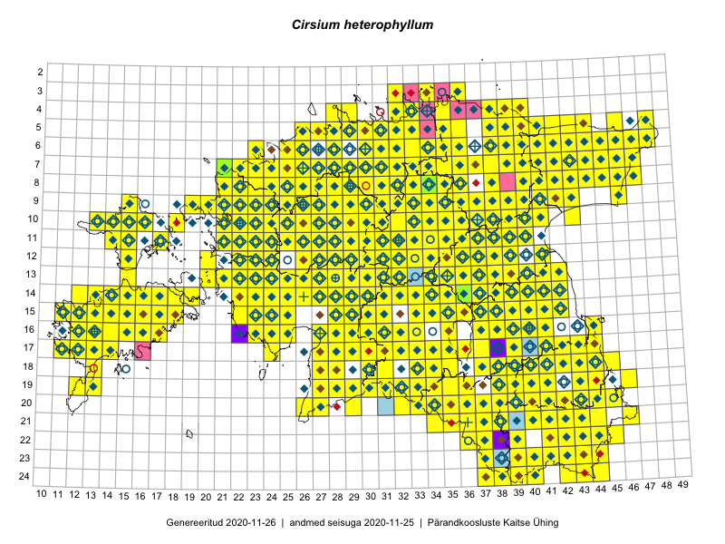

Cirsium heterophyllum — villohakas
Asteraceae :: Cirsium heterophyllum (L.) Hill (1716)

Kaart põhineb 3423 kirjel:
vaatlusi 1639
herbaareksemplare 77
PKÜ kirjeid1 1193
ELFi kirjeid2 498
LVA kirjeid3 16
Taime kaasaegsed ja ajaloolised leiukohad asuvad 458 ruudus.
Tingmärgid ja leidudega ruutude arvud periooditi uues (u) ja 2005 andmestikus (v)
| █ | vahemik | u4 | v5 |
|---|---|---|---|
| █ | 2006–2020 | 425 | – |
| ◆/◇ | 1971–2005 | 392 | 390 |
| ○ | 1921–1970 | 141 | 17 |
| + | kuni 1920 | 17 | 0 |
| × | hävinud | – | 0 |
| ? | kaheldav | – | 0 |
| Ruut | Leidja(d) | Leiuaeg | Kirje |
|---|---|---|---|
| 21-43 | Toomas Kukk, Kersti Tambets, Sten Mander, Kristine Fenske | 2020-09-30 | ruut/ala: Cirsium heterophyllum (L.) Hill |
| 10-22 | Kaili Kattai | 2020-09-25 | punkt: Cirsium heterophyllum (L.) Hill |
| 10-22 | Kaili Kattai | 2020-09-25 | punkt: Cirsium heterophyllum (L.) Hill |
| 09-29 | Toivo Sepp | 2020-09-16 | ELF: 22933 |
| 19-39 | Toomas Kukk | 2020-09-12 | ruut/ala: Cirsium heterophyllum (L.) Hill |
| 19-39 | Toomas Kukk | 2020-09-12 | PKÜ: 21028 |
| 19-39 | Toomas Kukk | 2020-09-12 | PKÜ: 21027 |
| 19-38 | Ott Luuk | 2020-09-12 | punkt: Cirsium heterophyllum (L.) Hill |
| 16-15 | Meeli Mesipuu, Ott Luuk | 2020-09-11 | PKÜ: 20660 |
| 14-32 | Tiit Hallikma | 2020-09-10 | ELF: 1104 |
| 16-28 | Ott Luuk, Meeli Mesipuu | 2020-09-10 | ruut/ala: Cirsium heterophyllum (L.) Hill |
| 24-38 | Meeli Mesipuu | 2020-09-08 | PKÜ: 20696 |
| 24-38 | Meeli Mesipuu | 2020-09-07 | PKÜ: 20478 |
| 24-38 | Meeli Mesipuu | 2020-09-07 | PKÜ: 20476 |
| 24-37 | Meeli Mesipuu | 2020-09-07 | PKÜ: 20480 |
| 24-37;24-38 | Meeli Mesipuu | 2020-09-07 | PKÜ: 20483 |
| 16-30 | Ott Luuk, Meeli Mesipuu | 2020-09-01 | PKÜ: 20872 |
| 16-30 | Ott Luuk, Meeli Mesipuu | 2020-09-01 | PKÜ: 20874 |
| 17-30 | Ott Luuk, Meeli Mesipuu | 2020-09-01 | PKÜ: 21316 |
| 16-22 | Ott Luuk, Meeli Mesipuu | 2020-08-31 | PKÜ: 20680 |
| 14-22 | Toomas Kukk | 2020-08-30 | PKÜ: 20610 |
| 14-22 | Ott Luuk, Meeli Mesipuu | 2020-08-30 | PKÜ: 20623 |
| 19-29 | Meeli Mesipuu | 2020-08-28 | ruut/ala: Cirsium heterophyllum (L.) Hill |
| 15-17 | Mari Reitalu, Sirje Azarov | 2020-08-27–2020-09-06 | ruut/ala: Cirsium heterophyllum (L.) Hill |
| 06-35 | Toomas Kukk, Peedu Saar | 2020-08-27 | ruut/ala: Cirsium heterophyllum (L.) Hill |
| 06-35 | Toomas Kukk | 2020-08-27 | PKÜ: 21009 |
| 06-34 | Peedu Saar | 2020-08-27 | ruut/ala: Cirsium heterophyllum (L.) Hill |
| 11-28 | Ott Luuk | 2020-08-26 | ruut/ala: Cirsium heterophyllum (L.) Hill |
| 07-41 | Meeli Mesipuu | 2020-08-26 | PKÜ: 20413 |
| 10-36 | Peedu Saar | 2020-08-25 | ruut/ala: Cirsium heterophyllum (L.) Hill |
| 10-32 | Ott Luuk | 2020-08-25 | PKÜ: 20583 |
| 11-31 | Ott Luuk | 2020-08-24 | ruut/ala: Cirsium heterophyllum (L.) Hill |
| 10-29 | Ott Luuk | 2020-08-24 | punkt: Cirsium heterophyllum (L.) Hill |
| 10-29 | Ott Luuk | 2020-08-24 | ruut/ala: Cirsium heterophyllum (L.) Hill |
| 14-15 | Mari Reitalu, Sirje Azarov | 2020-08-24 | ruut/ala: Cirsium heterophyllum (L.) Hill |
| 14-14 | Mari Reitalu, Sirje Azarov | 2020-08-24 | ruut/ala: Cirsium heterophyllum (L.) Hill |
| 18-33 | Peedu Saar | 2020-08-21 | ruut/ala: Cirsium heterophyllum (L.) Hill |
| 18-33 | Peedu Saar | 2020-08-21 | PKÜ: 20924 |
| 18-33 | Ott Luuk, Jaak-Albert Metsoja | 2020-08-21 | ruut/ala: Cirsium heterophyllum (L.) Hill |
| 18-33 | Ott Luuk, Jaak-Albert Metsoja | 2020-08-21 | PKÜ: 20885 |
| 18-33 | Ott Luuk, Jaak-Albert Metsoja | 2020-08-21 | PKÜ: 20886 |
| 14-16 | Mari Reitalu, Sirje Azarov | 2020-08-20 | ruut/ala: Cirsium heterophyllum (L.) Hill |
| 03-34 | Toomas Kukk, Ott Luuk, Kersti Tambets, Sten Mander, Kristine Fenske, Maie Itse | 2020-08-19 | ruut/ala: Cirsium heterophyllum (L.) Hill |
| 11-38 | Peedu Saar | 2020-08-19 | ruut/ala: Cirsium heterophyllum (L.) Hill |
| 12-39 | Peedu Saar | 2020-08-19 | ruut/ala: Cirsium heterophyllum (L.) Hill |
| 19-36 | Meeli Mesipuu | 2020-08-19 | ruut/ala: Cirsium heterophyllum (L.) Hill |
| 12-37 | Ulvi Selgis | 2020-08-11 | punkt: Cirsium heterophyllum (L.) Hill |
| 15-15 | Mari Reitalu, Sirje Azarov | 2020-08-07 | ruut/ala: Cirsium heterophyllum (L.) Hill |
| 22-42 | Toomas Kukk, Eerik Leibak | 2020-08-05 | ruut/ala: Cirsium heterophyllum (L.) Hill |
| 10-23 | Ott Luuk | 2020-08-05 | ruut/ala: Cirsium heterophyllum (L.) Hill |
| 14-40 | Peedu Saar | 2020-08-03 | ruut/ala: Cirsium heterophyllum (L.) Hill |
| 07-45 | Toomas Kukk | 2020-07-29 | ruut/ala: Cirsium heterophyllum (L.) Hill |
| 07-45 | Toomas Kukk | 2020-07-29 | ELF: 1944 |
| 07-45 | Toomas Kukk | 2020-07-29 | PKÜ: 21082 |
| 07-44 | Toomas Kukk | 2020-07-29 | PKÜ: 21083 |
| 07-44 | Peedu Saar | 2020-07-29 | PKÜ: 21085 |
| 09-43 | Toomas Kukk | 2020-07-28 | ruut/ala: Cirsium heterophyllum (L.) Hill |
| 09-43 | Toomas Kukk | 2020-07-28 | PKÜ: 21093 |
| 08-43 | Toomas Kukk | 2020-07-28 | PKÜ: 21096 |
| 09-42 | Toomas Kukk | 2020-07-28 | PKÜ: 21099 |
| 08-43 | Peedu Saar | 2020-07-28 | ruut/ala: Cirsium heterophyllum (L.) Hill |
| 13-38 | Peedu Saar | 2020-07-28 | ruut/ala: Cirsium heterophyllum (L.) Hill |
| 08-42 | Peedu Saar | 2020-07-28 | PKÜ: 20495 |
| 08-42 | Peedu Saar | 2020-07-28 | PKÜ: 20497 |
| 08-42 | Peedu Saar | 2020-07-28 | PKÜ: 20501 |
| 09-42 | Peedu Saar | 2020-07-28 | PKÜ: 20522 |
| 09-42 | Peedu Saar | 2020-07-28 | PKÜ: 20526 |
| 14-14 | Mari Reitalu, Sirje Azarov, Aira Alasi | 2020-07-23 | ruut/ala: Cirsium heterophyllum (L.) Hill |
| 08-25 | Ott Luuk | 2020-07-22–2020-07-23 | ruut/ala: Cirsium heterophyllum (L.) Hill |
| 09-26 | Ott Luuk | 2020-07-21–2020-07-23 | ruut/ala: Cirsium heterophyllum (L.) Hill |
| 15-14 | Mari Reitalu, Sirje Azarov | 2020-07-21 | ruut/ala: Cirsium heterophyllum (L.) Hill |
| 06-31 | Eerik Leibak | 2020-07-19 | ELF: 21425 |
| 19-39 | Meeli Mesipuu | 2020-07-15 | PKÜ: 20181 |
| 19-39 | Meeli Mesipuu | 2020-07-15 | PKÜ: 20182 |
| 07-31 | Eerik Leibak | 2020-07-14 | ELF: 305 |
| 05-32 | Rein Kalamees | 2020-07-12 | ruut/ala: Cirsium heterophyllum (L.) Hill |
| 12-38 | Enn Selgis | 2020-07-08 | LVA: 312989424 |
| 16-15 | Mari Reitalu, Sirje Azarov, Anne Teigamägi | 2020-07-07 | ruut/ala: Cirsium heterophyllum (L.) Hill |
| 10-24 | Kaili Kattai | 2020-07-06 | punkt: Cirsium heterophyllum (L.) Hill |
| 05-31 | Rein Kalamees | 2020-07-05 | ruut/ala: Cirsium heterophyllum (L.) Hill |
| 17-11 | Rein Kalamees, Ott Luuk | 2020-07-03 | punkt: Cirsium heterophyllum (L.) Hill |
| 17-11 | Rein Kalamees, Ott Luuk | 2020-07-03 | PKÜ: 20455 |
| 17-11 | Ott Luuk, Rein Kalamees | 2020-07-01 | PKÜ: 20215 |
| 07-28 | Ott Luuk | 2020-06-21 | punkt: Cirsium heterophyllum (L.) Hill |
| 08-28 | Ott Luuk | 2020-06-21 | ruut/ala: Cirsium heterophyllum (L.) Hill |
| 07-28 | Ott Luuk | 2020-06-21 | ruut/ala: Cirsium heterophyllum (L.) Hill |
| 07-29 | Toomas Kukk, Martin Tikk, Rein Kalamees | 2020-06-17 | ruut/ala: Cirsium heterophyllum (L.) Hill |
| 06-26 | Toomas Kukk, Martin Tikk | 2020-06-17 | PKÜ: 20771 |
| 11-27 | Peedu Saar | 2020-06-17 | PKÜ: 21218 |
| 11-27 | Peedu Saar | 2020-06-17 | PKÜ: 21219 |
| 11-27 | Peedu Saar | 2020-06-17 | PKÜ: 21221 |
| 11-22;12-22 | Ott Luuk, Meeli Mesipuu | 2020-06-17 | PKÜ: 20863 |
| 10-21 | Meeli Mesipuu, Ott Luuk | 2020-06-17 | PKÜ: 21121 |
| 09-21 | Peedu Saar | 2020-06-16 | punkt: Cirsium heterophyllum (L.) Hill |
| 09-21 | Peedu Saar | 2020-06-16 | PKÜ: 20426 |
| 09-21 | Peedu Saar | 2020-06-16 | PKÜ: 20427 |
| 08-27 | Toomas Kukk, Rein Kalamees | 2020-06-15 | PKÜ: 20462 |
| 09-28 | Toomas Kukk, Rein Kalamees | 2020-06-15 | PKÜ: 20465 |
| 08-27 | Toomas Kukk | 2020-06-15 | PKÜ: 20464 |
| 07-28 | Toomas Kukk | 2020-06-15 | PKÜ: 20491 |
| 07-28 | Toomas Kukk | 2020-06-15 | PKÜ: 20489 |
| 07-28 | Rein Kalamees | 2020-06-15 | PKÜ: 20752 |
| 07-28 | Rein Kalamees | 2020-06-15 | PKÜ: 21134 |
| 11-32 | Peedu Saar, Ott Luuk | 2020-06-15 | PKÜ: 20410 |
| 11-32 | Peedu Saar | 2020-06-15 | PKÜ: 20417 |
| 11-32 | Peedu Saar | 2020-06-15 | PKÜ: 20418 |
| 11-32 | Ott Luuk, Peedu Saar | 2020-06-15 | PKÜ: 20415 |
| 11-32 | Ott Luuk, Peedu Saar | 2020-06-15 | PKÜ: 20416 |
| 13-31 | Meeli Mesipuu | 2020-06-15 | PKÜ: 21138 |
| 04-32 | Peedu Saar, Ene Kook | 2020-06-11 | ruut/ala: Cirsium heterophyllum (L.) Hill |
| 04-32 | Peedu Saar | 2020-06-11 | PKÜ: 20375 |
| 04-33 | Meeli Mesipuu | 2020-06-11 | PKÜ: 21073 |
| 04-33 | Meeli Mesipuu | 2020-06-11 | PKÜ: 21075 |
| 05-34 | Rein Kalamees, Ott Luuk | 2020-06-10 | PKÜ: 20651 |
| 04-33 | Ene Kook | 2020-06-10 | PKÜ: 20357 |
| 05-34 | Rein Kalamees, Ott Luuk | 2020-06-09 | PKÜ: 20262 |
| 03-34 | Peedu Saar | 2020-06-09 | PKÜ: 20333 |
| 04-33 | Meeli Mesipuu, Toomas Kukk | 2020-06-09 | PKÜ: 21051 |
| 04-33 | Meeli Mesipuu | 2020-06-09 | PKÜ: 21054 |
| 09-35 | Toomas Kukk, Meeli Mesipuu | 2020-06-08 | ruut/ala: Cirsium heterophyllum (L.) Hill |
| 07-37 | Toomas Kukk, Meeli Mesipuu | 2020-06-08 | ruut/ala: Cirsium heterophyllum (L.) Hill |
| 09-35 | Toomas Kukk, Meeli Mesipuu | 2020-06-08 | PKÜ: 20737 |
| 09-35 | Toomas Kukk, Meeli Mesipuu | 2020-06-08 | PKÜ: 20738 |
| 07-37 | Toomas Kukk, Meeli Mesipuu | 2020-06-08 | PKÜ: 20792 |
| 04-34 | Ene Kook, Peedu Saar | 2020-06-08 | PKÜ: 20287 |
| 23-40 | Taavi Tatsi, Jaak-Albert Metsoja | 2020-06-06 | punkt: Cirsium heterophyllum (L.) Hill |
| 10-28 | Kalev Tihkan | 2020-06-06 | punkt: Cirsium heterophyllum (L.) Hill |
| 10-23 | Kaili Kattai | 2020-06-06 | punkt: Cirsium heterophyllum (L.) Hill |
| 10-23 | Kaili Kattai | 2020-06-06 | punkt: Cirsium heterophyllum (L.) Hill |
| 10-22 | Kaili Kattai | 2020-06-06 | punkt: Cirsium heterophyllum (L.) Hill |
| 16-13 | Mari Reitalu, Sirje Azarov | 2019-09-26 | ruut/ala: Cirsium heterophyllum (L.) Hill |
| 16-13;16-14 | Mari Reitalu, Sirje Azarov | 2019-09-26 | ELF: 80 |
| 16-13;16-14 | Mari Reitalu, Sirje Azarov | 2019-09-26 | ELF: 81 |
| 18-44 | Peedu Saar, Ott Luuk | 2019-09-24 | ruut/ala: Cirsium heterophyllum (L.) Hill |
| 20-45 | Peedu Saar, Ott Luuk | 2019-09-24 | ruut/ala: Cirsium heterophyllum (L.) Hill |
| 18-44 | Ott Luuk, Peedu Saar | 2019-09-24 | punkt: Cirsium heterophyllum (L.) Hill |
| 10-22 | Toomas Kukk, Peedu Saar | 2019-09-19 | ruut/ala: Cirsium heterophyllum (L.) Hill |
| 10-21 | Ott Luuk | 2019-09-19 | ruut/ala: Cirsium heterophyllum (L.) Hill |
| 09-19 | Toomas Kukk, Peedu Saar | 2019-09-17 | ruut/ala: Cirsium heterophyllum (L.) Hill |
| 05-39 | Kaili Kattai | 2019-09-13 | punkt: Cirsium heterophyllum (L.) Hill |
| 08-44 | Thea Kull, Toomas Kukk | 2019-09-12 | ruut/ala: Cirsium heterophyllum (L.) Hill |
| 07-45 | Thea Kull, Toomas Kukk | 2019-09-12 | ruut/ala: Cirsium heterophyllum (L.) Hill |
| 05-48 | Peedu Saar, Timo Luhamäe | 2019-09-12 | ruut/ala: Cirsium heterophyllum (L.) Hill |
| 07-43 | Meeli Mesipuu, Ott Luuk | 2019-09-12 | ruut/ala: Cirsium heterophyllum (L.) Hill |
| 07-44 | Meeli Mesipuu, Ott Luuk | 2019-09-12 | ruut/ala: Cirsium heterophyllum (L.) Hill |
| 06-45 | Thea Kull, Toomas Kukk | 2019-09-11 | punkt: Cirsium heterophyllum (L.) Hill |
| 09-46 | Peedu Saar, Timo Luhamäe | 2019-09-11 | ruut/ala: Cirsium heterophyllum (L.) Hill |
| 05-44 | Ott Luuk, Meeli Mesipuu | 2019-09-11 | punkt: Cirsium heterophyllum (L.) Hill |
| 06-44 | Ott Luuk, Meeli Mesipuu | 2019-09-11 | ruut/ala: Cirsium heterophyllum (L.) Hill |
| 05-44 | Meeli Mesipuu, Ott Luuk | 2019-09-11 | ruut/ala: Cirsium heterophyllum (L.) Hill |
| 10-39 | Toomas Kukk, Thea Kull | 2019-09-10 | ruut/ala: Cirsium heterophyllum (L.) Hill |
| 10-40 | Toomas Kukk, Thea Kull | 2019-09-10 | ruut/ala: Cirsium heterophyllum (L.) Hill |
| 08-41 | Peedu Saar, Timo Luhamäe | 2019-09-10 | ruut/ala: Cirsium heterophyllum (L.) Hill |
| 09-41 | Peedu Saar, Timo Luhamäe | 2019-09-10 | ruut/ala: Cirsium heterophyllum (L.) Hill |
| 08-43 | Ott Luuk, Meeli Mesipuu | 2019-09-10 | ruut/ala: Cirsium heterophyllum (L.) Hill |
| 10-23 | Tõnu Ploompuu | 2019-09-07 | ELF: 193 |
| 04-33 | Thea Kull | 2019-09-06 | punkt: Cirsium heterophyllum (L.) Hill |
| 08-24 | Peedu Saar, Ott Luuk | 2019-09-05 | ruut/ala: Cirsium heterophyllum (L.) Hill |
| 08-25 | Ott Luuk, Peedu Saar | 2019-09-05 | ruut/ala: Cirsium heterophyllum (L.) Hill |
| 09-22 | Ott Luuk | 2019-09-04 | punkt: Cirsium heterophyllum (L.) Hill |
| 09-22 | Ott Luuk | 2019-09-04 | ELF: 3020 |
| 14-14 | Mari Reitalu, Sirje Azarov, Anne Teigamägi | 2019-09-04 | ruut/ala: Cirsium heterophyllum (L.) Hill |
| 09-22 | Ott Luuk | 2019-09-03–2019-09-04 | ruut/ala: Cirsium heterophyllum (L.) Hill |
| 08-21 | Peedu Saar | 2019-09-03 | ruut/ala: Cirsium heterophyllum (L.) Hill |
| 09-23 | Ott Luuk | 2019-09-03 | ruut/ala: Cirsium heterophyllum (L.) Hill |
| 16-40 | Kaili Kattai | 2019-09-03 | punkt: Cirsium heterophyllum (L.) Hill |
| 15-13 | Sirje Azarov, Mari Reitalu | 2019-08-31 | ELF: 9 |
| 15-13 | Mari Reitalu, Sirje Azarov | 2019-08-31 | ruut/ala: Cirsium heterophyllum (L.) Hill |
| 15-13 | Mari Reitalu, Sirje Azarov | 2019-08-31 | ELF: 20989 |
| 08-30 | Ott Luuk, Toivo Sepp | 2019-08-30 | ruut/ala: Cirsium heterophyllum (L.) Hill |
| 15-29 | Peedu Saar, Toomas Kukk | 2019-08-29 | ruut/ala: Cirsium heterophyllum (L.) Hill |
| 13-31 | Ott Luuk, Eerik Leibak | 2019-08-29 | ruut/ala: Cirsium heterophyllum (L.) Hill |
| 16-32 | Mari Reitalu, Thea Kull, Martin Tikk | 2019-08-29 | ruut/ala: Cirsium heterophyllum (L.) Hill |
| 14-31 | Ott Luuk, Eerik Leibak | 2019-08-28 | ruut/ala: Cirsium heterophyllum (L.) Hill |
| 14-30 | Ott Luuk, Eerik Leibak | 2019-08-28 | ruut/ala: Cirsium heterophyllum (L.) Hill |
| 15-31 | Meeli Mesipuu, Timo Luhamäe | 2019-08-28 | ruut/ala: Cirsium heterophyllum (L.) Hill |
| 15-31 | Meeli Mesipuu, Timo Luhamäe | 2019-08-28 | punkt: Cirsium heterophyllum (L.) Hill |
| 13-30 | Mari Reitalu, Thea Kull | 2019-08-28 | ruut/ala: Cirsium heterophyllum (L.) Hill |
| 13-29 | Mari Reitalu, Thea Kull | 2019-08-28 | ruut/ala: Cirsium heterophyllum (L.) Hill |
| 17-33 | Toomas Kukk, Peedu Saar, Martin Tikk | 2019-08-27 | ruut/ala: Cirsium heterophyllum (L.) Hill |
| 17-32 | Peedu Saar, Martin Tikk, Toomas Kukk | 2019-08-27 | ruut/ala: Cirsium heterophyllum (L.) Hill |
| 17-31 | Peedu Saar, Martin Tikk, Toomas Kukk | 2019-08-27 | ruut/ala: Cirsium heterophyllum (L.) Hill |
| 12-36 | Ott Luuk, Eerik Leibak | 2019-08-27 | ruut/ala: Cirsium heterophyllum (L.) Hill |
| 12-35 | Ott Luuk, Eerik Leibak | 2019-08-27 | ruut/ala: Cirsium heterophyllum (L.) Hill |
| 12-34 | Ott Luuk, Eerik Leibak | 2019-08-27 | ruut/ala: Cirsium heterophyllum (L.) Hill |
| 17-13 | Sirje Azarov, Mari Reitalu | 2019-08-25 | ELF: 25 |
| 10-22 | Tõnu Ploompuu | 2019-08-21 | ELF: 281 |
| 18-44 | Peedu Saar, Ott Luuk | 2019-08-21 | ruut/ala: Cirsium heterophyllum (L.) Hill |
| 18-43 | Peedu Saar, Ott Luuk | 2019-08-21 | ruut/ala: Cirsium heterophyllum (L.) Hill |
| 17-13 | Mari Reitalu, Sirje Azarov | 2019-08-19 | ELF: 16715 |
| 11-26 | Thea Kull | 2019-08-17 | ruut/ala: Cirsium heterophyllum (L.) Hill |
| 11-26 | Thea Kull | 2019-08-17 | ELF: 24724 |
| 09-22 | Peedu Saar | 2019-08-16 | ruut/ala: Cirsium heterophyllum (L.) Hill |
| 09-22 | Peedu Saar | 2019-08-16 | ELF: 24823 |
| 10-21 | Tõnu Ploompuu | 2019-08-15 | ELF: 222 |
| 07-21 | Peedu Saar | 2019-08-15 | TAA0149637: Cirsium heterophyllum (L.) Hill |
| 16-13 | Mari Reitalu, Sirje Azarov | 2019-08-15 | ruut/ala: Cirsium heterophyllum (L.) Hill |
| 16-13 | Mari Reitalu, Sirje Azarov | 2019-08-15 | ELF: 14 |
| 16-13 | Mari Reitalu, Sirje Azarov | 2019-08-15 | ELF: 21 |
| 11-36 | Peedu Saar | 2019-08-10 | ruut/ala: Cirsium heterophyllum (L.) Hill |
| 11-36 | Peedu Saar | 2019-08-10 | ruut/ala: Cirsium heterophyllum (L.) Hill |
| 10-34 | Peedu Saar, Timo Luhamäe | 2019-08-08 | ruut/ala: Cirsium heterophyllum (L.) Hill |
| 08-33 | Ott Luuk, Jaak-Albert Metsoja | 2019-08-08 | ruut/ala: Cirsium heterophyllum (L.) Hill |
| 07-33 | Ott Luuk, Jaak-Albert Metsoja | 2019-08-08 | ruut/ala: Cirsium heterophyllum (L.) Hill |
| 07-35 | Toomas Kukk, Rein Kalamees, Kaur Maran | 2019-08-07 | ruut/ala: Cirsium heterophyllum (L.) Hill |
| 05-35 | Peedu Saar, Timo Luhamäe | 2019-08-07 | ruut/ala: Cirsium heterophyllum (L.) Hill |
| 15-12 | Sirje Azarov, Mari Reitalu | 2019-08-06 | ELF: 106 |
| 15-12 | Sirje Azarov, Mari Reitalu | 2019-08-06 | ELF: 2627 |
| 05-30 | Peedu Saar, Timo Luhamäe | 2019-08-06 | ruut/ala: Cirsium heterophyllum (L.) Hill |
| 05-38 | Ott Luuk, Jaak-Albert Metsoja | 2019-08-06 | ruut/ala: Cirsium heterophyllum (L.) Hill |
| 04-39 | Ott Luuk, Jaak-Albert Metsoja | 2019-08-06 | ruut/ala: Cirsium heterophyllum (L.) Hill |
| 05-38 | Ott Luuk, Jaak-Albert Metsoja | 2019-08-06 | punkt: Cirsium heterophyllum (L.) Hill |
| 15-12 | Mari Reitalu, Sirje Azarov | 2019-08-06 | ruut/ala: Cirsium heterophyllum (L.) Hill |
| 06-32 | Toomas Kukk, Rein Kalamees | 2019-08-05 | ruut/ala: Cirsium heterophyllum (L.) Hill |
| 07-31 | Peedu Saar, Timo Luhamäe | 2019-08-05 | ruut/ala: Cirsium heterophyllum (L.) Hill |
| 06-39 | Meeli Mesipuu | 2019-08-05 | ruut/ala: Cirsium heterophyllum (L.) Hill |
| 20-39 | Peedu Saar, Toomas Kukk | 2019-08-01 | ruut/ala: Cirsium heterophyllum (L.) Hill |
| 22-42 | Toomas Kukk, Peedu Saar | 2019-07-31 | ruut/ala: Cirsium heterophyllum (L.) Hill |
| 21-44 | Toomas Kukk, Peedu Saar | 2019-07-31 | ruut/ala: Cirsium heterophyllum (L.) Hill |
| 10-33 | Ott Luuk | 2019-07-31 | ruut/ala: Cirsium heterophyllum (L.) Hill |
| 10-32 | Ott Luuk | 2019-07-31 | ruut/ala: Cirsium heterophyllum (L.) Hill |
| 12-41 | Peedu Saar | 2019-07-30 | ruut/ala: Cirsium heterophyllum (L.) Hill |
| 13-40 | Peedu Saar | 2019-07-30 | ruut/ala: Cirsium heterophyllum (L.) Hill |
| 08-21 | Peedu Saar | 2019-07-26 | ruut/ala: Cirsium heterophyllum (L.) Hill |
| 09-31 | Ott Luuk, Toivo Sepp | 2019-07-25 | ruut/ala: Cirsium heterophyllum (L.) Hill |
| 07-21 | Peedu Saar | 2019-07-24 | ruut/ala: Cirsium heterophyllum (L.) Hill |
| 07-22 | Peedu Saar | 2019-07-24 | ruut/ala: Cirsium heterophyllum (L.) Hill |
| 07-21 | Peedu Saar | 2019-07-24 | ELF: 2041 |
| 08-31 | Ott Luuk, Toivo Sepp | 2019-07-24 | ruut/ala: Cirsium heterophyllum (L.) Hill |
| 17-39 | Thea Kull | 2019-07-23 | ruut/ala: Cirsium heterophyllum (L.) Hill |
| 14-27 | Meeli Mesipuu | 2019-07-19 | ruut/ala: Cirsium heterophyllum (L.) Hill |
| 10-26 | Rein Kalamees | 2019-07-17 | ruut/ala: Cirsium heterophyllum (L.) Hill |
| 16-40 | Meeli Mesipuu | 2019-07-17 | ruut/ala: Cirsium heterophyllum (L.) Hill |
| 16-40 | Meeli Mesipuu | 2019-07-17 | ruut/ala: Cirsium heterophyllum (L.) Hill |
| 17-12 | Mari Reitalu | 2019-07-14 | ELF: 24782 |
| 23-41 | Toomas Kukk, Indrek Tammekänd | 2019-07-12 | ruut/ala: Cirsium heterophyllum (L.) Hill |
| 23-42 | Toomas Kukk, Indrek Tammekänd | 2019-07-12 | ruut/ala: Cirsium heterophyllum (L.) Hill |
| 19-38 | Thea Kull | 2019-07-11 | ruut/ala: Cirsium heterophyllum (L.) Hill |
| 23-44 | Ott Luuk, Tiit Hallikma | 2019-07-11 | ruut/ala: Cirsium heterophyllum (L.) Hill |
| 24-44 | Ott Luuk, Tiit Hallikma | 2019-07-11 | ruut/ala: Cirsium heterophyllum (L.) Hill |
| 24-43 | Ott Luuk, Tiit Hallikma | 2019-07-11 | punkt: Cirsium heterophyllum (L.) Hill |
| 24-43 | Ott Luuk, Tiit Hallikma | 2019-07-11 | ruut/ala: Cirsium heterophyllum (L.) Hill |
| 23-43 | Ott Luuk, Tiit Hallikma | 2019-07-11 | ruut/ala: Cirsium heterophyllum (L.) Hill |
| 19-39 | Thea Kull | 2019-07-10 | ruut/ala: Cirsium heterophyllum (L.) Hill |
| 22-37 | Peedu Saar, Timo Luhamäe | 2019-07-10 | ruut/ala: Cirsium heterophyllum (L.) Hill |
| 20-45 | Ott Luuk, Tiit Hallikma | 2019-07-10 | ruut/ala: Cirsium heterophyllum (L.) Hill |
| 18-41 | Meeli Mesipuu | 2019-07-10 | ruut/ala: Cirsium heterophyllum (L.) Hill |
| 18-42 | Thea Kull, Meeli Mesipuu | 2019-07-09 | ruut/ala: Cirsium heterophyllum (L.) Hill |
| 20-35 | Peedu Saar, Timo Luhamäe | 2019-07-09 | ruut/ala: Cirsium heterophyllum (L.) Hill |
| 20-38 | Peedu Saar, Timo Luhamäe | 2019-07-09 | ruut/ala: Cirsium heterophyllum (L.) Hill |
| 20-43 | Ott Luuk, Tiit Hallikma | 2019-07-09 | ruut/ala: Cirsium heterophyllum (L.) Hill |
| 20-44 | Ott Luuk, Tiit Hallikma | 2019-07-09 | punkt: Cirsium heterophyllum (L.) Hill |
| 20-44 | Ott Luuk, Tiit Hallikma | 2019-07-09 | ruut/ala: Cirsium heterophyllum (L.) Hill |
| 19-41 | Thea Kull | 2019-07-06 | punkt: Cirsium heterophyllum (L.) Hill |
| 15-15 | Toomas Kukk, Eerik Leibak | 2019-07-05 | ruut/ala: Cirsium heterophyllum (L.) Hill |
| 15-15 | Toomas Kukk | 2019-07-05 | ELF: 135 |
| 04-39 | Peedu Saar, Ott Luuk | 2019-07-05 | ruut/ala: Cirsium heterophyllum (L.) Hill |
| 05-40 | Peedu Saar, Ott Luuk | 2019-07-05 | ruut/ala: Cirsium heterophyllum (L.) Hill |
| 06-39 | Peedu Saar, Ott Luuk | 2019-07-05 | ruut/ala: Cirsium heterophyllum (L.) Hill |
| 10-13 | Toomas Kukk | 2019-07-04 | ruut/ala: Cirsium heterophyllum (L.) Hill |
| 10-13 | Toomas Kukk | 2019-07-04 | ELF: 12034 |
| 12-41 | Peedu Saar, Ott Luuk | 2019-07-04 | ruut/ala: Cirsium heterophyllum (L.) Hill |
| 08-41 | Ott Luuk, Peedu Saar | 2019-07-04 | ruut/ala: Cirsium heterophyllum (L.) Hill |
| 10-16 | Toomas Kukk | 2019-07-03 | ruut/ala: Cirsium heterophyllum (L.) Hill |
| 14-39 | Ott Luuk, Kaili Kattai | 2019-07-03 | ruut/ala: Cirsium heterophyllum (L.) Hill |
| 15-40 | Ott Luuk, Kaili Kattai | 2019-07-03 | ruut/ala: Cirsium heterophyllum (L.) Hill |
| 11-15 | Toomas Kukk | 2019-07-02 | ruut/ala: Cirsium heterophyllum (L.) Hill |
| 17-12 | Mari Reitalu | 2019-07-01 | ELF: 4696 |
| 16-41 | Kaili Kattai, Ott Luuk | 2019-06-30 | punkt: Cirsium heterophyllum (L.) Hill |
| 15-12 | Mari Reitalu, Triin Reitalu | 2019-06-27 | ruut/ala: Cirsium heterophyllum (L.) Hill |
| 09-21 | Helle Mäemets | 2019-06-26 | punkt: Cirsium heterophyllum (L.) Hill |
| 13-21 | Ott Luuk, Toomas Kukk, Thea Kull | 2019-06-25 | ruut/ala: Cirsium heterophyllum (L.) Hill |
| 14-36 | Raivo Kalle | 2019-06-22 | TAA0147410: Cirsium heterophyllum (L.) Hill |
| 15-40 | Thea Kull | 2019-06-17 | ruut/ala: Cirsium heterophyllum (L.) Hill |
| 18-30 | Anneli Palo | 2019-06-16 | LVA: -1977344014 |
| 23-40 | Taavi Tatsi, Jaak-Albert Metsoja | 2019-06-14 | punkt: Cirsium heterophyllum (L.) Hill |
| 10-28 | Ott Luuk | 2019-06-14 | punkt: Cirsium heterophyllum (L.) Hill |
| 22-39 | Helen Kivisild | 2019-06-14 | punkt: Cirsium heterophyllum (L.) Hill |
| 10-28 | Aat Sarv, Ott Luuk | 2019-06-14 | punkt: Cirsium heterophyllum (L.) Hill |
| 07-38 | Peedu Saar, Ott Luuk | 2019-06-12 | ruut/ala: Cirsium heterophyllum (L.) Hill |
| 05-33 | Ott Luuk, Peedu Saar | 2019-06-11 | ruut/ala: Cirsium heterophyllum (L.) Hill |
| 17-30 | Indrek Tammekänd | 2019-06-10 | ruut/ala: Cirsium heterophyllum (L.) Hill |
| 15-18 | Meeli Mesipuu | 2019-06-03 | ruut/ala: Cirsium heterophyllum (L.) Hill |
| 15-40 | Ott Luuk, Thea Kull, Meeli Mesipuu | 2019-05-30 | ruut/ala: Cirsium heterophyllum (L.) Hill |
| 16-28 | Indrek Tammekänd | 2019-05-29–2019-08-23 | ruut/ala: Cirsium heterophyllum (L.) Hill |
| 11-17 | Peedu Saar | 2019-05-20 | ruut/ala: Cirsium heterophyllum (L.) Hill |
| 07-35 | Meeli Mesipuu | 2019-05-13 | ruut/ala: Cirsium heterophyllum (L.) Hill |
| 12-37 | Ott Luuk, Meeli Mesipuu | 2018-09-20 | ruut/ala: Cirsium heterophyllum (L.) Hill |
| 19-38 | Ott Luuk, Meeli Mesipuu | 2018-09-20 | ruut/ala: Cirsium heterophyllum (L.) Hill |
| 17-43 | Ott Luuk, Meeli Mesipuu | 2018-09-19 | ruut/ala: Cirsium heterophyllum (L.) Hill |
| 10-25 | Tõnu Ploompuu, Marko Vainu | 2018-09-07 | ELF: 24606 |
| 09-37 | Rein Kalamees | 2018-09-07 | ruut/ala: Cirsium heterophyllum (L.) Hill |
| 08-27 | Ott Luuk, Thea Kull | 2018-09-06 | ruut/ala: Cirsium heterophyllum (L.) Hill |
| 17-43 | Peedu Saar | 2018-09-05 | ruut/ala: Cirsium heterophyllum (L.) Hill |
| 09-42 | Peedu Saar, Toomas Kukk | 2018-09-04 | ruut/ala: Cirsium heterophyllum (L.) Hill |
| 10-32 | Ott Luuk | 2018-08-29 | ruut/ala: Cirsium heterophyllum (L.) Hill |
| 10-32 | Ott Luuk | 2018-08-28 | ruut/ala: Cirsium heterophyllum (L.) Hill |
| 10-31 | Ott Luuk | 2018-08-28 | ruut/ala: Cirsium heterophyllum (L.) Hill |
| 10-30 | Ott Luuk, Toivo Sepp | 2018-08-27 | ruut/ala: Cirsium heterophyllum (L.) Hill |
| 11-28 | Ott Luuk, Toivo Sepp | 2018-08-24–2018-08-30 | ruut/ala: Cirsium heterophyllum (L.) Hill |
| 17-13 | Mari Reitalu, Sirje Azarov | 2018-08-23 | ELF: 2069 |
| 10-22 | Tõnu Ploompuu, Laura Paju | 2018-08-22 | ELF: 203 |
| 11-23 | Tõnu Ploompuu, Laura Paju | 2018-08-22 | ELF: 2431 |
| 11-33 | Ott Luuk, Toivo Sepp | 2018-08-22 | ruut/ala: Cirsium heterophyllum (L.) Hill |
| 22-43 | Eerik Leibak | 2018-08-22 | ELF: 19340 |
| 08-21 | Tõnu Ploompuu, Priit Kukk | 2018-08-21 | ELF: 6083 |
| 10-23 | Tõnu Ploompuu, Priit Kukk | 2018-08-21 | ELF: 24603 |
| 14-31 | Toomas Kukk | 2018-08-18 | ruut/ala: Cirsium heterophyllum (L.) Hill |
| 14-32 | Toomas Kukk | 2018-08-18 | ruut/ala: Cirsium heterophyllum (L.) Hill |
| 14-24 | Peedu Saar, Toomas Kukk, Ott Luuk, Kersti Tambets, Sten Mander | 2018-08-17 | ruut/ala: Cirsium heterophyllum (L.) Hill |
| 13-23 | Peedu Saar, Toomas Kukk, Ott Luuk, Kersti Tambets, Sten Mander | 2018-08-17 | ruut/ala: Cirsium heterophyllum (L.) Hill |
| 13-23 | Ott Luuk, Toomas Kukk, Peedu Saar, Sten Mander, Kersti Tambets | 2018-08-17 | punkt: Cirsium heterophyllum (L.) Hill |
| 17-31 | Peedu Saar, Polina Degtjarenko | 2018-08-14 | ruut/ala: Cirsium heterophyllum (L.) Hill |
| 19-28 | Peedu Saar, Polina Degtjarenko | 2018-08-14 | ruut/ala: Cirsium heterophyllum (L.) Hill |
| 18-30 | Toomas Kukk, Tiit Hallikma | 2018-08-10 | ruut/ala: Cirsium heterophyllum (L.) Hill |
| 11-28 | Toomas Kukk, Tiit Hallikma | 2018-08-10 | ruut/ala: Cirsium heterophyllum (L.) Hill |
| 16-12 | Triin Reitalu, Mari Reitalu | 2018-08-09 | punkt: Cirsium heterophyllum (L.) Hill |
| 17-12 | Triin Reitalu, Mari Lepik | 2018-08-08 | punkt: Cirsium heterophyllum (L.) Hill |
| 17-12 | Triin Reitalu, Mari Lepik | 2018-08-08 | punkt: Cirsium heterophyllum (L.) Hill |
| 07-28 | Peedu Saar, Toomas Kukk | 2018-08-07 | ruut/ala: Cirsium heterophyllum (L.) Hill |
| 06-31 | Peedu Saar, Toomas Kukk | 2018-08-07 | ruut/ala: Cirsium heterophyllum (L.) Hill |
| 14-14 | Mari Reitalu, Sirje Azarov | 2018-08-07 | ELF: 1290 |
| 14-14 | Mari Reitalu, Sirje Azarov | 2018-08-07 | ELF: 24665 |
| 17-12 | Triin Reitalu, Mari Lepik | 2018-08-06 | punkt: Cirsium heterophyllum (L.) Hill |
| 17-12 | Triin Reitalu, Mari Lepik | 2018-08-06 | punkt: Cirsium heterophyllum (L.) Hill |
| 10-22 | Tõnu Ploompuu | 2018-08-05 | ELF: 24593 |
| 12-23 | Tõnu Ploompuu, Mart Tartlan, Helen Valts, Tanel Pihelgas | 2018-08-03 | ELF: 2379 |
| 11-23;11-24 | Tõnu Ploompuu, Mart Tartlan, Helen Valts, Tanel Pihelgas | 2018-08-03 | ELF: 24590 |
| 16-12 | Triin Reitalu, Mari Reitalu | 2018-08-03 | punkt: Cirsium heterophyllum (L.) Hill |
| 16-12 | Triin Reitalu, Mari Reitalu | 2018-08-03 | punkt: Cirsium heterophyllum (L.) Hill |
| 19-32 | Peedu Saar | 2018-08-03 | ELF: 2182 |
| 09-31 | Ott Luuk, Toivo Sepp | 2018-08-02 | ELF: 1065 |
| 09-30 | Ott Luuk, Toivo Sepp | 2018-08-02 | ELF: 24570 |
| 10-31 | Ott Luuk | 2018-08-01 | ruut/ala: Cirsium heterophyllum (L.) Hill |
| 23-43 | Toomas Kukk, Eerik Leibak | 2018-07-18 | ruut/ala: Cirsium heterophyllum (L.) Hill |
| 22-42 | Toomas Kukk | 2018-07-18 | ruut/ala: Cirsium heterophyllum (L.) Hill |
| 10-22 | Meeli Mesipuu | 2018-07-18 | ruut/ala: Cirsium heterophyllum (L.) Hill |
| 09-43 | Toomas Kukk | 2018-07-17 | ruut/ala: Cirsium heterophyllum (L.) Hill |
| 12-24 | Meeli Mesipuu | 2018-07-12 | ruut/ala: Cirsium heterophyllum (L.) Hill |
| 17-12;17-13 | Mari Reitalu, Sirje Azarov | 2018-07-12 | ELF: 2473 |
| 08-26 | Eerik Leibak | 2018-07-12 | ELF: 24543 |
| 15-13 | Triin Reitalu, Ansis Blaus | 2018-07-11 | punkt: Cirsium heterophyllum (L.) Hill |
| 15-13 | Triin Reitalu, Ansis Blaus | 2018-07-11 | punkt: Cirsium heterophyllum (L.) Hill |
| 14-13 | Triin Reitalu, Ansis Blaus | 2018-07-10 | punkt: Cirsium heterophyllum (L.) Hill |
| 17-12 | Mari Reitalu, Sirje Azarov | 2018-07-10 | ELF: 16272 |
| 14-14 | Triin Reitalu, Ansis Blaus | 2018-07-09 | punkt: Cirsium heterophyllum (L.) Hill |
| 14-14 | Triin Reitalu, Ansis Blaus | 2018-07-09 | punkt: Cirsium heterophyllum (L.) Hill |
| 10-39 | Enn Selgis | 2018-07-06 | LVA: 702198020 |
| 06-23 | Ott Luuk, Meeli Mesipuu, Jaak-Albert Metsoja, Mari Metsoja | 2018-07-05 | ruut/ala: Cirsium heterophyllum (L.) Hill |
| 06-23 | Peedu Saar | 2018-07-04 | ruut/ala: Cirsium heterophyllum (L.) Hill |
| 08-27 | Mari Reitalu, Sirje Azarov | 2018-07-01 | ruut/ala: Cirsium heterophyllum (L.) Hill |
| 11-37 | Peedu Saar, Toomas Kukk, Ilmar Uibopuu | 2018-06-30 | ruut/ala: Cirsium heterophyllum (L.) Hill |
| 07-28 | Mari Reitalu, Sirje Azarov | 2018-06-30 | ruut/ala: Cirsium heterophyllum (L.) Hill |
| 23-42 | Miina Krabbi | 2018-06-18 | LVA: -1999618562 |
| 13-20 | Mari Reitalu, Merit Otsus | 2018-06-17 | punkt: Cirsium heterophyllum (L.) Hill |
| 20-39 | Ilmar Uibopuu | 2018-06-15 | LVA: -1339923284 |
| 21-46 | Rein Kalamees, Kersti Püssa | 2018-06-13 | ruut/ala: Cirsium heterophyllum (L.) Hill |
| 19-33 | Mari Reitalu, Elle Roosaluste | 2018-06-02–2018-06-03 | ruut/ala: Cirsium heterophyllum (L.) Hill |
| 19-34 | Mari Reitalu, Elle Roosaluste | 2018-06-02 | ruut/ala: Cirsium heterophyllum (L.) Hill |
| 17-43 | Peedu Saar, Thea Kull, Malle Leht | 2018-05-28–2018-05-30 | ruut/ala: Cirsium heterophyllum (L.) Hill |
| 10-36 | Indrek Tammekänd | 2018-05-27 | ruut/ala: Cirsium heterophyllum (L.) Hill |
| 11-36 | Indrek Tammekänd, Jaak Tammekänd, Agu Leivits, Meelis Leivits, Alar Soppe, Triin Leetmaa, Margus Pensa | 2018-05-25–2018-05-27 | ruut/ala: Cirsium heterophyllum (L.) Hill |
| 05-39 | Meeli Mesipuu | 2018-05-25 | ruut/ala: Cirsium heterophyllum (L.) Hill |
| 24-44 | Toomas Kukk, Peedu Saar | 2018-05-17 | punkt: Cirsium heterophyllum (L.) Hill |
| 23-44 | Peedu Saar, Toomas Kukk | 2018-05-17 | punkt: Cirsium heterophyllum (L.) Hill |
| 24-44 | Peedu Saar, Toomas Kukk | 2018-05-17 | punkt: Cirsium heterophyllum (L.) Hill |
| 16-23 | Indrek Tammekänd | 2017-10-19 | ruut/ala: Cirsium heterophyllum (L.) Hill |
| 06-36 | Peedu Saar, Toomas Kukk | 2017-09-27 | ruut/ala: Cirsium heterophyllum (L.) Hill |
| 08-38 | Peedu Saar, Toomas Kukk | 2017-09-27 | ruut/ala: Cirsium heterophyllum (L.) Hill |
| 11-15 | Peedu Saar, Ott Luuk | 2017-09-13 | ruut/ala: Cirsium heterophyllum (L.) Hill |
| 10-18 | Ott Luuk, Peedu Saar | 2017-09-12 | ruut/ala: Cirsium heterophyllum (L.) Hill |
| 10-16 | Peedu Saar, Ott Luuk | 2017-09-11 | ruut/ala: Cirsium heterophyllum (L.) Hill |
| 08-29 | Peedu Saar, Toomas Kukk | 2017-09-08 | ruut/ala: Cirsium heterophyllum (L.) Hill |
| 11-27 | Peedu Saar, Toomas Kukk | 2017-09-08 | ruut/ala: Cirsium heterophyllum (L.) Hill |
| 11-32 | Peedu Saar, Ott Luuk | 2017-09-08 | punkt: Cirsium heterophyllum (L.) Hill |
| 10-24 | Peedu Saar, Toomas Kukk | 2017-09-07 | ruut/ala: Cirsium heterophyllum (L.) Hill |
| 11-23 | Peedu Saar, Toomas Kukk | 2017-09-07 | ruut/ala: Cirsium heterophyllum (L.) Hill |
| 11-24 | Peedu Saar, Toomas Kukk | 2017-09-07 | ruut/ala: Cirsium heterophyllum (L.) Hill |
| 08-31 | Rein Kalamees | 2017-09-06 | ruut/ala: Cirsium heterophyllum (L.) Hill |
| 14-25 | Peedu Saar, Toomas Kukk | 2017-09-06 | ruut/ala: Cirsium heterophyllum (L.) Hill |
| 20-29 | Toomas Kukk, Ott Luuk, Kersti Tambets, Timo Luhamäe, Sten Mander | 2017-08-30 | ruut/ala: Cirsium heterophyllum (L.) Hill |
| 19-29 | Toomas Kukk, Ott Luuk, Kersti Tambets, Timo Luhamäe, Sten Mander | 2017-08-29 | ruut/ala: Cirsium heterophyllum (L.) Hill |
| 14-35 | Peedu Saar, Susanna Vain | 2017-08-28 | ruut/ala: Cirsium heterophyllum (L.) Hill |
| 14-35 | Meeli Mesipuu, Ott Luuk, Helen Toom | 2017-08-28 | ruut/ala: Cirsium heterophyllum (L.) Hill |
| 11-40 | Peedu Saar, Ott Luuk | 2017-08-23 | ruut/ala: Cirsium heterophyllum (L.) Hill |
| 14-35 | Peedu Saar | 2017-08-15–2017-09-16 | ruut/ala: Cirsium heterophyllum (L.) Hill |
| 14-36 | Meeli Mesipuu, Helen Toom | 2017-08-15 | ruut/ala: Cirsium heterophyllum (L.) Hill |
| 14-37 | Peedu Saar | 2017-08-14 | ruut/ala: Cirsium heterophyllum (L.) Hill |
| 15-37 | Ott Luuk | 2017-08-14 | ruut/ala: Cirsium heterophyllum (L.) Hill |
| 16-28 | Peedu Saar, Timo Luhamäe | 2017-08-11 | ruut/ala: Cirsium heterophyllum (L.) Hill |
| 15-28 | Peedu Saar, Timo Luhamäe | 2017-08-11 | ruut/ala: Cirsium heterophyllum (L.) Hill |
| 14-27 | Ott Luuk, Indrek Tammekänd | 2017-08-11 | ruut/ala: Cirsium heterophyllum (L.) Hill |
| 09-24 | Mari Reitalu, Eerik Leibak | 2017-08-11 | ruut/ala: Cirsium heterophyllum (L.) Hill |
| 15-29 | Ilmar Uibopuu, Toomas Kukk | 2017-08-11 | ruut/ala: Cirsium heterophyllum (L.) Hill |
| 05-26 | Peedu Saar, Timo Luhamäe | 2017-08-10 | ruut/ala: Cirsium heterophyllum (L.) Hill |
| 07-25 | Mari Reitalu, Indrek Tammekänd | 2017-08-10 | ruut/ala: Cirsium heterophyllum (L.) Hill |
| 11-21 | Ilmar Uibopuu, Ott Luuk | 2017-08-10 | ruut/ala: Cirsium heterophyllum (L.) Hill |
| 09-29 | Toomas Kukk, Ilmar Uibopuu, Kadri Kuusksalu | 2017-08-09 | ruut/ala: Cirsium heterophyllum (L.) Hill |
| 08-30 | Thea Kull, Ott Luuk | 2017-08-09 | ruut/ala: Cirsium heterophyllum (L.) Hill |
| 12-24 | Peedu Saar, Timo Luhamäe | 2017-08-09 | ruut/ala: Cirsium heterophyllum (L.) Hill |
| 12-30 | Meeli Mesipuu, Indrek Tammekänd | 2017-08-09 | ruut/ala: Cirsium heterophyllum (L.) Hill |
| 12-27 | Mari Reitalu, Eerik Leibak | 2017-08-09 | ruut/ala: Cirsium heterophyllum (L.) Hill |
| 12-26 | Mari Reitalu, Eerik Leibak | 2017-08-09 | ruut/ala: Cirsium heterophyllum (L.) Hill |
| 09-28 | Ilmar Uibopuu, Kadri Kuusksalu, Toomas Kukk, Ott Luuk | 2017-08-09 | ruut/ala: Cirsium heterophyllum (L.) Hill |
| 08-26 | Toomas Kukk, Ilmar Uibopuu, Kadri Kuusksalu | 2017-08-08 | ruut/ala: Cirsium heterophyllum (L.) Hill |
| 07-26 | Toomas Kukk, Ilmar Uibopuu, Kadri Kuusksalu | 2017-08-08 | ruut/ala: Cirsium heterophyllum (L.) Hill |
| 10-28 | Thea Kull, Ott Luuk | 2017-08-08 | ruut/ala: Cirsium heterophyllum (L.) Hill |
| 07-28 | Peedu Saar, Timo Luhamäe | 2017-08-08 | ruut/ala: Cirsium heterophyllum (L.) Hill |
| 07-27 | Peedu Saar, Timo Luhamäe | 2017-08-08 | ruut/ala: Cirsium heterophyllum (L.) Hill |
| 11-28 | Ott Luuk, Thea Kull | 2017-08-08 | ruut/ala: Cirsium heterophyllum (L.) Hill |
| 09-27 | Meeli Mesipuu, Indrek Tammekänd | 2017-08-08 | ruut/ala: Cirsium heterophyllum (L.) Hill |
| 08-27 | Mari Reitalu, Eerik Leibak | 2017-08-08 | ruut/ala: Cirsium heterophyllum (L.) Hill |
| 08-28 | Mari Reitalu, Eerik Leibak | 2017-08-08 | ruut/ala: Cirsium heterophyllum (L.) Hill |
| 13-37 | Toomas Kukk, Ilmar Uibopuu | 2017-08-07 | ruut/ala: Cirsium heterophyllum (L.) Hill |
| 12-33 | Thea Kull, Ott Luuk | 2017-08-07 | ruut/ala: Cirsium heterophyllum (L.) Hill |
| 05-30 | Rein Kalamees | 2017-08-07 | ruut/ala: Cirsium heterophyllum (L.) Hill |
| 13-34 | Peedu Saar, Timo Luhamäe | 2017-08-07 | ruut/ala: Cirsium heterophyllum (L.) Hill |
| 12-32 | Ott Luuk, Thea Kull | 2017-08-07 | ruut/ala: Cirsium heterophyllum (L.) Hill |
| 11-34 | Thea Kull, Ott Luuk | 2017-08-03 | ruut/ala: Cirsium heterophyllum (L.) Hill |
| 11-33 | Ott Luuk, Thea Kull | 2017-08-03 | ruut/ala: Cirsium heterophyllum (L.) Hill |
| 11-34 | Ott Luuk, Thea Kull | 2017-08-03 | punkt: Cirsium heterophyllum (L.) Hill |
| 12-34 | Ott Luuk, Thea Kull | 2017-08-03 | ruut/ala: Cirsium heterophyllum (L.) Hill |
| 05-27 | Ranno Puumets | 2017-08-02 | ruut/ala: Cirsium heterophyllum (L.) Hill |
| 16-37 | Ott Luuk, Thea Kull | 2017-08-01 | ruut/ala: Cirsium heterophyllum (L.) Hill |
| 24-43 | Meeli Mesipuu | 2017-07-31 | ruut/ala: Cirsium heterophyllum (L.) Hill |
| 22-36 | Ott Luuk, Peedu Saar | 2017-07-28 | ruut/ala: Cirsium heterophyllum (L.) Hill |
| 06-23 | Toomas Kukk | 2017-07-27 | ruut/ala: Cirsium heterophyllum (L.) Hill |
| 23-39 | Peedu Saar, Ott Luuk | 2017-07-27 | ruut/ala: Cirsium heterophyllum (L.) Hill |
| 22-39 | Ott Luuk, Peedu Saar | 2017-07-27 | ruut/ala: Cirsium heterophyllum (L.) Hill |
| 23-39 | Ott Luuk, Peedu Saar | 2017-07-27 | punkt: Cirsium heterophyllum (L.) Hill |
| 16-37 | Meeli Mesipuu | 2017-07-27 | ruut/ala: Cirsium heterophyllum (L.) Hill |
| 16-37 | Meeli Mesipuu | 2017-07-27 | ruut/ala: Cirsium heterophyllum (L.) Hill |
| 14-39 | Peedu Saar | 2017-07-26 | ruut/ala: Cirsium heterophyllum (L.) Hill |
| 06-34 | Meeli Mesipuu | 2017-07-26 | ruut/ala: Cirsium heterophyllum (L.) Hill |
| 20-38 | Ott Luuk, Peedu Saar | 2017-07-25 | ruut/ala: Cirsium heterophyllum (L.) Hill |
| 07-45 | Meeli Mesipuu | 2017-07-25 | ruut/ala: Cirsium heterophyllum (L.) Hill |
| 16-40 | Meeli Mesipuu | 2017-07-22–2017-07-30 | ruut/ala: Cirsium heterophyllum (L.) Hill |
| 20-39 | Ilmar Uibopuu | 2017-07-21–2017-07-24 | ruut/ala: Cirsium heterophyllum (L.) Hill |
| 06-31 | Peedu Saar, Ott Luuk | 2017-07-21 | ruut/ala: Cirsium heterophyllum (L.) Hill |
| 06-33 | Ott Luuk, Peedu Saar | 2017-07-21 | ruut/ala: Cirsium heterophyllum (L.) Hill |
| 06-34 | Peedu Saar, Ott Luuk | 2017-07-19 | ruut/ala: Cirsium heterophyllum (L.) Hill |
| 06-35 | Ott Luuk, Peedu Saar | 2017-07-19 | ruut/ala: Cirsium heterophyllum (L.) Hill |
| 08-40 | Peedu Saar, Ott Luuk | 2017-07-18 | ruut/ala: Cirsium heterophyllum (L.) Hill |
| 08-38 | Ott Luuk, Peedu Saar | 2017-07-18 | ruut/ala: Cirsium heterophyllum (L.) Hill |
| 16-40 | Peedu Saar | 2017-07-10–2017-07-11 | ruut/ala: Cirsium heterophyllum (L.) Hill |
| 12-38 | Ulvi Selgis | 2017-07-09 | LVA: -1469961658 |
| 15-40 | Peedu Saar, Ott Luuk | 2017-07-05 | punkt: Cirsium heterophyllum (L.) Hill |
| 15-41 | Ott Luuk, Peedu Saar | 2017-07-04 | ruut/ala: Cirsium heterophyllum (L.) Hill |
| 16-41 | Peedu Saar, Ott Luuk | 2017-07-03–2017-07-04 | ruut/ala: Cirsium heterophyllum (L.) Hill |
| 17-37 | Helle Mäemets | 2017-07-01 | ruut/ala: Cirsium heterophyllum (L.) Hill |
| 10-15 | Ott Luuk, Toomas Kukk, Peedu Saar, Sander Laherand | 2017-06-30–2017-07-01 | ruut/ala: Cirsium heterophyllum (L.) Hill |
| 11-15 | Ott Luuk, Toomas Kukk, Peedu Saar, Sander Laherand | 2017-06-30 | ruut/ala: Cirsium heterophyllum (L.) Hill |
| 07-39 | Avo Veermäe | 2017-06-26 | LVA: -1842156542 |
| 15-41 | Peedu Saar | 2017-06-22 | ruut/ala: Cirsium heterophyllum (L.) Hill |
| 16-35 | Ott Luuk, Thea Kull | 2017-06-22 | ruut/ala: Cirsium heterophyllum (L.) Hill |
| 15-40 | Peedu Saar | 2017-06-21–2017-06-22 | ruut/ala: Cirsium heterophyllum (L.) Hill |
| 17-37 | Thea Kull, Ott Luuk | 2017-06-21 | ruut/ala: Cirsium heterophyllum (L.) Hill |
| 15-37 | Meeli Mesipuu | 2017-06-21 | punkt: Cirsium heterophyllum (L.) Hill |
| 12-38 | Enn Selgis | 2017-06-21 | LVA: -456837746 |
| 14-35 | Peedu Saar, Ott Luuk | 2017-06-20 | ruut/ala: Cirsium heterophyllum (L.) Hill |
| 15-35 | Ott Luuk, Peedu Saar | 2017-06-20 | ruut/ala: Cirsium heterophyllum (L.) Hill |
| 14-37 | Thea Kull, Meeli Mesipuu | 2017-06-19 | ruut/ala: Cirsium heterophyllum (L.) Hill |
| 15-40 | Peedu Saar, Ott Luuk | 2017-06-19 | ruut/ala: Cirsium heterophyllum (L.) Hill |
| 20-39 | Ilmar Uibopuu | 2017-06-19 | LVA: -1352800096 |
| 13-29 | Ott Luuk | 2017-05-28 | ruut/ala: Cirsium heterophyllum (L.) Hill |
| 13-29 | Ott Luuk | 2017-05-28 | punkt: Cirsium heterophyllum (L.) Hill |
| 22-39 | Anneli Palo | 2017-05-22 | LVA: -2113218102 |
| 06-45 | Tõnu Ploompuu | 2017-05-13 | ruut/ala: Cirsium heterophyllum (L.) Hill |
| 15-12 | Toomas Kukk, Meeli Mesipuu | 2016-10-08 | ruut/ala: Cirsium heterophyllum (L.) Hill |
| 17-13 | Ott Luuk, Peedu Saar | 2016-10-08 | ruut/ala: Cirsium heterophyllum (L.) Hill |
| 19-12 | Ott Luuk, Peedu Saar | 2016-10-07 | ruut/ala: Cirsium heterophyllum (L.) Hill |
| 15-11 | Meeli Mesipuu, Toomas Kukk, Mari Reitalu | 2016-10-07 | ruut/ala: Cirsium heterophyllum (L.) Hill |
| 19-30 | Peedu Saar, Ott Luuk | 2016-10-06 | ruut/ala: Cirsium heterophyllum (L.) Hill |
| 19-31 | Ott Luuk, Peedu Saar | 2016-10-06 | ruut/ala: Cirsium heterophyllum (L.) Hill |
| 16-13 | Toomas Kukk, Meeli Mesipuu | 2016-10-05 | ruut/ala: Cirsium heterophyllum (L.) Hill |
| 07-32 | Peedu Saar, Ott Luuk | 2016-09-28 | ruut/ala: Cirsium heterophyllum (L.) Hill |
| 08-32 | Ott Luuk, Peedu Saar | 2016-09-28 | ruut/ala: Cirsium heterophyllum (L.) Hill |
| 16-16 | Meeli Mesipuu | 2016-09-25 | ruut/ala: Cirsium heterophyllum (L.) Hill |
| 15-15 | Meeli Mesipuu | 2016-09-23 | ruut/ala: Cirsium heterophyllum (L.) Hill |
| 21-34 | Peedu Saar, Ott Luuk | 2016-09-22 | ruut/ala: Cirsium heterophyllum (L.) Hill |
| 20-32 | Meeli Mesipuu, Ott Luuk | 2016-09-18 | ruut/ala: Cirsium heterophyllum (L.) Hill |
| 09-32 | Toomas Kukk, Peedu Saar | 2016-09-16 | ruut/ala: Cirsium heterophyllum (L.) Hill |
| 08-33 | Peedu Saar, Toomas Kukk | 2016-09-15 | ruut/ala: Cirsium heterophyllum (L.) Hill |
| 05-43 | Peedu Saar, Toomas Kukk | 2016-09-13 | ruut/ala: Cirsium heterophyllum (L.) Hill |
| 07-33 | Peedu Saar, Toomas Kukk | 2016-09-13 | ruut/ala: Cirsium heterophyllum (L.) Hill |
| 05-44 | Peedu Saar, Toomas Kukk | 2016-09-13 | ruut/ala: Cirsium heterophyllum (L.) Hill |
| 07-30 | Toomas Kukk, Peedu Saar | 2016-09-09 | ruut/ala: Cirsium heterophyllum (L.) Hill |
| 08-30 | Peedu Saar, Toomas Kukk | 2016-09-09 | ruut/ala: Cirsium heterophyllum (L.) Hill |
| 06-32 | Toomas Kukk, Peedu Saar | 2016-09-08 | ruut/ala: Cirsium heterophyllum (L.) Hill |
| 06-31 | Peedu Saar, Toomas Kukk | 2016-09-08 | ruut/ala: Cirsium heterophyllum (L.) Hill |
| 20-44 | Meeli Mesipuu | 2016-09-08 | ruut/ala: Cirsium heterophyllum (L.) Hill |
| 09-31 | Peedu Saar, Ott Luuk | 2016-09-07 | ruut/ala: Cirsium heterophyllum (L.) Hill |
| 09-30 | Ott Luuk, Peedu Saar | 2016-09-06–2016-09-07 | ruut/ala: Cirsium heterophyllum (L.) Hill |
| 05-38 | Thea Kull, Toomas Kukk | 2016-09-06 | ruut/ala: Cirsium heterophyllum (L.) Hill |
| 06-25 | Peedu Saar, Ott Luuk | 2016-09-06 | ruut/ala: Cirsium heterophyllum (L.) Hill |
| 09-23 | Peedu Saar, Ott Luuk | 2016-09-05 | ruut/ala: Cirsium heterophyllum (L.) Hill |
| 10-25 | Peedu Saar, Ott Luuk | 2016-09-05 | ruut/ala: Cirsium heterophyllum (L.) Hill |
| 10-25 | Ott Luuk, Peedu Saar | 2016-09-05 | punkt: Cirsium heterophyllum (L.) Hill |
| 10-25 | Ott Luuk, Peedu Saar | 2016-09-05 | punkt: Cirsium heterophyllum (L.) Hill |
| 16-17 | Peedu Saar, Ott Luuk | 2016-09-01 | ruut/ala: Cirsium heterophyllum (L.) Hill |
| 05-32 | Toomas Kukk, Sander Laherand | 2016-08-31 | ruut/ala: Cirsium heterophyllum (L.) Hill |
| 14-16 | Ott Luuk, Peedu Saar | 2016-08-31 | ruut/ala: Cirsium heterophyllum (L.) Hill |
| 05-29 | Toomas Kukk, Sander Laherand | 2016-08-29 | ruut/ala: Cirsium heterophyllum (L.) Hill |
| 14-17 | Ott Luuk, Peedu Saar | 2016-08-29 | ruut/ala: Cirsium heterophyllum (L.) Hill |
| 20-36 | Thea Kull, Ott Luuk | 2016-08-23 | ruut/ala: Cirsium heterophyllum (L.) Hill |
| 10-30 | Indrek Tammekänd, Janno Tammekänd, Üllar Tammekänd, Andreas Tammekänd, Tene Johanson | 2016-08-20–2016-08-21 | ruut/ala: Cirsium heterophyllum (L.) Hill |
| 10-29 | Indrek Tammekänd, Janno Tammekänd, Üllar Tammekänd, Andreas Tammekänd, Tene Johanson | 2016-08-20–2016-08-21 | ruut/ala: Cirsium heterophyllum (L.) Hill |
| 23-44 | Peedu Saar, Karin Kikas | 2016-08-19 | ruut/ala: Cirsium heterophyllum (L.) Hill |
| 22-45 | Peedu Saar, Karin Kikas | 2016-08-18 | ruut/ala: Cirsium heterophyllum (L.) Hill |
| 21-44 | Peedu Saar, Karin Kikas | 2016-08-18 | ruut/ala: Cirsium heterophyllum (L.) Hill |
| 14-19 | Mari Reitalu, Sirje Azarov | 2016-08-18 | ruut/ala: Cirsium heterophyllum (L.) Hill |
| 19-27 | Ott Luuk, Meeli Mesipuu | 2016-08-15 | ruut/ala: Cirsium heterophyllum (L.) Hill |
| 15-17 | Peedu Saar, Toomas Kukk | 2016-08-13 | ruut/ala: Cirsium heterophyllum (L.) Hill |
| 15-16 | Meeli Mesipuu, Maret Gerz | 2016-08-13 | ruut/ala: Cirsium heterophyllum (L.) Hill |
| 14-14 | Peedu Saar, Maret Gerz | 2016-08-12 | ruut/ala: Cirsium heterophyllum (L.) Hill |
| 15-14 | Maret Gerz, Peedu Saar | 2016-08-12 | ruut/ala: Cirsium heterophyllum (L.) Hill |
| 09-36 | Ott Luuk | 2016-08-11 | ruut/ala: Cirsium heterophyllum (L.) Hill |
| 13-15 | Maret Gerz, Peedu Saar | 2016-08-11 | ruut/ala: Cirsium heterophyllum (L.) Hill |
| 12-15 | Toomas Kukk, Meeli Mesipuu | 2016-08-10 | ruut/ala: Cirsium heterophyllum (L.) Hill |
| 10-15 | Toomas Kukk, Sander Laherand, Nele Jõessar | 2016-08-09 | ruut/ala: Cirsium heterophyllum (L.) Hill |
| 11-15 | Thea Kull, Peedu Saar | 2016-08-09 | ruut/ala: Cirsium heterophyllum (L.) Hill |
| 10-14 | Sander Laherand, Toomas Kukk, Nele Jõessar | 2016-08-09 | ruut/ala: Cirsium heterophyllum (L.) Hill |
| 11-14 | Peedu Saar, Thea Kull | 2016-08-09 | ruut/ala: Cirsium heterophyllum (L.) Hill |
| 09-40 | Ott Luuk, Eerik Leibak | 2016-08-09 | ruut/ala: Cirsium heterophyllum (L.) Hill |
| 09-39 | Ott Luuk, Eerik Leibak | 2016-08-09 | ruut/ala: Cirsium heterophyllum (L.) Hill |
| 10-16 | Meeli Mesipuu, Maret Gerz | 2016-08-09 | ruut/ala: Cirsium heterophyllum (L.) Hill |
| 14-15 | Mari Reitalu, Sirje Azarov | 2016-08-09 | ruut/ala: Cirsium heterophyllum (L.) Hill |
| 10-38 | Ott Luuk, Eerik Leibak | 2016-08-08 | ruut/ala: Cirsium heterophyllum (L.) Hill |
| 09-38 | Ott Luuk, Eerik Leibak | 2016-08-08 | ruut/ala: Cirsium heterophyllum (L.) Hill |
| 11-17 | Maret Gerz, Meeli Mesipuu | 2016-08-08 | ruut/ala: Cirsium heterophyllum (L.) Hill |
| 21-43 | Thea Kull, Peedu Saar | 2016-08-05 | ruut/ala: Cirsium heterophyllum (L.) Hill |
| 20-43 | Peedu Saar, Thea Kull | 2016-08-05 | ruut/ala: Cirsium heterophyllum (L.) Hill |
| 09-42 | Ott Luuk, Eerik Leibak | 2016-08-05 | ruut/ala: Cirsium heterophyllum (L.) Hill |
| 09-41 | Ott Luuk, Eerik Leibak | 2016-08-05 | ruut/ala: Cirsium heterophyllum (L.) Hill |
| 22-43 | Peedu Saar, Thea Kull | 2016-08-04 | ruut/ala: Cirsium heterophyllum (L.) Hill |
| 10-41 | Ott Luuk, Eerik Leibak | 2016-08-04 | ruut/ala: Cirsium heterophyllum (L.) Hill |
| 10-39 | Ott Luuk, Eerik Leibak | 2016-08-03 | ruut/ala: Cirsium heterophyllum (L.) Hill |
| 10-40 | Ott Luuk, Eerik Leibak | 2016-08-03 | ruut/ala: Cirsium heterophyllum (L.) Hill |
| 17-12 | Mari Reitalu | 2016-08-02 | punkt: Cirsium heterophyllum (L.) Hill |
| 18-13 | Mari Reitalu, Sirje Azarov | 2016-07-31 | ruut/ala: Cirsium heterophyllum (L.) Hill |
| 08-40 | Toomas Kukk, Tiit Hallikma | 2016-07-29 | ruut/ala: Cirsium heterophyllum (L.) Hill |
| 05-30 | Sander Laherand, Eerik Leibak | 2016-07-29 | ruut/ala: Cirsium heterophyllum (L.) Hill |
| 08-42 | Peedu Saar, Timo Luhamäe | 2016-07-29 | ruut/ala: Cirsium heterophyllum (L.) Hill |
| 08-41 | Peedu Saar, Timo Luhamäe | 2016-07-29 | ruut/ala: Cirsium heterophyllum (L.) Hill |
| 09-43 | Hannes Pehlak, Ott Luuk | 2016-07-29 | ruut/ala: Cirsium heterophyllum (L.) Hill |
| 04-40 | Tiit Hallikma, Ott Luuk | 2016-07-28 | ruut/ala: Cirsium heterophyllum (L.) Hill |
| 06-40 | Sander Laherand, Peedu Saar | 2016-07-28 | ruut/ala: Cirsium heterophyllum (L.) Hill |
| 05-39 | Ott Luuk, Tiit Hallikma | 2016-07-28 | ruut/ala: Cirsium heterophyllum (L.) Hill |
| 04-33 | Meeli Mesipuu, Timo Luhamäe | 2016-07-28 | ruut/ala: Cirsium heterophyllum (L.) Hill |
| 03-32 | Meeli Mesipuu, Timo Luhamäe | 2016-07-28 | ruut/ala: Cirsium heterophyllum (L.) Hill |
| 07-38 | Liina Oja, Eerik Leibak | 2016-07-28 | ruut/ala: Cirsium heterophyllum (L.) Hill |
| 08-38 | Liina Oja, Eerik Leibak | 2016-07-28 | ruut/ala: Cirsium heterophyllum (L.) Hill |
| 04-39 | Hannes Pehlak, Toomas Kukk, Susanna Vain | 2016-07-28 | ruut/ala: Cirsium heterophyllum (L.) Hill |
| 08-36 | Thea Kull, Timo Luhamäe | 2016-07-27 | ruut/ala: Cirsium heterophyllum (L.) Hill |
| 07-36 | Thea Kull, Timo Luhamäe | 2016-07-27 | ruut/ala: Cirsium heterophyllum (L.) Hill |
| 05-35 | Peedu Saar, Liina Oja, Susanna Vain | 2016-07-27 | ruut/ala: Cirsium heterophyllum (L.) Hill |
| 07-37 | Meeli Mesipuu, Tiit Hallikma | 2016-07-27 | ruut/ala: Cirsium heterophyllum (L.) Hill |
| 05-41 | Tiit Hallikma, Tõnu Ploompuu | 2016-07-26 | ruut/ala: Cirsium heterophyllum (L.) Hill |
| 04-35 | Sander Laherand, Ott Luuk, Nele Jõessar | 2016-07-26 | ruut/ala: Cirsium heterophyllum (L.) Hill |
| 14-14 | Mari Reitalu, Sirje Azarov | 2016-07-26 | ruut/ala: Cirsium heterophyllum (L.) Hill |
| 06-39 | Thea Kull, Hannes Pehlak | 2016-07-25 | ruut/ala: Cirsium heterophyllum (L.) Hill |
| 04-28 | Sander Laherand, Tõnu Ploompuu, Nele Jõessar | 2016-07-25 | ruut/ala: Cirsium heterophyllum (L.) Hill |
| 09-36 | Peedu Saar, Liina Oja, Susanna Vain | 2016-07-25 | ruut/ala: Cirsium heterophyllum (L.) Hill |
| 10-37 | Peedu Saar, Liina Oja, Susanna Vain | 2016-07-25 | ruut/ala: Cirsium heterophyllum (L.) Hill |
| 09-33 | Ott Luuk, Eerik Leibak | 2016-07-25 | ruut/ala: Cirsium heterophyllum (L.) Hill |
| 11-36 | Meeli Mesipuu, Timo Luhamäe | 2016-07-25 | ruut/ala: Cirsium heterophyllum (L.) Hill |
| 08-31 | Erkki Otsman, Sergei Smirnov | 2016-07-24 | ruut/ala: Cirsium heterophyllum (L.) Hill |
| 13-38 | Eeva-Maria Jeletsky, Tarmo Niitla | 2016-07-23 | ruut/ala: Cirsium heterophyllum (L.) Hill |
| 14-37 | Eeva-Maria Jeletsky, Tarmo Niitla | 2016-07-23 | ruut/ala: Cirsium heterophyllum (L.) Hill |
| 12-33 | Tõnu Ploompuu, Marko Veinbergs, Eerik Leibak | 2016-07-22 | ruut/ala: Cirsium heterophyllum (L.) Hill |
| 12-36 | Toomas Kukk, Raivo Kalle | 2016-07-22 | ruut/ala: Cirsium heterophyllum (L.) Hill |
| 13-36 | Toomas Kukk, Raivo Kalle | 2016-07-22 | ruut/ala: Cirsium heterophyllum (L.) Hill |
| 10-31 | Toivo Sepp, Peedu Saar | 2016-07-22 | ruut/ala: Cirsium heterophyllum (L.) Hill |
| 15-34 | Thea Kull, Tiit Hallikma | 2016-07-22 | ruut/ala: Cirsium heterophyllum (L.) Hill |
| 14-34 | Thea Kull, Tiit Hallikma | 2016-07-22 | ruut/ala: Cirsium heterophyllum (L.) Hill |
| 13-29 | Sirje Azarov, Oliver Parrest | 2016-07-22 | ruut/ala: Cirsium heterophyllum (L.) Hill |
| 11-31 | Peedu Saar, Toivo Sepp | 2016-07-22 | ruut/ala: Cirsium heterophyllum (L.) Hill |
| 12-35 | Ott Luuk, Hannes Pehlak | 2016-07-22 | ruut/ala: Cirsium heterophyllum (L.) Hill |
| 13-35 | Ott Luuk, Hannes Pehlak | 2016-07-22 | ruut/ala: Cirsium heterophyllum (L.) Hill |
| 12-34 | Meeli Mesipuu, Timo Luhamäe | 2016-07-22 | ruut/ala: Cirsium heterophyllum (L.) Hill |
| 13-34 | Meeli Mesipuu, Timo Luhamäe | 2016-07-22 | ruut/ala: Cirsium heterophyllum (L.) Hill |
| 15-33 | Jaak-Albert Metsoja, Mari Metsoja | 2016-07-22 | ruut/ala: Cirsium heterophyllum (L.) Hill |
| 08-31 | Erkki Otsman, Sergei Smirnov | 2016-07-22 | ruut/ala: Cirsium heterophyllum (L.) Hill |
| 12-37 | Eeva-Maria Jeletsky, Tarmo Niitla | 2016-07-22 | ruut/ala: Cirsium heterophyllum (L.) Hill |
| 12-31 | Aat Sarv, Indrek Tammekänd | 2016-07-22 | ruut/ala: Cirsium heterophyllum (L.) Hill |
| 12-30 | Aat Sarv, Indrek Tammekänd | 2016-07-22 | ruut/ala: Cirsium heterophyllum (L.) Hill |
| 13-30 | Tõnu Ploompuu, Hannes Pehlak, Marko Veinbergs | 2016-07-21 | ruut/ala: Cirsium heterophyllum (L.) Hill |
| 14-32 | Toomas Kukk, Liina Oja | 2016-07-21 | ruut/ala: Cirsium heterophyllum (L.) Hill |
| 14-31 | Toivo Sepp, Oliver Parrest | 2016-07-21 | ruut/ala: Cirsium heterophyllum (L.) Hill |
| 12-32 | Thea Kull, Raivo Kalle, Susanna Vain | 2016-07-21 | ruut/ala: Cirsium heterophyllum (L.) Hill |
| 13-32 | Thea Kull, Raivo Kalle, Susanna Vain | 2016-07-21 | ruut/ala: Cirsium heterophyllum (L.) Hill |
| 15-30 | Sirje Azarov, Meeli Mesipuu | 2016-07-21 | ruut/ala: Cirsium heterophyllum (L.) Hill |
| 18-37 | Rein Kalamees, Kersti Püssa | 2016-07-21 | ruut/ala: Cirsium heterophyllum (L.) Hill |
| 11-35 | Peedu Saar, Timo Luhamäe | 2016-07-21 | ruut/ala: Cirsium heterophyllum (L.) Hill |
| 15-31 | Meeli Mesipuu, Sirje Azarov | 2016-07-21 | ruut/ala: Cirsium heterophyllum (L.) Hill |
| 10-34 | Mari Metsoja, Eerik Leibak | 2016-07-21 | ruut/ala: Cirsium heterophyllum (L.) Hill |
| 14-30 | Hannes Pehlak, Tõnu Ploompuu, Marko Veinbergs | 2016-07-21 | ruut/ala: Cirsium heterophyllum (L.) Hill |
| 07-27 | Erkki Otsman, Sergei Smirnov | 2016-07-21 | ruut/ala: Cirsium heterophyllum (L.) Hill |
| 15-28 | Elle Rajandu, Tiit Hallikma | 2016-07-21 | ruut/ala: Cirsium heterophyllum (L.) Hill |
| 11-32 | Aat Sarv, Jaak-Albert Metsoja | 2016-07-21 | ruut/ala: Cirsium heterophyllum (L.) Hill |
| 10-32 | Aat Sarv, Jaak-Albert Metsoja | 2016-07-21 | ruut/ala: Cirsium heterophyllum (L.) Hill |
| 17-32 | Toomas Kukk, Eerik Leibak | 2016-07-20 | ruut/ala: Cirsium heterophyllum (L.) Hill |
| 16-29 | Thea Kull, Hannes Pehlak | 2016-07-20 | ruut/ala: Cirsium heterophyllum (L.) Hill |
| 17-28 | Ott Luuk, Liina Oja | 2016-07-20 | ruut/ala: Cirsium heterophyllum (L.) Hill |
| 16-28 | Ott Luuk, Liina Oja | 2016-07-20 | ruut/ala: Cirsium heterophyllum (L.) Hill |
| 17-30 | Oliver Parrest, Timo Luhamäe | 2016-07-20 | ruut/ala: Cirsium heterophyllum (L.) Hill |
| 17-31 | Oliver Parrest, Timo Luhamäe | 2016-07-20 | ruut/ala: Cirsium heterophyllum (L.) Hill |
| 18-35 | Mari Metsoja, Peedu Saar | 2016-07-20 | ruut/ala: Cirsium heterophyllum (L.) Hill |
| 16-30 | Hannes Pehlak, Thea Kull | 2016-07-20 | ruut/ala: Cirsium heterophyllum (L.) Hill |
| 16-31 | Elle Rajandu, Indrek Tammekänd | 2016-07-20 | ruut/ala: Cirsium heterophyllum (L.) Hill |
| 16-32 | Elle Rajandu, Indrek Tammekänd | 2016-07-20 | ruut/ala: Cirsium heterophyllum (L.) Hill |
| 17-29 | Aat Sarv, Raivo Kalle | 2016-07-20 | ruut/ala: Cirsium heterophyllum (L.) Hill |
| 19-28 | Toivo Sepp, Liina Oja | 2016-07-19 | ruut/ala: Cirsium heterophyllum (L.) Hill |
| 18-33 | Thea Kull, Indrek Tammekänd | 2016-07-19 | ruut/ala: Cirsium heterophyllum (L.) Hill |
| 18-30 | Ott Luuk, Raivo Kalle, Susanna Vain | 2016-07-19 | ruut/ala: Cirsium heterophyllum (L.) Hill |
| 19-30 | Ott Luuk, Raivo Kalle, Susanna Vain | 2016-07-19 | ruut/ala: Cirsium heterophyllum (L.) Hill |
| 19-31 | Meeli Mesipuu, Mari Metsoja | 2016-07-19 | ruut/ala: Cirsium heterophyllum (L.) Hill |
| 15-39 | Kaire Lanno, Karin Kaljund | 2016-07-19 | ruut/ala: Cirsium heterophyllum (L.) Hill |
| 11-30 | Erkki Otsman, Sergei Smirnov | 2016-07-18–2016-07-25 | ruut/ala: Cirsium heterophyllum (L.) Hill |
| 21-35 | Toomas Kukk, Susanna Vain, Raivo Kalle | 2016-07-18 | ruut/ala: Cirsium heterophyllum (L.) Hill |
| 20-35 | Thea Kull, Eerik Leibak | 2016-07-18 | ruut/ala: Cirsium heterophyllum (L.) Hill |
| 07-31 | Peedu Saar, Toivo Sepp | 2016-07-18 | ruut/ala: Cirsium heterophyllum (L.) Hill |
| 19-33 | Liina Oja, Elle Rajandu | 2016-07-18 | ruut/ala: Cirsium heterophyllum (L.) Hill |
| 20-33 | Liina Oja, Elle Rajandu | 2016-07-18 | ruut/ala: Cirsium heterophyllum (L.) Hill |
| 15-40 | Kaire Lanno, Karin Kaljund | 2016-07-18 | ruut/ala: Cirsium heterophyllum (L.) Hill |
| 20-32 | Jaak-Albert Metsoja, Mari Metsoja, Lena Neuenkamp | 2016-07-18 | ruut/ala: Cirsium heterophyllum (L.) Hill |
| 19-32 | Jaak-Albert Metsoja, Mari Metsoja, Lena Neuenkamp | 2016-07-18 | ruut/ala: Cirsium heterophyllum (L.) Hill |
| 14-24 | Aat Sarv, Oliver Parrest | 2016-07-18 | ruut/ala: Cirsium heterophyllum (L.) Hill |
| 07-28 | Erkki Otsman, Sergei Smirnov | 2016-07-15 | ruut/ala: Cirsium heterophyllum (L.) Hill |
| 06-28 | Erkki Otsman, Sergei Smirnov | 2016-07-14 | ruut/ala: Cirsium heterophyllum (L.) Hill |
| 09-15 | Eeva-Maria Jeletsky, Tarmo Niitla | 2016-07-13 | ruut/ala: Cirsium heterophyllum (L.) Hill |
| 09-37 | Mari Reitalu, Triin Reitalu | 2016-07-11 | ruut/ala: Cirsium heterophyllum (L.) Hill |
| 11-27 | Ranno Puumets | 2016-07-09 | ruut/ala: Cirsium heterophyllum (L.) Hill |
| 14-25 | Toomas Kukk, Oliver Parrest | 2016-07-08 | ruut/ala: Cirsium heterophyllum (L.) Hill |
| 14-28 | Thea Kull, Tiit Hallikma | 2016-07-08 | ruut/ala: Cirsium heterophyllum (L.) Hill |
| 13-28 | Thea Kull, Tiit Hallikma | 2016-07-08 | ruut/ala: Cirsium heterophyllum (L.) Hill |
| 08-29 | Sander Laherand, Rein Kalamees | 2016-07-08 | ruut/ala: Cirsium heterophyllum (L.) Hill |
| 07-29 | Rein Kalamees, Sander Laherand | 2016-07-08 | ruut/ala: Cirsium heterophyllum (L.) Hill |
| 12-20 | Rein Kalamees, Liina Oja | 2016-07-08 | ruut/ala: Cirsium heterophyllum (L.) Hill |
| 13-27 | Peedu Saar, Timo Luhamäe | 2016-07-08 | ruut/ala: Cirsium heterophyllum (L.) Hill |
| 14-27 | Peedu Saar, Timo Luhamäe | 2016-07-08 | ruut/ala: Cirsium heterophyllum (L.) Hill |
| 11-27 | Meeli Mesipuu | 2016-07-08 | ruut/ala: Cirsium heterophyllum (L.) Hill |
| 13-26 | Maret Gerz, Liina Oja | 2016-07-08 | ruut/ala: Cirsium heterophyllum (L.) Hill |
| 08-24 | Jaak-Albert Metsoja, Mari Metsoja | 2016-07-08 | ruut/ala: Cirsium heterophyllum (L.) Hill |
| 09-24 | Jaak-Albert Metsoja, Mari Metsoja | 2016-07-08 | ruut/ala: Cirsium heterophyllum (L.) Hill |
| 08-23 | Aat Sarv, Helle Mäemets | 2016-07-08 | ruut/ala: Cirsium heterophyllum (L.) Hill |
| 08-21 | Tiit Hallikma, Tõnu Ploompuu | 2016-07-07 | ruut/ala: Cirsium heterophyllum (L.) Hill |
| 07-24 | Thea Kull, Helle Mäemets | 2016-07-07 | ruut/ala: Cirsium heterophyllum (L.) Hill |
| 11-22 | Sirje Azarov, Oliver Parrest | 2016-07-07 | ruut/ala: Cirsium heterophyllum (L.) Hill |
| 08-22 | Mari Reitalu, Eerik Leibak | 2016-07-07 | ruut/ala: Cirsium heterophyllum (L.) Hill |
| 09-21 | Jaak-Albert Metsoja, Mari Metsoja | 2016-07-07 | ruut/ala: Cirsium heterophyllum (L.) Hill |
| 10-21 | Jaak-Albert Metsoja, Mari Metsoja | 2016-07-07 | ruut/ala: Cirsium heterophyllum (L.) Hill |
| 11-21 | Aat Sarv, Maret Gerz | 2016-07-07 | ruut/ala: Cirsium heterophyllum (L.) Hill |
| 09-29 | Toomas Kukk, Sander Laherand | 2016-07-06 | ruut/ala: Cirsium heterophyllum (L.) Hill |
| 09-25 | Thea Kull, Oliver Parrest | 2016-07-06 | ruut/ala: Cirsium heterophyllum (L.) Hill |
| 10-25 | Sirje Azarov, Meeli Mesipuu | 2016-07-06 | ruut/ala: Cirsium heterophyllum (L.) Hill |
| 09-30 | Sander Laherand, Toomas Kukk | 2016-07-06 | ruut/ala: Cirsium heterophyllum (L.) Hill |
| 09-27 | Rein Kalamees, Liina Oja | 2016-07-06 | ruut/ala: Cirsium heterophyllum (L.) Hill |
| 09-28 | Rein Kalamees, Liina Oja | 2016-07-06 | ruut/ala: Cirsium heterophyllum (L.) Hill |
| 10-27 | Peedu Saar, Timo Luhamäe, Johannes Kõdar | 2016-07-06 | ruut/ala: Cirsium heterophyllum (L.) Hill |
| 10-28 | Peedu Saar, Timo Luhamäe, Johannes Kõdar | 2016-07-06 | ruut/ala: Cirsium heterophyllum (L.) Hill |
| 10-26 | Meeli Mesipuu, Sirje Azarov | 2016-07-06 | ruut/ala: Cirsium heterophyllum (L.) Hill |
| 12-28 | Mari Reitalu, Eerik Leibak | 2016-07-06 | ruut/ala: Cirsium heterophyllum (L.) Hill |
| 12-29 | Mari Reitalu, Eerik Leibak | 2016-07-06 | ruut/ala: Cirsium heterophyllum (L.) Hill |
| 09-23 | Jaak-Albert Metsoja, Mari Metsoja | 2016-07-06 | ruut/ala: Cirsium heterophyllum (L.) Hill |
| 11-23 | Aat Sarv, Maret Gerz | 2016-07-06 | ruut/ala: Cirsium heterophyllum (L.) Hill |
| 10-23 | Aat Sarv, Maret Gerz | 2016-07-06 | ruut/ala: Cirsium heterophyllum (L.) Hill |
| 14-23 | Thea Kull, Eerik Leibak | 2016-07-05 | ruut/ala: Cirsium heterophyllum (L.) Hill |
| 13-23 | Thea Kull, Eerik Leibak | 2016-07-05 | ruut/ala: Cirsium heterophyllum (L.) Hill |
| 12-24 | Sirje Azarov, Meeli Mesipuu | 2016-07-05 | ruut/ala: Cirsium heterophyllum (L.) Hill |
| 13-25 | Peedu Saar, Timo Luhamäe, Johannes Kõdar | 2016-07-05 | ruut/ala: Cirsium heterophyllum (L.) Hill |
| 06-42 | Mare Leis | 2016-07-05 | punkt: Cirsium heterophyllum (L.) Hill |
| 12-27 | Jaak-Albert Metsoja, Mari Metsoja | 2016-07-05 | ruut/ala: Cirsium heterophyllum (L.) Hill |
| 17-28 | Indrek Tammekänd | 2016-07-05 | ruut/ala: Cirsium heterophyllum (L.) Hill |
| 18-28 | Indrek Tammekänd | 2016-07-05 | ruut/ala: Cirsium heterophyllum (L.) Hill |
| 08-25 | Helle Mäemets, Tiina Elvisto | 2016-07-05 | ruut/ala: Cirsium heterophyllum (L.) Hill |
| 07-25 | Helle Mäemets, Tiina Elvisto | 2016-07-05 | ruut/ala: Cirsium heterophyllum (L.) Hill |
| 13-22 | Aat Sarv, Maret Gerz | 2016-07-05 | ruut/ala: Cirsium heterophyllum (L.) Hill |
| 13-21 | Aat Sarv, Maret Gerz | 2016-07-05 | ruut/ala: Cirsium heterophyllum (L.) Hill |
| 06-28 | Toomas Kukk | 2016-07-04 | ruut/ala: Cirsium heterophyllum (L.) Hill |
| 06-26 | Tiina Elvisto, Eerik Leibak | 2016-07-04 | ruut/ala: Cirsium heterophyllum (L.) Hill |
| 15-23 | Sirje Azarov, Meeli Mesipuu | 2016-07-04 | ruut/ala: Cirsium heterophyllum (L.) Hill |
| 07-30 | Rein Kalamees, Liina Oja | 2016-07-04 | ruut/ala: Cirsium heterophyllum (L.) Hill |
| 08-30 | Rein Kalamees, Liina Oja | 2016-07-04 | ruut/ala: Cirsium heterophyllum (L.) Hill |
| 16-23 | Peedu Saar, Timo Luhamäe, Johannes Kõdar | 2016-07-04 | ruut/ala: Cirsium heterophyllum (L.) Hill |
| 07-26 | Jaak-Albert Metsoja, Mari Metsoja | 2016-07-04 | ruut/ala: Cirsium heterophyllum (L.) Hill |
| 16-24 | Helle Mäemets, Thea Kull | 2016-07-04 | ruut/ala: Cirsium heterophyllum (L.) Hill |
| 19-28 | Indrek Tammekänd | 2016-07-02 | ruut/ala: Cirsium heterophyllum (L.) Hill |
| 19-28 | Indrek Tammekänd | 2016-07-02 | ruut/ala: Cirsium heterophyllum (L.) Hill |
| 08-32 | Rein Kalamees, Kersti Püssa | 2016-07-01 | ruut/ala: Cirsium heterophyllum (L.) Hill |
| 07-23 | Jaak-Albert Metsoja, Mari Metsoja | 2016-06-30 | ruut/ala: Cirsium heterophyllum (L.) Hill |
| 19-34 | Ilmar Uibopuu | 2016-06-30 | LVA: -1055074114 |
| 10-43 | Rein Kalamees, Kersti Püssa | 2016-06-29 | ruut/ala: Cirsium heterophyllum (L.) Hill |
| 09-43 | Rein Kalamees, Kersti Püssa | 2016-06-29 | ruut/ala: Cirsium heterophyllum (L.) Hill |
| 14-19 | Meeli Mesipuu | 2016-06-29 | ruut/ala: Cirsium heterophyllum (L.) Hill |
| 06-35 | Karin Kikas, Elle Rajandu | 2016-06-29 | ruut/ala: Cirsium heterophyllum (L.) Hill |
| 07-35 | Karin Kikas, Elle Rajandu | 2016-06-29 | ruut/ala: Cirsium heterophyllum (L.) Hill |
| 05-26 | Erkki Otsman, Sergei Smirnov | 2016-06-29 | ruut/ala: Cirsium heterophyllum (L.) Hill |
| 09-46 | Rein Kalamees, Kersti Püssa | 2016-06-28 | ruut/ala: Cirsium heterophyllum (L.) Hill |
| 06-36 | Karin Kikas, Elle Rajandu | 2016-06-28 | ruut/ala: Cirsium heterophyllum (L.) Hill |
| 08-36 | Karin Kikas, Elle Rajandu | 2016-06-27 | ruut/ala: Cirsium heterophyllum (L.) Hill |
| 15-23 | Indrek Tammekänd | 2016-06-25 | ruut/ala: Cirsium heterophyllum (L.) Hill |
| 07-32 | Rein Kalamees, Kersti Püssa | 2016-06-23 | ruut/ala: Cirsium heterophyllum (L.) Hill |
| 14-22 | Erkki Otsman, Sergei Smirnov | 2016-06-23 | ruut/ala: Cirsium heterophyllum (L.) Hill |
| 13-26 | Thea Kull | 2016-06-22 | ruut/ala: Cirsium heterophyllum (L.) Hill |
| 20-29 | Indrek Tammekänd | 2016-06-22 | ruut/ala: Cirsium heterophyllum (L.) Hill |
| 14-23 | Erkki Otsman, Sergei Smirnov | 2016-06-22 | ruut/ala: Cirsium heterophyllum (L.) Hill |
| 14-24 | Thea Kull | 2016-06-21 | ruut/ala: Cirsium heterophyllum (L.) Hill |
| 14-30 | Indrek Tammekänd, Marja-Liisa Meriste | 2016-06-21 | ruut/ala: Cirsium heterophyllum (L.) Hill |
| 14-38 | Kai Rünk, Ülle Jõgar, Illi Tarmu | 2016-06-20 | ruut/ala: Cirsium heterophyllum (L.) Hill |
| 24-39 | Indrek Tammekänd | 2016-06-18 | ruut/ala: Cirsium heterophyllum (L.) Hill |
| 05-46 | Erkki Otsman, Sergei Smirnov | 2016-06-17–2016-06-18 | ruut/ala: Cirsium heterophyllum (L.) Hill |
| 18-45 | Toomas Kukk, Tiit Hallikma | 2016-06-17 | ruut/ala: Cirsium heterophyllum (L.) Hill |
| 21-40 | Tarmo Niitla, Peedu Saar | 2016-06-17 | ruut/ala: Cirsium heterophyllum (L.) Hill |
| 19-43 | Sander Laherand, Ott Luuk | 2016-06-17 | ruut/ala: Cirsium heterophyllum (L.) Hill |
| 20-39 | Rein Kalamees, Eerik Leibak | 2016-06-17 | ruut/ala: Cirsium heterophyllum (L.) Hill |
| 20-40 | Peedu Saar, Tarmo Niitla | 2016-06-17 | ruut/ala: Cirsium heterophyllum (L.) Hill |
| 21-43 | Meeli Mesipuu, Timo Luhamäe | 2016-06-17 | ruut/ala: Cirsium heterophyllum (L.) Hill |
| 20-43 | Meeli Mesipuu, Timo Luhamäe | 2016-06-17 | ruut/ala: Cirsium heterophyllum (L.) Hill |
| 18-44 | Maret Gerz, Liina Oja | 2016-06-17 | ruut/ala: Cirsium heterophyllum (L.) Hill |
| 18-44 | Maret Gerz, Liina Oja | 2016-06-17 | punkt: Cirsium heterophyllum (L.) Hill |
| 21-38 | Jaak-Albert Metsoja, Mari Metsoja | 2016-06-17 | ruut/ala: Cirsium heterophyllum (L.) Hill |
| 20-38 | Jaak-Albert Metsoja, Mari Metsoja | 2016-06-17 | ruut/ala: Cirsium heterophyllum (L.) Hill |
| 20-42 | Tarmo Niitla, Peedu Saar | 2016-06-16 | ruut/ala: Cirsium heterophyllum (L.) Hill |
| 20-41 | Peedu Saar, Tarmo Niitla | 2016-06-16 | ruut/ala: Cirsium heterophyllum (L.) Hill |
| 21-41 | Ott Luuk, Sander Laherand | 2016-06-16 | ruut/ala: Cirsium heterophyllum (L.) Hill |
| 22-39 | Meeli Mesipuu, Timo Luhamäe | 2016-06-16 | ruut/ala: Cirsium heterophyllum (L.) Hill |
| 23-39 | Meeli Mesipuu, Timo Luhamäe | 2016-06-16 | ruut/ala: Cirsium heterophyllum (L.) Hill |
| 20-37 | Maret Gerz, Liina Oja | 2016-06-16 | ruut/ala: Cirsium heterophyllum (L.) Hill |
| 22-37 | Jaak-Albert Metsoja, Mari Metsoja | 2016-06-16 | ruut/ala: Cirsium heterophyllum (L.) Hill |
| 21-37 | Jaak-Albert Metsoja, Mari Metsoja | 2016-06-16 | ruut/ala: Cirsium heterophyllum (L.) Hill |
| 22-42 | Toomas Kukk, Tiit Hallikma, Johannes Kõdar | 2016-06-15 | ruut/ala: Cirsium heterophyllum (L.) Hill |
| 22-43 | Toomas Kukk, Tiit Hallikma, Johannes Kõdar | 2016-06-15 | ruut/ala: Cirsium heterophyllum (L.) Hill |
| 19-44 | Tarmo Niitla, Peedu Saar | 2016-06-15 | ruut/ala: Cirsium heterophyllum (L.) Hill |
| 23-41 | Sander Laherand, Ott Luuk, Susanna Vain | 2016-06-15 | ruut/ala: Cirsium heterophyllum (L.) Hill |
| 23-44 | Rein Kalamees, Eerik Leibak | 2016-06-15 | ruut/ala: Cirsium heterophyllum (L.) Hill |
| 24-44 | Rein Kalamees, Eerik Leibak | 2016-06-15 | ruut/ala: Cirsium heterophyllum (L.) Hill |
| 24-43 | Meeli Mesipuu, Timo Luhamäe | 2016-06-15 | ruut/ala: Cirsium heterophyllum (L.) Hill |
| 23-43 | Meeli Mesipuu, Timo Luhamäe | 2016-06-15 | ruut/ala: Cirsium heterophyllum (L.) Hill |
| 21-36 | Kai Rünk, Ülle Jõgar, Illi Tarmu | 2016-06-15 | ruut/ala: Cirsium heterophyllum (L.) Hill |
| 22-45 | Jaak-Albert Metsoja, Mari Metsoja | 2016-06-15 | ruut/ala: Cirsium heterophyllum (L.) Hill |
| 22-44 | Jaak-Albert Metsoja, Mari Metsoja | 2016-06-15 | ruut/ala: Cirsium heterophyllum (L.) Hill |
| 19-29 | Indrek Tammekänd, Eike Vunk | 2016-06-15 | ruut/ala: Cirsium heterophyllum (L.) Hill |
| 20-36 | Tarmo Niitla, Peedu Saar | 2016-06-14 | ruut/ala: Cirsium heterophyllum (L.) Hill |
| 23-40 | Sander Laherand, Ott Luuk, Susanna Vain | 2016-06-14 | ruut/ala: Cirsium heterophyllum (L.) Hill |
| 23-42 | Rein Kalamees, Eerik Leibak | 2016-06-14 | ruut/ala: Cirsium heterophyllum (L.) Hill |
| 24-42 | Rein Kalamees, Eerik Leibak | 2016-06-14 | ruut/ala: Cirsium heterophyllum (L.) Hill |
| 19-36 | Peedu Saar, Tarmo Niitla | 2016-06-14 | ruut/ala: Cirsium heterophyllum (L.) Hill |
| 24-39 | Maret Gerz, Liina Oja | 2016-06-14 | ruut/ala: Cirsium heterophyllum (L.) Hill |
| 19-46 | Jaak-Albert Metsoja, Mari Metsoja | 2016-06-14 | ruut/ala: Cirsium heterophyllum (L.) Hill |
| 18-40 | Toomas Kukk, Tiit Hallikma, Johannes Kõdar | 2016-06-13 | ruut/ala: Cirsium heterophyllum (L.) Hill |
| 19-40 | Toomas Kukk, Tiit Hallikma, Johannes Kõdar | 2016-06-13 | ruut/ala: Cirsium heterophyllum (L.) Hill |
| 17-43 | Rein Kalamees, Eerik Leibak | 2016-06-13 | ruut/ala: Cirsium heterophyllum (L.) Hill |
| 19-39 | Peedu Saar, Tarmo Niitla | 2016-06-13 | ruut/ala: Cirsium heterophyllum (L.) Hill |
| 18-41 | Ott Luuk, Sander Laherand, Susanna Vain | 2016-06-13 | ruut/ala: Cirsium heterophyllum (L.) Hill |
| 19-41 | Ott Luuk, Sander Laherand, Susanna Vain | 2016-06-13 | ruut/ala: Cirsium heterophyllum (L.) Hill |
| 19-38 | Meeli Mesipuu, Timo Luhamäe | 2016-06-13 | ruut/ala: Cirsium heterophyllum (L.) Hill |
| 16-44 | Maret Gerz, Liina Oja | 2016-06-13 | ruut/ala: Cirsium heterophyllum (L.) Hill |
| 17-44 | Maret Gerz, Liina Oja | 2016-06-13 | ruut/ala: Cirsium heterophyllum (L.) Hill |
| 17-42 | Jaak-Albert Metsoja, Mari Metsoja | 2016-06-13 | ruut/ala: Cirsium heterophyllum (L.) Hill |
| 17-30 | Ulvi Selgis | 2016-06-12 | ruut/ala: Cirsium heterophyllum (L.) Hill |
| 17-30 | Ulvi Selgis | 2016-06-12 | LVA: 960262336 |
| 13-42 | Kai Rünk, Ülle Jõgar, Illi Tarmu | 2016-06-10 | ruut/ala: Cirsium heterophyllum (L.) Hill |
| 11-39 | Eeva-Maria Jeletsky, Tarmo Niitla | 2016-06-10 | ruut/ala: Cirsium heterophyllum (L.) Hill |
| 12-38 | Eeva-Maria Jeletsky, Tarmo Niitla | 2016-06-10 | ruut/ala: Cirsium heterophyllum (L.) Hill |
| 19-28 | Ott Luuk, Peedu Saar | 2016-06-09 | ruut/ala: Cirsium heterophyllum (L.) Hill |
| 11-37 | Eeva-Maria Jeletsky, Tarmo Niitla | 2016-06-09 | ruut/ala: Cirsium heterophyllum (L.) Hill |
| 11-38 | Eeva-Maria Jeletsky, Tarmo Niitla | 2016-06-09 | ruut/ala: Cirsium heterophyllum (L.) Hill |
| 13-39 | Kai Rünk, Ülle Jõgar, Illi Tarmu | 2016-06-08 | ruut/ala: Cirsium heterophyllum (L.) Hill |
| 13-40 | Kai Rünk, Ülle Jõgar, Illi Tarmu | 2016-06-08 | ruut/ala: Cirsium heterophyllum (L.) Hill |
| 12-39 | Ulvi Selgis | 2016-06-07 | ruut/ala: Cirsium heterophyllum (L.) Hill |
| 12-39 | Ulvi Selgis | 2016-06-07 | LVA: -1725382888 |
| 08-42 | Rein Kalamees, Kersti Püssa | 2016-06-07 | ruut/ala: Cirsium heterophyllum (L.) Hill |
| 16-29 | Indrek Tammekänd | 2016-06-07 | ruut/ala: Cirsium heterophyllum (L.) Hill |
| 20-27 | Thea Kull, Peedu Saar | 2016-06-06 | ruut/ala: Cirsium heterophyllum (L.) Hill |
| 20-26 | Peedu Saar, Thea Kull | 2016-06-06 | ruut/ala: Cirsium heterophyllum (L.) Hill |
| 20-45 | Miina Krabbi | 2016-06-04 | LVA: -175236464 |
| 12-41 | Eeva-Maria Jeletsky, Tarmo Niitla | 2016-06-04 | ruut/ala: Cirsium heterophyllum (L.) Hill |
| 07-27 | Thea Kull, Meeli Mesipuu | 2016-06-03 | ruut/ala: Cirsium heterophyllum (L.) Hill |
| 07-27 | Meeli Mesipuu, Thea Kull | 2016-06-03 | punkt: Cirsium heterophyllum (L.) Hill |
| 07-29 | Thea Kull, Meeli Mesipuu | 2016-06-02 | ruut/ala: Cirsium heterophyllum (L.) Hill |
| 07-28 | Meeli Mesipuu, Thea Kull | 2016-06-02 | ruut/ala: Cirsium heterophyllum (L.) Hill |
| 09-29 | Ott Luuk, Thea Kull | 2016-05-30 | ruut/ala: Cirsium heterophyllum (L.) Hill |
| 08-46 | Indrek Tammekänd | 2016-05-28–2016-05-29 | ruut/ala: Cirsium heterophyllum (L.) Hill |
| 05-38 | Toomas Kukk, Thea Kull | 2016-05-26 | ruut/ala: Cirsium heterophyllum (L.) Hill |
| 13-24 | Indrek Tammekänd, Jana Galadi | 2016-05-17 | ruut/ala: Cirsium heterophyllum (L.) Hill |
| 11-26 | Peedu Saar | 2015-11-05 | PKÜ: 19362 |
| 11-27 | Peedu Saar | 2015-11-05 | PKÜ: 19502 |
| 11-27 | Ott Luuk | 2015-11-05 | PKÜ: 19498 |
| 11-25 | Meeli Mesipuu | 2015-11-05 | PKÜ: 19847 |
| 11-27 | Peedu Saar | 2015-11-04 | PKÜ: 19480 |
| 11-27 | Peedu Saar | 2015-11-04 | PKÜ: 19485 |
| 11-27 | Peedu Saar | 2015-11-04 | PKÜ: 19488 |
| 11-27 | Peedu Saar | 2015-11-04 | PKÜ: 19491 |
| 11-27 | Peedu Saar | 2015-11-04 | PKÜ: 19499 |
| 11-27 | Peedu Saar | 2015-11-04 | PKÜ: 19500 |
| 11-27 | Peedu Saar | 2015-11-04 | PKÜ: 19505 |
| 11-27 | Ott Luuk | 2015-11-04 | PKÜ: 19506 |
| 11-27 | Ott Luuk | 2015-11-04 | PKÜ: 19508 |
| 11-27 | Ott Luuk | 2015-11-04 | PKÜ: 19507 |
| 11-27 | Ott Luuk | 2015-11-04 | PKÜ: 19509 |
| 11-27 | Ott Luuk | 2015-11-04 | PKÜ: 19515 |
| 11-27 | Ott Luuk | 2015-11-04 | PKÜ: 19511 |
| 11-27 | Ott Luuk | 2015-11-04 | PKÜ: 19516 |
| 11-27 | Ott Luuk | 2015-11-04 | PKÜ: 19517 |
| 11-27 | Ott Luuk | 2015-11-04 | PKÜ: 19518 |
| 11-27 | Jaak-Albert Metsoja | 2015-11-04 | PKÜ: 19623 |
| 11-27 | Eerik Leibak | 2015-11-04 | PKÜ: 19617 |
| 12-31 | Peedu Saar | 2015-11-03 | PKÜ: 19308 |
| 12-31 | Peedu Saar | 2015-11-03 | PKÜ: 19309 |
| 12-31 | Ott Luuk | 2015-11-03 | PKÜ: 19306 |
| 12-31 | Ott Luuk | 2015-11-03 | PKÜ: 19307 |
| 10-27 | Jaak-Albert Metsoja | 2015-11-03 | PKÜ: 19606 |
| 10-27 | Jaak-Albert Metsoja | 2015-11-03 | PKÜ: 19607 |
| 10-27 | Jaak-Albert Metsoja | 2015-11-03 | PKÜ: 19608 |
| 10-28 | Jaak-Albert Metsoja | 2015-11-03 | PKÜ: 19614 |
| 10-28 | Jaak-Albert Metsoja | 2015-11-03 | PKÜ: 19612 |
| 10-28 | Jaak-Albert Metsoja | 2015-11-03 | PKÜ: 19616 |
| 16-16 | Ott Luuk, Jaak-Albert Metsoja | 2015-10-30 | PKÜ: 19455 |
| 16-16 | Meeli Mesipuu | 2015-10-28 | PKÜ: 19316 |
| 09-35 | Meeli Mesipuu | 2015-10-24 | PKÜ: 18962 |
| 08-42 | Peedu Saar, Ott Luuk | 2015-10-22 | ruut/ala: Cirsium heterophyllum (L.) Hill |
| 04-38 | Peedu Saar, Ott Luuk | 2015-10-22 | PKÜ: 18984 |
| 04-38 | Peedu Saar, Ott Luuk | 2015-10-22 | PKÜ: 18985 |
| 08-42 | Ott Luuk, Peedu Saar | 2015-10-22 | PKÜ: 18983 |
| 04-38 | Ott Luuk, Peedu Saar | 2015-10-22 | PKÜ: 18988 |
| 04-35 | Peedu Saar, Elle Roosaluste | 2015-10-21 | PKÜ: 19245 |
| 04-35 | Peedu Saar | 2015-10-21 | PKÜ: 19246 |
| 22-38 | Thea Kull, Jaak-Albert Metsoja | 2015-10-15 | PKÜ: 19426 |
| 17-16 | Ott Luuk | 2015-10-15 | PKÜ: 18824 |
| 17-16 | Ott Luuk | 2015-10-15 | PKÜ: 18835 |
| 10-25 | Ott Luuk | 2015-10-15 | PKÜ: 19588 |
| 17-16 | Peedu Saar | 2015-10-13 | PKÜ: 19252 |
| 17-16 | Peedu Saar | 2015-10-13 | PKÜ: 19253 |
| 17-16 | Peedu Saar | 2015-10-13 | PKÜ: 19251 |
| 10-25 | Peedu Saar | 2015-10-09 | PKÜ: 18712 |
| 06-26 | Peedu Saar | 2015-10-08 | PKÜ: 18733 |
| 06-26 | Ott Luuk | 2015-10-08 | PKÜ: 19744 |
| 06-25;06-26 | Ott Luuk | 2015-10-08 | PKÜ: 19727 |
| 06-26 | Peedu Saar | 2015-10-07 | PKÜ: 18726 |
| 06-26 | Ott Luuk, Peedu Saar | 2015-10-07 | PKÜ: 19700 |
| 06-26 | Ott Luuk | 2015-10-07 | PKÜ: 19702 |
| 09-26 | Peedu Saar | 2015-10-06 | PKÜ: 18462 |
| 05-30 | Rein Kalamees, Kersti Püssa | 2015-09-27 | ruut/ala: Cirsium heterophyllum (L.) Hill |
| 04-38 | Rein Kalamees, Kersti Püssa | 2015-09-24 | ruut/ala: Cirsium heterophyllum (L.) Hill |
| 22-41 | Peedu Saar, Ott Luuk | 2015-09-24 | PKÜ: 18408 |
| 23-42 | Peedu Saar, Ott Luuk | 2015-09-24 | PKÜ: 18418 |
| 23-42 | Peedu Saar, Ott Luuk | 2015-09-24 | PKÜ: 18419 |
| 23-42 | Peedu Saar, Ott Luuk | 2015-09-24 | PKÜ: 18420 |
| 14-26 | Indrek Tammekänd, Eike Tammekänd | 2015-09-24 | ruut/ala: Cirsium heterophyllum (L.) Hill |
| 22-42;23-42 | Peedu Saar | 2015-09-23 | PKÜ: 18393 |
| 23-42 | Ott Luuk, Peedu Saar | 2015-09-23 | PKÜ: 18415 |
| 23-42 | Ott Luuk, Peedu Saar | 2015-09-23 | PKÜ: 18416 |
| 09-23 | Tõnu Ploompuu | 2015-09-19 | ruut/ala: Cirsium heterophyllum (L.) Hill |
| 16-16 | Meeli Mesipuu | 2015-09-18 | PKÜ: 19410 |
| 15-11 | Ott Luuk | 2015-09-17 | PKÜ: 19816 |
| 15-11 | Ott Luuk | 2015-09-17 | PKÜ: 19837 |
| 15-11 | Ott Luuk | 2015-09-17 | PKÜ: 19811 |
| 15-11 | Ott Luuk | 2015-09-17 | PKÜ: 19814 |
| 15-11 | Meeli Mesipuu | 2015-09-16 | PKÜ: 18912 |
| 15-11 | Ott Luuk | 2015-09-15 | PKÜ: 19846 |
| 15-11 | Ott Luuk | 2015-09-15 | PKÜ: 19841 |
| 16-16 | Meeli Mesipuu | 2015-09-14 | PKÜ: 19444 |
| 16-16 | Eerik Leibak | 2015-09-14 | PKÜ: 19717 |
| 06-31 | Rein Kalamees, Kersti Püssa | 2015-09-13 | ruut/ala: Cirsium heterophyllum (L.) Hill |
| 06-32 | Rein Kalamees, Kersti Püssa | 2015-09-13 | ruut/ala: Cirsium heterophyllum (L.) Hill |
| 06-34 | Rein Kalamees, Kersti Püssa | 2015-09-11 | ruut/ala: Cirsium heterophyllum (L.) Hill |
| 16-17 | Peedu Saar | 2015-09-11 | PKÜ: 18292 |
| 07-41 | Thea Kull, Eerik Leibak | 2015-09-10 | ruut/ala: Cirsium heterophyllum (L.) Hill |
| 16-17 | Peedu Saar | 2015-09-10 | PKÜ: 18299 |
| 15-18 | Ott Luuk, Tiit Hallikma | 2015-09-10 | PKÜ: 18550 |
| 16-17 | Peedu Saar | 2015-09-08 | PKÜ: 18344 |
| 16-17 | Peedu Saar | 2015-09-07–2015-09-11 | ruut/ala: Cirsium heterophyllum (L.) Hill |
| 16-17 | Peedu Saar | 2015-09-07 | PKÜ: 18325 |
| 03-36 | Rein Kalamees, Kersti Püssa | 2015-09-02 | ruut/ala: Cirsium heterophyllum (L.) Hill |
| 16-38 | Ott Luuk, Peedu Saar | 2015-09-02 | PKÜ: 18662 |
| 19-38 | Ott Luuk, Peedu Saar | 2015-09-02 | PKÜ: 18667 |
| 18-38 | Ott Luuk, Peedu Saar | 2015-09-02 | PKÜ: 18668 |
| 04-32 | Rein Kalamees, Kersti Püssa | 2015-08-31 | ruut/ala: Cirsium heterophyllum (L.) Hill |
| 16-13 | Mari Reitalu | 2015-08-29 | ruut/ala: Cirsium heterophyllum (L.) Hill |
| 12-22 | Thea Kull, Eerik Leibak | 2015-08-27 | ruut/ala: Cirsium heterophyllum (L.) Hill |
| 12-22 | Thea Kull, Eerik Leibak | 2015-08-27 | PKÜ: 19822 |
| 17-12 | Mari Reitalu | 2015-08-27 | ruut/ala: Cirsium heterophyllum (L.) Hill |
| 09-28 | Aat Sarv | 2015-08-27 | ruut/ala: Cirsium heterophyllum (L.) Hill |
| 09-42 | Tõnu Ploompuu | 2015-08-26–2015-08-29 | ruut/ala: Cirsium heterophyllum (L.) Hill |
| 12-20 | Meeli Mesipuu, Maret Gerz | 2015-08-26 | PKÜ: 18653 |
| 12-20 | Meeli Mesipuu, Maret Gerz | 2015-08-25 | ruut/ala: Cirsium heterophyllum (L.) Hill |
| 12-20 | Meeli Mesipuu, Maret Gerz | 2015-08-25 | PKÜ: 18622 |
| 12-20 | Meeli Mesipuu, Maret Gerz | 2015-08-25 | PKÜ: 18639 |
| 11-23 | Toomas Kukk, Tiit Hallikma | 2015-08-24 | PKÜ: 18234 |
| 12-24 | Tiit Hallikma, Toomas Kukk | 2015-08-24 | ruut/ala: Cirsium heterophyllum (L.) Hill |
| 12-22 | Ott Luuk, Peedu Saar | 2015-08-24 | ruut/ala: Cirsium heterophyllum (L.) Hill |
| 12-23 | Meeli Mesipuu, Maret Gerz | 2015-08-24 | ruut/ala: Cirsium heterophyllum (L.) Hill |
| 16-12 | Mari Reitalu | 2015-08-23 | ruut/ala: Cirsium heterophyllum (L.) Hill |
| 11-22 | Tõnu Ploompuu | 2015-08-21–2015-08-23 | ruut/ala: Cirsium heterophyllum (L.) Hill |
| 10-21 | Tõnu Ploompuu | 2015-08-21–2015-08-23 | ruut/ala: Cirsium heterophyllum (L.) Hill |
| 10-22 | Tõnu Ploompuu | 2015-08-21 | ruut/ala: Cirsium heterophyllum (L.) Hill |
| 10-30 | Toivo Sepp, Ott Luuk | 2015-08-21 | ruut/ala: Cirsium heterophyllum (L.) Hill |
| 11-29 | Ott Luuk, Toivo Sepp | 2015-08-20 | ruut/ala: Cirsium heterophyllum (L.) Hill |
| 13-23 | Kirsi Loide, Marje Loide | 2015-08-18–2015-08-20 | ruut/ala: Cirsium heterophyllum (L.) Hill |
| 11-32 | Ott Luuk, Toivo Sepp | 2015-08-18–2015-08-19 | ruut/ala: Cirsium heterophyllum (L.) Hill |
| 11-39 | Peedu Saar, Eerik Leibak | 2015-08-18 | ruut/ala: Cirsium heterophyllum (L.) Hill |
| 11-38 | Peedu Saar, Eerik Leibak | 2015-08-18 | ruut/ala: Cirsium heterophyllum (L.) Hill |
| 09-32 | Ott Luuk, Toivo Sepp | 2015-08-18 | ruut/ala: Cirsium heterophyllum (L.) Hill |
| 09-25 | Meelis Muuga, Tõnu Ploompuu | 2015-08-17 | ruut/ala: Cirsium heterophyllum (L.) Hill |
| 08-25 | Meelis Muuga, Tõnu Ploompuu | 2015-08-17 | ruut/ala: Cirsium heterophyllum (L.) Hill |
| 05-35 | Rein Kalamees, Kersti Püssa | 2015-08-16 | ruut/ala: Cirsium heterophyllum (L.) Hill |
| 12-39 | Peedu Saar, Eerik Leibak | 2015-08-16 | ruut/ala: Cirsium heterophyllum (L.) Hill |
| 16-23 | Maret Gerz, Leena Gerz | 2015-08-16 | ruut/ala: Cirsium heterophyllum (L.) Hill |
| 05-36 | Rein Kalamees, Kersti Püssa | 2015-08-15 | ruut/ala: Cirsium heterophyllum (L.) Hill |
| 15-23 | Maret Gerz, Leena Gerz | 2015-08-15 | ruut/ala: Cirsium heterophyllum (L.) Hill |
| 15-22 | Maret Gerz, Leena Gerz | 2015-08-15 | ruut/ala: Cirsium heterophyllum (L.) Hill |
| 14-13 | Mari Reitalu, Triin Reitalu | 2015-08-14 | ruut/ala: Cirsium heterophyllum (L.) Hill |
| 24-42 | Peedu Saar, Ott Luuk | 2015-08-13 | ruut/ala: Cirsium heterophyllum (L.) Hill |
| 24-44 | Ott Luuk, Peedu Saar | 2015-08-13 | ruut/ala: Cirsium heterophyllum (L.) Hill |
| 24-43 | Ott Luuk, Peedu Saar | 2015-08-13 | ruut/ala: Cirsium heterophyllum (L.) Hill |
| 17-12 | Mari Reitalu | 2015-08-13 | ruut/ala: Cirsium heterophyllum (L.) Hill |
| 08-26 | Aat Sarv | 2015-08-13 | ruut/ala: Cirsium heterophyllum (L.) Hill |
| 19-44 | Thea Kull, Meeli Mesipuu | 2015-08-12 | ruut/ala: Cirsium heterophyllum (L.) Hill |
| 23-42 | Peedu Saar, Ott Luuk | 2015-08-12 | ruut/ala: Cirsium heterophyllum (L.) Hill |
| 23-43 | Ott Luuk, Peedu Saar | 2015-08-12 | ruut/ala: Cirsium heterophyllum (L.) Hill |
| 17-13 | Mari Reitalu, Oliver Parrest | 2015-08-12 | ruut/ala: Cirsium heterophyllum (L.) Hill |
| 04-29 | Kadi-Liis Kesler, Tiina Elvisto | 2015-08-12 | ruut/ala: Cirsium heterophyllum (L.) Hill |
| 17-12 | Mari Reitalu | 2015-08-11–2015-08-25 | ruut/ala: Cirsium heterophyllum (L.) Hill |
| 09-15 | Toomas Kukk, Eerik Leibak | 2015-08-11 | ruut/ala: Cirsium heterophyllum (L.) Hill |
| 05-38 | Kersti Püssa, Rein Kalamees | 2015-08-11 | ruut/ala: Cirsium heterophyllum (L.) Hill |
| 20-37 | Eeva-Maria Jeletsky, Tarmo Niitla | 2015-08-11 | ruut/ala: Cirsium heterophyllum (L.) Hill |
| 13-22 | Kirsi Loide, Marje Loide | 2015-08-10–2015-08-13 | ruut/ala: Cirsium heterophyllum (L.) Hill |
| 13-40 | Peedu Saar | 2015-08-10 | ruut/ala: Cirsium heterophyllum (L.) Hill |
| 15-24 | Maret Gerz, Leena Gerz | 2015-08-10 | ruut/ala: Cirsium heterophyllum (L.) Hill |
| 16-24 | Maret Gerz, Leena Gerz | 2015-08-09 | ruut/ala: Cirsium heterophyllum (L.) Hill |
| 16-25 | Maret Gerz, Leena Gerz | 2015-08-09 | ruut/ala: Cirsium heterophyllum (L.) Hill |
| 15-25 | Maret Gerz, Leena Gerz | 2015-08-08 | ruut/ala: Cirsium heterophyllum (L.) Hill |
| 14-38 | Thea Kull | 2015-08-07 | ruut/ala: Cirsium heterophyllum (L.) Hill |
| 23-40 | Eeva-Maria Jeletsky, Tarmo Niitla | 2015-08-05 | ruut/ala: Cirsium heterophyllum (L.) Hill |
| 11-23 | Hanna-Eliisa Luts, Marian Hiie, Tõnu Ploompuu | 2015-08-04 | ruut/ala: Cirsium heterophyllum (L.) Hill |
| 22-41 | Eeva-Maria Jeletsky, Tarmo Niitla | 2015-08-04 | ruut/ala: Cirsium heterophyllum (L.) Hill |
| 10-32 | Ott Luuk | 2015-08-03–2015-08-10 | ruut/ala: Cirsium heterophyllum (L.) Hill |
| 13-39 | Thea Kull | 2015-08-03 | ruut/ala: Cirsium heterophyllum (L.) Hill |
| 23-41 | Eeva-Maria Jeletsky, Tarmo Niitla | 2015-08-03 | ruut/ala: Cirsium heterophyllum (L.) Hill |
| 21-40 | Malle Leht | 2015-08-02 | ruut/ala: Cirsium heterophyllum (L.) Hill |
| 18-41 | Vivika Väli, Ülo Väli | 2015-07-31 | ruut/ala: Cirsium heterophyllum (L.) Hill |
| 08-34 | Jana-Maria Habicht, Ester Valdvee | 2015-07-31 | ruut/ala: Cirsium heterophyllum (L.) Hill |
| 16-29 | Indrek Tammekänd | 2015-07-31 | ruut/ala: Cirsium heterophyllum (L.) Hill |
| 15-42 | Peedu Saar, Eerik Leibak | 2015-07-30 | ruut/ala: Cirsium heterophyllum (L.) Hill |
| 15-34 | Maria Abakumova, Helle Mäemets | 2015-07-30 | ruut/ala: Cirsium heterophyllum (L.) Hill |
| 09-35 | Jana-Maria Habicht, Ester Valdvee, Kirke Pilvik, Anu Nurk | 2015-07-30 | ruut/ala: Cirsium heterophyllum (L.) Hill |
| 11-25 | Aat Sarv | 2015-07-30 | ruut/ala: Cirsium heterophyllum (L.) Hill |
| 16-44 | Toomas Kukk, Eerik Leibak | 2015-07-29 | ruut/ala: Cirsium heterophyllum (L.) Hill |
| 09-32 | Ott Luuk, Toivo Sepp | 2015-07-29 | ruut/ala: Cirsium heterophyllum (L.) Hill |
| 09-31 | Ott Luuk, Toivo Sepp | 2015-07-29 | ruut/ala: Cirsium heterophyllum (L.) Hill |
| 06-26 | Mari Metsoja, Jaak-Albert Metsoja | 2015-07-29 | ruut/ala: Cirsium heterophyllum (L.) Hill |
| 10-41 | Kai Rünk, Ülle Jõgar, Illi Tarmu | 2015-07-29 | ruut/ala: Cirsium heterophyllum (L.) Hill |
| 16-13 | Sirje Azarov, Aira Alasi | 2015-07-28 | ruut/ala: Cirsium heterophyllum (L.) Hill |
| 20-39 | Malle Leht, Raivo Leht | 2015-07-28 | ruut/ala: Cirsium heterophyllum (L.) Hill |
| 11-25 | Hanna-Eliisa Luts, Tõnu Ploompuu | 2015-07-28 | ruut/ala: Cirsium heterophyllum (L.) Hill |
| 20-40 | Malle Leht, Raivo Leht | 2015-07-27–2015-07-30 | ruut/ala: Cirsium heterophyllum (L.) Hill |
| 17-42 | Kirsi Loide, Marje Loide | 2015-07-27–2015-07-28 | ruut/ala: Cirsium heterophyllum (L.) Hill |
| 20-42 | Vivika Väli, Ülo Väli | 2015-07-27 | ruut/ala: Cirsium heterophyllum (L.) Hill |
| 20-41 | Vivika Väli, Ülo Väli | 2015-07-27 | ruut/ala: Cirsium heterophyllum (L.) Hill |
| 10-35 | Peedu Saar, Ott Luuk | 2015-07-27 | ruut/ala: Cirsium heterophyllum (L.) Hill |
| 11-35 | Ott Luuk, Peedu Saar | 2015-07-27 | ruut/ala: Cirsium heterophyllum (L.) Hill |
| 16-13 | Mari Reitalu, Oliver Parrest | 2015-07-27 | ruut/ala: Cirsium heterophyllum (L.) Hill |
| 16-12 | Mari Reitalu | 2015-07-27 | ruut/ala: Cirsium heterophyllum (L.) Hill |
| 10-39 | Kai Rünk, Ülle Jõgar, Illi Tarmu | 2015-07-27 | ruut/ala: Cirsium heterophyllum (L.) Hill |
| 10-40 | Kai Rünk, Ülle Jõgar, Illi Tarmu | 2015-07-27 | ruut/ala: Cirsium heterophyllum (L.) Hill |
| 21-42 | Vivika Väli, Ülo Väli | 2015-07-26 | ruut/ala: Cirsium heterophyllum (L.) Hill |
| 24-40 | Eeva-Maria Jeletsky, Tarmo Niitla | 2015-07-26 | ruut/ala: Cirsium heterophyllum (L.) Hill |
| 09-34 | Jana-Maria Habicht, Ester Valdvee, Kirke Pilvik | 2015-07-25–2015-07-26 | ruut/ala: Cirsium heterophyllum (L.) Hill |
| 18-40 | Malle Leht | 2015-07-25 | ruut/ala: Cirsium heterophyllum (L.) Hill |
| 22-39 | Eeva-Maria Jeletsky, Tarmo Niitla | 2015-07-25 | ruut/ala: Cirsium heterophyllum (L.) Hill |
| 24-39 | Eeva-Maria Jeletsky, Tarmo Niitla | 2015-07-25 | ruut/ala: Cirsium heterophyllum (L.) Hill |
| 11-28 | Aat Sarv | 2015-07-25 | ruut/ala: Cirsium heterophyllum (L.) Hill |
| 11-36 | Ülle Jõgar, Illi Tarmu, Kai Rünk | 2015-07-24 | ruut/ala: Cirsium heterophyllum (L.) Hill |
| 06-41 | Toomas Kukk, Tiit Hallikma | 2015-07-24 | ruut/ala: Cirsium heterophyllum (L.) Hill |
| 08-43 | Thea Kull, Eerik Leibak | 2015-07-24 | ruut/ala: Cirsium heterophyllum (L.) Hill |
| 05-41 | Meeli Mesipuu, Timo Luhamäe | 2015-07-24 | ruut/ala: Cirsium heterophyllum (L.) Hill |
| 18-34 | Maria Abakumova | 2015-07-24 | ruut/ala: Cirsium heterophyllum (L.) Hill |
| 15-13 | Mari Reitalu, Oliver Parrest | 2015-07-24 | ruut/ala: Cirsium heterophyllum (L.) Hill |
| 06-40 | Mari Metsoja, Jaak-Albert Metsoja | 2015-07-24 | ruut/ala: Cirsium heterophyllum (L.) Hill |
| 22-39 | Eeva-Maria Jeletsky, Tarmo Niitla | 2015-07-24 | ruut/ala: Cirsium heterophyllum (L.) Hill |
| 09-27 | Aat Sarv | 2015-07-24 | ruut/ala: Cirsium heterophyllum (L.) Hill |
| 13-37 | Ülle Jõgar, Illi Tarmu, Kai Rünk | 2015-07-23 | ruut/ala: Cirsium heterophyllum (L.) Hill |
| 12-37 | Ülle Jõgar, Illi Tarmu, K. Rünk | 2015-07-23 | ruut/ala: Cirsium heterophyllum (L.) Hill |
| 07-41 | Tiit Hallikma, Toomas Kukk | 2015-07-23 | ruut/ala: Cirsium heterophyllum (L.) Hill |
| 08-46 | Thea Kull, Eerik Leibak | 2015-07-23 | ruut/ala: Cirsium heterophyllum (L.) Hill |
| 07-40 | Ott Luuk, Hannes Pehlak | 2015-07-23 | ruut/ala: Cirsium heterophyllum (L.) Hill |
| 05-48 | Meeli Mesipuu, Timo Luhamäe | 2015-07-23 | ruut/ala: Cirsium heterophyllum (L.) Hill |
| 15-33 | Maria Abakumova | 2015-07-23 | ruut/ala: Cirsium heterophyllum (L.) Hill |
| 07-42 | Mari Metsoja, Jaak-Albert Metsoja | 2015-07-23 | ruut/ala: Cirsium heterophyllum (L.) Hill |
| 15-14 | Karin Kikas, Elle Rajandu | 2015-07-23 | ruut/ala: Cirsium heterophyllum (L.) Hill |
| 15-16 | Karin Kikas, Elle Rajandu | 2015-07-23 | ruut/ala: Cirsium heterophyllum (L.) Hill |
| 08-27 | Aat Sarv | 2015-07-23 | ruut/ala: Cirsium heterophyllum (L.) Hill |
| 05-42 | Thea Kull, Eerik Leibak | 2015-07-22 | ruut/ala: Cirsium heterophyllum (L.) Hill |
| 08-45 | Peedu Saar, Liina Oja | 2015-07-22 | ruut/ala: Cirsium heterophyllum (L.) Hill |
| 07-45 | Ott Luuk, Hannes Pehlak | 2015-07-22 | ruut/ala: Cirsium heterophyllum (L.) Hill |
| 07-43 | Meeli Mesipuu, Timo Luhamäe | 2015-07-22 | ruut/ala: Cirsium heterophyllum (L.) Hill |
| 17-14 | Karin Kikas, Elle Rajandu | 2015-07-22 | ruut/ala: Cirsium heterophyllum (L.) Hill |
| 13-28 | Indrek Tammekänd, Kadri Hänni, Tuuli Teppo | 2015-07-22 | ruut/ala: Cirsium heterophyllum (L.) Hill |
| 10-26 | Aat Sarv | 2015-07-22 | ruut/ala: Cirsium heterophyllum (L.) Hill |
| 18-28 | Indrek Tammekänd, Raivo Endrekson | 2015-07-21–2015-09-10 | ruut/ala: Cirsium heterophyllum (L.) Hill |
| 07-47 | Thea Kull, Eerik Leibak | 2015-07-21 | ruut/ala: Cirsium heterophyllum (L.) Hill |
| 06-44 | Peedu Saar, Liina Oja | 2015-07-21 | ruut/ala: Cirsium heterophyllum (L.) Hill |
| 06-48 | Ott Luuk, Hannes Pehlak | 2015-07-21 | ruut/ala: Cirsium heterophyllum (L.) Hill |
| 14-13 | Mari Reitalu, Oliver Parrest | 2015-07-21 | ruut/ala: Cirsium heterophyllum (L.) Hill |
| 04-40 | Kaili Orav, Silvia Pihu | 2015-07-21 | ruut/ala: Cirsium heterophyllum (L.) Hill |
| 05-40 | Kaili Orav, Silvia Pihu | 2015-07-21 | ruut/ala: Cirsium heterophyllum (L.) Hill |
| 11-28 | Hanna-Eliisa Luts, Tõnu Ploompuu | 2015-07-21 | ruut/ala: Cirsium heterophyllum (L.) Hill |
| 07-44 | Tiit Hallikma, Toomas Kukk | 2015-07-20 | ruut/ala: Cirsium heterophyllum (L.) Hill |
| 06-45 | Thea Kull, Eerik Leibak | 2015-07-20 | ruut/ala: Cirsium heterophyllum (L.) Hill |
| 16-13 | Sirje Azarov, Aira Alasi | 2015-07-20 | ruut/ala: Cirsium heterophyllum (L.) Hill |
| 08-44 | Peedu Saar, Liina Oja | 2015-07-20 | ruut/ala: Cirsium heterophyllum (L.) Hill |
| 09-41 | Ott Luuk, Meeli Mesipuu | 2015-07-20 | ruut/ala: Cirsium heterophyllum (L.) Hill |
| 08-41 | Ott Luuk, Meeli Mesipuu | 2015-07-20 | ruut/ala: Cirsium heterophyllum (L.) Hill |
| 06-43 | Mari Metsoja, Jaak-Albert Metsoja | 2015-07-20 | ruut/ala: Cirsium heterophyllum (L.) Hill |
| 16-14 | Karin Kikas, Elle Rajandu | 2015-07-20 | ruut/ala: Cirsium heterophyllum (L.) Hill |
| 16-15 | Karin Kikas, Elle Rajandu | 2015-07-20 | ruut/ala: Cirsium heterophyllum (L.) Hill |
| 06-38 | Kaili Orav, Silvia Pihu | 2015-07-20 | ruut/ala: Cirsium heterophyllum (L.) Hill |
| 07-34 | Jana-Maria Habicht, Ester Valdvee | 2015-07-20 | ruut/ala: Cirsium heterophyllum (L.) Hill |
| 18-27 | Indrek Tammekänd | 2015-07-19–2015-09-10 | ruut/ala: Cirsium heterophyllum (L.) Hill |
| 10-24 | Hanna-Eliisa Luts, Tõnu Ploompuu, Anna-Grete Rebane | 2015-07-19 | ruut/ala: Cirsium heterophyllum (L.) Hill |
| 19-40 | Malle Leht | 2015-07-18–2015-07-21 | ruut/ala: Cirsium heterophyllum (L.) Hill |
| 10-28 | Aat Sarv | 2015-07-18 | ruut/ala: Cirsium heterophyllum (L.) Hill |
| 07-25 | Erkki Otsman, Sergei Smirnov | 2015-07-17–2015-07-19 | ruut/ala: Cirsium heterophyllum (L.) Hill |
| 10-23 | Hanna-Eliisa Luts, Tõnu Ploompuu | 2015-07-16 | ruut/ala: Cirsium heterophyllum (L.) Hill |
| 09-23 | Hanna-Eliisa Luts, Tõnu Ploompuu | 2015-07-16 | ruut/ala: Cirsium heterophyllum (L.) Hill |
| 21-41 | Vivika Väli, Ülo Väli | 2015-07-15 | ruut/ala: Cirsium heterophyllum (L.) Hill |
| 19-41 | Vivika Väli, Ülo Väli | 2015-07-15 | ruut/ala: Cirsium heterophyllum (L.) Hill |
| 15-39 | Peedu Saar | 2015-07-15 | ruut/ala: Cirsium heterophyllum (L.) Hill |
| 23-37 | Eeva-Maria Jeletsky, Tarmo Niitla | 2015-07-15 | ruut/ala: Cirsium heterophyllum (L.) Hill |
| 09-22 | Tõnu Ploompuu | 2015-07-14–2015-08-22 | ruut/ala: Cirsium heterophyllum (L.) Hill |
| 08-35 | Jana-Maria Habicht, Ester Valdvee, Kirke Pilvik | 2015-07-14–2015-07-26 | ruut/ala: Cirsium heterophyllum (L.) Hill |
| 18-43 | Vivika Väli, Ülo Väli | 2015-07-14 | ruut/ala: Cirsium heterophyllum (L.) Hill |
| 15-38 | Peedu Saar | 2015-07-14 | ruut/ala: Cirsium heterophyllum (L.) Hill |
| 19-27 | Meeli Mesipuu, Indrek Tammekänd | 2015-07-14 | ruut/ala: Cirsium heterophyllum (L.) Hill |
| 14-27 | Meeli Mesipuu | 2015-07-14 | ruut/ala: Cirsium heterophyllum (L.) Hill |
| 14-27 | Meeli Mesipuu | 2015-07-14 | ruut/ala: Cirsium heterophyllum (L.) Hill |
| 15-12 | Mari Reitalu, Oliver Parrest | 2015-07-14 | ruut/ala: Cirsium heterophyllum (L.) Hill |
| 09-21 | Kadi-Liis Kesler, Tõnu Ploompuu | 2015-07-14 | ruut/ala: Cirsium heterophyllum (L.) Hill |
| 20-34 | Silvia Pihu, Illi Tarmu | 2015-07-13 | ruut/ala: Cirsium heterophyllum (L.) Hill |
| 20-33 | Silvia Pihu, Illi Tarmu | 2015-07-12 | ruut/ala: Cirsium heterophyllum (L.) Hill |
| 10-31 | Ott Luuk, Toivo Sepp | 2015-07-12 | ruut/ala: Cirsium heterophyllum (L.) Hill |
| 11-31 | Ott Luuk, Toivo Sepp | 2015-07-12 | ruut/ala: Cirsium heterophyllum (L.) Hill |
| 18-33 | Maria Abakumova, Tiit Hallikma | 2015-07-11 | ruut/ala: Cirsium heterophyllum (L.) Hill |
| 19-32 | Maria Abakumova, Tiit Hallikma | 2015-07-11 | ruut/ala: Cirsium heterophyllum (L.) Hill |
| 19-33 | Silvia Pihu | 2015-07-10–2016-06-22 | ruut/ala: Cirsium heterophyllum (L.) Hill |
| 18-39 | Malle Leht | 2015-07-09–2015-07-19 | ruut/ala: Cirsium heterophyllum (L.) Hill |
| 17-32 | Maria Abakumova, Tiit Hallikma | 2015-07-09 | ruut/ala: Cirsium heterophyllum (L.) Hill |
| 14-17 | Meeli Mesipuu, Kadri Tali | 2015-07-08 | ruut/ala: Cirsium heterophyllum (L.) Hill |
| 19-39 | Malle Leht | 2015-07-08 | ruut/ala: Cirsium heterophyllum (L.) Hill |
| 06-42 | Eerik Leibak, Jaanus Paal, Uudo Timm | 2015-07-08 | ruut/ala: Cirsium heterophyllum (L.) Hill |
| 16-40 | Thea Kull | 2015-07-07 | ruut/ala: Cirsium heterophyllum (L.) Hill |
| 16-32 | Maria Abakumova | 2015-07-07 | ruut/ala: Cirsium heterophyllum (L.) Hill |
| 09-36 | Jana-Maria Habicht, Ester Valdvee, Tiiu Liimets | 2015-07-07 | ruut/ala: Cirsium heterophyllum (L.) Hill |
| 09-36 | Jana-Maria Habicht, Ester Valdvee, Tiiu Liimets | 2015-07-07 | ruut/ala: Cirsium heterophyllum (L.) Hill |
| 15-35 | Aat Sarv | 2015-07-07 | ruut/ala: Cirsium heterophyllum (L.) Hill |
| 17-24 | Indrek Tammekänd, Ly Tammekänd | 2015-07-06 | ruut/ala: Cirsium heterophyllum (L.) Hill |
| 15-36 | Helle Mäemets, Mare Leis | 2015-07-06 | ruut/ala: Cirsium heterophyllum (L.) Hill |
| 19-41 | Vivika Väli, Ülo Väli | 2015-07-05 | ruut/ala: Cirsium heterophyllum (L.) Hill |
| 17-43 | Thea Kull, Eerik Leibak | 2015-07-05 | ruut/ala: Cirsium heterophyllum (L.) Hill |
| 15-37 | Helle Mäemets, Mare Leis, Jaak-Albert Metsoja | 2015-07-05 | ruut/ala: Cirsium heterophyllum (L.) Hill |
| 18-44 | Peedu Saar | 2015-07-04 | ruut/ala: Cirsium heterophyllum (L.) Hill |
| 13-38 | Ülle Jõgar, Illi Tarmu, Kai Rünk | 2015-07-03 | ruut/ala: Cirsium heterophyllum (L.) Hill |
| 16-39 | Thea Kull, Eerik Leibak | 2015-07-03 | ruut/ala: Cirsium heterophyllum (L.) Hill |
| 17-34 | Maria Abakumova, Helle Mäemets | 2015-07-03 | ruut/ala: Cirsium heterophyllum (L.) Hill |
| 08-33 | Erkki Otsman, Sergei Smirnov | 2015-07-02–2015-07-03 | ruut/ala: Cirsium heterophyllum (L.) Hill |
| 17-12 | Mari Reitalu | 2015-07-02 | ruut/ala: Cirsium heterophyllum (L.) Hill |
| 10-27 | Aat Sarv | 2015-07-02 | ruut/ala: Cirsium heterophyllum (L.) Hill |
| 16-35 | Aat Sarv | 2015-07-01–2015-07-08 | ruut/ala: Cirsium heterophyllum (L.) Hill |
| 19-13 | Oliver Parrest | 2015-07-01 | ruut/ala: Cirsium heterophyllum (L.) Hill |
| 14-32 | Maria Abakumova, Helle Mäemets | 2015-07-01 | ruut/ala: Cirsium heterophyllum (L.) Hill |
| 09-33 | Erkki Otsman, Sergei Smirnov | 2015-07-01 | ruut/ala: Cirsium heterophyllum (L.) Hill |
| 14-33 | Aat Sarv | 2015-07-01 | ruut/ala: Cirsium heterophyllum (L.) Hill |
| 15-22 | Vilma Kuusk, Indrek Tammekänd | 2015-06-30 | ruut/ala: Cirsium heterophyllum (L.) Hill |
| 13-24 | Rein Kalamees, Kersti Püssa | 2015-06-29 | ruut/ala: Cirsium heterophyllum (L.) Hill |
| 07-33 | Meeli Mesipuu | 2015-06-29 | ruut/ala: Cirsium heterophyllum (L.) Hill |
| 17-33 | Maria Abakumova | 2015-06-29 | ruut/ala: Cirsium heterophyllum (L.) Hill |
| 10-25 | Aat Sarv | 2015-06-29 | ruut/ala: Cirsium heterophyllum (L.) Hill |
| 08-34 | Jana-Maria Habicht, Ester Valdvee | 2015-06-28–2015-07-26 | ruut/ala: Cirsium heterophyllum (L.) Hill |
| 13-26 | Toomas Kukk, Thea Kull, Timo Luhamäe, Ott Luuk, Peedu Saar | 2015-06-28 | ruut/ala: Cirsium heterophyllum (L.) Hill |
| 13-26 | Ott Luuk | 2015-06-28 | ruut/ala: Cirsium heterophyllum (L.) Hill |
| 16-12 | Mari Reitalu | 2015-06-28 | ruut/ala: Cirsium heterophyllum (L.) Hill |
| 08-34 | Jana-Maria Habicht | 2015-06-28 | TAM0118230: Cirsium heterophyllum (L.) Hill |
| 06-30 | Kadi-Liis Kesler, Tiina Elvisto, Maria Ksenofontov | 2015-06-27–2015-08-20 | ruut/ala: Cirsium heterophyllum (L.) Hill |
| 22-36 | Silvia Pihu | 2015-06-27 | ruut/ala: Cirsium heterophyllum (L.) Hill |
| 22-37 | Silvia Pihu | 2015-06-27 | ruut/ala: Cirsium heterophyllum (L.) Hill |
| 05-28 | Erkki Otsman, Sergei Smirnov | 2015-06-26–2015-06-30 | ruut/ala: Cirsium heterophyllum (L.) Hill |
| 17-12 | Mari Reitalu | 2015-06-26 | ruut/ala: Cirsium heterophyllum (L.) Hill |
| 09-20 | Kadi-Liis Kesler | 2015-06-25–2015-10-11 | ruut/ala: Cirsium heterophyllum (L.) Hill |
| 17-29 | Indrek Tammekänd | 2015-06-25–2015-06-28 | ruut/ala: Cirsium heterophyllum (L.) Hill |
| 17-30 | Indrek Tammekänd | 2015-06-25 | ruut/ala: Cirsium heterophyllum (L.) Hill |
| 17-36 | Helle Mäemets, Mare Leis, Malle Timm | 2015-06-25 | ruut/ala: Cirsium heterophyllum (L.) Hill |
| 11-24 | Aat Sarv | 2015-06-24–2015-06-29 | ruut/ala: Cirsium heterophyllum (L.) Hill |
| 18-35 | Helle Mäemets, Mare Leis | 2015-06-24 | ruut/ala: Cirsium heterophyllum (L.) Hill |
| 17-35 | Helle Mäemets, Mare Leis | 2015-06-23 | ruut/ala: Cirsium heterophyllum (L.) Hill |
| 18-37 | Helle Mäemets, Mare Leis | 2015-06-22 | ruut/ala: Cirsium heterophyllum (L.) Hill |
| 15-41 | Thea Kull | 2015-06-21–2015-07-28 | ruut/ala: Cirsium heterophyllum (L.) Hill |
| 14-41 | Peedu Saar, Ott Luuk | 2015-06-21 | ruut/ala: Cirsium heterophyllum (L.) Hill |
| 14-42 | Peedu Saar, Ott Luuk | 2015-06-21 | ruut/ala: Cirsium heterophyllum (L.) Hill |
| 17-28 | Indrek Tammekänd | 2015-06-20–2015-08-24 | ruut/ala: Cirsium heterophyllum (L.) Hill |
| 17-41 | Thea Kull, Peedu Saar | 2015-06-19 | ruut/ala: Cirsium heterophyllum (L.) Hill |
| 05-39 | Kaili Orav, Silvia Pihu | 2015-06-19 | ruut/ala: Cirsium heterophyllum (L.) Hill |
| 05-41 | Kaili Orav, Silvia Pihu | 2015-06-18 | ruut/ala: Cirsium heterophyllum (L.) Hill |
| 17-39 | Thea Kull, Peedu Saar | 2015-06-17 | ruut/ala: Cirsium heterophyllum (L.) Hill |
| 14-18 | Ott Luuk, Elle Roosaluste, Jaak-Albert Metsoja | 2015-06-17 | ruut/ala: Cirsium heterophyllum (L.) Hill |
| 16-32 | Maria Abakumova | 2015-06-17 | ruut/ala: Cirsium heterophyllum (L.) Hill |
| 07-39 | Kaili Orav, Silvia Pihu | 2015-06-17 | ruut/ala: Cirsium heterophyllum (L.) Hill |
| 16-12 | Mari Reitalu | 2015-06-16 | ruut/ala: Cirsium heterophyllum (L.) Hill |
| 15-40 | Thea Kull | 2015-06-15 | ruut/ala: Cirsium heterophyllum (L.) Hill |
| 14-16 | Ott Luuk, Elle Roosaluste, Jaak-Albert Metsoja | 2015-06-15 | ruut/ala: Cirsium heterophyllum (L.) Hill |
| 13-25 | Indrek Tammekänd, Katrin Aavik | 2015-06-15 | ruut/ala: Cirsium heterophyllum (L.) Hill |
| 09-28 | Aat Sarv | 2015-06-15 | ruut/ala: Cirsium heterophyllum (L.) Hill |
| 12-34 | Toomas Kukk, Tiit Hallikma | 2015-06-12 | ruut/ala: Cirsium heterophyllum (L.) Hill |
| 13-35 | Peedu Saar, Liina Oja | 2015-06-12 | ruut/ala: Cirsium heterophyllum (L.) Hill |
| 19-35 | Ott Luuk, Hannes Pehlak | 2015-06-12 | ruut/ala: Cirsium heterophyllum (L.) Hill |
| 13-36 | Meeli Mesipuu, Timo Luhamäe | 2015-06-12 | ruut/ala: Cirsium heterophyllum (L.) Hill |
| 15-28 | Mari Metsoja, Jaak-Albert Metsoja | 2015-06-12 | ruut/ala: Cirsium heterophyllum (L.) Hill |
| 15-29 | Peedu Saar, Liina Oja | 2015-06-11 | ruut/ala: Cirsium heterophyllum (L.) Hill |
| 16-29 | Peedu Saar, Liina Oja | 2015-06-11 | ruut/ala: Cirsium heterophyllum (L.) Hill |
| 17-31 | Ott Luuk, Hannes Pehlak | 2015-06-11 | ruut/ala: Cirsium heterophyllum (L.) Hill |
| 17-30 | Ott Luuk, Hannes Pehlak | 2015-06-11 | ruut/ala: Cirsium heterophyllum (L.) Hill |
| 12-32 | Meeli Mesipuu, Timo Luhamäe | 2015-06-11 | ruut/ala: Cirsium heterophyllum (L.) Hill |
| 12-33 | Meeli Mesipuu, Timo Luhamäe | 2015-06-11 | ruut/ala: Cirsium heterophyllum (L.) Hill |
| 13-34 | Mari Metsoja, Jaak-Albert Metsoja | 2015-06-11 | ruut/ala: Cirsium heterophyllum (L.) Hill |
| 17-27 | Indrek Tammekänd, Eike Tammekänd, Raivo Endrekson | 2015-06-10–2015-09-01 | ruut/ala: Cirsium heterophyllum (L.) Hill |
| 15-31 | Toomas Kukk, Tiit Hallikma | 2015-06-10 | ruut/ala: Cirsium heterophyllum (L.) Hill |
| 15-30 | Tiit Hallikma, Toomas Kukk | 2015-06-10 | ruut/ala: Cirsium heterophyllum (L.) Hill |
| 14-30 | Peedu Saar, Liina Oja | 2015-06-10 | ruut/ala: Cirsium heterophyllum (L.) Hill |
| 14-31 | Peedu Saar, Liina Oja | 2015-06-10 | ruut/ala: Cirsium heterophyllum (L.) Hill |
| 14-28 | Ott Luuk, Hannes Pehlak | 2015-06-10 | ruut/ala: Cirsium heterophyllum (L.) Hill |
| 14-29 | Ott Luuk, Hannes Pehlak | 2015-06-10 | ruut/ala: Cirsium heterophyllum (L.) Hill |
| 13-29 | Meeli Mesipuu, Timo Luhamäe | 2015-06-10 | ruut/ala: Cirsium heterophyllum (L.) Hill |
| 13-30 | Meeli Mesipuu, Timo Luhamäe | 2015-06-10 | ruut/ala: Cirsium heterophyllum (L.) Hill |
| 13-28 | Jaak-Albert Metsoja, Mari Metsoja | 2015-06-10 | ruut/ala: Cirsium heterophyllum (L.) Hill |
| 12-28 | Tiit Hallikma, Toomas Kukk, Indrek Tammekänd | 2015-06-09 | ruut/ala: Cirsium heterophyllum (L.) Hill |
| 17-28 | Peedu Saar, Liina Oja | 2015-06-09 | ruut/ala: Cirsium heterophyllum (L.) Hill |
| 12-30 | Ott Luuk, Hannes Pehlak | 2015-06-09 | ruut/ala: Cirsium heterophyllum (L.) Hill |
| 12-31 | Ott Luuk, Hannes Pehlak | 2015-06-09 | ruut/ala: Cirsium heterophyllum (L.) Hill |
| 17-29 | Meeli Mesipuu, Timo Luhamäe | 2015-06-09 | ruut/ala: Cirsium heterophyllum (L.) Hill |
| 18-28 | Meeli Mesipuu, Timo Luhamäe | 2015-06-09 | ruut/ala: Cirsium heterophyllum (L.) Hill |
| 16-31 | Mari Metsoja, Jaak-Albert Metsoja | 2015-06-09 | ruut/ala: Cirsium heterophyllum (L.) Hill |
| 16-30 | Mari Metsoja, Jaak-Albert Metsoja | 2015-06-09 | ruut/ala: Cirsium heterophyllum (L.) Hill |
| 14-27 | Tiit Hallikma, Toomas Kukk, Indrek Tammekänd | 2015-06-08 | ruut/ala: Cirsium heterophyllum (L.) Hill |
| 10-33 | Peedu Saar, Liina Oja | 2015-06-08 | ruut/ala: Cirsium heterophyllum (L.) Hill |
| 10-34 | Peedu Saar, Liina Oja | 2015-06-08 | ruut/ala: Cirsium heterophyllum (L.) Hill |
| 11-33 | Ott Luuk, Hannes Pehlak | 2015-06-08 | ruut/ala: Cirsium heterophyllum (L.) Hill |
| 11-34 | Ott Luuk, Hannes Pehlak | 2015-06-08 | ruut/ala: Cirsium heterophyllum (L.) Hill |
| 13-32 | Meeli Mesipuu, Timo Luhamäe | 2015-06-08 | ruut/ala: Cirsium heterophyllum (L.) Hill |
| 18-31 | Mari Metsoja, Jaak-Albert Metsoja | 2015-06-08 | ruut/ala: Cirsium heterophyllum (L.) Hill |
| 17-12 | Mari Reitalu | 2015-06-07 | ruut/ala: Cirsium heterophyllum (L.) Hill |
| 08-40 | Karin Kikas, Elle Rajandu | 2015-06-05 | ruut/ala: Cirsium heterophyllum (L.) Hill |
| 16-31 | Indrek Tammekänd | 2015-06-02 | ruut/ala: Cirsium heterophyllum (L.) Hill |
| 12-27 | Ranno Puumets | 2015-06-01–2015-08-31 | ruut/ala: Cirsium heterophyllum (L.) Hill |
| 08-44 | Toomas Kukk, Tiit Hallikma | 2015-06-01 | ruut/ala: Cirsium heterophyllum (L.) Hill |
| 08-45 | Toomas Kukk, Tiit Hallikma | 2015-06-01 | ruut/ala: Cirsium heterophyllum (L.) Hill |
| 07-41 | Peedu Saar, Sander Laherand | 2015-06-01 | ruut/ala: Cirsium heterophyllum (L.) Hill |
| 07-42 | Peedu Saar, Sander Laherand | 2015-06-01 | ruut/ala: Cirsium heterophyllum (L.) Hill |
| 05-44 | Meeli Mesipuu | 2015-06-01 | ruut/ala: Cirsium heterophyllum (L.) Hill |
| 16-23 | Indrek Tammekänd, Jaak Tammekänd, Raivo Endrekson | 2015-06-01 | ruut/ala: Cirsium heterophyllum (L.) Hill |
| 06-46 | Toomas Kukk, Tiit Hallikma, Meeli Mesipuu | 2015-05-31 | ruut/ala: Cirsium heterophyllum (L.) Hill |
| 07-46 | Tiit Hallikma, Toomas Kukk, Meeli Mesipuu | 2015-05-31 | ruut/ala: Cirsium heterophyllum (L.) Hill |
| 07-47 | Peedu Saar, Sander Laherand | 2015-05-31 | ruut/ala: Cirsium heterophyllum (L.) Hill |
| 08-25 | Mari Metsoja, Jaak-Albert Metsoja | 2015-05-31 | ruut/ala: Cirsium heterophyllum (L.) Hill |
| 14-22 | Indrek Tammekänd | 2015-05-31 | ruut/ala: Cirsium heterophyllum (L.) Hill |
| 06-42 | Peedu Saar, Sander Laherand | 2015-05-30 | ruut/ala: Cirsium heterophyllum (L.) Hill |
| 15-23 | Ott Luuk, Jaak-Albert Metsoja | 2015-05-27 | ruut/ala: Cirsium heterophyllum (L.) Hill |
| 10-16 | Peedu Saar, Toomas Kukk | 2015-05-26–2017-05-27 | ruut/ala: Cirsium heterophyllum (L.) Hill |
| 19-28 | Indrek Tammekänd | 2015-05-25–2015-07-13 | ruut/ala: Cirsium heterophyllum (L.) Hill |
| 17-32 | Maria Abakumova, Helle Mäemets | 2015-05-25 | ruut/ala: Cirsium heterophyllum (L.) Hill |
| 14-12 | Mari Reitalu, Triin Reitalu | 2015-05-24 | ruut/ala: Cirsium heterophyllum (L.) Hill |
| 19-32 | Maria Abakumova, Helle Mäemets | 2015-05-23 | ruut/ala: Cirsium heterophyllum (L.) Hill |
| 19-30 | Peedu Saar, Liina Oja | 2015-05-22 | ruut/ala: Cirsium heterophyllum (L.) Hill |
| 18-31 | Ott Luuk, Indrek Tammekänd | 2015-05-22 | ruut/ala: Cirsium heterophyllum (L.) Hill |
| 19-31 | Ott Luuk, Indrek Tammekänd | 2015-05-22 | ruut/ala: Cirsium heterophyllum (L.) Hill |
| 16-13 | Mari Reitalu, Oliver Parrest | 2015-05-22 | ruut/ala: Cirsium heterophyllum (L.) Hill |
| 07-34 | Kai Rünk, Ülle Jõgar, Illi Tarmu | 2015-05-22 | ruut/ala: Cirsium heterophyllum (L.) Hill |
| 16-25 | Peedu Saar, Liina Oja | 2015-05-21 | ruut/ala: Cirsium heterophyllum (L.) Hill |
| 18-33 | Maria Abakumova, Helle Mäemets | 2015-05-21 | ruut/ala: Cirsium heterophyllum (L.) Hill |
| 18-38 | Ülle Jõgar, Illi Tarmu, Kai Rünk | 2015-05-19 | ruut/ala: Cirsium heterophyllum (L.) Hill |
| 13-37 | Eeva-Maria Jeletsky, Tarmo Niitla | 2015-05-17 | ruut/ala: Cirsium heterophyllum (L.) Hill |
| 13-38 | Eeva-Maria Jeletsky, Tarmo Niitla | 2015-05-16 | ruut/ala: Cirsium heterophyllum (L.) Hill |
| 09-41 | Toomas Kukk, Raivo Kalle | 2015-05-14 | ruut/ala: Cirsium heterophyllum (L.) Hill |
| 10-43 | Peedu Saar | 2015-05-14 | ruut/ala: Cirsium heterophyllum (L.) Hill |
| 09-43 | Peedu Saar | 2015-05-14 | ruut/ala: Cirsium heterophyllum (L.) Hill |
| 09-31 | Ott Luuk, Toivo Sepp | 2015-05-14 | ruut/ala: Cirsium heterophyllum (L.) Hill |
| 17-41 | Karin Kikas, Elle Rajandu | 2015-05-14 | ruut/ala: Cirsium heterophyllum (L.) Hill |
| 16-27 | Indrek Tammekänd | 2015-05-13–2015-09-15 | ruut/ala: Cirsium heterophyllum (L.) Hill |
| 07-38 | Toomas Kukk, Raivo Kalle | 2015-05-13 | ruut/ala: Cirsium heterophyllum (L.) Hill |
| 07-40 | Meeli Mesipuu, Maret Gerz | 2015-05-13 | ruut/ala: Cirsium heterophyllum (L.) Hill |
| 18-40 | Malle Leht | 2015-05-12–2015-05-26 | ruut/ala: Cirsium heterophyllum (L.) Hill |
| 10-40 | Toomas Kukk, Raivo Kalle | 2015-05-12 | ruut/ala: Cirsium heterophyllum (L.) Hill |
| 11-40 | Toomas Kukk, Raivo Kalle | 2015-05-12 | ruut/ala: Cirsium heterophyllum (L.) Hill |
| 08-38 | Maret Gerz, Meeli Mesipuu | 2015-05-12 | ruut/ala: Cirsium heterophyllum (L.) Hill |
| 11-38 | Liina Oja, Ott Luuk | 2015-05-12 | ruut/ala: Cirsium heterophyllum (L.) Hill |
| 10-34 | Maret Gerz, Meeli Mesipuu | 2015-05-11 | ruut/ala: Cirsium heterophyllum (L.) Hill |
| 11-34 | Maret Gerz, Meeli Mesipuu | 2015-05-11 | ruut/ala: Cirsium heterophyllum (L.) Hill |
| 12-30 | Peedu Saar, Timo Luhamäe | 2015-05-10 | ruut/ala: Cirsium heterophyllum (L.) Hill |
| 12-31 | Peedu Saar, Timo Luhamäe | 2015-05-10 | ruut/ala: Cirsium heterophyllum (L.) Hill |
| 13-28 | Liina Oja, Ott Luuk | 2015-05-09 | ruut/ala: Cirsium heterophyllum (L.) Hill |
| 16-38 | Meeli Mesipuu, Peedu Saar | 2015-05-05 | ruut/ala: Cirsium heterophyllum (L.) Hill |
| 16-33 | Maria Abakumova | 2015-05-05 | ruut/ala: Cirsium heterophyllum (L.) Hill |
| 17-33 | Maria Abakumova | 2015-05-04 | ruut/ala: Cirsium heterophyllum (L.) Hill |
| 17-37 | Helle Mäemets | 2015-05-03–2015-07-14 | ruut/ala: Cirsium heterophyllum (L.) Hill |
| 07-22 | Marju Erit | 2015-05-01–2015-08-20 | ruut/ala: Cirsium heterophyllum (L.) Hill |
| 15-23 | Indrek Tammekänd | 2015-04-06–2015-07-15 | ruut/ala: Cirsium heterophyllum (L.) Hill |
| 10-16 | Ott Luuk, Peedu Saar | 2014-10-31 | ruut/ala: Cirsium heterophyllum (L.) Hill |
| 07-37 | Peedu Saar, Ott Luuk | 2014-10-08 | ruut/ala: Cirsium heterophyllum (L.) Hill |
| 07-37 | Ott Luuk, Peedu Saar | 2014-10-08 | PKÜ: 17685 |
| 07-37 | Ott Luuk, Peedu Saar | 2014-10-08 | PKÜ: 17687 |
| 07-42 | Toomas Kukk, Peedu Saar | 2014-09-25 | ruut/ala: Cirsium heterophyllum (L.) Hill |
| 07-42 | Toomas Kukk, Peedu Saar | 2014-09-25 | ELF: 24150 |
| 07-42 | Thea Kull, Meeli Mesipuu | 2014-09-25 | ELF: 24145 |
| 06-40 | Toomas Kukk, Peedu Saar | 2014-09-24 | ruut/ala: Cirsium heterophyllum (L.) Hill |
| 06-41 | Toomas Kukk, Peedu Saar | 2014-09-24 | ruut/ala: Cirsium heterophyllum (L.) Hill |
| 06-40 | Toomas Kukk, Peedu Saar | 2014-09-24 | ELF: 24066 |
| 06-40 | Toomas Kukk, Peedu Saar | 2014-09-24 | ELF: 24069 |
| 07-41 | Thea Kull, Meeli Mesipuu | 2014-09-24 | ELF: 24106 |
| 07-41 | Thea Kull, Meeli Mesipuu | 2014-09-24 | ELF: 24107 |
| 07-42 | Toomas Kukk, Peedu Saar | 2014-09-23 | ruut/ala: Cirsium heterophyllum (L.) Hill |
| 07-42 | Toomas Kukk, Peedu Saar | 2014-09-23 | ELF: 24138 |
| 07-42 | Toomas Kukk, Peedu Saar | 2014-09-23 | ELF: 24141 |
| 06-40 | Aat Sarv, Eerik Leibak | 2014-09-23 | ELF: 24063 |
| 07-42 | Toomas Kukk, Peedu Saar | 2014-09-13 | ruut/ala: Cirsium heterophyllum (L.) Hill |
| 07-41 | Toomas Kukk, Peedu Saar | 2014-09-12 | ruut/ala: Cirsium heterophyllum (L.) Hill |
| 06-44 | Toomas Kukk, Peedu Saar | 2014-09-11 | ruut/ala: Cirsium heterophyllum (L.) Hill |
| 06-43 | Toomas Kukk, Peedu Saar | 2014-09-11 | ruut/ala: Cirsium heterophyllum (L.) Hill |
| 06-43 | Thea Kull, Eerik Leibak | 2014-09-11 | ELF: 24164 |
| 06-43 | Eerik Leibak, Thea Kull | 2014-09-11 | ruut/ala: Cirsium heterophyllum (L.) Hill |
| 07-43 | Toomas Kukk, Peedu Saar | 2014-09-10 | ruut/ala: Cirsium heterophyllum (L.) Hill |
| 07-43 | Toomas Kukk, Peedu Saar | 2014-09-10 | ELF: 24215 |
| 14-27 | Aat Sarv | 2014-09-06 | punkt: Cirsium heterophyllum (L.) Hill |
| 14-27 | Aat Sarv | 2014-09-06 | punkt: Cirsium heterophyllum (L.) Hill |
| 06-26 | Peedu Saar, Ott Luuk | 2014-09-03 | ruut/ala: Cirsium heterophyllum (L.) Hill |
| 08-35 | Peedu Saar, Ott Luuk | 2014-09-02 | ruut/ala: Cirsium heterophyllum (L.) Hill |
| 17-12 | Mari Reitalu | 2014-09-02 | ruut/ala: Cirsium heterophyllum (L.) Hill |
| 17-12 | Mari Reitalu | 2014-08-31 | ruut/ala: Cirsium heterophyllum (L.) Hill |
| 13-23 | Ott Luuk, Peedu Saar | 2014-08-29 | ruut/ala: Cirsium heterophyllum (L.) Hill |
| 12-28 | Ott Luuk, Peedu Saar | 2014-08-29 | ruut/ala: Cirsium heterophyllum (L.) Hill |
| 11-15 | Peedu Saar | 2014-08-28 | ruut/ala: Cirsium heterophyllum (L.) Hill |
| 09-28 | Peedu Saar, Ott Luuk | 2014-08-27 | ruut/ala: Cirsium heterophyllum (L.) Hill |
| 08-27 | Ott Luuk | 2014-08-27 | ruut/ala: Cirsium heterophyllum (L.) Hill |
| 14-24 | Toomas Kukk, Ott Luuk, Sander Laherand | 2014-08-24 | ruut/ala: Cirsium heterophyllum (L.) Hill |
| 07-43 | Jaanus Paal | 2014-08-23 | ELF: 24270 |
| 10-23 | Toomas Kukk, Thea Kull | 2014-08-22 | ruut/ala: Cirsium heterophyllum (L.) Hill |
| 09-22 | Ott Luuk, Peedu Saar, Maret Gerz | 2014-08-21–2014-08-22 | ruut/ala: Cirsium heterophyllum (L.) Hill |
| 10-22 | Toomas Kukk, Thea Kull | 2014-08-21 | ruut/ala: Cirsium heterophyllum (L.) Hill |
| 11-22 | Toomas Kukk, Thea Kull | 2014-08-21 | ruut/ala: Cirsium heterophyllum (L.) Hill |
| 07-43 | Jaanus Paal | 2014-08-21 | ELF: 24247 |
| 07-29 | Toomas Kukk, Thea Kull | 2014-08-20 | ruut/ala: Cirsium heterophyllum (L.) Hill |
| 07-44 | Elle Rajandu | 2014-08-19 | ELF: 24257 |
| 07-44 | Elle Rajandu | 2014-08-18 | ELF: 24370 |
| 10-30 | Ott Luuk, Peedu Saar | 2014-08-14 | ruut/ala: Cirsium heterophyllum (L.) Hill |
| 14-37 | Meeli Mesipuu, Peedu Saar | 2014-08-14 | ruut/ala: Cirsium heterophyllum (L.) Hill |
| 07-44 | Elle Rajandu | 2014-08-13 | ELF: 24367 |
| 08-44 | Elle Rajandu | 2014-08-09 | ELF: 24328 |
| 07-44 | Elle Rajandu | 2014-08-08 | ELF: 24285 |
| 07-44 | Elle Rajandu | 2014-08-08 | ELF: 24286 |
| 08-44 | Elle Rajandu | 2014-08-07 | ELF: 24326 |
| 08-44 | Elle Rajandu | 2014-08-06 | ELF: 24321 |
| 07-44 | Elle Rajandu | 2014-08-01 | ELF: 24410 |
| 07-44 | Elle Rajandu | 2014-07-29 | ELF: 24398 |
| 18-38 | Toomas Kukk, Peedu Saar, Mall Värva, Sander Laherand | 2014-07-27 | ruut/ala: Cirsium heterophyllum (L.) Hill |
| 08-47 | Thea Kull, Peedu Saar | 2014-07-26 | ruut/ala: Cirsium heterophyllum (L.) Hill |
| 07-44 | Elle Rajandu | 2014-07-23 | ELF: 24379 |
| 08-31 | Thea Kull | 2014-07-17 | ruut/ala: Cirsium heterophyllum (L.) Hill |
| 09-33 | Thea Kull | 2014-07-14 | ruut/ala: Cirsium heterophyllum (L.) Hill |
| 07-43 | Toomas Kukk, Peedu Saar | 2014-07-11 | ELF: 24280 |
| 08-43 | Toomas Kukk, Peedu Saar | 2014-07-11 | ELF: 24283 |
| 07-40 | Thea Kull, Eerik Leibak | 2014-07-11 | ruut/ala: Cirsium heterophyllum (L.) Hill |
| 07-41 | Toomas Kukk, Peedu Saar | 2014-07-10 | ruut/ala: Cirsium heterophyllum (L.) Hill |
| 06-41 | Toomas Kukk, Peedu Saar | 2014-07-10 | ELF: 24115 |
| 06-41 | Toomas Kukk, Peedu Saar | 2014-07-10 | ELF: 24116 |
| 06-41 | Toomas Kukk, Peedu Saar | 2014-07-10 | ELF: 24117 |
| 06-41 | Toomas Kukk, Peedu Saar | 2014-07-10 | ELF: 24118 |
| 06-41 | Toomas Kukk, Peedu Saar | 2014-07-10 | ELF: 24120 |
| 06-41 | Toomas Kukk, Peedu Saar | 2014-07-10 | ELF: 24123 |
| 06-43 | Meeli Mesipuu, Thea Kull, Eerik Leibak | 2014-07-10 | ELF: 24186 |
| 06-43 | Meeli Mesipuu, Thea Kull, Eerik Leibak | 2014-07-10 | ELF: 24190 |
| 06-44 | Jaanus Paal | 2014-07-10 | ELF: 24342 |
| 07-43 | Toomas Kukk, Peedu Saar | 2014-07-09–2014-07-11 | ruut/ala: Cirsium heterophyllum (L.) Hill |
| 06-43 | Thea Kull, Meeli Mesipuu, Eerik Leibak | 2014-07-09–2014-07-10 | ruut/ala: Cirsium heterophyllum (L.) Hill |
| 08-43 | Toomas Kukk, Peedu Saar | 2014-07-09 | ruut/ala: Cirsium heterophyllum (L.) Hill |
| 07-43 | Jaanus Paal | 2014-07-09 | ELF: 24202 |
| 07-43 | Jaanus Paal | 2014-07-09 | ELF: 24265 |
| 08-45 | Jaanus Paal | 2014-07-08 | ELF: 24411 |
| 08-44 | Jaanus Paal | 2014-07-05 | ELF: 24336 |
| 08-44;08-45 | Jaanus Paal | 2014-07-05 | ELF: 24338 |
| 08-45 | Jaanus Paal | 2014-07-05 | ELF: 24433 |
| 07-44 | Elle Rajandu | 2014-07-05 | ELF: 24376 |
| 08-44 | Elle Rajandu | 2014-07-04 | ELF: 24373 |
| 08-44 | Jaanus Paal | 2014-07-03 | ELF: 24329 |
| 08-44 | Jaanus Paal | 2014-07-03 | ELF: 24330 |
| 07-43 | Jaanus Paal, Elle Rajandu | 2014-06-28 | ELF: 24227 |
| 07-43 | Jaanus Paal, Elle Rajandu | 2014-06-28 | ELF: 24231 |
| 07-42 | Jaanus Paal, Elle Rajandu | 2014-06-27 | ELF: 24221 |
| 07-43 | Jaanus Paal, Elle Rajandu | 2014-06-27 | ELF: 24232 |
| 08-44 | Jaanus Paal, Elle Rajandu | 2014-06-26 | ELF: 24313 |
| 16-40 | Maret Gerz, Ott Luuk | 2014-06-25 | ruut/ala: Cirsium heterophyllum (L.) Hill |
| 13-24 | Marek Sammul, Ott Luuk | 2014-06-21 | ruut/ala: Cirsium heterophyllum (L.) Hill |
| 06-41 | Jaanus Paal | 2014-06-18 | ELF: 24125 |
| 06-41 | Jaanus Paal, Eerik Leibak | 2014-06-17 | ELF: 24102 |
| 14-28 | Kairi Vint | 2014-06-14 | LVA: -2055745740 |
| 10-26 | Thea Kull, Meeli Mesipuu | 2014-06-12 | ruut/ala: Cirsium heterophyllum (L.) Hill |
| 10-26 | Peedu Saar, Rein Kalamees, Kersti Püssa | 2014-06-12 | ruut/ala: Cirsium heterophyllum (L.) Hill |
| 09-26 | Peedu Saar, Kersti Püssa, Rein Kalamees, Toomas Kukk | 2014-06-11 | ruut/ala: Cirsium heterophyllum (L.) Hill |
| 10-25 | Ott Luuk, Jaak-Albert Metsoja, Maret Gerz | 2014-06-11 | ruut/ala: Cirsium heterophyllum (L.) Hill |
| 10-26 | Jaak-Albert Metsoja, Ott Luuk, Maret Gerz | 2014-06-11 | ruut/ala: Cirsium heterophyllum (L.) Hill |
| 24-39 | Toomas Kukk, Peedu Saar, Kersti Püssa, Rein Kalamees | 2014-06-09 | ruut/ala: Cirsium heterophyllum (L.) Hill |
| 24-39 | Meeli Mesipuu, Thea Kull, Eerik Leibak | 2014-06-09 | ruut/ala: Cirsium heterophyllum (L.) Hill |
| 24-39 | Maret Gerz, Jaak-Albert Metsoja, Ott Luuk, Toomas Kukk, Meeli Mesipuu, Thea Kull | 2014-06-09 | ruut/ala: Cirsium heterophyllum (L.) Hill |
| 06-40;06-41 | Toomas Kukk, Peedu Saar | 2014-03-24 | ELF: 24071 |
| 17-12 | Mari Reitalu | 2013-09-03 | punkt: Cirsium heterophyllum (L.) Hill |
| 17-12 | Mari Reitalu | 2013-08-21 | punkt: Cirsium heterophyllum (L.) Hill |
| 24-37 | Meeli Mesipuu, Thea Kull | 2013-08-08 | punkt: Cirsium heterophyllum (L.) Hill |
| 15-41 | Kaire Lanno, Karin Kaljund | 2013-08-06 | punkt: Cirsium heterophyllum (L.) Hill |
| 08-42 | Katrin Jürgens | 2013-07-24 | punkt: Cirsium heterophyllum (L.) Hill |
| 24-38 | Meeli Mesipuu, Thea Kull | 2013-07-20 | punkt: Cirsium heterophyllum (L.) Hill |
| 24-38 | Meeli Mesipuu, Thea Kull | 2013-07-20 | punkt: Cirsium heterophyllum (L.) Hill |
| 15-13 | Mari Reitalu | 2012-08-25 | ELF: 23994 |
| 15-14 | Mari Reitalu | 2012-08-25 | ELF: 23036 |
| 15-13 | Mari Reitalu | 2012-08-24 | ELF: 23990 |
| 15-13 | Mari Reitalu | 2012-08-24 | ELF: 23988 |
| 14-13 | Mari Reitalu | 2012-08-21 | ELF: 1307 |
| 15-13 | Mari Reitalu | 2012-08-21 | ELF: 23985 |
| 09-27 | Eerik Leibak | 2012-08-18 | ELF: 23824 |
| 13-21 | Eerik Leibak | 2012-08-07 | ELF: 23069 |
| 13-22 | Eerik Leibak | 2012-08-07 | ELF: 2250 |
| 15-14 | Eerik Leibak | 2012-08-05 | ELF: 23803 |
| 18-38 | Peedu Saar | 2012-07-30 | ELF: 23207 |
| 19-40 | Eerik Leibak | 2012-07-24 | ELF: 506 |
| 07-36 | Alar Soppe | 2012-07-13 | ELF: 751 |
| 11-22 | Tõnu Ploompuu | 2012-07-12 | ELF: 23255 |
| 10-22;11-22 | Tõnu Ploompuu | 2012-07-12 | ELF: 23865 |
| 14-17 | Sirje Azarov | 2012-06-27 | ELF: 23947 |
| 17-39 | Peedu Saar | 2012-06-07 | ELF: 2447 |
| 17-36 | Peedu Saar, Ott Luuk | 2011-09-21 | ELF: 23691 |
| 17-36 | Peedu Saar, Ott Luuk | 2011-09-21 | ELF: 23692 |
| 15-41 | Eerik Leibak | 2011-09-18 | ELF: 23612 |
| 03-34 | Ott Luuk, Peedu Saar | 2011-09-16 | PKÜ: 17290 |
| 03-36 | Ott Luuk, Peedu Saar | 2011-09-16 | PKÜ: 17324 |
| 03-35 | Ott Luuk, Peedu Saar | 2011-09-15 | PKÜ: 17305 |
| 03-35 | Ott Luuk, Peedu Saar | 2011-09-15 | PKÜ: 17306 |
| 03-35 | Ott Luuk, Peedu Saar | 2011-09-15 | PKÜ: 17314 |
| 17-36;17-37 | Ott Luuk, Peedu Saar | 2011-09-12 | ELF: 23662 |
| 15-41 | Thea Kull, Eerik Leibak | 2011-09-11 | ELF: 23594 |
| 19-38 | Eerik Leibak | 2011-09-10 | ELF: 23358 |
| 15-41 | Eerik Leibak | 2011-09-07 | ELF: 23583 |
| 05-35 | Ott Luuk, Peedu Saar | 2011-09-05 | PKÜ: 17244 |
| 03-36 | Meeli Mesipuu, Thea Kull | 2011-08-30 | PKÜ: 17076 |
| 03-36 | Meeli Mesipuu, Thea Kull | 2011-08-30 | PKÜ: 17074 |
| 03-36 | Meeli Mesipuu, Thea Kull | 2011-08-30 | PKÜ: 17066 |
| 03-36 | Meeli Mesipuu, Thea Kull | 2011-08-30 | PKÜ: 17079 |
| 03-36 | Meeli Mesipuu, Thea Kull | 2011-08-30 | PKÜ: 17068 |
| 03-34;04-34 | Meeli Mesipuu, Thea Kull | 2011-08-29 | PKÜ: 17014 |
| 03-34 | Meeli Mesipuu, Thea Kull | 2011-08-28 | PKÜ: 17025 |
| 03-34 | Meeli Mesipuu, Thea Kull | 2011-08-28 | PKÜ: 17031 |
| 18-39 | Eerik Leibak | 2011-08-19 | ELF: 10865 |
| 04-35 | Ott Luuk, Peedu Saar | 2011-08-03 | PKÜ: 16861 |
| 04-34 | Ott Luuk, Peedu Saar | 2011-07-25 | PKÜ: 16843 |
| 05-34 | Ott Luuk, Peedu Saar | 2011-07-24 | PKÜ: 16842 |
| 04-35 | Meeli Mesipuu | 2011-07-11 | PKÜ: 17149 |
| 04-35 | Meeli Mesipuu | 2011-07-11 | PKÜ: 17145 |
| 14-14 | Eerik Leibak | 2011-06-19 | ELF: 1308 |
| 15-40 | Toomas Kukk, Ott Luuk, Jaak-Albert Metsoja | 2011-06-18 | punkt: Cirsium heterophyllum (L.) Hill |
| 20-39 | Ilmar Uibopuu | 2011-06-01 | LVA: 1750351403 |
| 15-38 | Ülo Väli, Vivika Meltsov | 2010-11-07 | ELF: 22135 |
| 11-23 | Tõnu Ploompuu | 2010-11-06 | ELF: 17902 |
| 11-23 | Tõnu Ploompuu | 2010-11-06 | ELF: 17905 |
| 11-23;12-23 | Tõnu Ploompuu | 2010-11-06 | ELF: 17911 |
| 16-22 | Marika Kose | 2010-11-05 | ELF: 21665 |
| 16-22 | Marika Kose | 2010-11-05 | ELF: 21668 |
| 11-28 | Eerik Leibak | 2010-11-01 | ELF: 19121 |
| 13-28 | Peedu Saar | 2010-10-31 | ELF: 19113 |
| 11-23 | Tõnu Ploompuu | 2010-10-30 | ELF: 17897 |
| 15-22;15-23 | Marika Kose, Marten Kose | 2010-10-30 | ELF: 2141 |
| 15-22 | Marika Kose, Marten Kose | 2010-10-30 | ELF: 21661 |
| 15-23 | Marika Kose, Marten Kose | 2010-10-30 | ELF: 21662 |
| 11-23 | Tõnu Ploompuu | 2010-10-29 | ELF: 17900 |
| 11-23 | Tõnu Ploompuu | 2010-10-29 | ELF: 17901 |
| 11-23 | Tõnu Ploompuu | 2010-10-26 | ELF: 17890 |
| 14-26 | Marika Kose, Martti Maasik | 2010-10-24 | ELF: 21603 |
| 17-39 | Silvia Pihu | 2010-10-17 | ELF: 2558 |
| 17-40 | Silvia Pihu | 2010-10-09 | ELF: 17235 |
| 16-13 | Mari Reitalu | 2010-10-07 | ELF: 17148 |
| 17-33 | Toivo Sepp | 2010-10-04 | ELF: 22369 |
| 16-13 | Sirje Azarov | 2010-10-03 | ELF: 15910 |
| 16-13 | Sirje Azarov | 2010-10-03 | ELF: 15911 |
| 15-37 | Ülo Väli, Vivika Meltsov | 2010-10-02 | ELF: 22107 |
| 16-13 | Sirje Azarov | 2010-10-02 | ELF: 15899 |
| 15-13 | Sirje Azarov | 2010-10-02 | ELF: 15900 |
| 15-13;16-13 | Sirje Azarov | 2010-10-02 | ELF: 15902 |
| 16-13 | Sirje Azarov | 2010-10-02 | ELF: 15905 |
| 16-13 | Mari Reitalu | 2010-10-02 | ELF: 17178 |
| 16-13 | Mari Reitalu | 2010-10-01 | ELF: 17135 |
| 16-13 | Mari Reitalu | 2010-10-01 | ELF: 17136 |
| 16-13 | Mari Reitalu | 2010-10-01 | ELF: 17137 |
| 16-13 | Mari Reitalu | 2010-10-01 | ELF: 17138 |
| 16-13 | Mari Reitalu | 2010-10-01 | ELF: 17139 |
| 16-13 | Mari Reitalu | 2010-10-01 | ELF: 17141 |
| 16-13 | Mari Reitalu | 2010-10-01 | ELF: 17142 |
| 16-13 | Mari Reitalu | 2010-10-01 | ELF: 17143 |
| 16-13 | Mari Reitalu | 2010-10-01 | ELF: 17144 |
| 16-12 | Mari Reitalu | 2010-09-29 | ELF: 17078 |
| 16-12 | Mari Reitalu | 2010-09-29 | ELF: 17080 |
| 11-23 | Tõnu Ploompuu | 2010-09-28 | ELF: 17899 |
| 15-12 | Mari Reitalu | 2010-09-28 | ELF: 17065 |
| 15-12 | Mari Reitalu | 2010-09-28 | ELF: 17066 |
| 19-13 | Oliver Parrest | 2010-09-26 | ELF: 16770 |
| 16-12 | Mari Reitalu | 2010-09-26 | ELF: 17103 |
| 16-12 | Mari Reitalu | 2010-09-26 | ELF: 17108 |
| 16-12 | Mari Reitalu | 2010-09-26 | ELF: 17110 |
| 16-13 | Mari Reitalu | 2010-09-25 | ELF: 17128 |
| 16-13 | Mari Reitalu, Elo Hermann | 2010-09-24 | ELF: 17124 |
| 18-33 | Toivo Sepp | 2010-09-23 | ELF: 22314 |
| 18-33 | Toivo Sepp | 2010-09-23 | ELF: 22317 |
| 15-13 | Mari Reitalu, Elo Hermann | 2010-09-23 | ELF: 17165 |
| 15-13;16-13 | Mari Reitalu, Elo Hermann | 2010-09-23 | ELF: 17167 |
| 15-13 | Mari Reitalu, Elo Hermann | 2010-09-22 | ELF: 17156 |
| 15-13 | Mari Reitalu, Elo Hermann | 2010-09-22 | ELF: 17158 |
| 15-13 | Mari Reitalu, Elo Hermann | 2010-09-22 | ELF: 17162 |
| 16-12 | Mari Reitalu | 2010-09-20 | ELF: 17119 |
| 16-12 | Mari Reitalu | 2010-09-20 | ELF: 17120 |
| 15-16 | Sirje Azarov | 2010-09-17 | ELF: 16670 |
| 16-12 | Mari Reitalu | 2010-09-17 | ELF: 17094 |
| 16-12 | Mari Reitalu | 2010-09-17 | ELF: 17097 |
| 16-12 | Mari Reitalu | 2010-09-17 | ELF: 17100 |
| 19-33 | Kertu Lõhmus, Maarja Kukk | 2010-09-17 | ELF: 16540 |
| 15-41 | Ott Luuk, Peedu Saar | 2010-09-15 | ELF: 19808 |
| 15-17 | Sirje Azarov | 2010-09-14 | ELF: 16661 |
| 19-33 | Kertu Lõhmus, Maarja Kukk | 2010-09-11 | ELF: 16524 |
| 19-36 | Peedu Saar | 2010-09-04 | ELF: 18088 |
| 16-16 | Sirje Azarov | 2010-09-02 | ELF: 16646 |
| 17-12;17-13 | Mari Reitalu | 2010-08-31 | ELF: 16378 |
| 09-26 | Egle Puusepp, Helena Tammik | 2010-08-31 | ELF: 21224 |
| 10-21 | Tõnu Ploompuu | 2010-08-30 | ELF: 17863 |
| 15-17 | Sirje Azarov | 2010-08-28 | ELF: 16623 |
| 14-14 | Katre Halliko | 2010-08-27 | ELF: 15947 |
| 14-14 | Katre Halliko | 2010-08-27 | ELF: 15948 |
| 16-41 | Ott Luuk, Peedu Saar | 2010-08-26 | ELF: 19830 |
| 16-41 | Ott Luuk, Peedu Saar | 2010-08-26 | ELF: 19831 |
| 24-39 | Tiit Hallikma, Heidi Öövel | 2010-08-25 | ELF: 14802 |
| 17-13 | Oliver Parrest | 2010-08-24 | ELF: 6821 |
| 17-13 | Oliver Parrest | 2010-08-24 | ELF: 16725 |
| 10-21;11-21 | Tõnu Ploompuu | 2010-08-21 | ELF: 17865 |
| 11-21 | Tõnu Ploompuu | 2010-08-21 | ELF: 2057 |
| 05-48 | Triin Tekko | 2010-08-21 | ELF: 15414 |
| 10-22 | Tõnu Ploompuu | 2010-08-20 | ELF: 17856 |
| 10-21 | Tõnu Ploompuu | 2010-08-20 | ELF: 17858 |
| 10-21 | Tõnu Ploompuu | 2010-08-20 | ELF: 17861 |
| 15-40 | Peedu Saar | 2010-08-18 | ELF: 18073 |
| 08-35 | Anne Palm | 2010-08-18 | ELF: 19468 |
| 16-40;16-41 | Ott Luuk, Peedu Saar | 2010-08-17 | ELF: 19817 |
| 15-11 | Mari Reitalu | 2010-08-17 | ELF: 16429 |
| 14-14 | Katre Halliko, Laine Opp | 2010-08-17 | ELF: 15927 |
| 15-12 | Mari Reitalu | 2010-08-16 | ELF: 16408 |
| 15-11 | Mari Reitalu | 2010-08-16 | ELF: 16410 |
| 15-34 | Triin Tekko | 2010-08-12 | ELF: 19403 |
| 08-35 | Anne Palm | 2010-08-12 | ELF: 1351 |
| 15-34 | Triin Tekko | 2010-08-11 | ELF: 19406 |
| 17-13 | Oliver Parrest | 2010-08-11 | ELF: 16718 |
| 17-12 | Mari Reitalu | 2010-08-11 | ELF: 16366 |
| 14-14 | Katre Halliko, Urmo Saar | 2010-08-11 | ELF: 15922 |
| 08-24 | Eerik Leibak | 2010-08-11 | ELF: 15767 |
| 08-35 | Anne Palm | 2010-08-11 | ELF: 19464 |
| 08-29 | Silver Sisask, Robert Laanpere | 2010-08-10 | ELF: 21986 |
| 14-35 | Eerik Leibak | 2010-08-10 | ELF: 16886 |
| 06-34 | Vallo Valdmann, Ene Valdmann | 2010-08-05 | ELF: 22003 |
| 10-21 | Tõnu Ploompuu | 2010-08-04 | ELF: 17847 |
| 10-21 | Tõnu Ploompuu | 2010-08-04 | ELF: 17851 |
| 10-21 | Tõnu Ploompuu | 2010-08-04 | ELF: 17853 |
| 04-33 | Meeli Mesipuu, Thea Kull | 2010-08-03 | PKÜ: 16542 |
| 04-33 | Meeli Mesipuu, Thea Kull | 2010-08-03 | PKÜ: 16544 |
| 04-33 | Meeli Mesipuu, Thea Kull | 2010-08-03 | PKÜ: 16545 |
| 04-33 | Meeli Mesipuu, Thea Kull | 2010-08-03 | PKÜ: 16546 |
| 04-32 | Jaak-Albert Metsoja, Mari Metsoja | 2010-08-03 | PKÜ: 16500 |
| 03-33 | Maarja Kukk, Kertu Lõhmus | 2010-08-02 | PKÜ: 16458 |
| 04-33 | Maarja Kukk, Kertu Lõhmus | 2010-08-02 | PKÜ: 16463 |
| 03-33 | Maarja Kukk, Kertu Lõhmus | 2010-08-02 | PKÜ: 16461 |
| 15-40 | Peedu Saar | 2010-07-30 | ELF: 18072 |
| 15-40 | Ott Luuk, Peedu Saar | 2010-07-29 | ELF: 19782 |
| 16-15 | Sirje Azarov | 2010-07-28 | ELF: 16564 |
| 15-40 | Ott Luuk, Peedu Saar | 2010-07-28 | ELF: 19781 |
| 14-14 | Eerik Leibak, Katre Halliko, Vilge Lahtmets | 2010-07-27 | ELF: 15782 |
| 14-14 | Eerik Leibak, Katre Halliko, Vilge Lahtmets | 2010-07-27 | ELF: 15784 |
| 14-14 | Eerik Leibak, Katre Halliko, Vilge Lahtmets | 2010-07-27 | ELF: 15786 |
| 15-16 | Sirje Azarov | 2010-07-26 | ELF: 16555 |
| 17-12 | Mari Reitalu | 2010-07-25 | ELF: 16354 |
| 08-24 | Eerik Leibak | 2010-07-23 | ELF: 15762 |
| 09-24 | Johanna-Iisebel Järvelill, Sirje Sildever | 2010-07-20 | ELF: 21287 |
| 07-33 | Indrek Hiiesalu | 2010-07-20 | ELF: 18860 |
| 17-12 | Mari Reitalu | 2010-07-19 | ELF: 16333 |
| 17-12 | Mari Reitalu | 2010-07-19 | ELF: 16338 |
| 17-12 | Mari Reitalu | 2010-07-19 | ELF: 16339 |
| 23-42 | Raili Hansen, Eva-Stina Kerner | 2010-07-17 | ELF: 15668 |
| 23-42 | Raili Hansen, Eva-Stina Kerner | 2010-07-17 | ELF: 15670 |
| 06-26 | Eerik Leibak | 2010-07-17 | ELF: 15742 |
| 19-35;19-36 | Alar Soppe | 2010-07-15 | ELF: 18033 |
| 11-28 | Reet Merenäkk, Sirje Zahkna, Meeli Jänes | 2010-07-14 | ELF: 20654 |
| 22-42 | Kai Koppel, Jaana Luik | 2010-07-13 | ELF: 20029 |
| 09-24 | Johanna-Iisebel Järvelill, Sirje Sildever | 2010-07-13 | ELF: 21281 |
| 09-24 | Johanna-Iisebel Järvelill, Sirje Sildever | 2010-07-13 | ELF: 21282 |
| 09-24 | Johanna-Iisebel Järvelill, Sirje Sildever | 2010-07-13 | ELF: 21283 |
| 09-24 | Johanna-Iisebel Järvelill, Sirje Sildever | 2010-07-13 | ELF: 21284 |
| 08-33 | Indrek Hiiesalu | 2010-07-13 | ELF: 14429 |
| 07-33;08-33 | Indrek Hiiesalu | 2010-07-13 | ELF: 14431 |
| 05-34 | Peedu Saar, Maarja Kukk | 2010-07-12 | PKÜ: 16256 |
| 05-34 | Peedu Saar, Maarja Kukk | 2010-07-12 | PKÜ: 16261 |
| 04-33 | Ott Luuk, Jaak-Albert Metsoja | 2010-07-12 | PKÜ: 16269 |
| 14-24 | Aat Sarv | 2010-07-12 | ELF: 20221 |
| 04-34 | Peedu Saar, Maarja Kukk | 2010-07-11 | PKÜ: 16213 |
| 05-34 | Ott Luuk, Thea Kull | 2010-07-10 | PKÜ: 16185 |
| 13-33 | Mari Uudelt | 2010-07-10 | ELF: 22399 |
| 09-23 | Johanna-Iisebel Järvelill, Sirje Sildever | 2010-07-09 | ELF: 21266 |
| 14-23 | Indrek Tammekänd | 2010-07-08 | ELF: 21564 |
| 14-23 | Indrek Tammekänd | 2010-07-08 | ELF: 21565 |
| 24-43 | Daniel Savka, Ardo Aamer | 2010-07-07 | ELF: 17464 |
| 11-27 | Reet Merenäkk, Talvi Jusilo | 2010-07-06 | ELF: 19499 |
| 18-40 | Kairi Sepp, Sille Tammik | 2010-07-06 | ELF: 14870 |
| 09-23 | Johanna-Iisebel Järvelill, Sirje Sildever | 2010-07-06 | ELF: 21258 |
| 08-35 | Anne Palm | 2010-07-05 | ELF: 19460 |
| 05-34 | Ott Luuk, Peedu Saar | 2010-07-04 | PKÜ: 16343 |
| 05-34 | Ott Luuk, Peedu Saar | 2010-07-04 | PKÜ: 16346 |
| 04-33 | Jaak-Albert Metsoja, Mari Metsoja | 2010-07-04 | PKÜ: 16366 |
| 15-41 | Kaupo Kohv | 2010-07-03 | ELF: 19958 |
| 23-42 | Daniel Savka, Ardo Aamer | 2010-07-03 | ELF: 14745 |
| 05-34 | Meeli Mesipuu, Thea Kull | 2010-07-02 | PKÜ: 16382 |
| 05-34 | Meeli Mesipuu, Thea Kull | 2010-07-02 | PKÜ: 16386 |
| 05-34 | Meeli Mesipuu, Thea Kull | 2010-07-02 | PKÜ: 16381 |
| 05-34 | Meeli Mesipuu, Thea Kull | 2010-07-02 | PKÜ: 16385 |
| 23-42 | Raili Hansen, Eva-Stina Kerner | 2010-07-01 | ELF: 15649 |
| 23-42 | Raili Hansen, Eva-Stina Kerner | 2010-06-30 | ELF: 15647 |
| 18-39 | Margit Turb, Tarmo Evestus | 2010-06-30 | ELF: 20093 |
| 07-39 | Alar Soppe | 2010-06-30 | ELF: 17673 |
| 23-42 | Daniel Savka, Ardo Aamer | 2010-06-29 | ELF: 17415 |
| 18-33 | Toivo Sepp | 2010-06-27 | ELF: 22309 |
| 17-40 | Silvia Pihu | 2010-06-27 | ELF: 15103 |
| 23-42 | Merit Mandel | 2010-06-27 | ELF: 14494 |
| 23-42 | Merit Mandel | 2010-06-27 | ELF: 14495 |
| 23-43 | Jaanus Paal | 2010-06-27 | ELF: 14210 |
| 11-15 | Ülo Väli | 2010-06-26 | ELF: 10476 |
| 18-34 | Toivo Sepp | 2010-06-26 | ELF: 22304 |
| 17-11 | Mari Reitalu | 2010-06-26 | punkt: Cirsium heterophyllum (L.) Hill |
| 15-30 | Maria Knüpffer, Dagmar Hoder | 2010-06-25 | ELF: 21508 |
| 08-27 | Johanna-Iisebel Järvelill, Sirje Sildever | 2010-06-22 | ELF: 14334 |
| 08-27 | Johanna-Iisebel Järvelill | 2010-06-22 | ELF: 14336 |
| 06-46 | Triin Tekko, Anne Palm | 2010-06-20 | ELF: 15411 |
| 10-31 | Toivo Sepp | 2010-06-20 | ELF: 20415 |
| 07-44 | Triin Tekko, Anne Palm | 2010-06-18 | ELF: 15402 |
| 17-12 | Oliver Parrest | 2010-06-18 | ELF: 16708 |
| 18-42 | Kairi Sepp, Sille Tammik | 2010-06-18 | ELF: 14828 |
| 17-40 | Silvia Pihu, Raul Pihu | 2010-06-17 | ELF: 15093 |
| 13-41 | Peedu Saar | 2010-06-16 | ELF: 18587 |
| 18-33 | Toivo Sepp | 2010-06-15 | ELF: 22300 |
| 18-42 | Kairi Sepp, Sille Tammik | 2010-06-15 | ELF: 14817 |
| 18-42 | Kairi Sepp, Sille Tammik | 2010-06-15 | ELF: 14818 |
| 13-41 | Peedu Saar | 2010-06-14 | ELF: 18583 |
| 18-40 | Silvia Pihu | 2010-06-13 | ELF: 15071 |
| 18-40 | Silvia Pihu, Raul Pihu | 2010-06-05 | ELF: 15064 |
| 23-38 | Eerik Leibak | 2010-06-04 | ELF: 13978 |
| 07-26 | Eerik Leibak | 2010-06-01 | ELF: 13966 |
| 07-26 | Eerik Leibak | 2010-06-01 | ELF: 13968 |
| 13-40 | Peedu Saar | 2010-05-31 | ELF: 18521 |
| 14-25;15-25 | Indrek Tammekänd, Jaak Tammekänd, Üllar Tammekänd | 2010-05-31 | ELF: 21588 |
| 13-40 | Peedu Saar | 2010-05-30 | ELF: 18515 |
| 13-40 | Peedu Saar | 2010-05-30 | ELF: 18516 |
| 15-25 | Indrek Tammekänd | 2010-05-29 | ELF: 21582 |
| 13-40 | Peedu Saar | 2010-05-26 | ELF: 18499 |
| 22-37 | Karin Kikas | 2009-10-19 | ELF: 11847 |
| 22-38 | Karin Kikas | 2009-10-13 | ELF: 11905 |
| 08-32 | Meeli Mesipuu, Ott Luuk | 2009-10-11 | PKÜ: 15873 |
| 08-32 | Meeli Mesipuu, Ott Luuk | 2009-10-11 | PKÜ: 15864 |
| 08-33;09-33 | Meeli Mesipuu, Thea Kull | 2009-10-10 | PKÜ: 15735 |
| 08-33 | Meeli Mesipuu, Thea Kull | 2009-10-10 | PKÜ: 15858 |
| 08-32 | Meeli Mesipuu, Ott Luuk | 2009-10-10 | PKÜ: 15869 |
| 08-32 | Meeli Mesipuu, Ott Luuk | 2009-10-10 | PKÜ: 15868 |
| 08-32 | Meeli Mesipuu, Ott Luuk | 2009-10-10 | PKÜ: 15870 |
| 08-32 | Meeli Mesipuu, Ott Luuk | 2009-10-10 | PKÜ: 15867 |
| 08-32 | Meeli Mesipuu, Ott Luuk | 2009-10-10 | PKÜ: 15865 |
| 07-35 | Vallo Valdmann | 2009-10-08 | ELF: 10535 |
| 07-35 | Vallo Valdmann | 2009-10-08 | ELF: 10551 |
| 07-35 | Vallo Valdmann | 2009-10-07 | ELF: 10545 |
| 22-38 | Karin Kikas, Martti Rohusaar | 2009-10-07 | ELF: 10089 |
| 06-35 | Vallo Valdmann | 2009-10-03 | ELF: 10517 |
| 06-35 | Vallo Valdmann | 2009-10-03 | ELF: 10518 |
| 06-35 | Vallo Valdmann | 2009-10-03 | ELF: 10521 |
| 22-37 | Karin Kikas, Martti Rohumaa | 2009-10-03 | ELF: 12850 |
| 15-23 | Meeli Mesipuu | 2009-10-02 | PKÜ: 15517 |
| 21-37 | Karin Kikas, Martti Rohumaa | 2009-10-02 | ELF: 12859 |
| 14-24 | Meeli Mesipuu | 2009-09-30 | PKÜ: 15489 |
| 22-37 | Karin Kikas, Martti Rohusaar | 2009-09-30 | ELF: 11834 |
| 11-37 | Meeli Mesipuu | 2009-09-28 | PKÜ: 15421 |
| 11-29 | Toivo Sepp | 2009-09-27 | ELF: 10313 |
| 08-32 | Meeli Mesipuu, Virve Sõber | 2009-09-27 | PKÜ: 15845 |
| 22-38 | Karin Kikas, Martti Rohusaar | 2009-09-24 | ELF: 11861 |
| 22-38 | Karin Kikas, Martti Rohusaar | 2009-09-24 | ELF: 11867 |
| 17-13 | Mari Reitalu | 2009-09-23 | ELF: 11128 |
| 16-13 | Mari Reitalu | 2009-09-23 | ELF: 11134 |
| 11-36 | Meeli Mesipuu | 2009-09-21 | PKÜ: 15401 |
| 11-36 | Meeli Mesipuu | 2009-09-21 | PKÜ: 15403 |
| 22-37 | Karin Kikas | 2009-09-20 | ELF: 11837 |
| 07-24 | Eerik Leibak | 2009-09-18 | ELF: 11721 |
| 16-13 | Mari Reitalu | 2009-09-17 | ELF: 11116 |
| 22-38 | Karin Kikas, Martti Rohusaar | 2009-09-17 | ELF: 10076 |
| 22-38 | Karin Kikas, Martti Rohusaar | 2009-09-17 | ELF: 10077 |
| 22-38 | Karin Kikas, Martti Rohumaa | 2009-09-17 | ELF: 10067 |
| 10-25 | Meeli Mesipuu, Helen Toom | 2009-09-13 | PKÜ: 14805 |
| 15-24 | Toomas Kukk, Ott Luuk | 2009-09-11 | PKÜ: 15516 |
| 15-24;15-25 | Toomas Kukk, Ott Luuk | 2009-09-11 | PKÜ: 15514 |
| 15-24 | Meeli Mesipuu, Jaak-Albert Metsoja | 2009-09-09 | PKÜ: 15519 |
| 12-36 | Kertu Lõhmus, Maarja Kukk | 2009-09-06 | ELF: 12095 |
| 08-24 | Eerik Leibak | 2009-09-02 | ELF: 11771 |
| 21-38 | Karin Kikas | 2009-09-01 | ELF: 10025 |
| 04-33 | Meeli Mesipuu, Thea Kull | 2009-08-28 | PKÜ: 15448 |
| 12-36 | Kertu Lõhmus, Maarja Kukk | 2009-08-25 | ELF: 12917 |
| 21-42 | Kairi Sepp, Sille Tammik | 2009-08-20 | ELF: 12289 |
| 11-29 | Toivo Sepp | 2009-08-19 | ELF: 10301 |
| 16-12 | Mari Reitalu | 2009-08-19 | ELF: 11195 |
| 19-36 | Eerik Leibak | 2009-08-15 | ELF: 12827 |
| 11-40 | Alar Soppe | 2009-08-13 | ELF: 13472 |
| 06-48 | Eerik Leibak | 2009-08-10 | ELF: 13623 |
| 20-39 | Kairi Sepp, Sille Tammik | 2009-08-06 | ELF: 12200 |
| 06-31 | Jane Toomla | 2009-08-06 | ELF: 10297 |
| 17-12;17-13 | Mari Reitalu | 2009-07-30 | ELF: 2128 |
| 17-12 | Mari Reitalu | 2009-07-30 | ELF: 11166 |
| 17-12 | Mari Reitalu | 2009-07-30 | ELF: 11168 |
| 17-12 | Mari Reitalu | 2009-07-30 | ELF: 11171 |
| 17-12 | Mari Reitalu | 2009-07-30 | ELF: 11172 |
| 13-24 | Jaanus Paal, Eli Fremstad | 2009-07-30 | ELF: 13380 |
| 11-25 | Thea Kull | 2009-07-26 | ELF: 11073 |
| 09-25 | Thea Kull | 2009-07-25 | ELF: 11103 |
| 10-23 | Meeli Mesipuu, Virve Sõber | 2009-07-25 | PKÜ: 15290 |
| 10-23 | Meeli Mesipuu, Virve Sõber | 2009-07-25 | PKÜ: 15282 |
| 17-43 | Ülle Jõgar | 2009-07-23 | ELF: 10257 |
| 17-12 | Mari Reitalu | 2009-07-23 | ELF: 1317 |
| 17-12 | Mari Reitalu | 2009-07-23 | ELF: 6799 |
| 17-12 | Mari Reitalu | 2009-07-23 | ELF: 4711 |
| 17-12 | Mari Reitalu | 2009-07-23 | ELF: 11152 |
| 17-12 | Mari Reitalu | 2009-07-23 | ELF: 11153 |
| 10-22 | Meeli Mesipuu | 2009-07-22 | PKÜ: 15288 |
| 10-22 | Meeli Mesipuu | 2009-07-22 | PKÜ: 15289 |
| 10-22 | Meeli Mesipuu | 2009-07-22 | PKÜ: 15286 |
| 18-31 | Heidi Öövel, Mihkel Tiido | 2009-07-22 | ELF: 12669 |
| 12-22 | Meeli Mesipuu | 2009-07-20 | PKÜ: 15280 |
| 12-22 | Meeli Mesipuu | 2009-07-20 | PKÜ: 15281 |
| 17-38 | Maarja Kukk, Kertu Lõhmus | 2009-07-17 | ELF: 10973 |
| 10-40 | Alar Soppe | 2009-07-16 | ELF: 13462 |
| 12-24 | Kaili Kattai, Karin Kaljund | 2009-07-15 | PKÜ: 15217 |
| 12-24 | Thea Kull, Vivika Meltsov | 2009-07-14 | PKÜ: 15182 |
| 12-24 | Thea Kull, Vivika Meltsov | 2009-07-14 | PKÜ: 15181 |
| 12-24 | Mare Leis, Meeli Mesipuu | 2009-07-14 | PKÜ: 15218 |
| 22-43 | Jaanus Paal | 2009-07-14 | ELF: 12484 |
| 19-32 | Heidi Öövel, Mihkel Tiido | 2009-07-14 | ELF: 12648 |
| 07-32 | Meeli Mesipuu | 2009-07-12 | PKÜ: 15810 |
| 16-12 | Mari Reitalu | 2009-07-12 | ELF: 11279 |
| 16-12 | Mari Reitalu | 2009-07-12 | ELF: 11282 |
| 16-12 | Mari Reitalu | 2009-07-12 | ELF: 11283 |
| 16-12 | Mari Reitalu | 2009-07-12 | ELF: 11285 |
| 10-25 | Thea Kull | 2009-07-11 | ELF: 11057 |
| 09-25 | Thea Kull | 2009-07-11 | ELF: 11060 |
| 07-32 | Ott Luuk, Karin Kaljund | 2009-07-11 | PKÜ: 15773 |
| 07-32 | Ott Luuk, Karin Kaljund | 2009-07-11 | PKÜ: 15761 |
| 07-33 | Meeli Mesipuu, Ott Luuk, Karin Kaljund | 2009-07-11 | PKÜ: 15769 |
| 07-32 | Meeli Mesipuu | 2009-07-11 | PKÜ: 15772 |
| 07-32 | Meeli Mesipuu | 2009-07-11 | PKÜ: 15771 |
| 07-32;07-33 | Meeli Mesipuu | 2009-07-11 | PKÜ: 15774 |
| 07-32 | Meeli Mesipuu | 2009-07-11 | PKÜ: 15759 |
| 07-33 | Ott Luuk, Karin Kaljund | 2009-07-10 | PKÜ: 15790 |
| 07-33 | Meeli Mesipuu | 2009-07-10 | PKÜ: 15794 |
| 07-33 | Meeli Mesipuu | 2009-07-10 | PKÜ: 15795 |
| 07-33 | Meeli Mesipuu | 2009-07-10 | PKÜ: 16048 |
| 17-12 | Mari Reitalu | 2009-07-10 | ELF: 11276 |
| 15-40;16-40 | Maarja Kukk, Kertu Lõhmus | 2009-07-09 | ELF: 10959 |
| 21-39 | Kairi Sepp, Sille Tammik | 2009-07-05 | ELF: 12185 |
| 12-24 | Meeli Mesipuu, Thea Kull | 2009-07-02 | PKÜ: 15236 |
| 16-12 | Mari Reitalu | 2009-07-02 | ELF: 11268 |
| 16-12 | Mari Reitalu | 2009-07-02 | ELF: 11269 |
| 16-12 | Mari Reitalu | 2009-07-02 | ELF: 11270 |
| 12-24 | Vivika Meltsov, Mare Leis | 2009-07-01 | PKÜ: 15198 |
| 12-24 | Vivika Meltsov, Mare Leis | 2009-07-01 | PKÜ: 15204 |
| 12-24 | Meeli Mesipuu, Thea Kull | 2009-07-01 | PKÜ: 15235 |
| 12-24 | Meeli Mesipuu, Thea Kull | 2009-06-30 | PKÜ: 15230 |
| 12-24 | Vivika Meltsov, Mare Leis | 2009-06-29 | PKÜ: 15192 |
| 12-24 | Meeli Mesipuu, Thea Kull | 2009-06-29 | PKÜ: 15239 |
| 12-24 | Meeli Mesipuu, Thea Kull | 2009-06-29 | PKÜ: 15238 |
| 18-38 | Marko Kaasik, Helle Kaasik, Laila Kaasik | 2009-06-29 | ELF: 10646 |
| 16-12 | Mari Reitalu | 2009-06-29 | ELF: 11260 |
| 18-38 | Marko Kaasik, Helle Kaasik, Laila Kaasik | 2009-06-28 | ELF: 10644 |
| 08-23 | Eerik Leibak | 2009-06-28 | ELF: 11760 |
| 07-30 | Arne Kivistik | 2009-06-27 | ELF: 1056 |
| 06-47 | Thea Kull | 2009-06-20 | punkt: Cirsium heterophyllum (L.) Hill |
| 17-12 | Mari Reitalu | 2009-06-17 | ELF: 11255 |
| 18-39;18-40 | Silvia Pihu, Raul Pihu | 2009-06-14 | ELF: 10110 |
| 18-39 | Silvia Pihu, Raul Pihu | 2009-06-07 | ELF: 10100 |
| 16-12 | Mari Reitalu | 2009-06-01 | ELF: 11243 |
| 10-27 | Toomas Kukk, Eerik Leibak, Marko Vaino | 2008-09-14 | PKÜ: 14792 |
| 10-27 | Toomas Kukk, Eerik Leibak, Marko Vaino | 2008-09-14 | PKÜ: 14791 |
| 10-27 | Toomas Kukk, Eerik Leibak, Marko Vaino | 2008-09-14 | PKÜ: 14793 |
| 10-27 | Toomas Kukk, Eerik Leibak, Marko Vaino | 2008-09-14 | PKÜ: 14795 |
| 10-27 | Meeli Mesipuu, Helen Toom | 2008-09-14 | PKÜ: 14797 |
| 10-27 | Meeli Mesipuu, Helen Toom | 2008-09-14 | PKÜ: 14796 |
| 10-28 | Toomas Kukk, Eerik Leibak, Marko Vaino | 2008-09-13 | PKÜ: 14779 |
| 10-28 | Toomas Kukk, Eerik Leibak, Marko Vaino | 2008-09-13 | PKÜ: 14784 |
| 10-28 | Toomas Kukk, Eerik Leibak, Marko Vaino | 2008-09-13 | PKÜ: 14780 |
| 10-25 | Meeli Mesipuu, Helen Toom | 2008-09-13 | PKÜ: 14748 |
| 10-25 | Meeli Mesipuu, Helen Toom | 2008-09-13 | PKÜ: 14835 |
| 10-25 | Meeli Mesipuu, Helen Toom | 2008-09-13 | PKÜ: 14803 |
| 10-25 | Meeli Mesipuu, Helen Toom | 2008-09-13 | PKÜ: 14800 |
| 23-37 | Meeli Mesipuu, Ott Luuk | 2008-09-08 | PKÜ: 14813 |
| 06-45 | R. Tischler | 2008-09-06 | punkt: Cirsium heterophyllum (L.) Hill |
| 06-45 | R. Tischler | 2008-09-06 | punkt: Cirsium heterophyllum (L.) Hill |
| 14-34 | Eerik Leibak | 2008-09-06 | ELF: 9822 |
| 12-22 | Meeli Mesipuu, Ott Luuk | 2008-08-19 | PKÜ: 14739 |
| 03-32 | Mare Leis, Maarja Kukk | 2008-08-19 | PKÜ: 14940 |
| 13-40 | Meeli Mesipuu, Jaak-Albert Metsoja | 2008-08-08 | PKÜ: 14686 |
| 13-40 | Meeli Mesipuu, Jaak-Albert Metsoja | 2008-08-08 | PKÜ: 14685 |
| 04-32;05-32 | Tanel Kosk, Toomas Kukk | 2008-07-30 | PKÜ: 14857 |
| 03-34 | Ott Luuk, Jaak-Albert Metsoja | 2008-07-30 | PKÜ: 15002 |
| 03-34 | Ott Luuk, Jaak-Albert Metsoja | 2008-07-30 | PKÜ: 15003 |
| 03-34 | Meeli Mesipuu | 2008-07-30 | PKÜ: 15017 |
| 03-34 | Meeli Mesipuu | 2008-07-30 | PKÜ: 15016 |
| 03-34 | Meeli Mesipuu | 2008-07-30 | PKÜ: 15061 |
| 04-33 | Meeli Mesipuu, Jaak-Albert Metsoja | 2008-07-29 | PKÜ: 15009 |
| 17-38 | Meeli Mesipuu, Bert Holm | 2008-07-23 | PKÜ: 15105 |
| 15-14 | Mari Reitalu | 2008-07-10 | ruut/ala: Cirsium heterophyllum (L.) Hill |
| 19-38 | Meeli Mesipuu | 2008-07-08 | PKÜ: 16053 |
| 13-21 | Toomas Kukk | 2008-07-04 | ruut/ala: Cirsium heterophyllum (L.) Hill |
| 15-17 | Mari Reitalu | 2008-07-03 | ruut/ala: Cirsium heterophyllum (L.) Hill |
| 04-33 | Maarja Kukk, Ott Luuk | 2008-06-20 | PKÜ: 14664 |
| 03-33 | Vivika Meltsov, Ott Luuk | 2008-06-19 | PKÜ: 14998 |
| 03-32 | Meeli Mesipuu | 2008-06-19 | PKÜ: 14927 |
| 03-32 | Meeli Mesipuu | 2008-06-19 | PKÜ: 14929 |
| 03-32 | Meeli Mesipuu | 2008-06-19 | PKÜ: 14934 |
| 03-32 | Meeli Mesipuu | 2008-06-19 | PKÜ: 14939 |
| 03-32 | Mare Leis, Maarja Kukk | 2008-06-19 | PKÜ: 14885 |
| 03-32 | Mare Leis, Maarja Kukk | 2008-06-19 | PKÜ: 14941 |
| 03-32 | Mare Leis, Maarja Kukk | 2008-06-19 | PKÜ: 14954 |
| 03-32 | Maarja Kukk, Mare Leis | 2008-06-19 | PKÜ: 14953 |
| 03-33 | Vivika Meltsov, Ott Luuk | 2008-06-18 | PKÜ: 14658 |
| 03-32 | Vivika Meltsov, Ott Luuk | 2008-06-18 | PKÜ: 14974 |
| 03-33 | Vivika Meltsov, Ott Luuk | 2008-06-17 | PKÜ: 14657 |
| 03-33 | Vivika Meltsov, Ott Luuk | 2008-06-17 | PKÜ: 14654 |
| 03-33 | Vivika Meltsov, Ott Luuk | 2008-06-17 | PKÜ: 14655 |
| 04-33 | Thea Kull, Mare Leis | 2008-06-17 | PKÜ: 14669 |
| 04-33 | Thea Kull, Mare Leis | 2008-06-17 | PKÜ: 15081 |
| 04-33 | Thea Kull, Mare Leis | 2008-06-16 | PKÜ: 15078 |
| 04-33 | Thea Kull, Mare Leis | 2008-06-16 | PKÜ: 14670 |
| 15-42 | Mare Toom | 2008 | ruut/ala: Cirsium heterophyllum (L.) Hill |
| 13-41 | Mare Toom | 2008 | ruut/ala: Cirsium heterophyllum (L.) Hill |
| 18-39 | Mare Toom | 2008 | ruut/ala: Cirsium heterophyllum (L.) Hill |
| 08-43 | Toomas Kukk, Eerik Leibak | 2007-10-14 | PKÜ: 14101 |
| 08-43 | Toomas Kukk, Eerik Leibak | 2007-10-14 | PKÜ: 14105 |
| 07-42 | Meeli Mesipuu | 2007-10-14 | PKÜ: 14643 |
| 07-42 | Meeli Mesipuu | 2007-10-14 | PKÜ: 14640 |
| 07-42 | Meeli Mesipuu | 2007-10-14 | PKÜ: 14641 |
| 07-42 | Meeli Mesipuu | 2007-10-14 | PKÜ: 14606 |
| 07-42 | Meeli Mesipuu | 2007-10-14 | PKÜ: 14607 |
| 07-42 | Meeli Mesipuu | 2007-10-14 | PKÜ: 14611 |
| 06-41 | Toomas Kukk, Eerik Leibak | 2007-10-13 | PKÜ: 14059 |
| 06-41 | Toomas Kukk, Eerik Leibak | 2007-10-13 | PKÜ: 14066 |
| 06-41 | Toomas Kukk, Eerik Leibak | 2007-10-13 | PKÜ: 14060 |
| 08-41 | Meeli Mesipuu, Helen Toom | 2007-10-13 | PKÜ: 14620 |
| 08-41;08-42 | Meeli Mesipuu, Helen Toom | 2007-10-13 | PKÜ: 14627 |
| 08-42 | Meeli Mesipuu, Helen Toom | 2007-10-13 | PKÜ: 14634 |
| 08-41 | Meeli Mesipuu, Helen Toom | 2007-10-13 | PKÜ: 14619 |
| 08-41 | Meeli Mesipuu, Helen Toom | 2007-10-13 | PKÜ: 14623 |
| 08-41 | Meeli Mesipuu, Helen Toom | 2007-10-13 | PKÜ: 14617 |
| 08-41;08-42 | Meeli Mesipuu, Helen Toom | 2007-10-13 | PKÜ: 14624 |
| 08-41 | Meeli Mesipuu, Helen Toom | 2007-10-13 | PKÜ: 14618 |
| 08-41 | Meeli Mesipuu, Helen Toom | 2007-10-13 | PKÜ: 14631 |
| 10-41 | Kaili Kattai, Kaire Lanno | 2007-10-13 | PKÜ: 14241 |
| 08-44 | Helen Toom, Eerik Leibak | 2007-09-30 | PKÜ: 15116 |
| 08-44 | Helen Toom, Eerik Leibak | 2007-09-30 | PKÜ: 15126 |
| 08-42;09-42 | Helen Toom, Eerik Leibak | 2007-09-30 | PKÜ: 14632 |
| 08-44 | Helen Toom, Eerik Leibak | 2007-09-30 | PKÜ: 15124 |
| 22-39 | Meeli Mesipuu, Thea Kull | 2007-09-26 | PKÜ: 14189 |
| 08-41 | Meeli Mesipuu, Mare Leis | 2007-09-23 | PKÜ: 13807 |
| 09-42 | Meeli Mesipuu, Mare Leis | 2007-09-23 | PKÜ: 13811 |
| 09-42 | Meeli Mesipuu | 2007-09-23 | PKÜ: 13813 |
| 06-47 | Toomas Kukk, Eerik Leibak | 2007-09-22 | PKÜ: 13940 |
| 06-46 | Toomas Kukk, Eerik Leibak | 2007-09-22 | PKÜ: 13957 |
| 06-46 | Toomas Kukk, Eerik Leibak | 2007-09-22 | PKÜ: 13958 |
| 06-47 | Toomas Kukk, Eerik Leibak | 2007-09-22 | PKÜ: 13946 |
| 06-47 | Toomas Kukk, Eerik Leibak | 2007-09-22 | PKÜ: 13941 |
| 08-41 | Meeli Mesipuu | 2007-09-22 | PKÜ: 13801 |
| 08-41 | Meeli Mesipuu | 2007-09-22 | PKÜ: 13803 |
| 08-41 | Mare Leis, Vivika Meltsov | 2007-09-22 | PKÜ: 13790 |
| 08-41 | Mare Leis, Vivika Meltsov | 2007-09-22 | PKÜ: 13799 |
| 08-41 | Mare Leis, Vivika Meltsov | 2007-09-22 | PKÜ: 13781 |
| 08-41 | Mare Leis, Vivika Meltsov | 2007-09-22 | PKÜ: 13780 |
| 08-41 | Meeli Mesipuu | 2007-09-21 | PKÜ: 13804 |
| 08-41 | Mare Leis, Vivika Meltsov | 2007-09-21 | PKÜ: 13792 |
| 08-41 | Mare Leis, Vivika Meltsov | 2007-09-21 | PKÜ: 13793 |
| 08-41 | Mare Leis, Vivika Meltsov | 2007-09-21 | PKÜ: 13798 |
| 08-41 | Mare Leis, Vivika Meltsov | 2007-09-21 | PKÜ: 13791 |
| 08-41 | Mare Leis, Vivika Meltsov | 2007-09-21 | PKÜ: 13796 |
| 22-39 | Meeli Mesipuu | 2007-09-12 | PKÜ: 14186 |
| 23-42 | Kaili Kattai, Vivika Meltsov | 2007-08-25 | PKÜ: 14434 |
| 22-42 | Kaili Kattai, Vivika Meltsov | 2007-08-25 | PKÜ: 14431 |
| 22-42 | Kaili Kattai, Vivika Meltsov | 2007-08-25 | PKÜ: 14429 |
| 22-42 | Kaili Kattai, Vivika Meltsov | 2007-08-25 | PKÜ: 14428 |
| 22-42;23-42 | Kaili Kattai, Vivika Meltsov | 2007-08-25 | PKÜ: 14430 |
| 06-43 | Toomas Kukk, Tanel Kosk | 2007-08-24 | PKÜ: 13834 |
| 06-43 | Toomas Kukk, Tanel Kosk | 2007-08-24 | PKÜ: 13836 |
| 06-43 | Toomas Kukk, Tanel Kosk | 2007-08-24 | PKÜ: 13837 |
| 06-43 | Toomas Kukk, Tanel Kosk | 2007-08-24 | PKÜ: 13829 |
| 05-40 | Meeli Mesipuu, Tsipe Aavik | 2007-08-24 | PKÜ: 14034 |
| 05-40 | Meeli Mesipuu, Tsipe Aavik | 2007-08-24 | PKÜ: 14018 |
| 08-41 | Meeli Mesipuu, Tsipe Aavik | 2007-08-24 | PKÜ: 14013 |
| 23-42 | Kaili Kattai, Vivika Meltsov | 2007-08-24 | PKÜ: 14447 |
| 23-42 | Kaili Kattai, Vivika Meltsov | 2007-08-24 | PKÜ: 14485 |
| 23-42 | Kaili Kattai, Vivika Meltsov | 2007-08-24 | PKÜ: 14488 |
| 23-42 | Kaili Kattai, Vivika Meltsov | 2007-08-24 | PKÜ: 14441 |
| 23-42 | Kaili Kattai, Vivika Meltsov | 2007-08-24 | PKÜ: 14482 |
| 05-43 | Toomas Kukk, Tanel Kosk | 2007-08-23 | PKÜ: 13842 |
| 05-44 | Toomas Kukk, Tanel Kosk | 2007-08-23 | PKÜ: 13843 |
| 08-41 | Meeli Mesipuu, Tsipe Aavik | 2007-08-23 | PKÜ: 14012 |
| 08-41 | Meeli Mesipuu, Tsipe Aavik | 2007-08-23 | PKÜ: 14009 |
| 08-41 | Meeli Mesipuu, Tsipe Aavik | 2007-08-23 | PKÜ: 14014 |
| 08-41 | Meeli Mesipuu, Katrin Jürgens | 2007-08-20 | PKÜ: 13922 |
| 23-42 | Kaili Kattai, Vivika Meltsov | 2007-08-20 | PKÜ: 14456 |
| 23-42 | Kaili Kattai, Vivika Meltsov | 2007-08-20 | PKÜ: 14476 |
| 23-42 | Kaili Kattai, Vivika Meltsov | 2007-08-20 | PKÜ: 14455 |
| 23-42 | Kaili Kattai, Vivika Meltsov | 2007-08-20 | PKÜ: 14453 |
| 23-42 | Kaili Kattai, Vivika Meltsov | 2007-08-20 | PKÜ: 14458 |
| 23-42 | Kaili Kattai, Vivika Meltsov | 2007-08-20 | PKÜ: 14477 |
| 23-42 | Kaili Kattai, Vivika Meltsov | 2007-08-20 | PKÜ: 14478 |
| 23-42 | Kaili Kattai, Vivika Meltsov | 2007-08-20 | PKÜ: 14449 |
| 23-42 | Kaili Kattai, Vivika Meltsov | 2007-08-20 | PKÜ: 14480 |
| 23-42 | Kaili Kattai, Vivika Meltsov | 2007-08-17 | PKÜ: 14516 |
| 22-42;23-42 | Kaili Kattai, Vivika Meltsov | 2007-08-17 | PKÜ: 14392 |
| 23-42 | Kaili Kattai, Vivika Meltsov | 2007-08-17 | PKÜ: 14519 |
| 22-42 | Kaili Kattai, Vivika Meltsov | 2007-08-17 | PKÜ: 14393 |
| 23-42 | Kaili Kattai, Vivika Meltsov | 2007-08-17 | PKÜ: 14512 |
| 23-42 | Kaili Kattai, Vivika Meltsov | 2007-08-17 | PKÜ: 14515 |
| 08-43 | Meeli Mesipuu, Kadri Tali | 2007-08-16 | PKÜ: 14129 |
| 08-42 | Meeli Mesipuu, Kadri Tali | 2007-08-16 | PKÜ: 14145 |
| 08-42 | Meeli Mesipuu, Kadri Tali | 2007-08-16 | PKÜ: 14144 |
| 08-42 | Meeli Mesipuu, Kadri Tali | 2007-08-16 | PKÜ: 14142 |
| 08-42 | Meeli Mesipuu, Kadri Tali | 2007-08-16 | PKÜ: 14143 |
| 08-42 | Meeli Mesipuu, Kadri Tali | 2007-08-16 | PKÜ: 14140 |
| 08-43 | Meeli Mesipuu, Kadri Tali | 2007-08-16 | PKÜ: 14134 |
| 23-41 | Kaili Kattai, Vivika Meltsov | 2007-08-16 | PKÜ: 14532 |
| 23-41 | Kaili Kattai, Vivika Meltsov | 2007-08-16 | PKÜ: 14533 |
| 23-41 | Kaili Kattai, Vivika Meltsov | 2007-08-16 | PKÜ: 14525 |
| 23-42 | Kaili Kattai, Vivika Meltsov | 2007-08-16 | PKÜ: 14524 |
| 23-41 | Kaili Kattai, Vivika Meltsov | 2007-08-16 | PKÜ: 14534 |
| 23-41 | Kaili Kattai, Vivika Meltsov | 2007-08-16 | PKÜ: 14530 |
| 22-42 | Kaili Kattai, Vivika Meltsov | 2007-08-15 | PKÜ: 14405 |
| 22-42 | Kaili Kattai, Vivika Meltsov | 2007-08-15 | PKÜ: 14422 |
| 22-42 | Kaili Kattai, Vivika Meltsov | 2007-08-15 | PKÜ: 14402 |
| 22-42 | Kaili Kattai, Vivika Meltsov | 2007-08-15 | PKÜ: 14404 |
| 22-42 | Kaili Kattai, Vivika Meltsov | 2007-08-15 | PKÜ: 14403 |
| 22-42 | Kaili Kattai, Vivika Meltsov | 2007-08-14 | PKÜ: 14397 |
| 22-42 | Kaili Kattai, Vivika Meltsov | 2007-08-14 | PKÜ: 14398 |
| 22-42 | Kaili Kattai, Vivika Meltsov | 2007-08-14 | PKÜ: 14399 |
| 22-42 | Kaili Kattai, Vivika Meltsov | 2007-08-14 | PKÜ: 14400 |
| 22-42 | Kaili Kattai, Vivika Meltsov | 2007-08-14 | PKÜ: 14555 |
| 22-42 | Kaili Kattai, Vivika Meltsov | 2007-08-14 | PKÜ: 14396 |
| 22-42 | Kaili Kattai, Vivika Meltsov | 2007-08-13 | PKÜ: 14548 |
| 22-42 | Kaili Kattai, Vivika Meltsov | 2007-08-13 | PKÜ: 14545 |
| 05-40 | Meeli Mesipuu, Helen Toom | 2007-07-11 | PKÜ: 14587 |
| 05-40;05-41 | Meeli Mesipuu, Helen Toom | 2007-07-11 | PKÜ: 14586 |
| 05-40 | Meeli Mesipuu, Helen Toom | 2007-07-10 | PKÜ: 14219 |
| 05-40 | Meeli Mesipuu, Helen Toom | 2007-07-10 | PKÜ: 14261 |
| 05-40 | Meeli Mesipuu, Helen Toom | 2007-07-10 | PKÜ: 14262 |
| 05-40 | Meeli Mesipuu, Helen Toom | 2007-07-10 | PKÜ: 14263 |
| 04-33 | Meeli Mesipuu | 2007-07-10 | PKÜ: 13723 |
| 05-40 | Meeli Mesipuu, Helen Toom | 2007-07-09 | PKÜ: 14028 |
| 05-40 | Meeli Mesipuu, Helen Toom | 2007-07-09 | PKÜ: 14084 |
| 08-44 | Toomas Kukk, Eerik Leibak | 2007-06-23 | PKÜ: 13968 |
| 22-41 | Kaili Kattai, Vivika Meltsov | 2007-06-22 | PKÜ: 14342 |
| 22-42;23-42 | Kaili Kattai, Vivika Meltsov | 2007-06-22 | PKÜ: 14366 |
| 23-42 | Kaili Kattai, Vivika Meltsov | 2007-06-22 | PKÜ: 14370 |
| 23-42 | Kaili Kattai, Vivika Meltsov | 2007-06-22 | PKÜ: 14371 |
| 22-42 | Kaili Kattai, Vivika Meltsov | 2007-06-22 | PKÜ: 14369 |
| 23-42 | Kaili Kattai, Vivika Meltsov | 2007-06-22 | PKÜ: 14372 |
| 22-41 | Kaili Kattai, Vivika Meltsov | 2007-06-21 | PKÜ: 14310 |
| 22-41 | Kaili Kattai, Vivika Meltsov | 2007-06-21 | PKÜ: 14308 |
| 22-41 | Kaili Kattai, Vivika Meltsov | 2007-06-21 | PKÜ: 14314 |
| 22-41 | Kaili Kattai, Vivika Meltsov | 2007-06-20 | PKÜ: 13912 |
| 09-46 | Toomas Kukk | 2007-06-19 | PKÜ: 13694 |
| 22-42 | Kaili Kattai, Vivika Meltsov | 2007-06-16 | PKÜ: 14335 |
| 22-42 | Kaili Kattai, Vivika Meltsov | 2007-06-16 | PKÜ: 14334 |
| 22-42 | Kaili Kattai, Vivika Meltsov | 2007-06-16 | PKÜ: 14361 |
| 22-42 | Kaili Kattai, Vivika Meltsov | 2007-06-16 | PKÜ: 14356 |
| 22-42 | Kaili Kattai, Vivika Meltsov | 2007-06-16 | PKÜ: 14354 |
| 22-42 | Kaili Kattai, Vivika Meltsov | 2007-06-16 | PKÜ: 14352 |
| 22-42 | Kaili Kattai, Vivika Meltsov | 2007-06-16 | PKÜ: 14357 |
| 22-42 | Kaili Kattai, Vivika Meltsov | 2007-06-16 | PKÜ: 14360 |
| 22-42 | Kaili Kattai, Vivika Meltsov | 2007-06-16 | PKÜ: 14324 |
| 22-42 | Kaili Kattai, Vivika Meltsov | 2007-06-15 | PKÜ: 14299 |
| 22-42 | Kaili Kattai, Vivika Meltsov | 2007-06-15 | PKÜ: 14301 |
| 03-33 | Meeli Mesipuu | 2007-06-12 | PKÜ: 14412 |
| 22-42 | Kaili Kattai, Vivika Meltsov | 2007-06-12 | PKÜ: 13868 |
| 22-42 | Kaili Kattai, Vivika Meltsov | 2007-06-12 | PKÜ: 13870 |
| 22-42 | Kaili Kattai, Vivika Meltsov | 2007-06-12 | PKÜ: 13869 |
| 22-42 | Kaili Kattai, Vivika Meltsov | 2007-06-12 | PKÜ: 13867 |
| 22-42 | Kaili Kattai, Vivika Meltsov | 2007-06-11 | PKÜ: 13774 |
| 22-42 | Kaili Kattai, Vivika Meltsov | 2007-06-11 | PKÜ: 13845 |
| 22-42 | Kaili Kattai, Vivika Meltsov | 2007-06-11 | PKÜ: 13772 |
| 22-42 | Kaili Kattai, Vivika Meltsov | 2007-06-11 | PKÜ: 13849 |
| 22-42 | Kaili Kattai, Vivika Meltsov | 2007-06-11 | PKÜ: 13857 |
| 22-42 | Kaili Kattai, Vivika Meltsov | 2007-06-11 | PKÜ: 13858 |
| 22-42 | Kaili Kattai, Vivika Meltsov | 2007-06-11 | PKÜ: 13852 |
| 22-42 | Kaili Kattai, Vivika Meltsov | 2007-06-11 | PKÜ: 13854 |
| 22-42 | Kaili Kattai, Vivika Meltsov | 2007-06-11 | PKÜ: 13848 |
| 20-31 | Eerik Leibak | 2007-06-02 | ELF: 9771 |
| 17-39 | Anneli Palo | 2007 | punkt: Cirsium heterophyllum (L.) Hill |
| 13-31 | Kaili Kattai, Vivika Meltsov | 2006-10-14 | PKÜ: 13261 |
| 05-40 | Toomas Kukk, Eerik Leibak | 2006-10-06 | PKÜ: 13417 |
| 05-40 | Toomas Kukk, Eerik Leibak | 2006-10-06 | PKÜ: 13416 |
| 08-40 | Toomas Kukk, Eerik Leibak | 2006-10-05 | PKÜ: 13405 |
| 22-39 | Meeli Mesipuu, Thea Kull | 2006-09-28 | PKÜ: 12921 |
| 23-39 | Meeli Mesipuu, Thea Kull | 2006-09-28 | PKÜ: 12945 |
| 05-38 | Meeli Mesipuu, Margit Reintal | 2006-09-21 | PKÜ: 15113 |
| 15-11 | Mari Reitalu | 2006-09-19–2006-10-16 | ruut/ala: Cirsium heterophyllum (L.) Hill |
| 22-39 | Meeli Mesipuu, Katrin Jürgens | 2006-09-16 | PKÜ: 12946 |
| 15-12 | Mari Reitalu | 2006-09-13–2006-09-21 | ruut/ala: Cirsium heterophyllum (L.) Hill |
| 06-36 | Toomas Kukk | 2006-09-11 | PKÜ: 13664 |
| 09-40 | Kaili Kattai, Vivika Meltsov | 2006-09-11 | PKÜ: 13079 |
| 09-40 | Kaili Kattai, Vivika Meltsov | 2006-09-11 | PKÜ: 13058 |
| 09-40 | Kaili Kattai, Vivika Meltsov | 2006-09-11 | PKÜ: 13059 |
| 09-40 | Kaili Kattai, Vivika Meltsov | 2006-09-11 | PKÜ: 13078 |
| 16-28 | Meeli Mesipuu, Helen Toom | 2006-09-10 | PKÜ: 13375 |
| 16-28;16-29 | Meeli Mesipuu, Helen Toom | 2006-09-10 | PKÜ: 13369 |
| 10-40 | Kaili Kattai, Vivika Meltsov | 2006-09-10 | PKÜ: 13130 |
| 10-40 | Kaili Kattai, Vivika Meltsov | 2006-09-10 | PKÜ: 13082 |
| 10-40 | Kaili Kattai, Vivika Meltsov | 2006-09-10 | PKÜ: 13139 |
| 10-40 | Kaili Kattai, Vivika Meltsov | 2006-09-10 | PKÜ: 13135 |
| 10-40 | Kaili Kattai, Vivika Meltsov | 2006-09-10 | PKÜ: 13124 |
| 10-40 | Kaili Kattai, Vivika Meltsov | 2006-09-10 | PKÜ: 13129 |
| 10-40 | Kaili Kattai, Vivika Meltsov | 2006-09-10 | PKÜ: 13080 |
| 10-40 | Kaili Kattai, Vivika Meltsov | 2006-09-10 | PKÜ: 13081 |
| 10-40 | Kaili Kattai, Vivika Meltsov | 2006-09-10 | PKÜ: 13132 |
| 10-38 | Kaili Kattai, Vivika Meltsov | 2006-09-09 | PKÜ: 13149 |
| 16-28 | Toomas Kukk, Thea Kull | 2006-09-08 | ruut/ala: Cirsium heterophyllum (L.) Hill |
| 16-28 | Thea Kull, Toomas Kukk | 2006-09-08 | ELF: 9757 |
| 13-27 | Meeli Mesipuu, Erki Uustalu | 2006-08-25 | PKÜ: 12678 |
| 13-26 | Kaili Kattai, Helen Toom | 2006-08-25 | PKÜ: 12616 |
| 13-26 | Kaili Kattai, Helen Toom | 2006-08-25 | PKÜ: 12612 |
| 13-25 | Meeli Mesipuu, Erki Uustalu | 2006-08-24 | PKÜ: 12675 |
| 13-25 | Margit Reintal, Ott Luuk | 2006-08-24 | PKÜ: 12668 |
| 13-25 | Margit Reintal, Ott Luuk | 2006-08-24 | PKÜ: 12667 |
| 03-36 | Katrin Jürgens | 2006-08-21 | PKÜ: 13508 |
| 03-36 | Katrin Jürgens | 2006-08-21 | PKÜ: 13505 |
| 08-21 | Mari Reitalu, Mare Leis | 2006-08-18 | ruut/ala: Cirsium heterophyllum (L.) Hill |
| 09-22 | Mari Reitalu | 2006-08-16–2006-08-17 | ruut/ala: Cirsium heterophyllum (L.) Hill |
| 04-36 | Meeli Mesipuu, Katrin Jürgens | 2006-08-14 | PKÜ: 12832 |
| 10-39 | Kaili Kattai, Vivika Meltsov | 2006-08-09 | PKÜ: 13085 |
| 22-38 | Kadri Tali, Meeli Mesipuu | 2006-08-09 | PKÜ: 12991 |
| 04-36 | Silvia Pihu, Raul Pihu | 2006-08-08 | PKÜ: 13573 |
| 15-22 | Elle Meier, Aive Rahula | 2006-08-03 | PKÜ: 13618 |
| 14-27 | Virve Sõber, Helen Toom, Meeli Mesipuu | 2006-08-02 | PKÜ: 13652 |
| 14-27 | Virve Sõber, Helen Toom, Meeli Mesipuu | 2006-08-02 | PKÜ: 13655 |
| 14-27 | Virve Sõber, Helen Toom, Meeli Mesipuu | 2006-08-02 | PKÜ: 13654 |
| 14-27 | Virve Sõber, Helen Toom, Meeli Mesipuu | 2006-08-02 | PKÜ: 13656 |
| 14-27 | Virve Sõber, Helen Toom | 2006-08-02 | PKÜ: 13662 |
| 14-27 | Meeli Mesipuu | 2006-08-02 | PKÜ: 13651 |
| 13-24 | Marje Loide, Marja-Liisa Meriste | 2006-08-01 | PKÜ: 12710 |
| 14-23 | Elle Meier, Aive Rahula | 2006-08-01 | PKÜ: 13644 |
| 16-23 | Meeli Mesipuu, Helen Toom, Virve Sõber | 2006-07-31 | PKÜ: 12763 |
| 13-24 | Marje Loide, Marja-Liisa Meriste | 2006-07-31 | PKÜ: 12709 |
| 14-23 | Elle Meier, Aive Rahula | 2006-07-31 | PKÜ: 13647 |
| 14-23 | Elle Meier, Aive Rahula | 2006-07-31 | PKÜ: 13646 |
| 09-37 | Silvia Pihu, Raul Pihu | 2006-07-23 | PKÜ: 13028 |
| 04-37 | Silvia Pihu, Raul Pihu | 2006-07-23 | PKÜ: 13045 |
| 04-35 | Meeli Mesipuu, Helen Toom | 2006-07-19 | PKÜ: 13007 |
| 04-35 | Meeli Mesipuu, Helen Toom | 2006-07-19 | PKÜ: 13011 |
| 03-33 | Meeli Mesipuu, Helen Toom | 2006-07-19 | PKÜ: 13195 |
| 04-39 | Toomas Kukk, Rein Kalamees | 2006-07-18 | PKÜ: 13213 |
| 05-39 | Toomas Kukk, Rein Kalamees | 2006-07-18 | PKÜ: 13219 |
| 04-35 | Meeli Mesipuu, Helen Toom | 2006-07-18 | PKÜ: 13001 |
| 04-35 | Meeli Mesipuu, Helen Toom | 2006-07-18 | PKÜ: 13000 |
| 04-35 | Meeli Mesipuu, Helen Toom | 2006-07-18 | PKÜ: 13003 |
| 04-35 | Meeli Mesipuu, Helen Toom | 2006-07-18 | PKÜ: 12906 |
| 08-39 | Meeli Mesipuu, Helen Toom | 2006-07-17 | PKÜ: 12805 |
| 08-39 | Meeli Mesipuu, Helen Toom | 2006-07-17 | PKÜ: 12810 |
| 08-39 | Meeli Mesipuu, Helen Toom | 2006-07-17 | PKÜ: 12812 |
| 04-35 | Meeli Mesipuu, Helen Toom | 2006-07-17 | PKÜ: 13200 |
| 04-35 | Margit Reintal, Thea Kull | 2006-07-17 | PKÜ: 13364 |
| 19-35;20-35;20-36 | Anneli Palo | 2006-07-11 | ELF: 1086 |
| 17-38 | Anneli Palo | 2006-07-10 | ELF: 5401 |
| 09-22 | Toomas Kukk | 2006-06-19–2006-06-21 | ruut/ala: Cirsium heterophyllum (L.) Hill |
| 16-24 | Heikki Luhamaa, Elle Roosaluste | 2006-06-13 | PKÜ: 12862 |
| 14-23 | Vivika Meltsov, Kaili Kattai, Margit Reintal | 2006-06-08 | PKÜ: 12429 |
| 13-24 | Vivika Meltsov, Kaili Kattai | 2006-06-07 | PKÜ: 12402 |
| 13-24 | Vivika Meltsov, Kaili Kattai | 2006-06-07 | PKÜ: 12403 |
| 14-24 | Vivika Meltsov, Kaili Kattai | 2006-06-07 | PKÜ: 12424 |
| 14-25 | Toomas Kukk, Tõnu Feldmann | 2006-06-07 | PKÜ: 12528 |
| 14-24 | Toomas Kukk, Tõnu Feldmann | 2006-06-07 | PKÜ: 12532 |
| 14-24 | Toomas Kukk, Tõnu Feldmann | 2006-06-07 | PKÜ: 12527 |
| 14-24 | Toomas Kukk, Tõnu Feldmann | 2006-06-06 | ELF: 2285 |
| 14-24 | Toomas Kukk, Tõnu Feldmann | 2006-06-06 | PKÜ: 12501 |
| 14-24 | Toomas Kukk, Tõnu Feldmann | 2006-06-06 | PKÜ: 12499 |
| 14-25 | Thea Kull, Jaak-Albert Metsoja | 2006-06-06 | PKÜ: 12459 |
| 14-23 | Meeli Mesipuu, Helen Toom | 2006-06-06 | PKÜ: 12372 |
| 14-23 | Meeli Mesipuu, Helen Toom | 2006-06-06 | PKÜ: 12370 |
| 14-24 | Thea Kull, Jaak-Albert Metsoja | 2006-06-05 | PKÜ: 12446 |
| 14-24 | Thea Kull, Jaak-Albert Metsoja | 2006-06-05 | PKÜ: 12449 |
| 16-40 | Toomas Kukk | 2006-05-15–2006-07-09 | ruut/ala: Cirsium heterophyllum (L.) Hill |
| 21-43 | Toomas Kukk, Eerik Leibak | 2005-10-12 | ruut/ala: Cirsium heterophyllum (L.) Hill |
| 14-36 | Meeli Mesipuu, Helen Toom | 2005-08-18 | PKÜ: 11995 |
| 14-36 | Meeli Mesipuu, Helen Toom | 2005-08-17 | PKÜ: 11986 |
| 12-21 | Marje Loide, Marja-Liisa Meriste | 2005-08-12 | PKÜ: 12132 |
| 09-36 | Mari Reitalu, Triin Reitalu, Tiiu Maran | 2005-07-30 | ruut/ala: Cirsium heterophyllum (L.) Hill |
| 11-14 | Toomas Kukk, Aleksander Sennikov, Rein Kalamees, Raul Sulbi | 2005-07-14 | ruut/ala: Cirsium heterophyllum (L.) Hill |
| 10-13 | Aleksander Sennikov, Rein Kalamees, Raul Sulbi, Toomas Kukk | 2005-07-11–2005-07-12 | ruut/ala: Cirsium heterophyllum (L.) Hill |
| 08-40 | Toomas Kukk, Thea Kull | 2005-07-06 | ruut/ala: Cirsium heterophyllum (L.) Hill |
| 09-40 | Toomas Kukk, Thea Kull | 2005-07-06 | ruut/ala: Cirsium heterophyllum (L.) Hill |
| 09-41 | Toomas Kukk, Thea Kull | 2005-07-06 | ruut/ala: Cirsium heterophyllum (L.) Hill |
| 11-22;12-22 | Meeli Mesipuu, Katrin Jürgens | 2005-06-17 | PKÜ: 12252 |
| 11-22 | Meeli Mesipuu, Katrin Jürgens | 2005-06-17 | PKÜ: 12255 |
| 17-26 | Vilma Kuusk | 2005 | ruut/ala: Cirsium heterophyllum (L.) Hill |
| 09-27 | Tõnu Ploompuu | 2005 | ruut/ala: Cirsium heterophyllum (L.) Hill |
| 14-39 | Toomas Kukk, Eerik Leibak | 2004-09-26 | ruut/ala: Cirsium heterophyllum (L.) Hill |
| 16-37 | Toomas Kukk, Eerik Leibak | 2004-09-12 | ruut/ala: Cirsium heterophyllum (L.) Hill |
| 23-39 | Meeli Mesipuu, Tsipe Aavik | 2004-07-06 | PKÜ: 11826 |
| 23-39 | Meeli Mesipuu, Tsipe Aavik | 2004-07-06 | PKÜ: 11828 |
| 23-39 | Meeli Mesipuu, Tsipe Aavik | 2004-07-06 | PKÜ: 11827 |
| 11-24 | Tõnu Ploompuu | 2004-06-30–2004-07-06 | ruut/ala: Cirsium heterophyllum (L.) Hill |
| 08-26 | Eerik Leibak | 2004-06-01 | ELF: 2759 |
| 19-39 | Meeli Mesipuu, Kadri Tali | 2003-10-03 | PKÜ: 11583 |
| 14-27 | Meeli Mesipuu, Katrin Jürgens | 2003-10-02 | PKÜ: 10712 |
| 20-37 | Meeli Mesipuu, Kadri Tali | 2003-10-02 | PKÜ: 11025 |
| 19-39 | Meeli Mesipuu, Kadri Tali | 2003-09-17 | PKÜ: 11578 |
| 10-28 | Eerik Leibak | 2003-09-17 | ELF: 2694 |
| 19-39 | Meeli Mesipuu, Kadri Tali | 2003-09-10 | PKÜ: 11557 |
| 19-39 | Meeli Mesipuu, Kadri Tali | 2003-09-03 | ELF: 9971 |
| 19-39 | Meeli Mesipuu, Kadri Tali | 2003-09-03 | PKÜ: 11533 |
| 19-39 | Meeli Mesipuu, Kadri Tali | 2003-09-03 | PKÜ: 11548 |
| 19-39 | Meeli Mesipuu, Kadri Tali | 2003-09-03 | PKÜ: 11539 |
| 19-39 | Meeli Mesipuu, Kadri Tali | 2003-09-03 | PKÜ: 11536 |
| 15-16 | Meeli Mesipuu, Katrin Jürgens | 2003-08-25 | PKÜ: 11628 |
| 16-16 | Meeli Mesipuu, Katrin Jürgens | 2003-08-25 | PKÜ: 11654 |
| 17-12 | Meeli Mesipuu, Katrin Jürgens | 2003-08-24 | PKÜ: 11643 |
| 14-24 | Vivika Meltsov, Katrin Jürgens | 2003-08-18 | PKÜ: 11460 |
| 20-27 | Vivika Meltsov, Katrin Jürgens | 2003-08-17 | PKÜ: 11318 |
| 07-29;07-30 | Meeli Mesipuu, Katrin Jürgens | 2003-08-12 | PKÜ: 11491 |
| 14-24 | Meeli Mesipuu, Katrin Jürgens | 2003-08-04 | PKÜ: 11447 |
| 14-25 | Meeli Mesipuu, Katrin Jürgens | 2003-08-04 | PKÜ: 11449 |
| 14-25 | Meeli Mesipuu, Katrin Jürgens | 2003-08-04 | PKÜ: 11450 |
| 15-23 | Meeli Mesipuu, Katrin Jürgens | 2003-08-04 | PKÜ: 11446 |
| 05-44 | Eerik Leibak, Alar Soppe | 2003-08-04 | ELF: 2570 |
| 14-24 | Meeli Mesipuu, Katrin Jürgens | 2003-08-03 | PKÜ: 11444 |
| 14-24 | Meeli Mesipuu, Katrin Jürgens | 2003-08-03 | PKÜ: 11445 |
| 13-24 | Meeli Mesipuu, Katrin Jürgens | 2003-08-03 | PKÜ: 11443 |
| 13-26 | Meeli Mesipuu, Katrin Jürgens | 2003-08-02 | PKÜ: 11435 |
| 13-26 | Meeli Mesipuu, Katrin Jürgens | 2003-08-02 | PKÜ: 11434 |
| 13-26 | Meeli Mesipuu, Katrin Jürgens | 2003-08-02 | PKÜ: 11437 |
| 14-27 | Meeli Mesipuu, Katrin Jürgens | 2003-08-02 | PKÜ: 11431 |
| 13-26 | Meeli Mesipuu, Katrin Jürgens | 2003-08-02 | PKÜ: 11436 |
| 19-38 | Malle Leht, Raivo Leht | 2003-07-31 | PKÜ: 11277 |
| 19-38 | Malle Leht, Raivo Leht | 2003-07-31 | PKÜ: 11275 |
| 19-38 | Malle Leht, Raivo Leht | 2003-07-31 | PKÜ: 11282 |
| 20-38 | Malle Leht, Raivo Leht | 2003-07-30 | PKÜ: 11263 |
| 19-38 | Malle Leht, Raivo Leht | 2003-07-30 | PKÜ: 11289 |
| 19-38 | Vivika Meltsov, Kaili Kattai | 2003-07-28 | PKÜ: 11074 |
| 19-39 | Vivika Meltsov, Kaili Kattai | 2003-07-28 | PKÜ: 11089 |
| 19-37;19-38 | Vivika Meltsov, Kaili Kattai | 2003-07-27 | PKÜ: 11048 |
| 19-38 | Vivika Meltsov, Kaili Kattai | 2003-07-27 | PKÜ: 11046 |
| 20-38 | Vivika Meltsov, Kaili Kattai | 2003-07-26 | PKÜ: 11021 |
| 08-46 | Thea Kull, Toomas Kukk | 2003-07-26 | ruut/ala: Cirsium heterophyllum (L.) Hill |
| 19-38 | Malle Leht, Raivo Leht | 2003-07-25 | PKÜ: 11214 |
| 18-41 | Katrin Jürgens, Kaili Kattai | 2003-07-23 | PKÜ: 11415 |
| 18-41 | Katrin Jürgens, Kaili Kattai | 2003-07-23 | PKÜ: 11414 |
| 18-41;19-41 | Katrin Jürgens, Kaili Kattai | 2003-07-23 | PKÜ: 11416 |
| 12-31 | Aveliina Helm, Katrin Jürgens | 2003-07-15 | PKÜ: 11406 |
| 12-31 | Aveliina Helm, Katrin Jürgens | 2003-07-15 | PKÜ: 11413 |
| 12-31 | Aveliina Helm, Katrin Jürgens | 2003-07-15 | PKÜ: 11411 |
| 12-31 | Aveliina Helm, Katrin Jürgens | 2003-07-15 | PKÜ: 11410 |
| 03-34 | Aveliina Helm, Katrin Jürgens | 2003-07-14 | PKÜ: 10918 |
| 05-41 | Aveliina Helm, Katrin Jürgens | 2003-07-11 | PKÜ: 10871 |
| 19-33 | Toomas Kukk, Tõnu Feldmann, Vivika Meltsov, Alexandr Sennikov | 2003-07-10 | PKÜ: 11427 |
| 19-33 | Toomas Kukk, Tõnu Feldmann, Vivika Meltsov, Alexandr Sennikov | 2003-07-10 | PKÜ: 11426 |
| 07-40 | Tõnu Ploompuu | 2003-07-07 | ruut/ala: Cirsium heterophyllum (L.) Hill |
| 16-16 | Meeli Mesipuu, Kadri Tali | 2003-07-06 | PKÜ: 11381 |
| 16-16 | Meeli Mesipuu, Kadri Tali | 2003-07-06 | PKÜ: 11610 |
| 06-39 | Tõnu Ploompuu | 2003-07-03–2003-07-09 | ruut/ala: Cirsium heterophyllum (L.) Hill |
| 07-43 | Tõnu Ploompuu | 2003-07–2003-08 | ruut/ala: Cirsium heterophyllum (L.) Hill |
| 07-39 | Tõnu Ploompuu | 2003-07 | ruut/ala: Cirsium heterophyllum (L.) Hill |
| 19-28 | Meeli Mesipuu, Bert Holm | 2003-06-26 | PKÜ: 11787 |
| 19-28 | Meeli Mesipuu, Bert Holm | 2003-06-26 | PKÜ: 11422 |
| 19-28 | Meeli Mesipuu, Bert Holm | 2003-06-26 | PKÜ: 11784 |
| 19-28 | Meeli Mesipuu, Bert Holm | 2003-06-26 | PKÜ: 11786 |
| 09-38 | Mari Reitalu | 2003 | ruut/ala: Cirsium heterophyllum (L.) Hill |
| 22-38 | Malle Leht, Raivo Leht | 2002-11-07 | PKÜ: 10380 |
| 22-38 | Meeli Mesipuu, Katrin Jürgens | 2002-11-05 | PKÜ: 10234 |
| 10-34 | Meeli Mesipuu, Katrin Jürgens | 2002-11-01 | PKÜ: 10191 |
| 12-31 | Meeli Mesipuu, Katrin Jürgens | 2002-10-31 | PKÜ: 10183 |
| 07-34 | Meeli Mesipuu, Katrin Jürgens | 2002-10-30 | PKÜ: 10164 |
| 08-29 | Meeli Mesipuu, Tõnu Feldmann | 2002-10-05 | PKÜ: 9593 |
| 08-29 | Meeli Mesipuu, Tõnu Feldmann | 2002-10-02 | PKÜ: 9596 |
| 10-28 | Meeli Mesipuu, Tõnu Feldmann | 2002-10-02 | PKÜ: 9605 |
| 09-30 | Elle Meier, Eerik Leibak | 2002-10-02 | PKÜ: 7383 |
| 09-25 | Eerik Leibak | 2002-09-28 | ELF: 6612 |
| 10-22 | Meeli Mesipuu, Tõnu Feldmann | 2002-09-27 | PKÜ: 9869 |
| 15-23 | Toomas Kukk, Aivo Lepp | 2002-09-26 | PKÜ: 1950 |
| 10-21 | Meeli Mesipuu, Tõnu Feldmann | 2002-09-26 | PKÜ: 9853 |
| 13-26 | Meeli Mesipuu, Tõnu Feldmann | 2002-09-26 | PKÜ: 9751 |
| 22-39 | Elle Meier, Katrin Jürgens | 2002-09-19 | PKÜ: 9277 |
| 14-25 | Meeli Mesipuu, Bert Holm | 2002-09-08 | PKÜ: 9422 |
| 14-24 | Meeli Mesipuu, Bert Holm | 2002-09-07 | PKÜ: 9424 |
| 17-33 | Elle Meier, Katrin Jürgens | 2002-09-04 | PKÜ: 9081 |
| 17-33 | Elle Meier, Katrin Jürgens | 2002-09-04 | PKÜ: 9082 |
| 16-30 | Elle Meier, Katrin Jürgens | 2002-09-04 | PKÜ: 9074 |
| 15-31;16-31 | Elle Meier, Katrin Jürgens | 2002-09-04 | PKÜ: 9072 |
| 19-38 | Malle Leht, Raivo Leht | 2002-08-31 | PKÜ: 9774 |
| 19-38 | Malle Leht, Raivo Leht | 2002-08-30 | PKÜ: 9769 |
| 19-38 | Malle Leht, Raivo Leht | 2002-08-29 | PKÜ: 9733 |
| 19-38 | Malle Leht, Raivo Leht | 2002-08-29 | PKÜ: 9757 |
| 19-38 | Malle Leht, Raivo Leht | 2002-08-29 | PKÜ: 9732 |
| 19-38 | Malle Leht, Raivo Leht | 2002-08-29 | PKÜ: 9725 |
| 19-38 | Malle Leht, Raivo Leht | 2002-08-29 | PKÜ: 9726 |
| 19-38 | Malle Leht, Raivo Leht | 2002-08-29 | PKÜ: 9731 |
| 20-38 | Malle Leht, Raivo Leht | 2002-08-28 | PKÜ: 9706 |
| 20-38 | Malle Leht, Raivo Leht | 2002-08-28 | PKÜ: 9710 |
| 11-36 | Heli Laarmann, Katrin Jürgens | 2002-08-28 | PKÜ: 8334 |
| 19-38 | Malle Leht, Raivo Leht | 2002-08-27 | PKÜ: 9696 |
| 20-38 | Malle Leht, Raivo Leht | 2002-08-27 | PKÜ: 9704 |
| 19-38 | Malle Leht, Raivo Leht | 2002-08-27 | PKÜ: 9700 |
| 04-34 | Priit Holtsmann, Marju Erit | 2002-08-25 | PKÜ: 5831 |
| 09-27 | Vivika Meltsov, Kaili Kattai | 2002-08-20 | PKÜ: 9549 |
| 09-27 | Vivika Meltsov, Kaili Kattai | 2002-08-20 | PKÜ: 9548 |
| 16-15 | Toomas Kukk, Bert Holm | 2002-08-17 | PKÜ: 9211 |
| 10-25 | Vivika Meltsov, Katrin Jürgens | 2002-08-15 | PKÜ: 9497 |
| 10-25;10-26 | Vivika Meltsov, Katrin Jürgens | 2002-08-15 | PKÜ: 9503 |
| 11-28 | Vivika Meltsov, Katrin Jürgens | 2002-08-14 | PKÜ: 9493 |
| 10-28 | Vivika Meltsov, Katrin Jürgens | 2002-08-13 | PKÜ: 9466 |
| 10-28 | Vivika Meltsov, Katrin Jürgens | 2002-08-13 | PKÜ: 9461 |
| 10-28 | Vivika Meltsov, Katrin Jürgens | 2002-08-13 | PKÜ: 9465 |
| 10-27 | Vivika Meltsov, Katrin Jürgens | 2002-08-13 | PKÜ: 9470 |
| 10-28 | Vivika Meltsov, Katrin Jürgens | 2002-08-13 | PKÜ: 9462 |
| 19-39 | Malle Leht, Raivo Leht | 2002-08-13 | PKÜ: 9650 |
| 18-39 | Malle Leht, Raivo Leht | 2002-08-12 | PKÜ: 9634 |
| 18-39 | Malle Leht, Raivo Leht | 2002-08-12 | PKÜ: 9642 |
| 18-39 | Malle Leht, Raivo Leht | 2002-08-12 | PKÜ: 9636 |
| 18-39 | Malle Leht, Raivo Leht | 2002-08-12 | PKÜ: 9643 |
| 18-39 | Malle Leht, Raivo Leht | 2002-08-12 | PKÜ: 9641 |
| 03-36 | Meeli Mesipuu, Katrin Jürgens | 2002-08-11 | PKÜ: 9996 |
| 06-36 | Meeli Mesipuu, Katrin Jürgens | 2002-08-10 | PKÜ: 8997 |
| 22-42 | Vivika Meltsov, Kaili Kattai | 2002-08-06 | PKÜ: 9020 |
| 22-42 | Vivika Meltsov, Kaili Kattai | 2002-08-06 | PKÜ: 8911 |
| 22-42 | Vivika Meltsov, Kaili Kattai | 2002-08-06 | PKÜ: 9027 |
| 22-42 | Vivika Meltsov, Kaili Kattai | 2002-08-06 | PKÜ: 9026 |
| 07-31 | Meeli Mesipuu, Thea Kull | 2002-08-06 | PKÜ: 9525 |
| 22-42 | Vivika Meltsov, Martin Aim | 2002-08-05 | PKÜ: 9010 |
| 22-42 | Vivika Meltsov, Martin Aim | 2002-08-05 | PKÜ: 9008 |
| 06-29 | Meeli Mesipuu, Thea Kull | 2002-08-05 | PKÜ: 9515 |
| 22-42 | Ülle Reier, Raivo Leht | 2002-07-26 | PKÜ: 8791 |
| 23-42 | Ülle Reier, Jaan Liira | 2002-07-24 | PKÜ: 8826 |
| 23-42 | Ülle Reier, Jaan Liira | 2002-07-24 | PKÜ: 8810 |
| 23-42 | Ülle Reier, Jaan Liira | 2002-07-24 | PKÜ: 8808 |
| 23-42 | Ülle Reier, Jaan Liira | 2002-07-24 | PKÜ: 8807 |
| 10-40 | Meeli Mesipuu, Thea Kull | 2002-07-24 | PKÜ: 8856 |
| 07-43 | Meeli Mesipuu, Thea Kull | 2002-07-23 | PKÜ: 8828 |
| 08-42 | Meeli Mesipuu, Thea Kull | 2002-07-23 | PKÜ: 8836 |
| 23-42 | Malle Leht, Raivo Leht | 2002-07-20 | PKÜ: 9978 |
| 23-42 | Malle Leht, Raivo Leht | 2002-07-19 | PKÜ: 9966 |
| 22-42 | Malle Leht, Raivo Leht | 2002-07-18 | PKÜ: 9985 |
| 22-42 | Malle Leht, Raivo Leht | 2002-07-18 | PKÜ: 9984 |
| 22-42 | Toomas Kukk, Martin Aim | 2002-07-14 | PKÜ: 9343 |
| 22-42 | Toomas Kukk, Martin Aim | 2002-07-14 | PKÜ: 9300 |
| 22-39 | Meeli Mesipuu, Katrin Jürgens | 2002-07-14 | PKÜ: 8737 |
| 12-31 | Silvia Pihu, Raul Pihu | 2002-07-12 | PKÜ: 9803 |
| 23-42 | Malle Leht, Raivo Leht | 2002-07-09 | PKÜ: 10307 |
| 23-42 | Malle Leht, Raivo Leht | 2002-07-09 | PKÜ: 10315 |
| 07-27 | Uudo Timm, Tiina Troškin, Eerik Leibak | 2002-07-04 | ELF: 7810 |
| 22-42 | Elle Meier, Martin Aim | 2002-06-27 | PKÜ: 8599 |
| 23-42 | Elle Meier, Martin Aim | 2002-06-27 | PKÜ: 8581 |
| 22-42 | Elle Meier, Martin Aim | 2002-06-27 | PKÜ: 8600 |
| 22-42 | Elle Meier, Martin Aim | 2002-06-27 | PKÜ: 8590 |
| 22-42 | Elle Meier, Martin Aim | 2002-06-27 | PKÜ: 8593 |
| 22-42 | Elle Meier, Martin Aim | 2002-06-27 | PKÜ: 8598 |
| 22-42 | Elle Meier, Martin Aim | 2002-06-27 | PKÜ: 8597 |
| 22-41 | Toomas Kukk, Martin Aim | 2002-06-23 | ELF: 2198 |
| 23-41 | Toomas Kukk, Martin Aim | 2002-06-23 | PKÜ: 8663 |
| 23-42 | Toomas Kukk, Martin Aim | 2002-06-23 | PKÜ: 8681 |
| 23-42 | Toomas Kukk, Martin Aim | 2002-06-23 | PKÜ: 8682 |
| 22-41 | Toomas Kukk, Martin Aim | 2002-06-23 | PKÜ: 8655 |
| 22-41 | Toomas Kukk, Martin Aim | 2002-06-23 | PKÜ: 8666 |
| 22-41 | Toomas Kukk, Martin Aim | 2002-06-23 | PKÜ: 8665 |
| 23-42 | Toomas Kukk, Martin Aim | 2002-06-23 | PKÜ: 8677 |
| 22-41 | Toomas Kukk, Martin Aim | 2002-06-23 | PKÜ: 8656 |
| 23-42 | Toomas Kukk, Martin Aim | 2002-06-23 | PKÜ: 8680 |
| 23-42 | Toomas Kukk, Martin Aim | 2002-06-23 | PKÜ: 8679 |
| 14-22 | Meeli Mesipuu, Katrin Jürgens | 2002-06-23 | PKÜ: 10017 |
| 14-22 | Meeli Mesipuu, Katrin Jürgens | 2002-06-22 | PKÜ: 10022 |
| 10-39 | Toomas Kukk, Tiiu Kull, Meeli Mesipuu | 2002-06-19 | ruut/ala: Cirsium heterophyllum (L.) Hill |
| 23-41;23-42 | Elle Meier, Katrin Jürgens | 2002-06-19 | PKÜ: 8503 |
| 23-42 | Elle Meier, Katrin Jürgens | 2002-06-19 | PKÜ: 8507 |
| 23-42 | Elle Meier, Katrin Jürgens | 2002-06-19 | PKÜ: 8509 |
| 08-43 | Thea Kull, Toomas Kukk, Marek Sammul | 2002-06-18 | ruut/ala: Cirsium heterophyllum (L.) Hill |
| 23-41 | Malle Leht, Raivo Leht | 2002-06-18 | PKÜ: 8616 |
| 12-31 | Silvia Sepp, Raul Pihu | 2002-06-16 | PKÜ: 9820 |
| 13-31 | Silvia Sepp, Raul Pihu | 2002-06-16 | PKÜ: 9816 |
| 23-42;23-43 | Meeli Mesipuu, Katrin Jürgens | 2002-06-16 | PKÜ: 8575 |
| 23-42 | Meeli Mesipuu, Katrin Jürgens | 2002-06-16 | PKÜ: 8577 |
| 23-42 | Meeli Mesipuu, Katrin Jürgens | 2002-06-15 | PKÜ: 8571 |
| 23-42 | Meeli Mesipuu, Katrin Jürgens | 2002-06-15 | PKÜ: 8566 |
| 23-42 | Meeli Mesipuu, Katrin Jürgens | 2002-06-15 | PKÜ: 8569 |
| 12-32 | Silvia Sepp, Raul Pihu | 2002-06-09 | PKÜ: 9781 |
| 12-32 | Silvia Sepp, Raul Pihu | 2002-06-09 | PKÜ: 9783 |
| 11-31 | Silvia Sepp, Raul Pihu | 2002-06-08 | PKÜ: 9800 |
| 11-31 | Silvia Sepp, Raul Pihu | 2002-06-08 | PKÜ: 9801 |
| 11-31 | Silvia Sepp, Raul Pihu | 2002-06-08 | PKÜ: 9798 |
| 11-32 | Silvia Sepp, Raul Pihu | 2002-06-08 | PKÜ: 9776 |
| 10-29 | Eerik Leibak | 2002-06-06 | ELF: 7745 |
| 10-29 | Eerik Leibak | 2002-06-06 | ELF: 7746 |
| 10-29;10-30 | Eerik Leibak | 2002-06-06 | ELF: 7748 |
| 12-27 | Malle Leht, Raivo Leht | 2002-06-04 | PKÜ: 8701 |
| 10-38 | Tõnu Ploompuu | 2002-06 | ruut/ala: Cirsium heterophyllum (L.) Hill |
| 17-14 | Mari Reitalu | 2002-04-24 | ruut/ala: Cirsium heterophyllum (L.) Hill |
| 09-30 | Elle Meier, Eerik Leibak | 2001-11-15 | PKÜ: 7365 |
| 23-42 | Silvia Sepp, Erki Uustalu | 2001-11-07 | PKÜ: 8144 |
| 16-13 | Toomas Kukk, Kaupo Kohv | 2001-10-27 | PKÜ: 7576 |
| 07-26 | Eerik Leibak | 2001-10-24 | PKÜ: 7506 |
| 10-34 | Heli Laarmann, Katrin Jürgens | 2001-10-18 | PKÜ: 8324 |
| 08-35 | Heli Laarmann, Katrin Jürgens | 2001-10-17 | PKÜ: 8307 |
| 11-33 | Toomas Kukk, Marko Kohv | 2001-10-14 | PKÜ: 8195 |
| 11-32;12-32 | Toomas Kukk, Marko Kohv | 2001-10-13 | PKÜ: 8173 |
| 23-42 | Silvia Sepp, Marek Sammul | 2001-10-12 | PKÜ: 8059 |
| 23-42 | Silvia Sepp, Marek Sammul | 2001-10-12 | PKÜ: 8071 |
| 22-42 | Silvia Sepp, Marek Sammul | 2001-10-12 | PKÜ: 8056 |
| 23-42 | Silvia Sepp, Marek Sammul | 2001-10-12 | PKÜ: 8064 |
| 14-17 | Meeli Mesipuu, Bert Holm | 2001-10-11 | PKÜ: 10773 |
| 22-38 | Virve Sõber, Marko Kohv | 2001-10-06 | PKÜ: 7868 |
| 11-30;12-30 | Marek Sammul | 2001-10-06 | PKÜ: 10692 |
| 11-30 | Marek Sammul | 2001-10-06 | PKÜ: 10693 |
| 12-30 | Marek Sammul | 2001-10-06 | PKÜ: 10691 |
| 11-31 | Marek Sammul | 2001-10-06 | PKÜ: 10700 |
| 12-30 | Marek Sammul | 2001-10-01 | PKÜ: 10687 |
| 22-39 | Toomas Kukk, Bert Holm | 2001-09-30 | PKÜ: 7970 |
| 22-39 | Toomas Kukk, Bert Holm | 2001-09-30 | PKÜ: 7976 |
| 12-30 | Marek Sammul | 2001-09-30 | PKÜ: 10686 |
| 12-30 | Marek Sammul | 2001-09-30 | PKÜ: 10690 |
| 10-29 | Marek Sammul | 2001-09-29 | PKÜ: 10684 |
| 17-12 | Toomas Kukk, Kaupo Kohv | 2001-09-06 | PKÜ: 7318 |
| 07-21 | Eerik Leibak | 2001-09-06 | ELF: 2041 |
| 08-29 | Urmas Laansoo, Eerik Leibak | 2001-09-04 | PKÜ: 7426 |
| 08-29 | Urmas Laansoo, Eerik Leibak | 2001-09-04 | PKÜ: 7422 |
| 09-29 | Urmas Laansoo, Eerik Leibak | 2001-09-04 | PKÜ: 7443 |
| 10-31 | Urmas Laansoo, Eerik Leibak | 2001-09-03 | PKÜ: 7414 |
| 08-27 | Elle Meier, Eerik Leibak | 2001-08-30 | ELF: 9924 |
| 08-27 | Elle Meier, Eerik Leibak | 2001-08-30 | PKÜ: 7397 |
| 08-27 | Elle Meier, Eerik Leibak | 2001-08-30 | PKÜ: 7398 |
| 09-30 | Elle Meier, Eerik Leibak | 2001-08-28 | ELF: 6634 |
| 09-30 | Elle Meier, Eerik Leibak | 2001-08-28 | PKÜ: 7363 |
| 09-31 | Elle Meier, Eerik Leibak | 2001-08-28 | PKÜ: 7357 |
| 09-30 | Eerik Leibak | 2001-08-28 | PKÜ: 7366 |
| 08-42 | Toomas Kukk, Bert Holm | 2001-08-20 | PKÜ: 8287 |
| 11-29 | Meeli Mesipuu, Katrin Jürgens | 2001-08-18 | PKÜ: 7245 |
| 10-29 | Meeli Mesipuu, Katrin Jürgens | 2001-08-17 | PKÜ: 7252 |
| 10-25 | Toomas Kukk, Bert Holm | 2001-08-13 | PKÜ: 7124 |
| 11-25 | Toomas Kukk, Bert Holm | 2001-08-13 | PKÜ: 7081 |
| 11-25 | Toomas Kukk, Bert Holm | 2001-08-13 | PKÜ: 7080 |
| 11-24 | Thea Kull, Eerik Leibak | 2001-08-12 | PKÜ: 7213 |
| 11-24 | Thea Kull, Eerik Leibak | 2001-08-12 | PKÜ: 7215 |
| 08-29 | Toomas Kukk, Bert Holm | 2001-08-11 | PKÜ: 7374 |
| 08-29 | Toomas Kukk, Bert Holm | 2001-08-11 | PKÜ: 7098 |
| 08-29 | Toomas Kukk, Bert Holm | 2001-08-11 | PKÜ: 7099 |
| 12-27 | Meeli Mesipuu, Hannes Pehlak | 2001-08-10 | PKÜ: 7272 |
| 12-26 | Meeli Mesipuu, Hannes Pehlak | 2001-08-10 | PKÜ: 7280 |
| 12-26 | Meeli Mesipuu, Hannes Pehlak | 2001-08-09 | PKÜ: 7616 |
| 12-26 | Meeli Mesipuu, Hannes Pehlak | 2001-08-09 | PKÜ: 7622 |
| 15-40 | Toomas Kukk, Thea Kull, Malle Leht | 2001-08-08 | PKÜ: 8380 |
| 18-33 | Marek Sammul | 2001-07-21 | PKÜ: 8381 |
| 09-27 | Tõnu Ploompuu, Katrin Jürgens | 2001-07-20 | PKÜ: 7068 |
| 08-27 | Tõnu Ploompuu, Katrin Jürgens | 2001-07-18 | PKÜ: 7053 |
| 07-43 | Marek Sammul, Thea Kull | 2001-07-18 | PKÜ: 8241 |
| 10-26 | Silvia Sepp, Katrin Jürgens | 2001-07-12 | PKÜ: 7042 |
| 11-27 | Silvia Sepp, Katrin Jürgens | 2001-07-11 | PKÜ: 7035 |
| 11-27 | Silvia Sepp, Katrin Jürgens | 2001-07-11 | PKÜ: 7031 |
| 11-27 | Silvia Sepp, Katrin Jürgens | 2001-07-11 | PKÜ: 7036 |
| 11-27 | Silvia Sepp, Katrin Jürgens | 2001-07-10 | PKÜ: 7028 |
| 15-40 | Toomas Kukk, Marek Sammul | 2001-07-09 | ruut/ala: Cirsium heterophyllum (L.) Hill |
| 11-27 | Silvia Sepp, Katrin Jürgens | 2001-07-09 | PKÜ: 7009 |
| 12-27 | Silvia Sepp, Katrin Jürgens | 2001-07-09 | PKÜ: 7013 |
| 12-27 | Silvia Sepp, Katrin Jürgens | 2001-07-08 | PKÜ: 7014 |
| 12-37 | Toomas Kukk, Marek Sammul, Roman Djomin | 2001-06-22 | PKÜ: 8295 |
| 13-34 | Toomas Kukk, Marek Sammul, Roman Djomin | 2001-06-22 | PKÜ: 8296 |
| 12-39 | Toomas Kukk, Marek Sammul, Roman Djomin | 2001-06-22 | PKÜ: 8289 |
| 19-28 | Toomas Kukk, Bert Holm | 2001-06-20 | PKÜ: 6976 |
| 19-27 | Toomas Kukk, Bert Holm | 2001-06-20 | PKÜ: 7001 |
| 19-27 | Toomas Kukk, Bert Holm | 2001-06-20 | PKÜ: 7002 |
| 20-27 | Toomas Kukk, Bert Holm | 2001-06-19 | PKÜ: 6979 |
| 14-28 | Tõnu Ploompuu | 2001-06 | ruut/ala: Cirsium heterophyllum (L.) Hill |
| 14-21 | Toomas Kukk | 2001-01-29 | PKÜ: 3517 |
| 09-26 | Tõnu Ploompuu | 2001–2005 | punkt: Cirsium heterophyllum (L.) Hill |
| 10-23 | Tõnu Ploompuu | 2001 | ruut/ala: Cirsium heterophyllum (L.) Hill |
| 08-31 | Tõnu Ploompuu | 2001 | punkt: Cirsium heterophyllum (L.) Hill |
| 08-32 | Tõnu Ploompuu | 2001 | ruut/ala: Cirsium heterophyllum (L.) Hill |
| 05-32 | Jaak Sultson, Eerik Leibak | 2000-11-23 | PKÜ: 4673 |
| 20-36 | Mare Leis, Erki Uustalu | 2000-11-20 | PKÜ: 6579 |
| 17-31 | Silvia Sepp, Kadri Tali | 2000-11-17 | PKÜ: 6587 |
| 08-35 | Ülle Reier, Erki Uustalu | 2000-11-16 | PKÜ: 6549 |
| 09-35 | Ülle Reier, Erki Uustalu | 2000-11-15 | PKÜ: 6540 |
| 09-34 | Ülle Reier, Erki Uustalu | 2000-11-14 | PKÜ: 6559 |
| 11-31 | Tarmo Niitla, Erki Uustalu | 2000-11-13 | PKÜ: 3273 |
| 23-43 | Silvia Sepp, Bert Holm | 2000-11-09 | PKÜ: 4016 |
| 08-35 | Ülle Reier, Erki Uustalu | 2000-11-06 | PKÜ: 4838 |
| 08-35 | Ülle Reier, Erki Uustalu | 2000-11-06 | PKÜ: 4834 |
| 08-35 | Ülle Reier, Erki Uustalu | 2000-11-06 | PKÜ: 4837 |
| 14-22 | Toomas Kukk, Heikki Luhamaa | 2000-11-06 | PKÜ: 3098 |
| 07-37 | Ülle Reier, Erki Uustalu | 2000-11-05 | PKÜ: 4808 |
| 14-22 | Toomas Kukk, Heikki Luhamaa | 2000-11-05 | PKÜ: 3099 |
| 24-39 | Silvia Sepp, Bert Holm | 2000-11-04 | PKÜ: 3934 |
| 08-32 | Marju Erit, Eerik Leibak | 2000-11-03 | PKÜ: 4519 |
| 21-37 | Silvia Sepp, Bert Holm | 2000-11-02 | PKÜ: 3947 |
| 20-35 | Marju Erit, Kadri Tali | 2000-11-02 | PKÜ: 5467 |
| 21-43 | Meeli Mesipuu, Katrin Jürgens | 2000-11-01 | PKÜ: 6497 |
| 21-42 | Meeli Mesipuu, Katrin Jürgens | 2000-11-01 | PKÜ: 6491 |
| 21-42 | Meeli Mesipuu, Katrin Jürgens | 2000-11-01 | PKÜ: 6492 |
| 21-42 | Meeli Mesipuu, Katrin Jürgens | 2000-11-01 | PKÜ: 6493 |
| 21-40;21-41 | Meeli Mesipuu, Katrin Jürgens | 2000-11-01 | PKÜ: 6505 |
| 13-30 | Meeli Mesipuu, Erki Uustalu | 2000-10-29 | PKÜ: 6454 |
| 13-30 | Meeli Mesipuu, Erki Uustalu | 2000-10-29 | PKÜ: 6455 |
| 13-30 | Meeli Mesipuu, Erki Uustalu | 2000-10-28 | PKÜ: 6468 |
| 13-29 | Meeli Mesipuu, Erki Uustalu | 2000-10-28 | PKÜ: 6476 |
| 13-30 | Meeli Mesipuu, Erki Uustalu | 2000-10-27 | PKÜ: 6462 |
| 13-30;14-30 | Meeli Mesipuu, Erki Uustalu | 2000-10-27 | PKÜ: 6448 |
| 11-32 | Meeli Mesipuu, Erki Uustalu | 2000-10-26 | PKÜ: 6488 |
| 11-32 | Meeli Mesipuu, Erki Uustalu | 2000-10-26 | PKÜ: 6486 |
| 11-32 | Meeli Mesipuu, Erki Uustalu | 2000-10-26 | PKÜ: 6485 |
| 07-32 | Laimi Truus, Andres Tõnisson | 2000-10-25 | PKÜ: 5634 |
| 06-31 | Laimi Truus, Andres Tõnisson | 2000-10-25 | PKÜ: 5603 |
| 06-31 | Laimi Truus, Andres Tõnisson | 2000-10-25 | PKÜ: 5597 |
| 07-32 | Laimi Truus, Andres Tõnisson | 2000-10-25 | PKÜ: 5637 |
| 07-32 | Laimi Truus, Andres Tõnisson | 2000-10-25 | PKÜ: 5631 |
| 06-31 | Laimi Truus, Andres Tõnisson | 2000-10-25 | PKÜ: 5598 |
| 07-32 | Laimi Truus, Andres Tõnisson | 2000-10-25 | PKÜ: 5635 |
| 07-37 | Ülle Reier, Bert Holm | 2000-10-23 | PKÜ: 4758 |
| 13-34 | Meeli Mesipuu, Erki Uustalu | 2000-10-22 | PKÜ: 6406 |
| 06-38 | Ülle Reier, Bert Holm | 2000-10-21 | PKÜ: 4715 |
| 06-39 | Ülle Reier, Bert Holm | 2000-10-20 | PKÜ: 4725 |
| 07-27 | Tõnu Ploompuu, Eerik Leibak | 2000-10-20 | PKÜ: 4589 |
| 11-35;12-35 | Bert Holm, Virve Sõber | 2000-10-20 | PKÜ: 3633 |
| 06-39 | Ülle Reier, Bert Holm | 2000-10-19 | PKÜ: 4736 |
| 04-37 | Merit Otsus, Katrin Jürgens | 2000-10-19 | PKÜ: 5380 |
| 12-40 | Mare Leis, Erki Uustalu | 2000-10-19 | PKÜ: 3429 |
| 12-40 | Mare Leis, Erki Uustalu | 2000-10-19 | PKÜ: 3428 |
| 12-37 | Mare Leis, Erki Uustalu | 2000-10-19 | PKÜ: 3414 |
| 20-41 | Kadri Tali, Reelika Rohtla | 2000-10-19 | PKÜ: 4412 |
| 20-42 | Kadri Tali, Reelika Rohtla | 2000-10-19 | PKÜ: 4413 |
| 14-31 | Meeli Mesipuu, Bert Holm | 2000-10-18 | PKÜ: 3732 |
| 14-31 | Meeli Mesipuu, Bert Holm | 2000-10-17 | PKÜ: 3729 |
| 09-27 | Erki Uustalu, Ülle Reier | 2000-10-15 | PKÜ: 3347 |
| 09-27 | Erki Uustalu, Ülle Reier | 2000-10-15 | PKÜ: 3346 |
| 09-27 | Erki Uustalu, Ülle Reier | 2000-10-15 | PKÜ: 3350 |
| 09-27 | Erki Uustalu, Ülle Reier | 2000-10-15 | PKÜ: 3355 |
| 12-27 | Erki Uustalu, Ülle Reier | 2000-10-13 | PKÜ: 3293 |
| 11-27 | Erki Uustalu, Ülle Reier | 2000-10-13 | PKÜ: 3301 |
| 10-26 | Erki Uustalu, Ülle Reier | 2000-10-12 | PKÜ: 3326 |
| 10-26 | Erki Uustalu, Ülle Reier | 2000-10-12 | PKÜ: 3319 |
| 10-27;11-27 | Bert Holm, Marju Erit | 2000-10-12 | PKÜ: 3169 |
| 10-27 | Bert Holm, Marju Erit | 2000-10-12 | PKÜ: 3167 |
| 11-28 | Bert Holm, Marju Erit | 2000-10-12 | PKÜ: 3171 |
| 10-27 | Erki Uustalu, Ülle Reier | 2000-10-11 | PKÜ: 3313 |
| 10-28 | Bert Holm, Marju Erit | 2000-10-11 | PKÜ: 3160 |
| 10-28 | Bert Holm, Marju Erit | 2000-10-10 | PKÜ: 3166 |
| 10-28 | Bert Holm, Marju Erit | 2000-10-10 | PKÜ: 3159 |
| 10-28 | Bert Holm, Marju Erit | 2000-10-10 | PKÜ: 3165 |
| 10-28 | Bert Holm, Marju Erit | 2000-10-10 | PKÜ: 3162 |
| 05-26 | Elle Meier, Eerik Leibak | 2000-10-07 | PKÜ: 4650 |
| 05-26 | Elle Meier, Eerik Leibak | 2000-10-06 | PKÜ: 4635 |
| 12-40;12-41 | Kersti Püssa, Merit Otsus | 2000-10-05 | PKÜ: 5469 |
| 06-41 | Ülle Reier, Bert Holm | 2000-10-02 | PKÜ: 3469 |
| 06-41 | Ülle Reier, Bert Holm | 2000-10-02 | PKÜ: 3474 |
| 06-41 | Ülle Reier, Bert Holm | 2000-10-02 | PKÜ: 3473 |
| 06-41 | Ülle Reier, Bert Holm | 2000-10-02 | PKÜ: 3471 |
| 07-41 | Toomas Kukk, Eerik Leibak | 2000-10-02 | PKÜ: 3766 |
| 07-41 | Toomas Kukk, Eerik Leibak | 2000-10-02 | PKÜ: 3769 |
| 07-41 | Toomas Kukk, Eerik Leibak | 2000-10-02 | PKÜ: 3768 |
| 06-43 | Ülle Reier, Bert Holm | 2000-10-01 | PKÜ: 3482 |
| 06-43 | Ülle Reier, Bert Holm | 2000-10-01 | PKÜ: 3483 |
| 06-43 | Ülle Reier, Bert Holm | 2000-10-01 | PKÜ: 3486 |
| 09-21 | Tõnu Ploompuu | 2000-10-01 | PKÜ: 2829 |
| 05-44 | Toomas Kukk, Eerik Leibak | 2000-10-01 | PKÜ: 3806 |
| 09-22;09-23 | Tõnu Ploompuu | 2000-09-30 | PKÜ: 2785 |
| 09-23 | Tõnu Ploompuu | 2000-09-30 | PKÜ: 2786 |
| 09-22 | Tõnu Ploompuu | 2000-09-30 | PKÜ: 2818 |
| 07-45 | Toomas Kukk, Eerik Leibak | 2000-09-30 | ELF: 1944 |
| 06-45 | Toomas Kukk, Eerik Leibak | 2000-09-30 | PKÜ: 3772 |
| 07-45 | Toomas Kukk, Eerik Leibak | 2000-09-30 | PKÜ: 3760 |
| 08-43 | Toomas Kukk, Eerik Leibak | 2000-09-30 | PKÜ: 3757 |
| 07-30 | Laimi Truus, Mati Ilomets | 2000-09-30 | PKÜ: 4309 |
| 09-22 | Elle Meier, Meelis Muuga | 2000-09-30 | PKÜ: 2822 |
| 06-47 | Ülle Reier, Bert Holm | 2000-09-29 | PKÜ: 3497 |
| 06-32 | Laimi Truus, Andres Tõnisson | 2000-09-29 | PKÜ: 5621 |
| 05-31 | Laimi Truus, Andres Tõnisson | 2000-09-29 | PKÜ: 5594 |
| 06-31 | Laimi Truus, Andres Tõnisson | 2000-09-29 | PKÜ: 5602 |
| 10-39 | Ülle Reier, Bert Holm | 2000-09-28 | PKÜ: 3506 |
| 10-39 | Ülle Reier, Bert Holm | 2000-09-28 | PKÜ: 3508 |
| 05-31 | Laimi Truus, Andres Tõnisson | 2000-09-28 | PKÜ: 5591 |
| 08-32 | Laimi Truus, Andres Tõnisson | 2000-09-28 | PKÜ: 5645 |
| 19-41 | Malle Leht, Raivo Leht | 2000-09-27 | PKÜ: 2070 |
| 06-32 | Laimi Truus, Andres Tõnisson | 2000-09-27 | PKÜ: 5613 |
| 06-32 | Laimi Truus, Andres Tõnisson | 2000-09-27 | PKÜ: 5612 |
| 06-32 | Laimi Truus, Andres Tõnisson | 2000-09-27 | PKÜ: 5618 |
| 06-32 | Laimi Truus, Andres Tõnisson | 2000-09-27 | PKÜ: 5622 |
| 06-32 | Laimi Truus, Andres Tõnisson | 2000-09-27 | PKÜ: 5611 |
| 12-40 | Kersti Püssa, Merit Otsus | 2000-09-27 | PKÜ: 5474 |
| 04-39 | Bert Holm, Marju Erit | 2000-09-23 | PKÜ: 5904 |
| 07-28 | Eerik Leibak | 2000-09-22 | PKÜ: 4576 |
| 07-28 | Eerik Leibak | 2000-09-22 | PKÜ: 4570 |
| 05-38 | Bert Holm, Marju Erit | 2000-09-21 | PKÜ: 5915 |
| 13-40;13-41 | Kersti Püssa, Merit Otsus | 2000-09-20 | PKÜ: 5502 |
| 07-28 | Eerik Leibak | 2000-09-20 | PKÜ: 4567 |
| 05-38 | Bert Holm, Marju Erit | 2000-09-20 | PKÜ: 5911 |
| 14-35 | Malle Leht, Valdo Kuusemets | 2000-09-19 | PKÜ: 5656 |
| 13-35 | Malle Leht, Valdo Kuusemets | 2000-09-19 | PKÜ: 5662 |
| 08-27 | Eerik Leibak | 2000-09-19 | PKÜ: 4527 |
| 09-28 | Eerik Leibak | 2000-09-18 | PKÜ: 3187 |
| 06-27 | Mari Tobias, Kersti Oras | 2000-09-17 | PKÜ: 6263 |
| 09-28;09-29 | Eerik Leibak | 2000-09-17 | PKÜ: 3185 |
| 09-29 | Eerik Leibak | 2000-09-17 | PKÜ: 3176 |
| 09-22 | Tõnu Ploompuu, Mats Ploompuu | 2000-09-16 | PKÜ: 2816 |
| 09-22 | Tõnu Ploompuu | 2000-09-16 | PKÜ: 2813 |
| 21-38 | Mare Leis, Erki Uustalu | 2000-09-16 | PKÜ: 5277 |
| 09-22 | Elle Meier, Mats Ploompuu | 2000-09-16 | PKÜ: 2802 |
| 09-22 | Elle Meier, Mats Ploompuu | 2000-09-16 | PKÜ: 2804 |
| 09-22 | Elle Meier, Ingmar Kokk | 2000-09-16 | PKÜ: 2810 |
| 09-22 | Tõnu Ploompuu | 2000-09-15 | PKÜ: 2537 |
| 21-37;21-38 | Erki Uustalu, Tarmo Niitla | 2000-09-15 | PKÜ: 5272 |
| 20-38;21-38 | Erki Uustalu, Tarmo Niitla | 2000-09-14 | PKÜ: 5279 |
| 07-27 | Mari Tobias, Kersti Oras | 2000-09-12 | PKÜ: 6282 |
| 07-27 | Mari Tobias, Kersti Oras | 2000-09-12 | PKÜ: 6285 |
| 07-27 | Mari Tobias, Kersti Oras | 2000-09-12 | PKÜ: 6288 |
| 07-27;07-28 | Uve Ramst, Loore Ehrlich | 2000-09-11 | PKÜ: 4789 |
| 07-27 | Uve Ramst, Loore Ehrlich | 2000-09-11 | PKÜ: 4791 |
| 11-15 | Toomas Kukk, Bert Holm | 2000-09-11 | PKÜ: 3911 |
| 07-27 | Mari Tobias, Kersti Oras | 2000-09-11 | PKÜ: 6235 |
| 07-27 | Mari Tobias, Kersti Oras | 2000-09-11 | PKÜ: 6230 |
| 07-27 | Mari Tobias, Kersti Oras | 2000-09-11 | PKÜ: 6232 |
| 07-27 | Mari Tobias, Kersti Oras | 2000-09-11 | PKÜ: 6234 |
| 07-27 | Mari Tobias, Kersti Oras | 2000-09-11 | PKÜ: 6231 |
| 07-27 | Mari Tobias, Kersti Oras | 2000-09-11 | PKÜ: 6229 |
| 07-40 | Anneli Tamm | 2000-09-09 | PKÜ: 6870 |
| 19-36 | Ülle Reier, Erki Uustalu | 2000-09-08 | PKÜ: 6933 |
| 19-36 | Ülle Reier, Erki Uustalu | 2000-09-08 | PKÜ: 6934 |
| 19-36 | Ülle Reier, Erki Uustalu | 2000-09-07 | PKÜ: 6940 |
| 19-41 | Malle Leht, Raivo Leht | 2000-09-07 | PKÜ: 2071 |
| 08-38 | Anneli Tamm | 2000-09-07 | PKÜ: 6868 |
| 08-38 | Anneli Tamm | 2000-09-07 | PKÜ: 6869 |
| 19-38 | Ülle Reier, Erki Uustalu | 2000-09-06 | PKÜ: 6918 |
| 07-30 | Laimi Truus, Mati Ilomets | 2000-09-06 | PKÜ: 4303 |
| 08-29 | Laimi Truus, Mati Ilomets | 2000-09-06 | PKÜ: 4298 |
| 07-30 | Laimi Truus, Mati Ilomets | 2000-09-06 | PKÜ: 4302 |
| 18-39 | Ülle Reier, Erki Uustalu | 2000-09-05 | PKÜ: 6892 |
| 18-38 | Ülle Reier, Erki Uustalu | 2000-09-05 | PKÜ: 6896 |
| 18-39 | Ülle Reier, Erki Uustalu | 2000-09-05 | PKÜ: 6891 |
| 10-15 | Toomas Kukk, Bert Holm | 2000-09-05 | PKÜ: 3839 |
| 24-39 | Eerik Leibak | 2000-09-03 | PKÜ: 5534 |
| 18-38 | Ülle Reier, Marek Sammul | 2000-09-01 | PKÜ: 6902 |
| 19-38 | Ülle Reier, Marek Sammul | 2000-09-01 | PKÜ: 6906 |
| 24-37;24-38 | Eerik Leibak, Pille Tomson | 2000-09-01 | PKÜ: 5560 |
| 24-37;24-38 | Eerik Leibak, Pille Tomson | 2000-09-01 | PKÜ: 5562 |
| 24-37 | Eerik Leibak, Pille Tomson | 2000-09-01 | PKÜ: 5559 |
| 24-38 | Eerik Leibak, Pille Tomson | 2000-09-01 | PKÜ: 5566 |
| 24-37 | Eerik Leibak, Pille Tomson | 2000-09-01 | PKÜ: 5563 |
| 18-38 | Ülle Reier, Marek Sammul | 2000-08-31 | PKÜ: 6823 |
| 18-38 | Ülle Reier, Marek Sammul | 2000-08-31 | PKÜ: 6824 |
| 08-27 | Mari Tobias, Kersti Oras | 2000-08-31 | PKÜ: 6219 |
| 18-38 | Ülle Reier, Marek Sammul | 2000-08-30 | PKÜ: 6821 |
| 18-38 | Ülle Reier, Marek Sammul | 2000-08-30 | PKÜ: 6826 |
| 18-38 | Ülle Reier, Marek Sammul | 2000-08-30 | PKÜ: 6827 |
| 07-27 | Mari Tobias, Kersti Oras | 2000-08-30 | PKÜ: 6278 |
| 07-26 | Mari Tobias, Kersti Oras | 2000-08-29 | PKÜ: 6273 |
| 07-26 | Mari Tobias, Kersti Oras | 2000-08-29 | PKÜ: 6271 |
| 06-25 | Laimi Truus, Angelika Portsmuth | 2000-08-29 | PKÜ: 5717 |
| 18-44 | Heikki Luhamaa, Malle Leht | 2000-08-29 | PKÜ: 2134 |
| 18-44 | Heikki Luhamaa, Malle Leht | 2000-08-29 | PKÜ: 2135 |
| 22-37 | Eerik Leibak, Pille Tomson | 2000-08-29 | PKÜ: 5585 |
| 11-26 | Eerik Leibak | 2000-08-28 | PKÜ: 2996 |
| 11-26 | Eerik Leibak | 2000-08-28 | PKÜ: 2997 |
| 13-37 | Malle Leht, Aivo Lepp | 2000-08-27 | PKÜ: 6000 |
| 07-25 | Laimi Truus, Angelika Portsmuth | 2000-08-27 | PKÜ: 5690 |
| 06-27 | Mari Tobias, Kersti Oras | 2000-08-26 | PKÜ: 6249 |
| 11-27 | Toomas Kukk, Bert Holm | 2000-08-25 | PKÜ: 2633 |
| 11-28 | Toomas Kukk, Bert Holm | 2000-08-25 | PKÜ: 2647 |
| 05-27 | Mari Tobias, Kersti Oras | 2000-08-25 | PKÜ: 6239 |
| 05-31 | Priit Holtsmann, Marju Erit | 2000-08-24 | PKÜ: 5812 |
| 04-33 | Priit Holtsmann, Marju Erit | 2000-08-24 | PKÜ: 5867 |
| 11-27 | Aivi Raak, Toomas Kukk, Bert Holm | 2000-08-24 | PKÜ: 2605 |
| 11-27 | Aivi Raak, Toomas Kukk, Bert Holm | 2000-08-24 | PKÜ: 2622 |
| 11-25;11-26 | Toomas Kukk, Bert Holm | 2000-08-23 | PKÜ: 2661 |
| 19-41 | Malle Leht, Raivo Leht | 2000-08-23 | PKÜ: 2065 |
| 10-25 | Aivi Raak, Eerik Leibak | 2000-08-23 | PKÜ: 2963 |
| 10-25 | Aivi Raak, Eerik Leibak | 2000-08-23 | PKÜ: 2962 |
| 10-25;10-26 | Toomas Kukk, Bert Holm, Kalevi Kull | 2000-08-22 | PKÜ: 2667 |
| 10-25 | Toomas Kukk, Bert Holm | 2000-08-22 | PKÜ: 2607 |
| 05-34 | Priit Holtsmann, Marju Erit | 2000-08-22 | PKÜ: 5829 |
| 05-34 | Priit Holtsmann, Marju Erit | 2000-08-22 | PKÜ: 5828 |
| 09-22 | Elle Meier, Kaja Luks | 2000-08-20 | PKÜ: 2800 |
| 09-22 | Tõnu Ploompuu, Hannu Ploompuu, Mats Ploompuu | 2000-08-19 | PKÜ: 2541 |
| 22-41 | Ülle Reier, Bert Holm | 2000-08-18 | PKÜ: 6788 |
| 11-39 | Thea Kull, Virve Sõber | 2000-08-17 | PKÜ: 3669 |
| 11-39 | Thea Kull, Virve Sõber | 2000-08-17 | PKÜ: 3667 |
| 11-39 | Thea Kull, Virve Sõber | 2000-08-17 | PKÜ: 3666 |
| 07-27;07-28 | Eerik Leibak | 2000-08-17 | ELF: 2017 |
| 07-27;07-28 | Eerik Leibak | 2000-08-17 | PKÜ: 2739 |
| 07-28 | Eerik Leibak | 2000-08-17 | PKÜ: 2741 |
| 07-27;07-28 | Eerik Leibak | 2000-08-17 | PKÜ: 2740 |
| 08-27 | Eerik Leibak | 2000-08-17 | PKÜ: 2738 |
| 23-40 | Ülle Reier, Bert Holm | 2000-08-16 | PKÜ: 6805 |
| 03-34 | Priit Holtsmann, Marju Erit | 2000-08-16 | PKÜ: 5890 |
| 19-40 | Nele Ingerpuu, Silvia Sepp | 2000-08-16 | PKÜ: 2096 |
| 03-34 | Priit Holtsmann, Marju Erit | 2000-08-15 | PKÜ: 5874 |
| 03-34 | Priit Holtsmann, Marju Erit | 2000-08-15 | PKÜ: 5886 |
| 23-42 | Ülle Reier, Priit Holtsmann | 2000-08-10 | PKÜ: 6838 |
| 23-42 | Ülle Reier, Priit Holtsmann | 2000-08-10 | PKÜ: 6839 |
| 23-42 | Ülle Reier, Priit Holtsmann | 2000-08-10 | PKÜ: 6836 |
| 23-41 | Ülle Reier, Priit Holtsmann | 2000-08-10 | PKÜ: 6833 |
| 23-42 | Ülle Reier, Priit Holtsmann | 2000-08-10 | PKÜ: 6837 |
| 23-42 | Ülle Reier, Bert Holm | 2000-08-10 | PKÜ: 6812 |
| 23-42 | Ülle Reier, Bert Holm | 2000-08-10 | PKÜ: 6811 |
| 18-36 | Mare Leis, Katrin Heinsoo | 2000-08-10 | PKÜ: 4037 |
| 20-39 | Malle Leht, Raivo Leht | 2000-08-10 | PKÜ: 3556 |
| 23-41 | Ülle Reier, Priit Holtsmann | 2000-08-09 | PKÜ: 6847 |
| 23-42 | Ülle Reier, Priit Holtsmann | 2000-08-09 | PKÜ: 6841 |
| 23-41;23-42 | Ülle Reier, Priit Holtsmann | 2000-08-09 | PKÜ: 6843 |
| 11-29;12-29 | Eerik Leibak | 2000-08-09 | PKÜ: 3031 |
| 11-28 | Eerik Leibak | 2000-08-09 | PKÜ: 3008 |
| 11-28 | Eerik Leibak | 2000-08-09 | PKÜ: 3009 |
| 11-29 | Eerik Leibak | 2000-08-09 | PKÜ: 3035 |
| 11-28 | Eerik Leibak | 2000-08-09 | PKÜ: 3010 |
| 12-29 | Eerik Leibak | 2000-08-09 | PKÜ: 3034 |
| 23-42 | Ülle Reier, Priit Holtsmann | 2000-08-08 | PKÜ: 6829 |
| 23-42 | Ülle Reier, Priit Holtsmann | 2000-08-08 | PKÜ: 6828 |
| 16-39;16-40 | Mare Leis, Katrin Heinsoo | 2000-08-08 | PKÜ: 4072 |
| 20-40 | Malle Leht, Raivo Leht | 2000-08-08 | PKÜ: 3541 |
| 20-40 | Malle Leht, Raivo Leht | 2000-08-08 | PKÜ: 3539 |
| 07-27 | Uve Ramst, Loore Ehrlich | 2000-08-07 | PKÜ: 4796 |
| 07-27 | Uve Ramst, Loore Ehrlich | 2000-08-07 | PKÜ: 4793 |
| 11-30 | Eerik Leibak | 2000-08-07 | PKÜ: 3011 |
| 12-30 | Eerik Leibak | 2000-08-07 | PKÜ: 3042 |
| 16-40 | Mare Leis, Katrin Heinsoo | 2000-08-06 | PKÜ: 4066 |
| 15-27 | Jaan Liira | 2000-08-05 | PKÜ: 3400 |
| 08-43 | Anneli Tamm, Kaia Paabo | 2000-08-05 | PKÜ: 6152 |
| 08-43;09-43 | Anneli Tamm, Kaia Paabo | 2000-08-05 | PKÜ: 6133 |
| 08-43 | Anneli Tamm, Kaia Paabo | 2000-08-05 | PKÜ: 6154 |
| 09-43 | Anneli Tamm, Kaia Paabo | 2000-08-05 | PKÜ: 6135 |
| 19-40 | Malle Leht, Raivo Leht | 2000-08-04 | PKÜ: 3577 |
| 20-40 | Malle Leht, Raivo Leht | 2000-08-04 | PKÜ: 3531 |
| 19-40 | Malle Leht, Raivo Leht | 2000-08-04 | PKÜ: 3575 |
| 08-42;09-42 | Anneli Tamm, Kaia Paabo | 2000-08-04 | PKÜ: 6142 |
| 09-42 | Anneli Tamm, Kaia Paabo | 2000-08-04 | PKÜ: 6141 |
| 09-28 | Eerik Leibak | 2000-08-03 | PKÜ: 2880 |
| 10-41 | Anneli Tamm, Kaia Paabo | 2000-08-03 | PKÜ: 6124 |
| 08-41;08-42 | Anneli Tamm, Kaia Paabo | 2000-08-03 | PKÜ: 6156 |
| 06-24 | Laimi Truus, Angelika Portsmuth | 2000-08-02 | PKÜ: 6775 |
| 09-28 | Helina Reino, Eerik Leibak | 2000-08-02 | PKÜ: 2887 |
| 10-40 | Anneli Tamm, Kaia Paabo | 2000-08-02 | PKÜ: 6127 |
| 10-41 | Anneli Tamm, Kaia Paabo | 2000-08-02 | PKÜ: 6125 |
| 06-29 | Uve Ramst, Loore Ehrlich | 2000-08-01 | PKÜ: 4480 |
| 08-45 | Tõnu Ploompuu | 2000-08-01 | ruut/ala: Cirsium heterophyllum (L.) Hill |
| 17-42 | Mare Leis, Aivo Lepp | 2000-08-01 | PKÜ: 4003 |
| 13-34 | Malle Leht, Raivo Leht | 2000-08-01 | PKÜ: 5683 |
| 06-47 | Tõnu Ploompuu | 2000-07-31 | punkt: Cirsium heterophyllum (L.) Hill |
| 17-44 | Peter Veen, Marek Sammul, Matis Mägi, Anneli Tamm, Heikki Luhamaa | 2000-07-30 | PKÜ: 6110 |
| 17-44 | Peter Veen, Marek Sammul, Matis Mägi, Anneli Tamm, Heikki Luhamaa | 2000-07-30 | PKÜ: 6111 |
| 10-23 | Toomas Kukk, Peter Veen, Bert Holm | 2000-07-28 | PKÜ: 2294 |
| 10-24 | Toomas Kukk, Peter Veen, Bert Holm | 2000-07-28 | PKÜ: 2292 |
| 10-24 | Toomas Kukk, Bert Holm, Peter Veen | 2000-07-28 | PKÜ: 2288 |
| 12-38 | Malle Leht, Aivo Lepp | 2000-07-28 | PKÜ: 5990 |
| 06-30 | Uve Ramst, Loore Ehrlich | 2000-07-27 | PKÜ: 4418 |
| 05-30;06-30 | Uve Ramst, Loore Ehrlich | 2000-07-27 | PKÜ: 4416 |
| 05-29 | Uve Ramst, Loore Ehrlich | 2000-07-27 | PKÜ: 4417 |
| 12-37 | Malle Leht, Aivo Lepp | 2000-07-27 | PKÜ: 5981 |
| 13-37 | Malle Leht, Aivo Lepp | 2000-07-27 | PKÜ: 6011 |
| 12-37 | Malle Leht, Aivo Lepp | 2000-07-27 | PKÜ: 5988 |
| 13-37 | Malle Leht, Aivo Lepp | 2000-07-27 | PKÜ: 6008 |
| 05-31 | Loore Ehrlich, Uve Ramst | 2000-07-26 | PKÜ: 4460 |
| 13-37 | Malle Leht, Aivo Lepp | 2000-07-25 | PKÜ: 5998 |
| 13-39 | Malle Leht, Aivo Lepp | 2000-07-25 | PKÜ: 6022 |
| 15-29 | Silvia Sepp, Raul Pihu | 2000-07-23 | PKÜ: 3608 |
| 12-31 | Nele Ingerpuu, Sulev Ingerpuu | 2000-07-23 | PKÜ: 4362 |
| 12-32 | Nele Ingerpuu, Sulev Ingerpuu | 2000-07-23 | PKÜ: 4361 |
| 12-31 | Nele Ingerpuu, Sulev Ingerpuu | 2000-07-22 | PKÜ: 4338 |
| 12-31 | Nele Ingerpuu, Sulev Ingerpuu | 2000-07-22 | PKÜ: 4344 |
| 08-34 | Anneli Tamm, Katrin Heinsoo, Marju Erit | 2000-07-19 | PKÜ: 2031 |
| 14-22 | Toomas Kukk, Aivo Lepp | 2000-07-18 | PKÜ: 1905 |
| 08-33 | Anneli Tamm, Katrin Heinsoo, Marju Erit | 2000-07-18 | PKÜ: 2032 |
| 14-21 | Toomas Kukk, Aivo Lepp | 2000-07-17 | PKÜ: 1901 |
| 08-33 | Anneli Tamm, Katrin Heinsoo, Marju Erit | 2000-07-17 | PKÜ: 2019 |
| 08-33 | Anneli Tamm, Katrin Heinsoo, Marju Erit | 2000-07-17 | PKÜ: 2021 |
| 08-34 | Anneli Tamm, Katrin Heinsoo, Marju Erit | 2000-07-17 | PKÜ: 2027 |
| 16-31 | Silvia Sepp, Katrin Jürgens | 2000-07-16 | PKÜ: 6384 |
| 16-31 | Silvia Sepp, Katrin Jürgens | 2000-07-16 | PKÜ: 6383 |
| 08-34 | Anneli Tamm, Katrin Heinsoo, Marju Erit | 2000-07-16 | PKÜ: 2016 |
| 15-31;15-32 | Silvia Sepp, Katrin Jürgens | 2000-07-15 | PKÜ: 6385 |
| 16-32 | Silvia Sepp, Katrin Jürgens | 2000-07-15 | PKÜ: 6387 |
| 16-31;17-31 | Silvia Sepp, Katrin Jürgens | 2000-07-14 | PKÜ: 6381 |
| 17-31 | Silvia Sepp, Katrin Jürgens | 2000-07-14 | PKÜ: 6376 |
| 17-33 | Silvia Sepp, Katrin Jürgens | 2000-07-13 | PKÜ: 6368 |
| 14-27 | Reelika Rohtla, Toomas Talinurm | 2000-07-13 | PKÜ: 4959 |
| 18-30 | Malle Leht, Aivo Lepp | 2000-07-13 | PKÜ: 4934 |
| 18-30 | Malle Leht, Aivo Lepp | 2000-07-13 | PKÜ: 4932 |
| 18-30 | Malle Leht, Aivo Lepp | 2000-07-13 | PKÜ: 4938 |
| 13-27 | Reelika Rohtla, Toomas Talinurm | 2000-07-12 | PKÜ: 5008 |
| 19-28 | Malle Leht, Aivo Lepp | 2000-07-12 | PKÜ: 4886 |
| 19-28;19-29 | Malle Leht, Aivo Lepp | 2000-07-12 | PKÜ: 4863 |
| 19-29 | Malle Leht, Aivo Lepp | 2000-07-12 | PKÜ: 4868 |
| 19-28 | Malle Leht, Aivo Lepp | 2000-07-11 | PKÜ: 4888 |
| 12-24 | Tõnu Ploompuu | 2000-07-10–2000-07-15 | punkt: Cirsium heterophyllum (L.) Hill |
| 11-27 | Silvia Sepp, Katrin Jürgens | 2000-07-09 | PKÜ: 7011 |
| 18-28 | Malle Leht, Aivo Lepp | 2000-07-07 | PKÜ: 4905 |
| 17-28 | Malle Leht, Aivo Lepp | 2000-07-07 | PKÜ: 4901 |
| 17-28;18-28 | Malle Leht, Aivo Lepp | 2000-07-07 | PKÜ: 4902 |
| 17-27 | Malle Leht, Aivo Lepp | 2000-07-06 | PKÜ: 4953 |
| 05-29;06-29 | Mari Tobias, Kersti Oras | 2000-07-02 | PKÜ: 3704 |
| 06-29 | Mari Tobias, Kersti Oras | 2000-07-01 | PKÜ: 3698 |
| 15-36 | Anneli Palo | 2000-07-01 | PKÜ: 6357 |
| 14-32 | Anneli Palo | 2000-06-29 | PKÜ: 6321 |
| 14-33 | Anneli Palo | 2000-06-29 | PKÜ: 6340 |
| 14-32 | Anneli Palo | 2000-06-28 | PKÜ: 6311 |
| 14-31 | Anneli Palo | 2000-06-28 | PKÜ: 6297 |
| 08-41 | Tõnu Ploompuu | 2000-06-27–2000-07-02 | ruut/ala: Cirsium heterophyllum (L.) Hill |
| 18-27 | Anneli Tamm, Virve Sõber | 2000-06-27 | PKÜ: 2000 |
| 05-28 | Laimi Truus | 2000-06-17 | PKÜ: 6780 |
| 13-21 | Elle Meier, Katrin Heinsoo | 2000-06-15 | PKÜ: 2447 |
| 11-23 | Toomas Kukk, Bert Holm | 2000-06-10 | PKÜ: 2227 |
| 09-21 | Anneli Tamm, Bert Holm | 2000-06-05 | PKÜ: 2413 |
| 08-33 | Tõnu Ploompuu | 2000 | ruut/ala: Cirsium heterophyllum (L.) Hill |
| 09-33 | Tõnu Ploompuu | 2000 | ruut/ala: Cirsium heterophyllum (L.) Hill |
| 10-23 | Tõnu Ploompuu | 1999-11-18 | PKÜ: 1022 |
| 10-23 | Tõnu Ploompuu | 1999-11-18 | PKÜ: 1023 |
| 10-22 | Tõnu Ploompuu | 1999-11-13 | PKÜ: 462 |
| 10-23 | Tõnu Ploompuu | 1999-11-05 | PKÜ: 1019 |
| 10-23 | Tõnu Ploompuu | 1999-11-05 | PKÜ: 1021 |
| 10-23 | Tõnu Ploompuu | 1999-11-05 | PKÜ: 1020 |
| 10-22 | Tõnu Ploompuu | 1999-11-04 | PKÜ: 1005 |
| 16-13 | Mari Reitalu, Tiina Ojala | 1999-10-23 | PKÜ: 1240 |
| 10-22 | Tõnu Ploompuu | 1999-10-20 | PKÜ: 1001 |
| 10-23 | Tõnu Ploompuu | 1999-10-19 | PKÜ: 485 |
| 10-23 | Tõnu Ploompuu | 1999-10-19 | PKÜ: 1014 |
| 10-23 | Tõnu Ploompuu | 1999-10-18 | PKÜ: 1010 |
| 10-23 | Tõnu Ploompuu | 1999-10-18 | PKÜ: 483 |
| 10-23 | Tõnu Ploompuu | 1999-10-18 | PKÜ: 482 |
| 15-18 | Silvia Sepp, Tõnu Feldmann | 1999-10-14 | PKÜ: 517 |
| 10-23 | Tõnu Ploompuu | 1999-10-12 | ELF: 2606 |
| 10-23 | Tõnu Ploompuu | 1999-10-12 | PKÜ: 477 |
| 10-23 | Tõnu Ploompuu | 1999-10-12 | PKÜ: 479 |
| 10-23 | Tõnu Ploompuu | 1999-10-12 | PKÜ: 478 |
| 10-23 | Tõnu Ploompuu | 1999-10-11 | PKÜ: 480 |
| 09-23 | Tõnu Ploompuu | 1999-10-11 | PKÜ: 372 |
| 09-23 | Tõnu Ploompuu | 1999-10-11 | PKÜ: 374 |
| 10-21 | Tõnu Ploompuu | 1999-10-08 | PKÜ: 451 |
| 10-22 | Tõnu Ploompuu | 1999-10-05 | PKÜ: 450 |
| 10-22 | Tõnu Ploompuu | 1999-10-05 | PKÜ: 446 |
| 10-22 | Tõnu Ploompuu | 1999-10-05 | PKÜ: 447 |
| 10-22 | Tõnu Ploompuu | 1999-10-05 | PKÜ: 448 |
| 11-22 | Merit Otsus, Kadri Tali | 1999-10-03 | PKÜ: 340 |
| 11-21 | Merit Otsus, Kadri Tali | 1999-10-01 | PKÜ: 355 |
| 11-21 | Merit Otsus, Kadri Tali | 1999-10-01 | PKÜ: 354 |
| 10-20 | Heikki Luhamaa, Reelika Rohtla | 1999-09-26 | PKÜ: 96 |
| 10-21 | Heikki Luhamaa, Reelika Rohtla | 1999-09-26 | PKÜ: 62 |
| 10-21 | Heikki Luhamaa, Reelika Rohtla | 1999-09-26 | PKÜ: 111 |
| 10-21 | Heikki Luhamaa, Reelika Rohtla | 1999-09-25 | PKÜ: 55 |
| 11-22 | Heikki Luhamaa, Reelika Rohtla | 1999-09-25 | PKÜ: 85 |
| 10-21;11-21 | Heikki Luhamaa, Reelika Rohtla | 1999-09-25 | PKÜ: 59 |
| 10-21 | Heikki Luhamaa, Reelika Rohtla | 1999-09-25 | PKÜ: 56 |
| 15-12 | Mari Reitalu, Tiina Ojala | 1999-09-23 | ELF: 2627 |
| 15-12 | Mari Reitalu, Tiina Ojala | 1999-09-23 | PKÜ: 1241 |
| 11-22 | Tõnu Ploompuu | 1999-09-21 | PKÜ: 888 |
| 10-22;11-22 | Tõnu Ploompuu | 1999-09-21 | PKÜ: 887 |
| 10-22 | Tõnu Ploompuu | 1999-09-20 | PKÜ: 877 |
| 11-22 | Tõnu Ploompuu | 1999-09-20 | PKÜ: 883 |
| 11-22 | Tõnu Ploompuu | 1999-09-20 | PKÜ: 882 |
| 10-22;11-22 | Tõnu Ploompuu | 1999-09-20 | PKÜ: 878 |
| 10-22 | Tõnu Ploompuu | 1999-09-20 | PKÜ: 879 |
| 10-22 | Tõnu Ploompuu, Elle Meier, Maire Merilo | 1999-09-19 | PKÜ: 895 |
| 10-22 | Tõnu Ploompuu, Elle Meier, Maire Merilo | 1999-09-19 | PKÜ: 896 |
| 10-23 | Tõnu Ploompuu, Elle Meier, Maire Merilo | 1999-09-18 | PKÜ: 892 |
| 10-22 | Tõnu Ploompuu, Elle Meier | 1999-09-17 | PKÜ: 875 |
| 10-22 | Tõnu Ploompuu, Elle Meier | 1999-09-17 | PKÜ: 876 |
| 09-19 | Mare Leis, Valdo Kuusemets | 1999-09-15 | PKÜ: 955 |
| 14-22 | Heikki Luhamaa, Anneli Tamm | 1999-09-14 | PKÜ: 871 |
| 12-24;13-24 | Heikki Luhamaa, Malle Leht | 1999-09-12 | PKÜ: 303 |
| 12-24;13-24 | Heikki Luhamaa, Malle Leht | 1999-09-12 | PKÜ: 304 |
| 11-24 | Heikki Luhamaa, Malle Leht | 1999-09-10 | PKÜ: 286 |
| 11-24 | Valdo Kuusemets, Anneli Tamm | 1999-09-09 | PKÜ: 716 |
| 11-24 | Heikki Luhamaa, Malle Leht | 1999-09-09 | PKÜ: 269 |
| 11-24 | Heikki Luhamaa, Malle Leht | 1999-09-09 | PKÜ: 268 |
| 11-24 | Heikki Luhamaa, Malle Leht | 1999-09-09 | PKÜ: 257 |
| 11-24 | Heikki Luhamaa, Malle Leht | 1999-09-09 | PKÜ: 279 |
| 10-24 | Heikki Luhamaa, Malle Leht | 1999-09-08 | PKÜ: 241 |
| 11-24 | Valdo Kuusemets, Anneli Tamm | 1999-09-04 | PKÜ: 718 |
| 11-23 | Valdo Kuusemets, Anneli Tamm | 1999-09-03 | PKÜ: 672 |
| 15-12 | Mari Reitalu, Toomas Kukk, Eerik Leibak | 1999-09-01 | PKÜ: 1107 |
| 12-23 | Marek Sammul, Reelika Rohtla | 1999-09-01 | PKÜ: 159 |
| 12-23 | Marek Sammul, Reelika Rohtla | 1999-09-01 | PKÜ: 3044 |
| 11-23 | Mare Leis, Heikki Luhamaa | 1999-08-29 | ruut/ala: Cirsium heterophyllum (L.) Hill |
| 11-23 | Heikki Luhamaa, Mare Leis | 1999-08-29 | PKÜ: 232 |
| 10-23 | Heikki Luhamaa, Mare Leis | 1999-08-28 | PKÜ: 180 |
| 10-23 | Heikki Luhamaa, Mare Leis | 1999-08-28 | PKÜ: 185 |
| 09-19 | Elle Puurmann | 1999-08-28 | PKÜ: 943 |
| 14-22 | Silvia Sepp, Marek Sammul | 1999-08-27 | PKÜ: 3 |
| 11-22 | Heikki Luhamaa, Mare Leis | 1999-08-27 | PKÜ: 161 |
| 10-19 | Elle Puurmann | 1999-08-27 | PKÜ: 935 |
| 10-23 | Heikki Luhamaa, Mare Leis | 1999-08-26 | PKÜ: 213 |
| 08-35 | Tiiu Kull, Malle Leht | 1999-08-25 | ruut/ala: Cirsium heterophyllum (L.) Hill |
| 08-36 | Tiiu Kull, Malle Leht | 1999-08-25 | ruut/ala: Cirsium heterophyllum (L.) Hill |
| 09-35 | Tiiu Kull, Malle Leht | 1999-08-24 | ruut/ala: Cirsium heterophyllum (L.) Hill |
| 14-23 | Silvia Sepp, Marek Sammul | 1999-08-24 | PKÜ: 376 |
| 14-23 | Silvia Sepp, Marek Sammul | 1999-08-24 | PKÜ: 2623 |
| 14-21 | Erki Uustalu, Reelika Rohtla, Malle Leht | 1999-08-20 | PKÜ: 23 |
| 13-21 | Reelika Rohtla, Erki Uustalu, Malle Leht | 1999-08-17 | PKÜ: 8 |
| 09-23 | Tõnu Ploompuu | 1999-08-14–1999-10-11 | ruut/ala: Cirsium heterophyllum (L.) Hill |
| 09-23;10-23 | Tõnu Ploompuu | 1999-08-14 | PKÜ: 371 |
| 09-23 | Tõnu Ploompuu | 1999-08-14 | PKÜ: 370 |
| 13-22 | Marek Sammul, Mare Leis | 1999-08-05 | PKÜ: 765 |
| 13-21 | Heikki Luhamaa, Malle Leht | 1999-08-05 | PKÜ: 655 |
| 10-22 | Tõnu Ploompuu, Elle Meier | 1999-08-03 | PKÜ: 874 |
| 10-22 | Tõnu Ploompuu, Elle Meier | 1999-08-02 | PKÜ: 913 |
| 10-22 | Tõnu Ploompuu, Elle Meier | 1999-08-01 | PKÜ: 910 |
| 10-22 | Tõnu Ploompuu | 1999-07-31 | PKÜ: 894 |
| 14-42 | Malle Leht | 1999-07-30 | ruut/ala: Cirsium heterophyllum (L.) Hill |
| 11-41 | M. Leht | 1999-07-28 | ruut/ala: Cirsium heterophyllum (L.) Hill |
| 16-17 | Ülle Püttsepp, Kärt Padari, Tõnu Feldmann, Uku Püttsepp | 1999-07-19 | PKÜ: 1437 |
| 16-15;16-16 | Toomas Kukk, Andres Luhamaa | 1999-07-18 | PKÜ: 1158 |
| 19-30 | Heljo Krall, Malle Leht, Tiiu Kull | 1999-07-07 | ruut/ala: Cirsium heterophyllum (L.) Hill |
| 18-30 | Heljo Krall, Malle Leht, Tiiu Kull | 1999-07-06 | ruut/ala: Cirsium heterophyllum (L.) Hill |
| 18-33 | Heljo Krall | 1999-07-05 | ruut/ala: Cirsium heterophyllum (L.) Hill |
| 11-32 | J.-M. Habicht | 1999-07-01 | TAM0000440: Cirsium heterophyllum (L.) Hill |
| 05-39 | Tõnu Ploompuu | 1999-07–2000-07 | ruut/ala: Cirsium heterophyllum (L.) Hill |
| 16-27 | Toomas Kukk | 1999-06-27–1999-06-29 | ruut/ala: Cirsium heterophyllum (L.) Hill |
| 13-21 | Toomas Kukk | 1999-06-14 | ruut/ala: Cirsium heterophyllum (L.) Hill |
| 06-40 | Tõnu Ploompuu | 1999-06-12 | punkt: Cirsium heterophyllum (L.) Hill |
| 07-40 | Tõnu Ploompuu | 1999-06-12 | punkt: Cirsium heterophyllum (L.) Hill |
| 12-21 | Tõnu Ploompuu | 1999-06-03–1999-06-07 | ruut/ala: Cirsium heterophyllum (L.) Hill |
| 09-24 | Tõnu Ploompuu | 1999–2003 | ruut/ala: Cirsium heterophyllum (L.) Hill |
| 05-35 | Tõnu Ploompuu | 1999 | punkt: Cirsium heterophyllum (L.) Hill |
| 16-15 | Elle Meier | 1999 | ruut/ala: Cirsium heterophyllum (L.) Hill |
| 11-36 | Tõnu Ploompuu | 1998-10-04 | ruut/ala: Cirsium heterophyllum (L.) Hill |
| 10-20 | Toomas Kukk | 1998-09-20 | ruut/ala: Cirsium heterophyllum (L.) Hill |
| 11-33 | Vilma Kuusk | 1998-08-20 | ruut/ala: Cirsium heterophyllum (L.) Hill |
| 04-38 | Tiiu Kull, Kalevi Kull | 1998-08-15 | ruut/ala: Cirsium heterophyllum (L.) Hill |
| 20-34 | H. Krall | 1998-07-28–1998-07-29 | ruut/ala: Cirsium heterophyllum (L.) Hill |
| 20-33 | H. Krall | 1998-07-27 | ruut/ala: Cirsium heterophyllum (L.) Hill |
| 14-13 | Marek Sammul, Toomas Kukk | 1998-07-25 | ruut/ala: Cirsium heterophyllum (L.) Hill |
| 06-48 | Malle Leht | 1998-07-22 | ruut/ala: Cirsium heterophyllum (L.) Hill |
| 16-37 | Malle Leht | 1998-07-15 | ruut/ala: Cirsium heterophyllum (L.) Hill |
| 24-38 | H. Krall | 1998-07-15 | ruut/ala: Cirsium heterophyllum (L.) Hill |
| 23-38 | H. Krall | 1998-07-14–1998-07-16 | ruut/ala: Cirsium heterophyllum (L.) Hill |
| 15-41 | Aino Kalda, Heljo Krall | 1998-06-11 | ruut/ala: Cirsium heterophyllum (L.) Hill |
| 17-33 | V. Kuusk | 1998-06-10 | ruut/ala: Cirsium heterophyllum (L.) Hill |
| 18-36 | Tiiu Kull | 1998-06-04 | ruut/ala: Cirsium heterophyllum (L.) Hill |
| 17-39 | Malle Leht | 1998-05-31 | ruut/ala: Cirsium heterophyllum (L.) Hill |
| 07-34 | Tõnu Ploompuu | 1998 | ruut/ala: Cirsium heterophyllum (L.) Hill |
| 06-34 | Tõnu Ploompuu | 1998 | ruut/ala: Cirsium heterophyllum (L.) Hill |
| 08-40 | Tõnu Ploompuu | 1998 | ruut/ala: Cirsium heterophyllum (L.) Hill |
| 11-28 | Tõnu Ploompuu | 1998 | ruut/ala: Cirsium heterophyllum (L.) Hill |
| 22-39 | Tiiu Kull | 1998 | ruut/ala: Cirsium heterophyllum (L.) Hill |
| 05-38 | Tõnu Ploompuu | 1997-11-10 | ELF: 953 |
| 06-38 | Tõnu Ploompuu | 1997-11-09 | ELF: 956 |
| 07-29 | Mati Ilomets, Laimdota Truus | 1997-11-06 | ELF: 1206 |
| 08-25 | Tõnu Ploompuu | 1997-11-05 | ELF: 1030 |
| 10-37 | Nele Ingerpuu, Sulev Ingerpuu | 1997-10-02 | ELF: 243 |
| 19-35;20-35;20-36 | Mati Ilomets, Laimdota Truus | 1997-10-01 | ELF: 1086 |
| 20-35;20-36 | Mati Ilomets, Laimdota Truus | 1997-10-01 | ELF: 1087 |
| 16-35 | Mati Ilomets, Laimdota Truus | 1997-09-30 | ELF: 1025 |
| 09-22 | Ülle Püttsepp, Erki Uustalu | 1997-09-24 | ELF: 283 |
| 18-28 | Laimdota Truus, Mati Ilomets | 1997-09-23 | ELF: 1094 |
| 05-40 | Tõnu Ploompuu | 1997-09-22 | ELF: 943 |
| 05-39 | Tõnu Ploompuu | 1997-09-22 | ELF: 969 |
| 10-21 | Toomas Kukk, Leho Luigujõe | 1997-09-13 | ELF: 221 |
| 11-22 | Toomas Kukk, Leho Luigujõe | 1997-09-13 | ELF: 239 |
| 12-24 | Leho Luigujõe, Toomas Kukk | 1997-09-11 | ELF: 214 |
| 08-41 | Mare Leis, Lauri Lutsar | 1997-08-27 | ELF: 767 |
| 05-39;05-40 | Tõnu Ploompuu | 1997-08-25 | ELF: 948 |
| 04-39;04-40 | Tõnu Ploompuu | 1997-08-25 | ELF: 958 |
| 04-39;04-40 | Tõnu Ploompuu | 1997-08-25 | ELF: 959 |
| 10-22 | Tõnu Ploompuu | 1997-08-20 | ELF: 6372 |
| 10-22 | Tõnu Ploompuu | 1997-08-17 | ELF: 1864 |
| 10-21;10-22 | Tõnu Ploompuu | 1997-08-16 | ELF: 228 |
| 14-32 | Raimo Pajula | 1997-08-12 | ELF: 1103 |
| 14-32 | Raimo Pajula | 1997-08-12 | ELF: 1104 |
| 14-32 | Raimo Pajula | 1997-08-12 | ELF: 1105 |
| 14-31;15-31 | Laimdota Truus, Mati Ilomets | 1997-07-31 | ELF: 1092 |
| 16-13 | Mari Reitalu, Indrek Ots, Andrus Kuus | 1997-07-23 | ELF: 21 |
| 18-42 | Nele Ingerpuu, Ülle Püttsepp | 1997-07-22 | ELF: 723 |
| 18-38 | Nele Ingerpuu, Ülle Püttsepp, Rein Kuresoo | 1997-07-17 | ELF: 704 |
| 17-39 | Nele Ingerpuu, Ülle Püttsepp | 1997-07-16 | ELF: 695 |
| 13-27 | Laimdota Truus, Mati Ilomets | 1997-07-11 | ELF: 983 |
| 17-38 | Ülle Püttsepp, Nele Ingerpuu | 1997-07-08 | ELF: 676 |
| 16-28;17-28 | Herdis Fridolin | 1997-07-08 | ELF: 997 |
| 16-28 | Herdis Fridolin | 1997-07-08 | ELF: 1370 |
| 18-41 | Herdis Fridolin | 1997-07 | ELF: 999 |
| 18-41 | Herdis Fridolin | 1997-07 | ELF: 1002 |
| 19-43 | Herdis Fridolin | 1997-07 | ELF: 23438 |
| 15-12 | Ülle Püttsepp, Mart Jüssi, Andrus Kuus | 1997-06-21 | ELF: 108 |
| 16-12 | Nele Ingerpuu, Eerik Leibak | 1997-06-21 | ELF: 61 |
| 14-22 | Jaanus Paal, Asbjørn Moen, Valdo Kuusemets | 1997-06-18 | ELF: 46 |
| 09-27 | H. Aasamaa | 1997-06-16 | TAM0119544: Cirsium heterophyllum (L.) Hill |
| 12-36;13-36 | Jaanus Paal, Aino Kalda | 1997-06-11 | ELF: 632 |
| 16-13 | Ülle Püttsepp, Lauri Lutsar, Eerik Leibak | 1997-06-08 | ELF: 14 |
| 08-26 | Toomas Kukk, Heikki Luhamaa | 1996-08-23 | ELF: 6561 |
| 06-26 | U. Ramst | 1996-07-24 | TAM0068032: Cirsium heterophyllum (L.) Hill |
| 06-26 | U. Ramst | 1996-07-24 | TAM0068033: Cirsium heterophyllum (L.) Hill |
| 09-21 | J.-M. Habicht | 1996-07-19 | TAM0068031: Cirsium heterophyllum (L.) Hill |
| 08-29;09-29 | Toomas Kukk, Heikki Luhamaa, Urmas Vessin | 1996-07-03 | ELF: 6560 |
| 09-29 | Toomas Kukk | 1996-07-03 | ruut/ala: Cirsium heterophyllum (L.) Hill |
| 16-30 | Meelis Suurkask | 1996-07 | ELF: 5211 |
| 15-30;16-30 | Meelis Suurkask | 1996-07 | ELF: 5718 |
| 15-29 | Meelis Suurkask | 1996-07 | ELF: 5719 |
| 11-27 | Toomas Kukk, Heikki Luhamaa | 1996-06-27 | ruut/ala: Cirsium heterophyllum (L.) Hill |
| 12-27 | Toomas Kukk, Heikki Luhamaa | 1996-06-27 | ELF: 6559 |
| 08-44 | Ülle Kukk, Tiiu Kull | 1996–1999 | ruut/ala: Cirsium heterophyllum (L.) Hill |
| 14-37 | 1996–1997 | ruut/ala: Cirsium heterophyllum (L.) Hill | |
| 15-37 | 1996–1997 | ruut/ala: Cirsium heterophyllum (L.) Hill | |
| 20-33;20-34 | Tiiu Kull, Kalevi Kull | 1995-10-01 | ELF: 7482 |
| 19-34 | Tiiu Kull, Kalevi Kull | 1995-09-12 | ELF: 5492 |
| 10-27 | Toomas Kukk, Toomas Trapido | 1995-09-01 | ELF: 6456 |
| 10-27 | Toomas Kukk, Toomas Trapido | 1995-09-01 | ELF: 6457 |
| 10-27 | Toomas Kukk, Toomas Trapido, Aino Valgma | 1995-08-31 | ELF: 6458 |
| 09-26 | Toomas Kukk, Toomas Trapido | 1995-08-31 | ELF: 4949 |
| 13-26 | Toomas Kukk, Toomas Trapido | 1995-08-27 | ELF: 6452 |
| 14-24 | Toomas Kukk, Heikki Luhamaa | 1995-08-26–1997-06-21 | ruut/ala: Cirsium heterophyllum (L.) Hill |
| 14-23 | Toomas Kukk, Toomas Trapido | 1995-08-26 | ELF: 6450 |
| 14-24 | Toomas Kukk, Toomas Trapido | 1995-08-26 | ELF: 6451 |
| 14-27 | Toomas Kukk, Toomas Trapido | 1995-08-25 | ELF: 6449 |
| 14-27 | Toomas Kukk | 1995-08-25 | ruut/ala: Cirsium heterophyllum (L.) Hill |
| 15-13 | Toomas Kukk, Toomas Trapido | 1995-08-18 | ELF: 6446 |
| 14-16;15-16 | Toomas Kukk, Toomas Trapido | 1995-08-05 | ELF: 6440 |
| 10-15 | Toomas Kukk | 1995-07-22–1997-07-03 | ruut/ala: Cirsium heterophyllum (L.) Hill |
| 10-15 | Toomas Kukk, Toomas Trapido, Ülle Sillasoo | 1995-07-22 | ELF: 6407 |
| 10-13 | Toomas Kukk, Toomas Trapido | 1995-07-21 | ELF: 6400 |
| 11-15 | Toomas Kukk, Toomas Trapido | 1995-07-20 | ELF: 1972 |
| 10-17;11-17 | Toomas Kukk, Toomas Trapido | 1995-07-19 | ELF: 6388 |
| 09-19 | Toomas Kukk, Elle Roosaluste | 1995-07-12 | ruut/ala: Cirsium heterophyllum (L.) Hill |
| 10-22 | Toomas Kukk, Toomas Trapido | 1995-07-03 | ELF: 6369 |
| 10-22 | Toomas Kukk, Toomas Trapido | 1995-07-03 | ELF: 6371 |
| 10-22 | Toomas Kukk, Toomas Trapido | 1995-07-03 | ELF: 6372 |
| 14-21 | Toomas Kukk, Toomas Trapido | 1995-06-21 | ELF: 6355 |
| 23-37 | J.-M. Habicht (Lepp) | 1995-06-15 | TAM0073504: Cirsium heterophyllum (L.) Hill |
| 15-29;15-30;16-30 | Dietrich Cerff, Uudo Timm | 1994-09-24 | ELF: 1535 |
| 16-30 | Dietrich Cerff, Uudo Timm | 1994-09-14 | ELF: 1511 |
| 15-14 | Ülle Püttsepp, Eerik Leibak | 1994-08-26 | ELF: 1863 |
| 14-14 | Ülle Püttsepp, Eerik Leibak | 1994-08-26 | ELF: 1934 |
| 14-31 | Ülle Püttsepp, Toomas Lott | 1994-08-14 | ELF: 8313 |
| 05-39 | Tõnu Ploompuu | 1994-08-05 | ELF: 968 |
| 10-31 | Kimmo Mustonen, Janno Jõe | 1994-08-04 | ELF: 5680 |
| 15-17 | Helina Otsnik, Kimmo Mustonen, Janno Jõe | 1994-07-21 | ELF: 4563 |
| 16-15 | Helina Otsnik, Kimmo Mustonen, Janno Jõe | 1994-07-19 | ELF: 6828 |
| 09-26 | Erki Püssa, Johanna Onnela | 1994-07-13 | ELF: 4952 |
| 16-12 | Ülle Püttsepp, Eerik Leibak | 1994-07-11 | ELF: 6752 |
| 16-12 | Ülle Püttsepp, Eerik Leibak | 1994-07-11 | ELF: 6752 |
| 08-27 | Erki Püssa, Johanna Onnela | 1994-07-11 | ELF: 4935 |
| 13-25 | Aune Veersalu, Esa Pitkänen, Maija-Liisa Pitkänen | 1994-07-06 | ELF: 5308 |
| 13-25 | Aune Veersalu, Esa Pitkänen, Maija-Liisa Pitkänen | 1994-07-06 | ELF: 5308 |
| 13-25 | Aune Veersalu, Esa Pitkänen, Maija-Liisa Pitkänen | 1994-07-06 | ELF: 8606 |
| 14-24 | Aune Veersalu, Esa Pitkänen, Maija-Liisa Pitkänen | 1994-07-06 | ELF: 4856 |
| 16-12 | Ülle Püttsepp, Eerik Leibak | 1994-06-18 | ELF: 6790 |
| 16-12 | Ülle Püttsepp, Eerik Leibak | 1994-06-18 | ELF: 6770 |
| 24-39 | Ülle Sillasoo, Mauri Leivo, Sanna-Kaisa Juvonen | 1994-06-13 | ELF: 5297 |
| 10-22 | Tõnu Ploompuu | 1994 | ruut/ala: Cirsium heterophyllum (L.) Hill |
| 10-21 | Tõnu Ploompuu | 1994 | ruut/ala: Cirsium heterophyllum (L.) Hill |
| 14-16 | Mari Reitalu | 1993-09-29–1997 | ruut/ala: Cirsium heterophyllum (L.) Hill |
| 09-18 | Toomas Kukk, Elle Roosaluste, Mare Leis | 1993-08-25–1998-09-21 | ruut/ala: Cirsium heterophyllum (L.) Hill |
| 09-19 | Toomas Kukk, Mare Leis | 1993-08-21–1998-09-22 | ruut/ala: Cirsium heterophyllum (L.) Hill |
| 09-19 | Toomas Kukk, Elle Roosaluste, Mare Leis | 1993-08-21–1998-09-22 | ruut/ala: Cirsium heterophyllum (L.) Hill |
| 17-12 | Ülle Püttsepp, Illi Tarmu | 1993-08-07 | ELF: 1985 |
| 16-12 | Ülle Püttsepp, Illi Tarmu | 1993-08-07 | ELF: 1986 |
| 16-12 | Ülle Püttsepp, Illi Tarmu | 1993-08-06 | ELF: 1783 |
| 06-28 | Toomas Kukk | 1993-08-03–1994-05-28 | ruut/ala: Cirsium heterophyllum (L.) Hill |
| 17-13 | Ülle Püttsepp, Illi Tarmu | 1993-08-03 | ELF: 4363 |
| 09-19 | Toomas Kukk, Elle Roosaluste | 1993-07-18–1995-07-15 | ruut/ala: Cirsium heterophyllum (L.) Hill |
| 09-20 | Toomas Kukk, Elle Roosaluste, Mare Leis | 1993-07-17–1998-09-20 | ruut/ala: Cirsium heterophyllum (L.) Hill |
| 10-20 | Toomas Kukk, Elle Roosaluste | 1993-07-16–1994-07-13 | ruut/ala: Cirsium heterophyllum (L.) Hill |
| 10-19 | Toomas Kukk, Mare Leis | 1993-07-15–1998-09-20 | ruut/ala: Cirsium heterophyllum (L.) Hill |
| 10-19 | Toomas Kukk, Elle Roosaluste, Mare Leis | 1993-07-11–1998-09-21 | ruut/ala: Cirsium heterophyllum (L.) Hill |
| 09-19 | Toomas Kukk, Elle Roosaluste | 1993-07-09–1996-07-13 | ruut/ala: Cirsium heterophyllum (L.) Hill |
| 09-19 | Toomas Kukk, Thea Kull, Elle Roosaluste, Mare Leis | 1993-07-07–1998-09-21 | ruut/ala: Cirsium heterophyllum (L.) Hill |
| 10-19 | Toomas Kukk, Elle Roosaluste, Mare Leis | 1993-07-06–1998-09-21 | ruut/ala: Cirsium heterophyllum (L.) Hill |
| 14-14 | Herdis Fridolin | 1993-06-30 | ELF: 1284 |
| 16-12;17-12 | Ülle Püttsepp, Illi Tarmu | 1993-06-15 | ELF: 6793 |
| 16-12;17-12 | Ülle Püttsepp, Illi Tarmu | 1993-06-15 | ELF: 6794 |
| 17-12 | Ülle Püttsepp, Illi Tarmu | 1993-06-13 | ELF: 1317 |
| 10-19 | Toomas Kukk, Elle Roosaluste, Mare Leis | 1993-06–1998-09-21 | ruut/ala: Cirsium heterophyllum (L.) Hill |
| 05-28 | Toomas Kukk | 1992-08-02 | ruut/ala: Cirsium heterophyllum (L.) Hill |
| 05-29 | H. Aasamaa | 1992-06-06 | TAM0067651: Cirsium heterophyllum (L.) Hill |
| 06-23 | Tõnu Ploompuu | 1992–1999 | ruut/ala: Cirsium heterophyllum (L.) Hill |
| 06-23 | Tõnu Ploompuu | 1992–1999 | ruut/ala: Cirsium heterophyllum (L.) Hill |
| 15-13 | M. Reitalu | 1991–1999 | ruut/ala: Cirsium heterophyllum (L.) Hill |
| 16-30 | E. Kuus | 1990-07-08 | TAM0004834: Cirsium heterophyllum (L.) Hill |
| 16-30 | K. Kurissoo | 1990-06-27 | TU384739: Cirsium heterophyllum (L.) Hill |
| 06-39 | M. Leht | 1989-08-18 | ruut/ala: Cirsium heterophyllum (L.) Hill |
| 15-12 | Mari Reitalu | 1989–1999 | ruut/ala: Cirsium heterophyllum (L.) Hill |
| 10-28 | Malle Leht, Nele Ingerpuu, Tiiu Kull | 1988-07-23 | ruut/ala: Cirsium heterophyllum (L.) Hill |
| 09-23 | N. Ingerpuu, L. Viljasoo, A. Saare | 1988-07-20 | ruut/ala: Cirsium heterophyllum (L.) Hill |
| 20-38 | H. Krall, K. Tõnnson, M. Leht, A. Raud, L. Leht, A. Saare, L. Viljasoo | 1988-06-21 | ruut/ala: Cirsium heterophyllum (L.) Hill |
| 19-33 | Heljo Krall, Nele Ingerpuu, K. Tõnnson, Linda Viljasoo, A. Saare | 1988-06-20 | ruut/ala: Cirsium heterophyllum (L.) Hill |
| 19-32 | Heljo Krall, Nele Ingerpuu, K. Tõnnson, Linda Viljasoo, A. Saar | 1988-06-20 | ruut/ala: Cirsium heterophyllum (L.) Hill |
| 20-33 | H. Krall, K. Tõnnson, N. Ingerpuu, L. Viljasoo, A. Saare | 1988-06-19 | ruut/ala: Cirsium heterophyllum (L.) Hill |
| 09-41 | Malle Leht, K. Tõnnson | 1987-08-23 | ruut/ala: Cirsium heterophyllum (L.) Hill |
| 07-42 | Tiiu Kull, Linda Viljasoo, Malle Leht, Heljo Krall | 1987-08-22 | ruut/ala: Cirsium heterophyllum (L.) Hill |
| 09-39 | Tiiu Kull, Malle Leht | 1987-08-19 | ruut/ala: Cirsium heterophyllum (L.) Hill |
| 10-41 | Heljo Krall, Linda Viljasoo, Malle Leht, K. Tõnson, K. Kihno, Tiiu Kull | 1987-08-19 | ruut/ala: Cirsium heterophyllum (L.) Hill |
| 09-40 | H. Krall, K. Kihno, K. Tõnnson | 1987-08-19 | ruut/ala: Cirsium heterophyllum (L.) Hill |
| 07-43 | Tiiu Kull, Heljo Krall | 1987-08-18 | ruut/ala: Cirsium heterophyllum (L.) Hill |
| 09-43 | Linda Viljasoo, K. Tõnson, K. Kihno, Heljo Krall | 1987-08-18 | ruut/ala: Cirsium heterophyllum (L.) Hill |
| 07-44 | K. Tõnson, Heljo Krall | 1987-08-17–1987-08-24 | ruut/ala: Cirsium heterophyllum (L.) Hill |
| 06-45 | Linda Viljasoo, Malle Leht, Tiiu Kull | 1987-08-17 | ruut/ala: Cirsium heterophyllum (L.) Hill |
| 16-40 | Linda Viljasoo, Maret Kask, Heljo Krall | 1987-07-31 | ruut/ala: Cirsium heterophyllum (L.) Hill |
| 18-44 | Heljo Krall, Nele Ingerpuu, Maret Kask, Linda Viljasoo | 1987-07-17 | ruut/ala: Cirsium heterophyllum (L.) Hill |
| 15-42 | Nele Ingerpuu, Heljo Krall | 1987-07-15 | ruut/ala: Cirsium heterophyllum (L.) Hill |
| 18-43 | Heljo Krall, Nele Ingerpuu | 1987-07-13 | ruut/ala: Cirsium heterophyllum (L.) Hill |
| 08-32 | Linda Viljasoo, Nele Ingerpuu, Urmas Laansoo, Heljo Krall | 1987-06-27 | ruut/ala: Cirsium heterophyllum (L.) Hill |
| 08-31 | botaaniline ekspeditsioon ZBI | 1987-06-27 | ruut/ala: Cirsium heterophyllum (L.) Hill |
| 06-31 | U. Laansoo, H. Krall | 1987-06-25 | ruut/ala: Cirsium heterophyllum (L.) Hill |
| 05-29 | Toomas Kukk | 1987–1990 | ruut/ala: Cirsium heterophyllum (L.) Hill |
| 05-29 | Toomas Kukk | 1987–1989 | ruut/ala: Cirsium heterophyllum (L.) Hill |
| 07-32 | E. Adder | 1987 | ruut/ala: Cirsium heterophyllum (L.) Hill |
| 06-43 | 1987 | ruut/ala: Cirsium heterophyllum (L.) Hill | |
| 14-23 | H. Krall | 1986-07-31 | ruut/ala: Cirsium heterophyllum (L.) Hill |
| 07-29 | Tiiu Kull | 1986-07-26 | ruut/ala: Cirsium heterophyllum (L.) Hill |
| 11-25 | Tiiu Kull, Nele Ingerpuu, Leiti Kannukene | 1986-07-24 | ruut/ala: Cirsium heterophyllum (L.) Hill |
| 09-27 | Nele Ingerpuu, Tiiu Kull | 1986-07-24 | ruut/ala: Cirsium heterophyllum (L.) Hill |
| 08-29 | H. Krall, M. Leht | 1986-07-24 | ruut/ala: Cirsium heterophyllum (L.) Hill |
| 10-25 | H. Krall, M. Leht | 1986-07-24 | ruut/ala: Cirsium heterophyllum (L.) Hill |
| 07-24 | Tiiu Kull, Nele Ingerpuu, Vilma Kuusk | 1986-07-23 | ruut/ala: Cirsium heterophyllum (L.) Hill |
| 07-23 | H. Krall, V. Kuusk, M. Leht, A. Saare | 1986-07-23 | ruut/ala: Cirsium heterophyllum (L.) Hill |
| 08-24 | H. Krall, M. Leht, A. Saare | 1986-07-23 | ruut/ala: Cirsium heterophyllum (L.) Hill |
| 09-24 | H. Krall, L. Viljasoo, M. Leht, L. Kannukene | 1986-07-22 | ruut/ala: Cirsium heterophyllum (L.) Hill |
| 09-28 | N. Ingerpuu, H. Krall | 1986-07-21–1988-07-25 | ruut/ala: Cirsium heterophyllum (L.) Hill |
| 07-27 | Linda Viljasoo, Tiiu Kull, Malle Leht | 1986-07-21 | ruut/ala: Cirsium heterophyllum (L.) Hill |
| 06-26 | H. Krall | 1986-07-21 | ruut/ala: Cirsium heterophyllum (L.) Hill |
| 07-26 | Linda Viljasoo, Malle Leht | 1986-07-18 | ruut/ala: Cirsium heterophyllum (L.) Hill |
| 08-26 | N. Ingerpuu, H. Krall, L. Kannukene | 1986-07-17 | ruut/ala: Cirsium heterophyllum (L.) Hill |
| 09-25 | H. Krall, N. Ingerpuu, L. Viljasoo, A. Saare | 1986-07-16 | ruut/ala: Cirsium heterophyllum (L.) Hill |
| 16-38 | Heljo Krall | 1986-07-08 | ruut/ala: Cirsium heterophyllum (L.) Hill |
| 17-41 | Heljo Krall | 1986-07-01–1986-08-14 | ruut/ala: Cirsium heterophyllum (L.) Hill |
| 16-23 | Vilma Kuusk, Tiiu Kull | 1986-06-21 | ruut/ala: Cirsium heterophyllum (L.) Hill |
| 16-22 | H. Krall, N. Ingerpuu | 1986-06-21 | ruut/ala: Cirsium heterophyllum (L.) Hill |
| 15-24 | H. Krall, N. Ingerpuu | 1986-06-20–1986-07-30 | ruut/ala: Cirsium heterophyllum (L.) Hill |
| 15-25 | Vilma Kuusk, Tiiu Kull | 1986-06-20 | ruut/ala: Cirsium heterophyllum (L.) Hill |
| 13-24 | N. Ingerpuu, T. Nurmela | 1986-06-19 | ruut/ala: Cirsium heterophyllum (L.) Hill |
| 19-39 | Malle Leht, T. Nurmela | 1986-06-11 | ruut/ala: Cirsium heterophyllum (L.) Hill |
| 20-44 | H. Krall, L. Kannukene | 1986-06-10 | ruut/ala: Cirsium heterophyllum (L.) Hill |
| 23-41 | H. Krall | 1986-06-10 | ruut/ala: Cirsium heterophyllum (L.) Hill |
| 22-39 | Helle Mäemets, Tiiu Kull | 1986-06-09 | ruut/ala: Cirsium heterophyllum (L.) Hill |
| 18-37 | Nele Ingerpuu, Heljo Krall | 1986-06-03 | ruut/ala: Cirsium heterophyllum (L.) Hill |
| 05-29 | Toomas Kukk | 1986–1994-08-19 | ruut/ala: Cirsium heterophyllum (L.) Hill |
| 16-38 | Ülo Niinemets | 1986 | ruut/ala: Cirsium heterophyllum (L.) Hill |
| 22-44 | M. Leht, T. Nurmela | 1986 | ruut/ala: Cirsium heterophyllum (L.) Hill |
| 18-44 | Maret Kask, Linda Viljasoo | 1985-10 | ruut/ala: Cirsium heterophyllum (L.) Hill |
| 20-34 | H. Krall, K. Kull | 1985-09-27 | ruut/ala: Cirsium heterophyllum (L.) Hill |
| 15-17 | L. Viljasoo, H. Krall | 1985-09-12 | ruut/ala: Cirsium heterophyllum (L.) Hill |
| 16-11 | Linda Viljasoo, Heljo Krall | 1985-09-10 | ruut/ala: Cirsium heterophyllum (L.) Hill |
| 13-38 | L. Viljasoo, M. Abakumova | 1985-08-15 | ruut/ala: Cirsium heterophyllum (L.) Hill |
| 14-17 | Malle Leht, Tiiu Kull, Vilma Kuusk, Maria Abakumova | 1985-08-08 | ruut/ala: Cirsium heterophyllum (L.) Hill |
| 15-15 | Malle Leht, Tiiu Kull, Vilma Kuusk, Maria Abakumova | 1985-08-07 | ruut/ala: Cirsium heterophyllum (L.) Hill |
| 15-14 | Malle Leht, Tiiu Kull, Kalevi Kull | 1985-08-06 | ruut/ala: Cirsium heterophyllum (L.) Hill |
| 06-35 | M. Leht, Tiiu Kull | 1985-08-03 | ruut/ala: Cirsium heterophyllum (L.) Hill |
| 06-30 | Malle Leht, Tiiu Kull | 1985-08-01 | ruut/ala: Cirsium heterophyllum (L.) Hill |
| 06-28 | M. Leht, Tiiu Kull | 1985-07-30 | ruut/ala: Cirsium heterophyllum (L.) Hill |
| 08-40 | H. Krall, M. Abakumova | 1985-07-20 | ruut/ala: Cirsium heterophyllum (L.) Hill |
| 09-37 | H. Krall, M. Abakumova | 1985-07-19 | ruut/ala: Cirsium heterophyllum (L.) Hill |
| 07-39 | H. Krall, V. Kuusk, L. Viljasoo, M. Abakumova | 1985-07-18 | ruut/ala: Cirsium heterophyllum (L.) Hill |
| 08-38 | H. Krall, M. Abakumova | 1985-07-18 | ruut/ala: Cirsium heterophyllum (L.) Hill |
| 06-36 | L. Viljasoo, M. Abakumova | 1985-07-17 | ruut/ala: Cirsium heterophyllum (L.) Hill |
| 06-37 | H. Krall, N. Ingerpuu, V. Kuusk, M. Kask | 1985-07-17 | ruut/ala: Cirsium heterophyllum (L.) Hill |
| 08-41 | Vilma Kuusk, Nele Ingerpuu, Heljo Krall, Linda Viljasoo, Maria Abakumova | 1985-07-16 | ruut/ala: Cirsium heterophyllum (L.) Hill |
| 07-40 | botaaniline ekspeditsioon ZBI | 1985-07-16 | ruut/ala: Cirsium heterophyllum (L.) Hill |
| 17-29 | H. Krall, V. Kuusk, L. Viljasoo, M. Abakumova | 1985-07-04 | ruut/ala: Cirsium heterophyllum (L.) Hill |
| 13-27 | M. Abakumova, V. Kuusk, L. Viljasoo, H. Krall | 1985-07-03 | ruut/ala: Cirsium heterophyllum (L.) Hill |
| 13-26 | M. Abakumova, V. Kuusk, L. Viljasoo, H. Krall | 1985-07-03 | ruut/ala: Cirsium heterophyllum (L.) Hill |
| 16-28 | V. Kuusk, H. Krall, L. Viljasoo, M. Abakumova, Illi Tarmu | 1985-07-02 | ruut/ala: Cirsium heterophyllum (L.) Hill |
| 16-29 | V. Kuusk, H. Krall, L. Viljasoo, Illi Tarmu, M. Abakumova | 1985-07-02 | ruut/ala: Cirsium heterophyllum (L.) Hill |
| 12-29 | V. Kuus, L. Viljasoo, M. Abakumova, H. Krall, Illi Tarmu | 1985-07-01 | ruut/ala: Cirsium heterophyllum (L.) Hill |
| 11-28 | H. Krall, Illi Tarmu, V. Kuusk, L. Viljasoo, M. Abakumova | 1985-07-01 | ruut/ala: Cirsium heterophyllum (L.) Hill |
| 11-30 | H. Krall, V. Kuusk, M. Kask, L. Viljasoo, M. Abakumova, Illi Tarmu | 1985-06-30 | ruut/ala: Cirsium heterophyllum (L.) Hill |
| 14-28 | M. Kask, V. Kuusk | 1985-06-27 | ruut/ala: Cirsium heterophyllum (L.) Hill |
| 15-28 | Illi Tarmu, Nele Ingerpuu, Heljo Krall | 1985-06-27 | ruut/ala: Cirsium heterophyllum (L.) Hill |
| 14-29 | L. Laasimer, N. Ingerpuu, H. Krall, Illi Tarmu | 1985-06-26–1985-06-28 | ruut/ala: Cirsium heterophyllum (L.) Hill |
| 14-32 | L. Laasimer, N. Ingerpuu, V. Kuusk, M. Abakumova | 1985-06-26 | ruut/ala: Cirsium heterophyllum (L.) Hill |
| 18-33 | botaaniline ekspeditsioon ZBI | 1985-06-25 | ruut/ala: Cirsium heterophyllum (L.) Hill |
| 15-39 | Maret Kask, Heljo Krall, Malle Leht, Linda Viljasoo, Maria Abakumova, Nele Ingerpuu, Tiiu Kull | 1985-06-19 | ruut/ala: Cirsium heterophyllum (L.) Hill |
| 12-37 | Heljo Krall, Malle Leht, Nele Ingerpuu, Maria Abakumova, Tiiu Kull | 1985-06-18 | ruut/ala: Cirsium heterophyllum (L.) Hill |
| 13-36 | 1985-06-18 | ruut/ala: Cirsium heterophyllum (L.) Hill | |
| 13-42 | Maret Kask, Malle Leht, Tiiu Kull | 1985-06-17–1985-08-31 | ruut/ala: Cirsium heterophyllum (L.) Hill |
| 13-41 | Heljo Krall, Maria Abakumova, Nele Ingerpuu | 1985-06-17 | ruut/ala: Cirsium heterophyllum (L.) Hill |
| 12-40 | M. Kask, M. Leht | 1985-06-14 | ruut/ala: Cirsium heterophyllum (L.) Hill |
| 14-38 | Tiiu Kull, Nele Ingerpuu | 1985-06-13 | ruut/ala: Cirsium heterophyllum (L.) Hill |
| 12-36 | Heljo Krall, Malle Leht, Tiiu Kull, Maria Abakumova, Nele Ingerpuu | 1985-06-12 | ruut/ala: Cirsium heterophyllum (L.) Hill |
| 14-36 | H. Krall, M. Abakumova | 1985-06-12 | ruut/ala: Cirsium heterophyllum (L.) Hill |
| 11-38 | Maret Kask, Heljo Krall, Malle Leht, Maria Abakumova, Tiiu Kull | 1985-06-11–1985-06-15 | ruut/ala: Cirsium heterophyllum (L.) Hill |
| 10-40 | Tiiu Kull, Malle Leht | 1985-06-11 | ruut/ala: Cirsium heterophyllum (L.) Hill |
| 10-39 | T. Ksenofontova, N. Ingerpuu | 1985-06-11 | ruut/ala: Cirsium heterophyllum (L.) Hill |
| 10-37 | M. Leht, M. Abakumova | 1985-06-11 | ruut/ala: Cirsium heterophyllum (L.) Hill |
| 11-39 | H. Krall, M. Abakumova | 1985-06-11 | ruut/ala: Cirsium heterophyllum (L.) Hill |
| 12-39 | Maret Kask, Tiiu Kull, Malle Leht, Heljo Krall, Maria Abakumova | 1985-06-10–1985-06-14 | ruut/ala: Cirsium heterophyllum (L.) Hill |
| 05-28 | Toomas Kukk | 1985–1989 | ruut/ala: Cirsium heterophyllum (L.) Hill |
| 19-45 | Ülo Niinemets | 1985–1986 | ruut/ala: Cirsium heterophyllum (L.) Hill |
| 15-38 | Vilma Kuusk, Heljo Krall | 1984-10-03 | ruut/ala: Cirsium heterophyllum (L.) Hill |
| 12-38 | Maret Kask, Linda Viljasoo, Heljo Krall, Maria Abakumova, Nele Ingerpuu, Malle Leht, Tiiu Kull | 1984-09-21–1985-06-16 | ruut/ala: Cirsium heterophyllum (L.) Hill |
| 18-38 | Vilma Kuusk, Heljo Krall | 1984-09-13–1985-07-11 | ruut/ala: Cirsium heterophyllum (L.) Hill |
| 08-47 | Maret Kask, Linda Viljasoo | 1984-09 | ruut/ala: Cirsium heterophyllum (L.) Hill |
| 20-44 | M. Kask, L. Viljasoo | 1984-09 | ruut/ala: Cirsium heterophyllum (L.) Hill |
| 16-15 | Maria Abakumova | 1984-08-28 | ruut/ala: Cirsium heterophyllum (L.) Hill |
| 14-41 | Heljo Krall, Tiiu Kull | 1984-08-23 | ruut/ala: Cirsium heterophyllum (L.) Hill |
| 18-39 | Heljo Krall | 1984-08-21 | ruut/ala: Cirsium heterophyllum (L.) Hill |
| 08-43 | Tiiu Kull, Kalevi Kull | 1984-08-18–1984-08-19 | ruut/ala: Cirsium heterophyllum (L.) Hill |
| 08-42 | Tiiu Kull, Kalevi Kull | 1984-08-18 | ruut/ala: Cirsium heterophyllum (L.) Hill |
| 15-40 | Heljo Krall | 1984-08-16 | ruut/ala: Cirsium heterophyllum (L.) Hill |
| 24-40 | M. Leht, M. Abakumova | 1984-08-14 | ruut/ala: Cirsium heterophyllum (L.) Hill |
| 23-40 | M. Leht, M. Abakumova | 1984-08-13 | ruut/ala: Cirsium heterophyllum (L.) Hill |
| 14-40 | Heljo Krall, Maria Abakumova | 1984-08-10 | ruut/ala: Cirsium heterophyllum (L.) Hill |
| 13-40 | H. Krall, M. Abakumova | 1984-08-10 | ruut/ala: Cirsium heterophyllum (L.) Hill |
| 09-40 | Tiiu Kull, Kalevi Kull | 1984-08 | ruut/ala: Cirsium heterophyllum (L.) Hill |
| 11-36 | Vilma Kuusk, Tiiu Kull | 1984-07-24 | ruut/ala: Cirsium heterophyllum (L.) Hill |
| 11-35 | Heljo Krall, Maria Abakumova | 1984-07-24 | ruut/ala: Cirsium heterophyllum (L.) Hill |
| 12-28 | M. Abakumova, Heljo Krall | 1984-07-23 | ruut/ala: Cirsium heterophyllum (L.) Hill |
| 11-29 | H. Krall, M. Abakumova | 1984-07-23 | ruut/ala: Cirsium heterophyllum (L.) Hill |
| 13-32 | Maria Abakumova, Malle Leht, Tiiu Kull, Heljo Krall | 1984-07-22 | ruut/ala: Cirsium heterophyllum (L.) Hill |
| 12-30 | H. Krall, M. Abakumova, M. Kask, L. Viljasoo, N. Ingerpuu, Illi Tarmu | 1984-07-21–1985-06-29 | ruut/ala: Cirsium heterophyllum (L.) Hill |
| 12-32 | Vilma Kuusk, Nele Ingerpuu | 1984-07-21 | ruut/ala: Cirsium heterophyllum (L.) Hill |
| 13-30 | V. Kuusk, N. Ingerpuu | 1984-07-21 | ruut/ala: Cirsium heterophyllum (L.) Hill |
| 13-29 | Linda Viljasoo, Malle Leht, Tiiu Kull | 1984-07-21 | ruut/ala: Cirsium heterophyllum (L.) Hill |
| 12-31 | Heljo Krall, Maria Abakumova | 1984-07-21 | ruut/ala: Cirsium heterophyllum (L.) Hill |
| 07-33 | Vilma Kuusk, Nele Ingerpuu | 1984-07-20 | ruut/ala: Cirsium heterophyllum (L.) Hill |
| 07-32 | L. Viljasoo, M. Leht | 1984-07-20 | ruut/ala: Cirsium heterophyllum (L.) Hill |
| 09-34 | Heljo Krall, Maria Abakumova | 1984-07-20 | ruut/ala: Cirsium heterophyllum (L.) Hill |
| 10-35 | Vilma Kuusk, Nele Ingerpuu | 1984-07-19 | ruut/ala: Cirsium heterophyllum (L.) Hill |
| 09-32 | Linda Viljasoo, Malle Leht | 1984-07-19 | ruut/ala: Cirsium heterophyllum (L.) Hill |
| 10-33 | Heljo Krall, Maria Abakumova | 1984-07-19 | ruut/ala: Cirsium heterophyllum (L.) Hill |
| 10-34 | Heljo Krall, Maria Abakumova | 1984-07-19 | ruut/ala: Cirsium heterophyllum (L.) Hill |
| 10-31 | Vilma Kuusk, Nele Ingerpuu | 1984-07-18 | ruut/ala: Cirsium heterophyllum (L.) Hill |
| 09-31 | M. Abakumova, H. Krall, V. Kuusk | 1984-07-18 | ruut/ala: Cirsium heterophyllum (L.) Hill |
| 10-30 | M. Abakumova, H. Krall | 1984-07-18 | ruut/ala: Cirsium heterophyllum (L.) Hill |
| 11-32 | botaaniline ekspeditsioon ZBI | 1984-07-18 | ruut/ala: Cirsium heterophyllum (L.) Hill |
| 11-31 | Heljo Krall, Maria Abakumova | 1984-07-17 | ruut/ala: Cirsium heterophyllum (L.) Hill |
| 15-30 | K. Kull | 1984-07-14 | ruut/ala: Cirsium heterophyllum (L.) Hill |
| 14-15 | Heljo Krall, Vilma Kuusk, Maria Abakumova | 1984-06-28–1985-08-06 | ruut/ala: Cirsium heterophyllum (L.) Hill |
| 15-13 | botaaniline ekspeditsioon ZBI | 1984-06-27 | ruut/ala: Cirsium heterophyllum (L.) Hill |
| 07-34 | Heljo Krall | 1984-05-24 | ruut/ala: Cirsium heterophyllum (L.) Hill |
| 10-17 | Taavi Tuulik | 1984–1986 | ruut/ala: Cirsium heterophyllum (L.) Hill |
| 12-15 | Taavi Tuulik | 1984–1986 | ruut/ala: Cirsium heterophyllum (L.) Hill |
| 13-19 | M. Leht, M. Abakumova | 1983-08-22–1983-08-24 | ruut/ala: Cirsium heterophyllum (L.) Hill |
| 07-40 | M. Leht | 1983-08-18 | ruut/ala: Cirsium heterophyllum (L.) Hill |
| 19-43 | Maret Kask | 1983-08-17–1984 | ruut/ala: Cirsium heterophyllum (L.) Hill |
| 19-29 | Heljo Krall | 1983-08-10–1983-08-12 | ruut/ala: Cirsium heterophyllum (L.) Hill |
| 17-42 | botaaniline ekspeditsioon ZBI | 1983-08-03 | ruut/ala: Cirsium heterophyllum (L.) Hill |
| 16-44 | Heljo Krall, Linda Viljasoo | 1983-08-02 | ruut/ala: Cirsium heterophyllum (L.) Hill |
| 16-43 | Vilma Kuusk, Malle Leht, Maria Abakumova | 1983-08-01 | ruut/ala: Cirsium heterophyllum (L.) Hill |
| 17-43 | Linda Viljasoo, Heljo Krall | 1983-08-01 | ruut/ala: Cirsium heterophyllum (L.) Hill |
| 21-37 | Heljo Krall, E. Krall | 1983-07-24–1983-07-25 | ruut/ala: Cirsium heterophyllum (L.) Hill |
| 20-27 | M. Abakumova | 1983-07-24 | ruut/ala: Cirsium heterophyllum (L.) Hill |
| 20-37 | H. Krall, E. Krall | 1983-07-23 | ruut/ala: Cirsium heterophyllum (L.) Hill |
| 22-37 | H. Krall, E. Krall | 1983-07-21 | ruut/ala: Cirsium heterophyllum (L.) Hill |
| 13-23 | botaaniline ekspeditsioon ZBI | 1983-07-14 | ruut/ala: Cirsium heterophyllum (L.) Hill |
| 10-24 | 1983-07-11 | ruut/ala: Cirsium heterophyllum (L.) Hill | |
| 09-21 | botaaniline ekspeditsioon ZBI | 1983-07-08 | ruut/ala: Cirsium heterophyllum (L.) Hill |
| 10-23 | 1983-07-08 | ruut/ala: Cirsium heterophyllum (L.) Hill | |
| 10-21 | 1983-07-07–1983-07-11 | ruut/ala: Cirsium heterophyllum (L.) Hill | |
| 16-30 | Tiiu Kull, Kalevi Kull | 1983-07-06–1986 | ruut/ala: Cirsium heterophyllum (L.) Hill |
| 15-31 | M. Kask, M. Leht | 1983-06-21 | ruut/ala: Cirsium heterophyllum (L.) Hill |
| 15-30 | L. Viljasoo, M. Abakumova | 1983-06-21 | ruut/ala: Cirsium heterophyllum (L.) Hill |
| 14-31 | 1983-06-21 | ruut/ala: Cirsium heterophyllum (L.) Hill | |
| 17-32 | P. Maiste, H. Krall | 1983-06-20 | ruut/ala: Cirsium heterophyllum (L.) Hill |
| 18-32 | Maria Abakumova, Malle Leht | 1983-06-20 | ruut/ala: Cirsium heterophyllum (L.) Hill |
| 15-35 | M. Abakumova, P. Maiste, H. Krall | 1983-06-19 | ruut/ala: Cirsium heterophyllum (L.) Hill |
| 15-34 | H. Krall, L. Viljasoo, M. Leht, M. Abakumova, P. Maiste | 1983-06-19 | ruut/ala: Cirsium heterophyllum (L.) Hill |
| 12-34 | Maria Abakumova, Heljo Krall | 1983-06-18 | ruut/ala: Cirsium heterophyllum (L.) Hill |
| 13-34 | Linda Viljasoo, Malle Leht | 1983-06-18 | ruut/ala: Cirsium heterophyllum (L.) Hill |
| 18-34 | Maret Kask, Linda Viljasoo | 1983-06-17 | ruut/ala: Cirsium heterophyllum (L.) Hill |
| 20-36 | M. Kask, L. Viljasoo | 1983-06-17 | ruut/ala: Cirsium heterophyllum (L.) Hill |
| 17-35 | M. Kask, L. Viljasoo | 1983-06-16–1983-06-22 | ruut/ala: Cirsium heterophyllum (L.) Hill |
| 17-34 | M. Leht, P. Maiste, H. Krall | 1983-06-16 | ruut/ala: Cirsium heterophyllum (L.) Hill |
| 18-30 | Malle Leht, Maria Abakumova | 1983-06-14 | ruut/ala: Cirsium heterophyllum (L.) Hill |
| 16-32 | M. Leht, M. Abakumova | 1983-06-14 | ruut/ala: Cirsium heterophyllum (L.) Hill |
| 19-31 | botaaniline ekspeditsioon ZBI | 1983-06-14 | ruut/ala: Cirsium heterophyllum (L.) Hill |
| 14-33 | M. Kask, L. Viljasoo | 1983-06-13–1984-07-01 | ruut/ala: Cirsium heterophyllum (L.) Hill |
| 15-33 | V. Kuusk, H. Krall, P. Maiste | 1983-06-13 | ruut/ala: Cirsium heterophyllum (L.) Hill |
| 05-26 | E. Kann, Heljo Krall | 1983-06-07–1983-06-08 | ruut/ala: Cirsium heterophyllum (L.) Hill |
| 19-40 | Maret Kask, I. Reiljan, Linda Viljasoo | 1983-06–1983-07 | ruut/ala: Cirsium heterophyllum (L.) Hill |
| 14-32 | M. Leht, M. Abakumova | 1983-06 | ruut/ala: Cirsium heterophyllum (L.) Hill |
| 14-35 | L. Viljasoo, M. Leht | 1983-06 | ruut/ala: Cirsium heterophyllum (L.) Hill |
| 16-39 | 1983-05-19 | ruut/ala: Cirsium heterophyllum (L.) Hill | |
| 14-34 | 1983 | ruut/ala: Cirsium heterophyllum (L.) Hill | |
| 16-16 | Liivia Laasimer | 1982-08-08 | ruut/ala: Cirsium heterophyllum (L.) Hill |
| 14-25 | M. Abakumova, V. Kuusk, L. Viljasoo | 1982-08-06 | ruut/ala: Cirsium heterophyllum (L.) Hill |
| 16-24 | M. Leht, M. Abakumova | 1982-08-05 | ruut/ala: Cirsium heterophyllum (L.) Hill |
| 13-25 | M. Abakumova, M. Leht, L. Viljasoo | 1982-08-04 | ruut/ala: Cirsium heterophyllum (L.) Hill |
| 14-23 | M. Kask, L. Viljasoo, M. Abakumova, V. Kuusk | 1982-08-03 | ruut/ala: Cirsium heterophyllum (L.) Hill |
| 14-24 | Maria Abakumova, L. Viljasoo | 1982-07-31–1982-08-02 | ruut/ala: Cirsium heterophyllum (L.) Hill |
| 17-28 | 1982-07-30–1982-07-31 | ruut/ala: Cirsium heterophyllum (L.) Hill | |
| 07-41 | Vilma Kuusk, Heljo Krall, Linda Viljasoo | 1982-07-21 | ruut/ala: Cirsium heterophyllum (L.) Hill |
| 06-41 | Maret Kask, Maria Abakumova | 1982-07-21 | ruut/ala: Cirsium heterophyllum (L.) Hill |
| 06-40 | L. Laasimer, M. Leht | 1982-07-21 | ruut/ala: Cirsium heterophyllum (L.) Hill |
| 06-41 | Heljo Krall, Vilma Kuusk, Linda Viljasoo | 1982-07-21 | ruut/ala: Cirsium heterophyllum (L.) Hill |
| 05-41 | botaaniline ekspeditsioon ZBI | 1982-07-20 | ruut/ala: Cirsium heterophyllum (L.) Hill |
| 05-38 | botaaniline ekspeditsioon ZBI | 1982-07-19 | ruut/ala: Cirsium heterophyllum (L.) Hill |
| 19-32 | Vilma Kuusk | 1982-07-17 | ruut/ala: Cirsium heterophyllum (L.) Hill |
| 07-46 | botaaniline ekspeditsioon ZBI | 1982-07-16 | ruut/ala: Cirsium heterophyllum (L.) Hill |
| 07-47 | botaaniline ekspeditsioon ZBI | 1982-07-16 | ruut/ala: Cirsium heterophyllum (L.) Hill |
| 07-45 | Linda Viljasoo, Liivia Laasimer, Maria Abakumova, Heljo Krall | 1982-07-14 | ruut/ala: Cirsium heterophyllum (L.) Hill |
| 06-42 | Maret Kask, Vilma Kuusk, Malle Leht, Liivia Laasimer, Linda Viljasoo, Heljo Krall | 1982-07-11 | ruut/ala: Cirsium heterophyllum (L.) Hill |
| 06-43 | botaaniline ekspeditsioon ZBI | 1982-07-11 | ruut/ala: Cirsium heterophyllum (L.) Hill |
| 05-47 | botaaniline ekspeditsioon ZBI | 1982-07-10 | ruut/ala: Cirsium heterophyllum (L.) Hill |
| 06-45 | Maret Kask | 1982-07-08–1982-07-22 | ruut/ala: Cirsium heterophyllum (L.) Hill |
| 06-44 | 1982-07-07 | ruut/ala: Cirsium heterophyllum (L.) Hill | |
| 08-45 | botaaniline ekspeditsioon ZBI | 1982-07 | ruut/ala: Cirsium heterophyllum (L.) Hill |
| 09-33 | Maret Kask, Vilma Kuusk, Nele Ingerpuu | 1982-05-22–1984-07-19 | ruut/ala: Cirsium heterophyllum (L.) Hill |
| 08-33 | Maret Kask | 1982-05-21–1982-05-22 | ruut/ala: Cirsium heterophyllum (L.) Hill |
| 22-42 | Vilma Kuusk | 1982 | ruut/ala: Cirsium heterophyllum (L.) Hill |
| 09-46 | Heljo Krall, Malle Leht | 1981-09-07 | ruut/ala: Cirsium heterophyllum (L.) Hill |
| 19-42 | Maret Kask, Linda Viljasoo | 1981-08-14–1984-07 | ruut/ala: Cirsium heterophyllum (L.) Hill |
| 08-33 | Heljo Krall | 1981-07-14 | ruut/ala: Cirsium heterophyllum (L.) Hill |
| 09-20 | Maret Kask, Heljo Krall, Vilma Kuusk, Malle Leht, Liivia Laasimer, Tiina Ksenofontova, Linda Viljasoo | 1981-07-07 | ruut/ala: Cirsium heterophyllum (L.) Hill |
| 08-21 | botaaniline ekspeditsioon ZBI | 1981-07-04 | ruut/ala: Cirsium heterophyllum (L.) Hill |
| 09-21 | botaaniline ekspeditsioon ZBI | 1981-07-02 | ruut/ala: Cirsium heterophyllum (L.) Hill |
| 07-21 | botaaniline ekspeditsioon ZBI | 1981-06-30 | ruut/ala: Cirsium heterophyllum (L.) Hill |
| 07-22 | botaaniline ekspeditsioon ZBI | 1981-06-29–1981-06-30 | ruut/ala: Cirsium heterophyllum (L.) Hill |
| 16-41 | Maret Kask, K. Kaasik | 1981-06-28 | ruut/ala: Cirsium heterophyllum (L.) Hill |
| 20-41 | M. Kask, M. Leht, L. Viljasoo | 1981-06-18 | ruut/ala: Cirsium heterophyllum (L.) Hill |
| 21-40 | Liivia Laasimer | 1981-06-18 | ruut/ala: Cirsium heterophyllum (L.) Hill |
| 20-43 | A. Saare, M. Leht, T. Nurmela | 1981-06-17–1986-06-10 | ruut/ala: Cirsium heterophyllum (L.) Hill |
| 23-42 | H. Krall | 1981-06-17 | ruut/ala: Cirsium heterophyllum (L.) Hill |
| 22-43 | H. Krall, T. Ksenofontova, L. Laasimer, L. Viljasoo, N. Ingerpuu, K. Kihno | 1981-06-16–1986-06-12 | ruut/ala: Cirsium heterophyllum (L.) Hill |
| 21-41 | Tiina Ksenofontova | 1981-06-16–1981-06-17 | ruut/ala: Cirsium heterophyllum (L.) Hill |
| 21-38 | Maret Kask, Tiina Ksenofontova | 1981-06-15 | ruut/ala: Cirsium heterophyllum (L.) Hill |
| 21-39 | Liivia Laasimer | 1981-06-15 | ruut/ala: Cirsium heterophyllum (L.) Hill |
| 08-22 | botaaniline ekspeditsioon ZBI | 1981-06–1981-07 | ruut/ala: Cirsium heterophyllum (L.) Hill |
| 08-28 | H. Krall | 1981-06 | ruut/ala: Cirsium heterophyllum (L.) Hill |
| 10-16 | H. Krall, L. Viljasoo | 1981-05-27 | ruut/ala: Cirsium heterophyllum (L.) Hill |
| 06-45 | Maret Kask, Linda Viljasoo, Heljo Krall, Vilma Kuusk, Malle Leht, Liivia Laasimer, Maria Abakumova | 1980-09-11–1982-07-22 | ruut/ala: Cirsium heterophyllum (L.) Hill |
| 07-36 | M. Kask, L. Viljasoo | 1980-09-10 | ruut/ala: Cirsium heterophyllum (L.) Hill |
| 19-28 | Heljo Krall | 1980-08-10 | ruut/ala: Cirsium heterophyllum (L.) Hill |
| 19-26 | Heljo Krall | 1980-08-06 | ruut/ala: Cirsium heterophyllum (L.) Hill |
| 16-13 | Maret Kask, A. Toomel | 1980-08 | ruut/ala: Cirsium heterophyllum (L.) Hill |
| 16-12 | Linda Viljasoo, A. Toomel, Maret Kask | 1980-08 | ruut/ala: Cirsium heterophyllum (L.) Hill |
| 19-13 | Linda Viljasoo | 1980-08 | ruut/ala: Cirsium heterophyllum (L.) Hill |
| 16-16 | Maria Abakumova, Linda Viljasoo | 1980-07 | ruut/ala: Cirsium heterophyllum (L.) Hill |
| 13-22 | V. Kuusk | 1980-06-26 | ruut/ala: Cirsium heterophyllum (L.) Hill |
| 16-27 | V. Kuusk | 1980-06–1980-07 | ruut/ala: Cirsium heterophyllum (L.) Hill |
| 12-21 | H. Krall | 1980-06–1980-07 | ruut/ala: Cirsium heterophyllum (L.) Hill |
| 18-29 | Vilma Kuusk | 1980-06 | ruut/ala: Cirsium heterophyllum (L.) Hill |
| 14-21 | V. Kuusk | 1980-06 | ruut/ala: Cirsium heterophyllum (L.) Hill |
| 17-12 | Tiiu Kull | 1980-06 | ruut/ala: Cirsium heterophyllum (L.) Hill |
| 16-12 | T. Veski, Kull | 1980-06 | ruut/ala: Cirsium heterophyllum (L.) Hill |
| 11-18 | Taavi Tuulik | 1980–2000 | ruut/ala: Cirsium heterophyllum (L.) Hill |
| 11-16 | Taavi Tuulik | 1980–2000 | ruut/ala: Cirsium heterophyllum (L.) Hill |
| 11-14 | Taavi Tuulik | 1980–2000 | ruut/ala: Cirsium heterophyllum (L.) Hill |
| 10-14 | Taavi Tuulik | 1980–2000 | ruut/ala: Cirsium heterophyllum (L.) Hill |
| 09-15 | Taavi Tuulik | 1980–2000 | ruut/ala: Cirsium heterophyllum (L.) Hill |
| 04-34 | Maret Kask, Vilma Kuusk, Ulve Pihlik, Linda Viljasoo | 1980 | ruut/ala: Cirsium heterophyllum (L.) Hill |
| 19-41 | Vilma Kuusk, Linda Viljasoo | 1979-09-23–1980-10 | ruut/ala: Cirsium heterophyllum (L.) Hill |
| 15-23 | M. Kask, M. Leht | 1979-08-07 | ruut/ala: Cirsium heterophyllum (L.) Hill |
| 16-25 | L. Viljasoo, M. Kask | 1979-08-06–1982-08 | ruut/ala: Cirsium heterophyllum (L.) Hill |
| 16-23 | M. Kask, M. Leht, L. Viljasoo | 1979-08 | ruut/ala: Cirsium heterophyllum (L.) Hill |
| 15-39 | Maret Kask | 1979-07-30–1982-08-10 | ruut/ala: Cirsium heterophyllum (L.) Hill |
| 08-26 | M. Kask, L. Laasimer, L. Viljasoo | 1979-07-04 | ruut/ala: Cirsium heterophyllum (L.) Hill |
| 12-27 | M. Kask, L. Laasimer, L. Viljasoo | 1979-07-03 | ruut/ala: Cirsium heterophyllum (L.) Hill |
| 07-28 | M. Kask | 1979-07 | ruut/ala: Cirsium heterophyllum (L.) Hill |
| 08-28 | M. Kask, V. Kuusk, M. Leht | 1979-06-29 | ruut/ala: Cirsium heterophyllum (L.) Hill |
| 09-26 | E. Peikel | 1979-06-27 | TAM0004832: Cirsium heterophyllum (L.) Hill |
| 09-26 | E. Peikel | 1979-06-27 | TAM0004833: Cirsium heterophyllum (L.) Hill |
| 11-26 | botaaniline ekspeditsioon ZBI | 1979-06 | ruut/ala: Cirsium heterophyllum (L.) Hill |
| 21-42 | Linda Viljasoo, Maret Kask, A. Frey | 1979-05-21–1979-08-30 | ruut/ala: Cirsium heterophyllum (L.) Hill |
| 21-37 | Maret Kask, Linda Viljasoo | 1979-05–1979-06 | ruut/ala: Cirsium heterophyllum (L.) Hill |
| 19-38 | Linda Viljasoo, Maret Kask | 1979-05–1979-06 | ruut/ala: Cirsium heterophyllum (L.) Hill |
| 18-42 | Maret Kask, Linda Viljasoo | 1978–1979 | ruut/ala: Cirsium heterophyllum (L.) Hill |
| 21-43 | Linda Viljasoo, Maret Kask, A. Frey | 1977-10–1979-08-29 | ruut/ala: Cirsium heterophyllum (L.) Hill |
| 17-14 | M. Kask, L. Laasimer | 1977-08 | ruut/ala: Cirsium heterophyllum (L.) Hill |
| 12-22 | 1977-08 | ruut/ala: Cirsium heterophyllum (L.) Hill | |
| 05-32 | botaaniline ekspeditsioon ZBI | 1977-07 | ruut/ala: Cirsium heterophyllum (L.) Hill |
| 10-27 | M. Kask | 1976-08–1979-07 | ruut/ala: Cirsium heterophyllum (L.) Hill |
| 08-27 | botaaniline ekspeditsioon ZBI | 1976-08 | ruut/ala: Cirsium heterophyllum (L.) Hill |
| 11-26 | botaaniline ekspeditsioon ZBI | 1976-08 | ruut/ala: Cirsium heterophyllum (L.) Hill |
| 05-39 | botaaniline ekspeditsioon ZBI | 1976-07–1982-07 | ruut/ala: Cirsium heterophyllum (L.) Hill |
| 07-33 | botaaniline ekspeditsioon ZBI | 1976-07 | ruut/ala: Cirsium heterophyllum (L.) Hill |
| 09-36 | botaaniline ekspeditsioon ZBI | 1976-07 | ruut/ala: Cirsium heterophyllum (L.) Hill |
| 11-36 | botaaniline ekspeditsioon ZBI | 1976-07 | ruut/ala: Cirsium heterophyllum (L.) Hill |
| 06-32 | botaaniline ekspeditsioon ZBI | 1976-07 | ruut/ala: Cirsium heterophyllum (L.) Hill |
| 06-46 | Linda Viljasoo | 1975-09 | ruut/ala: Cirsium heterophyllum (L.) Hill |
| 14-24 | M. Zernask | 1975-07-17 | TALL C004993: Cirsium heterophyllum (L.) Hill |
| 07-30 | botaaniline ekspeditsioon ZBI | 1975-06 | ruut/ala: Cirsium heterophyllum (L.) Hill |
| 17-33 | botaaniline ekspeditsioon ZBI | 1975-06 | ruut/ala: Cirsium heterophyllum (L.) Hill |
| 17-41 | Linda Viljasoo | 1975-05-27 | ruut/ala: Cirsium heterophyllum (L.) Hill |
| 05-34 | botaaniline ekspeditsioon ZBI | 1975–1977 | ruut/ala: Cirsium heterophyllum (L.) Hill |
| 18-40 | 1975 | ruut/ala: Cirsium heterophyllum (L.) Hill | |
| 11-30 | V. Kuusk | 1974-08-29 | ruut/ala: Cirsium heterophyllum (L.) Hill |
| 05-33 | botaaniline ekspeditsioon ZBI | 1974-07–1977-08 | ruut/ala: Cirsium heterophyllum (L.) Hill |
| 04-32 | botaaniline ekspeditsioon ZBI | 1974-07–1977-07 | ruut/ala: Cirsium heterophyllum (L.) Hill |
| 03-36 | 1974-07–1975-07 | ruut/ala: Cirsium heterophyllum (L.) Hill | |
| 17-13 | botaaniline ekspeditsioon ZBI, M. Kask, A. Toomel | 1974-06–1980-08 | ruut/ala: Cirsium heterophyllum (L.) Hill |
| 15-11 | botaaniline ekspeditsioon ZBI | 1974-06 | ruut/ala: Cirsium heterophyllum (L.) Hill |
| 04-33 | 1974–1977 | ruut/ala: Cirsium heterophyllum (L.) Hill | |
| 04-36 | 1974–1977 | ruut/ala: Cirsium heterophyllum (L.) Hill | |
| 04-34 | 1974–1976 | ruut/ala: Cirsium heterophyllum (L.) Hill | |
| 04-37 | 1974–1976 | ruut/ala: Cirsium heterophyllum (L.) Hill | |
| 17-11 | M. Kask, L. Viljasoo, V. Kuusk | 1973-06 | ruut/ala: Cirsium heterophyllum (L.) Hill |
| 16-16 | botaaniline ekspeditsioon ZBI | 1973-06 | ruut/ala: Cirsium heterophyllum (L.) Hill |
| 10-36 | Linda Viljasoo, Viktor Masing | 1972-06-07 | ruut/ala: Cirsium heterophyllum (L.) Hill |
| 14-16 | 1972 | ruut/ala: Cirsium heterophyllum (L.) Hill | |
| 11-40 | 1971-09 | ruut/ala: Cirsium heterophyllum (L.) Hill | |
| 11-40 | 1971-09 | ruut/ala: Cirsium heterophyllum (L.) Hill | |
| 07-45 | Maret Kask, Linda Viljasoo | 1971-08–1972-07 | ruut/ala: Cirsium heterophyllum (L.) Hill |
| 23-37 | M. Kask, L. Viljasoo | 1971-08 | ruut/ala: Cirsium heterophyllum (L.) Hill |
| 07-45 | 1971-08 | ruut/ala: Cirsium heterophyllum (L.) Hill | |
| 17-40 | Maret Kask, Linda Viljasoo | 1971-07–1985-09 | ruut/ala: Cirsium heterophyllum (L.) Hill |
| 20-43 | M. Kask, L. Viljasoo | 1971-06 | ruut/ala: Cirsium heterophyllum (L.) Hill |
| 17-41 | 1971-05 | ruut/ala: Cirsium heterophyllum (L.) Hill | |
| 16-12 | Mari Reitalu | 1971–2005 | ruut/ala: Cirsium heterophyllum (L.) Hill |
| 11-37 | L. Viljasoo, M. Kask | 1971–1979-07 | ruut/ala: Cirsium heterophyllum (L.) Hill |
| 05-48 | Maret Kask, Linda Viljasoo | 1971–1973 | ruut/ala: Cirsium heterophyllum (L.) Hill |
| 17-12 | M. Reitalu | 1971 | ruut/ala: Cirsium heterophyllum (L.) Hill |
| 10-14 | botaaniline ekspeditsioon ZBI | 1970-07 | ruut/ala: Cirsium heterophyllum (L.) Hill |
| 18-44 | Maret Kask, Linda Viljasoo | 1970–1972 | ruut/ala: Cirsium heterophyllum (L.) Hill |
| 15-29 | E. Tammemägi | 1970–1971 | ruut/ala: Cirsium heterophyllum (L.) Hill |
| 21-38 | Maret Kask | 1969-06-17 | ruut/ala: Cirsium heterophyllum (L.) Hill |
| 08-25 | H. Krall | 1968-06-17–1971-07-07 | ruut/ala: Cirsium heterophyllum (L.) Hill |
| 15-38 | Maret Kask | 1968-06-11–1968-06-24 | ruut/ala: Cirsium heterophyllum (L.) Hill |
| 16-43 | Silvia Talts, Maret Kask, V. Puusepp | 1968-06 | ruut/ala: Cirsium heterophyllum (L.) Hill |
| 16-40 | botaaniline ekspeditsioon ZBI | 1968–1969 | ruut/ala: Cirsium heterophyllum (L.) Hill |
| 16-42 | Maret Kask | 1967-06-19–1968-06-26 | ruut/ala: Cirsium heterophyllum (L.) Hill |
| 14-40 | Maret Kask | 1967-06-08–1967-06-22 | ruut/ala: Cirsium heterophyllum (L.) Hill |
| 13-40 | M. Kask | 1967-06-05–1967-06-07 | ruut/ala: Cirsium heterophyllum (L.) Hill |
| 12-39 | Maret Kask | 1966-07-25 | TAA0007072: Cirsium heterophyllum (L.) Hill |
| 12-39 | Maret Kask | 1966-07-25 | TAA0007073: Cirsium heterophyllum (L.) Hill |
| 12-40 | M. Kask | 1966-07-23–1967-06-07 | ruut/ala: Cirsium heterophyllum (L.) Hill |
| 11-38 | M. Kask | 1966-07-21–1966-08-14 | ruut/ala: Cirsium heterophyllum (L.) Hill |
| 11-39 | M. Kask | 1966-07-20–1966-07-21 | ruut/ala: Cirsium heterophyllum (L.) Hill |
| 10-40 | M. Kask | 1966-07-19 | ruut/ala: Cirsium heterophyllum (L.) Hill |
| 14-37 | Maret Kask | 1966-06-22 | ruut/ala: Cirsium heterophyllum (L.) Hill |
| 12-36 | Kalevi Kull, Agnes Ojaveer | 1966-06-22 | TAA0007082: Cirsium heterophyllum (L.) Hill |
| 12-36 | Kalevi Kull, Agnes Ojaveer | 1966-06-22 | TAA0007083: Cirsium heterophyllum (L.) Hill |
| 12-37 | M. Kask | 1966-06-15 | ruut/ala: Cirsium heterophyllum (L.) Hill |
| 13-33 | Maret Kask | 1966-06-13 | ruut/ala: Cirsium heterophyllum (L.) Hill |
| 14-34 | M. Kask | 1965-06-29 | ruut/ala: Cirsium heterophyllum (L.) Hill |
| 15-35 | M. Kask | 1965-06-28–1967-06-20 | ruut/ala: Cirsium heterophyllum (L.) Hill |
| 13-33 | Agnes Ojaveer, Visolde Puusepp | 1965-06-23 | TAA0007085: Cirsium heterophyllum (L.) Hill |
| 13-33 | Agnes Ojaveer, Visolde Puusepp | 1965-06-23 | TAA0007086: Cirsium heterophyllum (L.) Hill |
| 16-31 | M. Kask | 1965-06-18 | ruut/ala: Cirsium heterophyllum (L.) Hill |
| 14-30 | M. Kask, H. Krall | 1965-06-16–1985-06-26 | ruut/ala: Cirsium heterophyllum (L.) Hill |
| 10-33 | E. Peikel | 1964-08-19 | TAM0004829: Cirsium heterophyllum (L.) Hill |
| 14-28 | M. Kask | 1964-07-13 | ruut/ala: Cirsium heterophyllum (L.) Hill |
| 12-24 | Vilma Kuusk | 1964-07-09 | TAA0007113: Cirsium heterophyllum (L.) Hill |
| 12-24 | Vilma Kuusk | 1964-07-09 | TAA0007114: Cirsium heterophyllum (L.) Hill |
| 07-27 | Õie Jaagomäe | 1964-07-07 | TAM0004827: Cirsium heterophyllum (L.) Hill |
| 15-28 | M. Kask | 1964-07-07 | ruut/ala: Cirsium heterophyllum (L.) Hill |
| 12-29 | M. Kask | 1964-07-06–1966-06-24 | ruut/ala: Cirsium heterophyllum (L.) Hill |
| 12-25 | M. Kask | 1964-07-03 | ruut/ala: Cirsium heterophyllum (L.) Hill |
| 13-28 | M. Kask | 1964-07 | ruut/ala: Cirsium heterophyllum (L.) Hill |
| 07-28 | Õie Jaagomäe | 1964-06-28 | TAM0004826: Cirsium heterophyllum (L.) Hill |
| 07-28 | Õie Jaagomäe | 1964-06-28 | TAM0004830: Cirsium heterophyllum (L.) Hill |
| 07-28 | Õie Jaagomäe | 1964-06-28 | TAM0004831: Cirsium heterophyllum (L.) Hill |
| 11-28 | M. Kask | 1964-06-19 | ruut/ala: Cirsium heterophyllum (L.) Hill |
| 09-26 | M. Kask | 1964-06-17–1964-06-21 | ruut/ala: Cirsium heterophyllum (L.) Hill |
| 09-30 | M. Kask | 1964-06-16 | ruut/ala: Cirsium heterophyllum (L.) Hill |
| 09-41 | Maret Kask | 1963-06-25 | TAA0007076: Cirsium heterophyllum (L.) Hill |
| 09-41 | Maret Kask | 1963-06-25 | TAA0007077: Cirsium heterophyllum (L.) Hill |
| 09-41 | Maret Kask | 1963-06-25 | TAA0007078: Cirsium heterophyllum (L.) Hill |
| 15-12 | Mari Reitalu | 1963-06-14–1963-06-18 | ruut/ala: Cirsium heterophyllum (L.) Hill |
| 15-11 | Mari Reitalu | 1963-06-14–1963-06-18 | ruut/ala: Cirsium heterophyllum (L.) Hill |
| 17-38 | Maret Kask, Linda Viljasoo | 1963–1973 | ruut/ala: Cirsium heterophyllum (L.) Hill |
| 07-27 | M. Kask | 1963–1964 | ruut/ala: Cirsium heterophyllum (L.) Hill |
| 07-28 | M. Kask | 1963–1964 | ruut/ala: Cirsium heterophyllum (L.) Hill |
| 06-29 | M. Kask | 1963–1964 | ruut/ala: Cirsium heterophyllum (L.) Hill |
| 11-26 | M. Kask | 1963–1964 | ruut/ala: Cirsium heterophyllum (L.) Hill |
| 13-27 | M. Kask | 1963–1964 | ruut/ala: Cirsium heterophyllum (L.) Hill |
| 12-27 | M. Kask | 1963–1964 | ruut/ala: Cirsium heterophyllum (L.) Hill |
| 13-24 | M. Kask | 1963–1964 | ruut/ala: Cirsium heterophyllum (L.) Hill |
| 19-42 | Salme Kask | 1962-08-01 | TAA0007123: Cirsium heterophyllum (L.) Hill |
| 19-42 | Salme Kask | 1962-08-01 | TAA0007124: Cirsium heterophyllum (L.) Hill |
| 12-22 | Helga Tamm, Agnes Ojaveer | 1962-07-12 | TAA0007125: Cirsium heterophyllum (L.) Hill |
| 12-22 | Helga Tamm, Agnes Ojaveer | 1962-07-12 | TAA0007126: Cirsium heterophyllum (L.) Hill |
| 18-38 | Linda Viljasoo | 1962-06-18 | TAA0007131: Cirsium heterophyllum (L.) Hill |
| 18-38 | Linda Viljasoo | 1962-06-18 | TAA0007132: Cirsium heterophyllum (L.) Hill |
| 18-38 | Linda Viljasoo | 1962-06-18 | TAA0007133: Cirsium heterophyllum (L.) Hill |
| 08-22 | Maret Kask, Silvi Pärn | 1960-07-06 | TAA0007049: Cirsium heterophyllum (L.) Hill |
| 08-22 | Maret Kask, Silvi Pärn | 1960-07-06 | TAA0007050: Cirsium heterophyllum (L.) Hill |
| 07-43 | Maret Kask | 1960–1971 | ruut/ala: Cirsium heterophyllum (L.) Hill |
| 19-38 | TRÜ tudengid | 1960 | ruut/ala: Cirsium heterophyllum (L.) Hill |
| 18-33 | Heljo Krall | 1959-08-06 | ruut/ala: Cirsium heterophyllum (L.) Hill |
| 20-34 | H. Krall | 1959-06-09 | ruut/ala: Cirsium heterophyllum (L.) Hill |
| 18-41 | Maret Kask, Linda Viljasoo | 1959–1981 | ruut/ala: Cirsium heterophyllum (L.) Hill |
| 08-36 | H. Karu | 1958-08-19 | ruut/ala: Cirsium heterophyllum (L.) Hill |
| 09-33 | Heljo Karu | 1958-08-14 | ruut/ala: Cirsium heterophyllum (L.) Hill |
| 08-34 | Heljo Karu | 1958-08-06 | ruut/ala: Cirsium heterophyllum (L.) Hill |
| 09-35 | Heljo Karu | 1958-08-06 | ruut/ala: Cirsium heterophyllum (L.) Hill |
| 08-32 | Heljo Karu | 1958-07-04 | ruut/ala: Cirsium heterophyllum (L.) Hill |
| 08-29 | M. Kask | 1958-07–1964-06-13 | ruut/ala: Cirsium heterophyllum (L.) Hill |
| 18-39 | Heljo Karu | 1958-06-03 | ruut/ala: Cirsium heterophyllum (L.) Hill |
| 09-16 | Haide-Ene Rebassoo | 1957–1984 | ruut/ala: Cirsium heterophyllum (L.) Hill |
| 10-13 | Haide-Ene Rebassoo | 1957–1984 | ruut/ala: Cirsium heterophyllum (L.) Hill |
| 10-16 | Haide-Ene Rebassoo | 1957–1984 | ruut/ala: Cirsium heterophyllum (L.) Hill |
| 11-15 | Haide-Ene Rebassoo | 1957–1984 | ruut/ala: Cirsium heterophyllum (L.) Hill |
| 11-17 | Haide-Ene Rebassoo | 1957–1984 | ruut/ala: Cirsium heterophyllum (L.) Hill |
| 10-15 | Haide-Ene Rebassoo | 1957–1984 | ruut/ala: Cirsium heterophyllum (L.) Hill |
| 23-38 | H. Karu, M. Kask, L. Viljasoo | 1957–1977 | ruut/ala: Cirsium heterophyllum (L.) Hill |
| 20-45 | M. Kask, H. Karu, L. Viljasoo | 1957–1975 | ruut/ala: Cirsium heterophyllum (L.) Hill |
| 15-29 | H. Mikk, H. Krall | 1957–1959-08 | ruut/ala: Cirsium heterophyllum (L.) Hill |
| 18-40 | Maret Kask | 1956–1978 | ruut/ala: Cirsium heterophyllum (L.) Hill |
| 20-43 | M. Kask | 1956–1969-06-25 | ruut/ala: Cirsium heterophyllum (L.) Hill |
| 09-23 | K. Kalamees | 1955-08-04–1955-08-08 | ruut/ala: Cirsium heterophyllum (L.) Hill |
| 11-34 | Maret Kask | 1955–1976 | ruut/ala: Cirsium heterophyllum (L.) Hill |
| 06-27 | A. Prii | 1954-07-17 | TAM0004823: Cirsium heterophyllum (L.) Hill |
| 20-39 | Milvi Hanimägi | 1954 | ruut/ala: Cirsium heterophyllum (L.) Hill |
| 14-41 | 1954 | ruut/ala: Cirsium heterophyllum (L.) Hill | |
| 14-42 | 1954 | ruut/ala: Cirsium heterophyllum (L.) Hill | |
| 15-42 | 1954 | ruut/ala: Cirsium heterophyllum (L.) Hill | |
| 17-41 | 1954 | ruut/ala: Cirsium heterophyllum (L.) Hill | |
| 11-34 | M. Pork, K. Pork | 1953–1955-07 | ruut/ala: Cirsium heterophyllum (L.) Hill |
| 11-31 | M. Hein | 1953 | ruut/ala: Cirsium heterophyllum (L.) Hill |
| 13-31 | J. Eilart | 1953 | ruut/ala: Cirsium heterophyllum (L.) Hill |
| 13-34 | A. Tammeste | 1953 | ruut/ala: Cirsium heterophyllum (L.) Hill |
| 12-31 | 1953 | ruut/ala: Cirsium heterophyllum (L.) Hill | |
| 12-32 | 1953 | ruut/ala: Cirsium heterophyllum (L.) Hill | |
| 12-33 | 1953 | ruut/ala: Cirsium heterophyllum (L.) Hill | |
| 13-32 | 1953 | ruut/ala: Cirsium heterophyllum (L.) Hill | |
| 13-33 | 1953 | ruut/ala: Cirsium heterophyllum (L.) Hill | |
| 11-27 | V. Kuusk, K. Pork | 1952-08 | ruut/ala: Cirsium heterophyllum (L.) Hill |
| 09-21 | 1952-07-27 | ruut/ala: Cirsium heterophyllum (L.) Hill | |
| 09-24 | H. Kurm (Krall) | 1952-07-20 | ruut/ala: Cirsium heterophyllum (L.) Hill |
| 10-23 | H. Kurm (Krall) | 1952-07-10–1952-08-09 | ruut/ala: Cirsium heterophyllum (L.) Hill |
| 10-25 | L. Kruus | 1952-07-01–1952-08-08 | ruut/ala: Cirsium heterophyllum (L.) Hill |
| 13-27 | E. Parmasto, H. Trass | 1952-07 | ruut/ala: Cirsium heterophyllum (L.) Hill |
| 13-28 | E. Parmasto, H. Trass | 1952-07 | ruut/ala: Cirsium heterophyllum (L.) Hill |
| 10-21 | H. Kurm (Krall) | 1952-06-30–1952-08-10 | ruut/ala: Cirsium heterophyllum (L.) Hill |
| 09-22 | K. Kalamees, M. Kask | 1952-06-23–1955-08-08 | ruut/ala: Cirsium heterophyllum (L.) Hill |
| 09-21 | M. Kask | 1952-06-23–1952-06-25 | ruut/ala: Cirsium heterophyllum (L.) Hill |
| 11-21 | H. Kurm (Krall) | 1952-06-22–1952-07-03 | ruut/ala: Cirsium heterophyllum (L.) Hill |
| 11-22 | H. Kurm | 1952-06-19–1952-06-21 | ruut/ala: Cirsium heterophyllum (L.) Hill |
| 10-28 | K. Pork, M. Pork, E. Parmasto | 1952 | ruut/ala: Cirsium heterophyllum (L.) Hill |
| 17-38 | H. Kurm (Krall) | 1952 | ruut/ala: Cirsium heterophyllum (L.) Hill |
| 11-24 | A. Kalda, L. Kruus | 1952 | ruut/ala: Cirsium heterophyllum (L.) Hill |
| 10-22 | A. Kalda | 1952 | ruut/ala: Cirsium heterophyllum (L.) Hill |
| 10-23 | A. Kalda | 1952 | ruut/ala: Cirsium heterophyllum (L.) Hill |
| 12-28 | E. Parmasto | 1951-08-25–1951-09-01 | ruut/ala: Cirsium heterophyllum (L.) Hill |
| 06-28 | K. Pukk | 1951-07-14 | TAM0004824: Cirsium heterophyllum (L.) Hill |
| 10-27 | K. Pork | 1951–1956 | ruut/ala: Cirsium heterophyllum (L.) Hill |
| 13-37 | M. Kask | 1950-08-04–1950-08-05 | ruut/ala: Cirsium heterophyllum (L.) Hill |
| 12-40 | 1950–1956 | ruut/ala: Cirsium heterophyllum (L.) Hill | |
| 12-36 | A. Tammeste, V. Teder | 1950–1954 | ruut/ala: Cirsium heterophyllum (L.) Hill |
| 12-37 | V. Teder | 1950 | ruut/ala: Cirsium heterophyllum (L.) Hill |
| 15-29 | M. Reimo | 1950 | ruut/ala: Cirsium heterophyllum (L.) Hill |
| 15-28 | A. Nõmmsalu, M. Reimo | 1949-07-14–1950 | ruut/ala: Cirsium heterophyllum (L.) Hill |
| 14-27 | L. Tehver | 1949-07 | ruut/ala: Cirsium heterophyllum (L.) Hill |
| 11-37 | M. Kask | 1949 | ruut/ala: Cirsium heterophyllum (L.) Hill |
| 15-37 | 1949 | ruut/ala: Cirsium heterophyllum (L.) Hill | |
| 14-37 | E. Keiss | 1948-08-23–1948-09-02 | ruut/ala: Cirsium heterophyllum (L.) Hill |
| 15-24 | L. Laasimer | 1948-07-28–1948-08-03 | ruut/ala: Cirsium heterophyllum (L.) Hill |
| 11-32 | Maret Kask | 1948–1968 | ruut/ala: Cirsium heterophyllum (L.) Hill |
| 14-42 | Maret Kask | 1948–1968 | ruut/ala: Cirsium heterophyllum (L.) Hill |
| 15-35 | L. Juhans, L. Parri | 1948 | ruut/ala: Cirsium heterophyllum (L.) Hill |
| 05-29 | E. Peikel | 1945-06-25 | TAM0004801: Cirsium heterophyllum (L.) Hill |
| 05-29 | E. Peikel | 1945-06-25 | TAM0004802: Cirsium heterophyllum (L.) Hill |
| 06-27 | A. Saaristu | 1942-07-15 | TAM0004806: Cirsium heterophyllum (L.) Hill |
| 16-34 | A. Saaristu, A. Mathiesen, H. Lindaru | 1940-06–1949-09 | ruut/ala: Cirsium heterophyllum (L.) Hill |
| 16-33 | A. Saaristu, A. Mathiesen, H. Lindaru | 1940-06–1949-09 | ruut/ala: Cirsium heterophyllum (L.) Hill |
| 14-28 | A. Tamsalu | 1940 | ruut/ala: Cirsium heterophyllum (L.) Hill |
| 20-34 | A. Tamsalu | 1939-08 | ruut/ala: Cirsium heterophyllum (L.) Hill |
| 19-32 | A. Tamsalu | 1939-07–1939-08 | ruut/ala: Cirsium heterophyllum (L.) Hill |
| 05-29 | Hugo Salasoo | 1938-06-08 | TAM0004803: Cirsium heterophyllum (L.) Hill |
| 14-14 | B. Saarsoo | 1938-05-28–1938-07-11 | ruut/ala: Cirsium heterophyllum (L.) Hill |
| 07-28 | H. Salasoo | 1938 | ruut/ala: Cirsium heterophyllum (L.) Hill |
| 11-39 | J. Eplik, K. Pork | 1937-06–1956 | ruut/ala: Cirsium heterophyllum (L.) Hill |
| 10-38 | J. Eplik | 1937-06 | ruut/ala: Cirsium heterophyllum (L.) Hill |
| 22-36 | K. Eichwald | 1937 | ruut/ala: Cirsium heterophyllum (L.) Hill |
| 16-13 | B. Saarsoo | 1936-07–1937-06 | ruut/ala: Cirsium heterophyllum (L.) Hill |
| 18-30 | A. Tomson | 1936-06–1939-07 | ruut/ala: Cirsium heterophyllum (L.) Hill |
| 07-29 | H. Salasoo, J. Eplik | 1936-06–1938 | ruut/ala: Cirsium heterophyllum (L.) Hill |
| 06-29 | H. Salasoo, J. Eplik | 1936-06–1938 | ruut/ala: Cirsium heterophyllum (L.) Hill |
| 16-12 | B. Saarsoo | 1936-06–1936-09 | ruut/ala: Cirsium heterophyllum (L.) Hill |
| 07-30 | J. Eplik | 1936-06 | ruut/ala: Cirsium heterophyllum (L.) Hill |
| 12-27 | B. Stein, E. Parmasto | 1936–1951-09-01 | ruut/ala: Cirsium heterophyllum (L.) Hill |
| 14-29 | A. Tamsalu, A. Tomson | 1936–1940 | ruut/ala: Cirsium heterophyllum (L.) Hill |
| 07-31 | J. Eplik | 1936 | ruut/ala: Cirsium heterophyllum (L.) Hill |
| 11-23 | E. Sits, A. Kalda | 1935–1952 | ruut/ala: Cirsium heterophyllum (L.) Hill |
| 15-23 | A. Rühl | 1935–1948-08-03 | ruut/ala: Cirsium heterophyllum (L.) Hill |
| 09-24 | Leo Sepp, Heinrich Aasamaa | 1935–1938 | ruut/ala: Cirsium heterophyllum (L.) Hill |
| 16-39 | L. Enari | 1935–1936 | ruut/ala: Cirsium heterophyllum (L.) Hill |
| 11-22 | E. Sits | 1935 | ruut/ala: Cirsium heterophyllum (L.) Hill |
| 06-38 | 1935 | ruut/ala: Cirsium heterophyllum (L.) Hill | |
| 17-11 | B. Saarsoo | 1934-07–1934-10 | ruut/ala: Cirsium heterophyllum (L.) Hill |
| 11-40 | M. Pork | 1934–1956 | ruut/ala: Cirsium heterophyllum (L.) Hill |
| 12-41 | 1934–1956 | ruut/ala: Cirsium heterophyllum (L.) Hill | |
| 13-24 | E. Sits, A. Tomson | 1934–1937 | ruut/ala: Cirsium heterophyllum (L.) Hill |
| 13-23 | E. Sits | 1934–1937 | ruut/ala: Cirsium heterophyllum (L.) Hill |
| 13-22 | A. Tomson, E. Sits | 1934–1937 | ruut/ala: Cirsium heterophyllum (L.) Hill |
| 06-34 | J. Eplik, S. Kaaber | 1934–1936 | ruut/ala: Cirsium heterophyllum (L.) Hill |
| 12-23 | E. Sits | 1934–1936 | ruut/ala: Cirsium heterophyllum (L.) Hill |
| 14-39 | H. Salasoo | 1934–1935 | ruut/ala: Cirsium heterophyllum (L.) Hill |
| 14-40 | H. Salasoo | 1934–1935 | ruut/ala: Cirsium heterophyllum (L.) Hill |
| 09-27 | H. Hendrikson | 1934 | ruut/ala: Cirsium heterophyllum (L.) Hill |
| 12-22 | E. Sits | 1934 | ruut/ala: Cirsium heterophyllum (L.) Hill |
| 06-26 | P. Kochtitsky | 1933-07-15 | TAA0114088: Cirsium heterophyllum (L.) Hill |
| 04-33 | Gustav Vilbaste | 1933 | ruut/ala: Cirsium heterophyllum (L.) Hill |
| 04-33 | Gustav Vilbaste | 1933 | ruut/ala: Cirsium heterophyllum (L.) Hill |
| 17-40 | Gustav Vilbaste | 1932-07-15 | TAM0004804: Cirsium heterophyllum (L.) Hill |
| 18-15 | 1932–1972 | ruut/ala: Cirsium heterophyllum (L.) Hill | |
| 17-12 | J. Esser | 1926-06-27 | TAA0117937: Cirsium heterophyllum (L.) Hill |
| 05-31 | Gustav Vilberg-Vilbaste | 1922-07-21 | TAA0007110: Cirsium heterophyllum (L.) Hill |
| 05-31 | Gustav Vilberg-Vilbaste | 1922-07-21 | TAA0007111: Cirsium heterophyllum (L.) Hill |
| 03-35 | R. Lehbert | 1921-07 | TAM0066819: Cirsium heterophyllum (L.) Hill |
| 03-35 | R. Lehbert | 1921-07 | TAM0066820: Cirsium heterophyllum (L.) Hill |
| 03-35 | R. Lehbert | 1921-07 | TAM0066821: Cirsium heterophyllum (L.) Hill |
| 04-34 | R. Lehbert | 1909-07-20 | TAM0065409: Cirsium heterophyllum (L.) Hill |
| 16-13 | R. Lehbert | 1900-06-20 | TAM0065405: Cirsium heterophyllum (L.) Hill |
| 16-13 | R. Lehbert | 1900-06-20 | TAM0065407: Cirsium heterophyllum (L.) Hill |
| 06-30 | Gerhard Pahnsch | 1879-07-15 | TAM0113812: Cirsium heterophyllum (L.) Hill |
| 07-26 | Gerhard Pahnsch | 1879-07-06 | TAM0113738: Cirsium heterophyllum (L.) Hill |
| 10-37 | Gerhard Pahnsch | 1879-07-02 | TAM0113823: Cirsium heterophyllum (L.) Hill |
| 06-37 | R. Lehbert | 1878-07-28 | TAM0065376: Cirsium heterophyllum (L.) Hill |
| 09-26 | Gerhard Pahnsch | 1878-07-04 | TAM0113792: Cirsium heterophyllum (L.) Hill |
| 09-26 | Gerhard Pahnsch | 1877-07-18 | TAM0113752: Cirsium heterophyllum (L.) Hill |
| 09-26 | Gerhard Pahnsch | 1877-07-07 | TAM0113751: Cirsium heterophyllum (L.) Hill |
| 09-26 | Gerhard Pahnsch | 1875-07-06 | TAM0113795: Cirsium heterophyllum (L.) Hill |
| 09-26 | Gerhard Pahnsch | 1875-07-06 | TAM0113796: Cirsium heterophyllum (L.) Hill |
| 09-26 | Gerhard Pahnsch | 1874-07-25 | TAM0113794: Cirsium heterophyllum (L.) Hill |
| 08-29 | Gerhard Pahnsch | 1874-07-04 | TAM0113821: Cirsium heterophyllum (L.) Hill |
| 11-32 | Gerhard Pahnsch | 1872-08-11 | TAM0113822: Cirsium heterophyllum (L.) Hill |
| 16-40 | Glehn | 1860–1938 | ruut/ala: Cirsium heterophyllum (L.) Hill |
| 16-27 | J. Treboux | 1860–1915 | TAM0064667: Cirsium heterophyllum (L.) Hill |
| 14-26 | J. Treboux | 1860–1915 | TAM0064673: Cirsium heterophyllum (L.) Hill |
| 21-36 | P. Glehn | 1857-07-10 | TAM0113825: Cirsium heterophyllum (L.) Hill |
| 06-27 | P. Glehn | 1856-07-11 | TAM0113803: Cirsium heterophyllum (L.) Hill |
| 10-22 | Theodor Frese | 1854 | TAM0113736: Cirsium heterophyllum (L.) Hill |
| 13-35 | J. Treboux | 1849–1853 | TAM0066399: Cirsium heterophyllum (L.) Hill |
| 13-35 | J. Treboux | 1849–1853 | TAM0066400: Cirsium heterophyllum (L.) Hill |
| 13-28 | Hasselbladt | TAM0113824: Cirsium heterophyllum (L.) Hill |
Pärandkoosluste Kaitse Ühingu (PKÜ) andmebaas sisaldab inventeeritud koosluste kirjeldusi ja liigiloendeid. Kõige enam on andmeid niidutaimede kohta.↩︎
Eestimaa Looduse Fondi (ELF) andmebaas sisaldab inventeeritud koosluste kirjeldusi ja liigiloendeid. Eriti rohkesti on andmeid märgalade kohta.↩︎
Loodusvaatluste andmebaas. https://lva.eelis.ee, väljavõte seisuga 19.10.2020↩︎
Ruutude arv uue atlase andmekogu järgi. Muuhulgas arvestab vanemat herbaariumi, 2005. aasta atlase välitöölehtedelt uuesti digitaliseeritud andmeid jne. Uue atlase andmekogust pärinevad andmed on kaardile kantud siniste sümbolitega.↩︎
Ruutude arv 2005. aasta atlase (Kukk, T., Kull, T., Eesti taimede levikuatlas. Eesti Maaülikool, Põllumajandus- ja Keskkonnainstituut, Tartu, 2005) järgi. Andmeallikana on kasutatud levik.exe programmi, kus igas ruudus on registreeritud vaid uusim leid. Seetõttu on vanemate perioodide kohta andmed puudulikud. Kasutatud levik.exe andmestikus leidub mõningaid kõrvalekaldeid atlase trükis ilmunud versioonist, sagedamini tarnade ja käpaliste seas. Lisaks leidub selles andmestikus valik liike (peamiselt väheste leidudega tulnuktaimed), mille kaarte trükis ei avaldatud. Vana atlase andmed ruutudest, milles ei ole uue atlase andmekogus leide enne 2006. aastat, on kaardil esitatud punaste sümbolitega. Vana atlase andmetel hävinud ja kaheldavaid leiukohti pole hilisemate (taas)leidude põhjal korrigeeritud.↩︎